| Ｒｅ：ゼロから始める異世界生活 11<Ｒｅ：ゼロから始める異世界生活> (MF文庫J) | |
| 長月 達平 | |
| KADOKAWA / メディアファクトリー (2016) | |
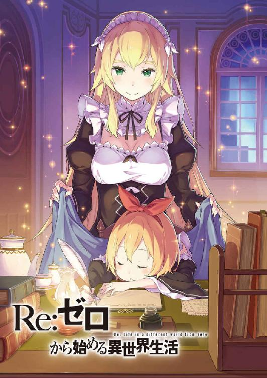
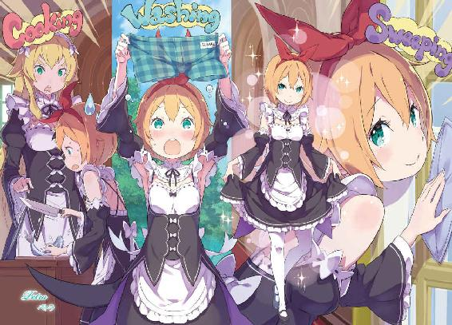
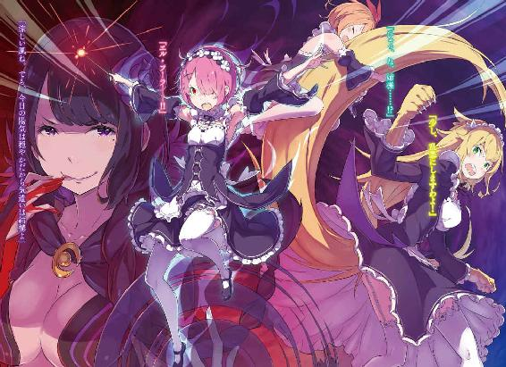
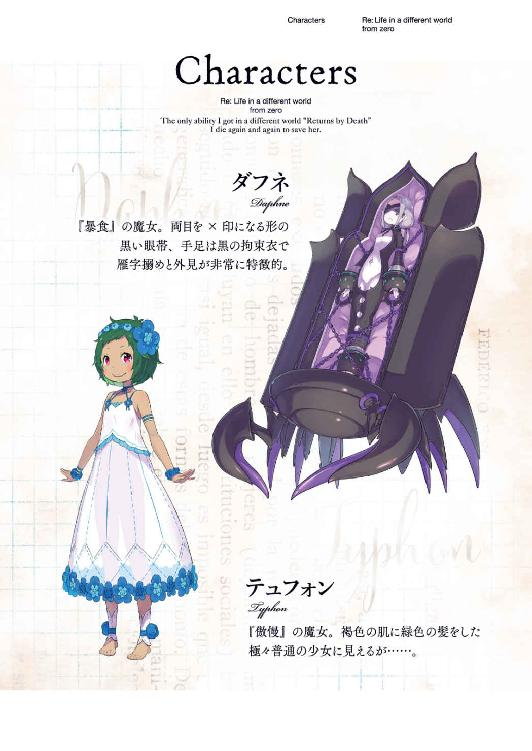
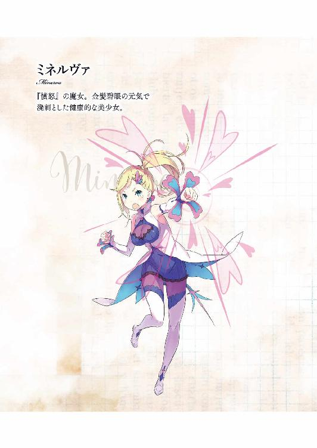
Ｒｅ：ゼロから始める異世界生活 11
長月達平

本作品の全部または一部を無断で複製、転載、配信、送信したり、ホームページ上に転載したりすることを禁止します。また、本作品の内容を無断で改変、改ざん等を行うことも禁止します。
本作品購入時にご承諾いただいた規約により、有償・無償にかかわらず本作品を第三者に譲渡することはできません。
本作品を示すサムネイルなどのイメージ画像は、再ダウンロード時に予告なく変更される場合があります。
本作品の内容は、底本発行時の取材・執筆内容に基づきます。
本作品は縦書きでレイアウトされています。
また、ご覧になるリーディングシステムにより、表示の差が認められることがあります。
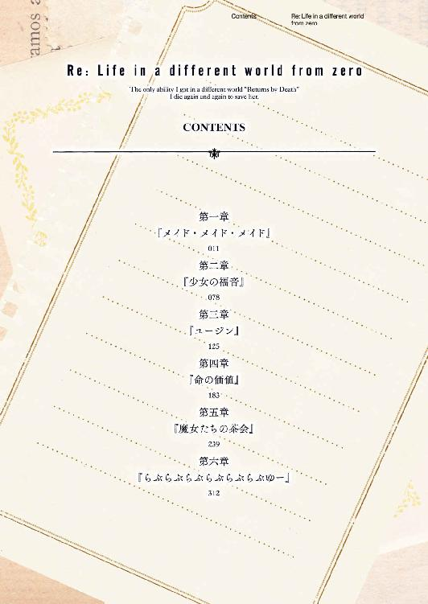
第一章 『メイド・メイド・メイド』
１
──失われた命の再構成は、ナツキ・スバルにいつも耐え難い苦痛をもたらす。
『死に戻り』の力には、死の瞬間と復活の間に一切のラグがない。
意識は『死』の直前のそれを引き継いだまま、時間と肉体だけが元の状態に戻るのだ。その意識と現実のズレは、凄まじいうねりとなってスバルの魂を摩耗させる。
それは今回、硬く冷たい床の上に舞い戻った瞬間も例外ではない。
──瞬間、最初にスバルの意識に割り込んだのは不快感だった。
「──う、ぇっ!? げほっ！ おぇげっ！」
意識が現実に追いつくより早く、口の中の異物感に激しくえずく。舌の上を土臭さと苦みが重なり、スバルは咳き込みながら必死に目を押し開けた。
「こ、こは......」
掠れた息を漏らし、スバルは薄闇に目を凝らして体を起こす。何度目かの瞬きで闇に目が慣れれば、そこは古びた石室──見覚えのある、遺跡の中だと気付いた。
「墓所の中、か......？」
黴臭い独特の空気も記憶に新しい。ここは、間違いなく『聖域』の墓所だ。
ざらつく床に手を当てて立ち上がり、スバルは何があったのか混線する記憶を繫ぎ合わせる。『死に戻り』の直後、流れ込む情報量に脳の処理が追いつかない。
『聖域』に避難したアーラム村の住民を連れ、村とロズワール邸に戻るところだったはずだ。そこでフレデリカと対峙する予定が、屋敷には人気がなく、不安が胸を突いた。
いるはずのベアトリスやペトラ、何よりレムの安否が気にかかって──。
『──言ったでしょう？ 約束をしたでしょう？』
ゾッと、艶めいた声に神経を直接撫ぜられ、スバルの喉が凍り付いた。
血に濡れた、背徳と悦楽の粋を極めたような声だ。それは失われる命を眺めながら絶頂に達し、陶然とした吐息と共に一方的な『約束』を語った。
斬り裂かれ、内臓をこぼした脇腹に触れる。当然、『死に戻り』した体に傷はない。しかし、傷痕は肉体ではなく、魂に深々と刻まれている。──否、
「土手っ腹ぶった斬られたのが、屋敷に連れ込まれた一番の理由だったよな......」
右の脇腹に触れる指をずらし、腹筋の中心をそっとなぞる。傷痕は消えたが、腹部を斬り裂かれたことは、スバルにとっての正史にあるれっきとした事実。
そして、それを為した相手こそ、スバルにとって異世界最初の障害──、
「──『腸狩り』、ここで再登場ってか。......勘弁、してくれ......よ」
じっとりと、汗の浮かぶ額を手の甲で拭う。
スバルの脳裏に浮かぶのは、自分と同じ黒い髪を長く伸ばした漆黒の美女。凶悪な刃物を振りかざし、スバルの命を二度も奪った戮殺者──エルザ・グランヒルテだ。
「なんで、あの女が屋敷に......いや、それもそうだが」
『死に戻り』の情報整理を済ませ、次にスバルは『現実』の方に意識を切り替える。
いったい、どの時点に『死に戻り』したのか。場所が墓所である以上、思い当たるタイミングは二回──そして、狭い石室で目覚める心当たりは一つだけだ。
「墓所の、『試練』を受けた直後......直前？ どっち......どっちでもいい！ それより、俺が『試練』を受けたあとってことは......」
電撃的に意識と現実が結び付き、スバルは弾かれたように振り返る。狭い石造りの小部屋の中、求めた人影はすぐ背後の床に倒れ伏していた。
「──エミリア！」
銀色の髪を広げ、白い頰を苦悶に歪めるエミリアの姿がそこにある。
傍らに膝をついて、スバルは彼女の寝顔に触れようとし、そこで躊躇した。
「────」
触れれば、エミリアの『試練』はそこで終わる。外から干渉されると、『試練』が見せる過去はまるで泡が割れるように、一瞬で弾けて消えてしまうのだ。
それはきっと、エミリアが懸命に過去を乗り越えようと足搔いていても関係なく。
「けど、今夜がダメなことは知ってるんだ......！」
首を振って躊躇を殺し、スバルは苦しげなエミリアを抱き起こし、胸に抱える。途端、エミリアの体が大きく背を反らし、何度かの震えのあとで、
「す、ばる......？」
「ああ、そうだ。俺だよ、エミリア。大丈夫か？」
曖昧な意識の中、スバルを認識したエミリアの呼びかけに微笑みかける。その微笑みと温もりに抱かれ、エミリアが現実を理解するのにしばしの猶予を。
そのまま、彼女が自分の置かれた状況を、『試練』の結果を受け止めて、それから子どものように泣き出してしまうのを、ただ静かに待ち続ける。
「──ぁ」
せめて、その心が壊れないように優しく包んで、スバルはエミリアが落ち着くまでの間、抱いた腕をずっと固く、離さないままにしていた。
２
「ご、ごめんなさい......やっと、落ち着いたから......話を、しましょう」
運び込まれたリューズの家、客人用の一室でエミリアが声を詰まらせながら言った。
その紫紺の瞳は微かに赤らみ、直前の混乱と悲哀の影響が色濃く残っている。それでも彼女が気丈に振る舞おうとする以上、口を挟むことはしたくない。
「その、ごめんね......墓所で迷惑かけて。それに、今だって......」
「エミリアたんにかけられる迷惑は、迷惑じゃなくて俺のやりたいことだから平気。それより、倒れた拍子にどっかぶつけたりしてない？ 今なら俺が優しくさするけど」
「ん。ちょっと倒れたときにお尻を打ったみたい。少しじんじんして......」
「ごくり。じゃ、じゃあ、そこを入念に......ラムさん？ 杖、背中刺さってない!?」
殊更ひょうきんに振る舞うスバルの背中に、ラムの手にした杖の先端がめり込む。指摘されたラムが杖をひねると、スバルは悲鳴を上げてその場から飛びのいた。
「おま、お前！ ちょ、やりすぎだろ!? 見ろこれ、血が滲んでる！」
「エミリア様、お加減は大丈夫ですか？ 包み隠さず、ラムには話してくださいね」
「ここまで俺無視できるって逆にすげぇな、お前は！」
エミリアの体調を慮るラムは、スバルの抗議に虫を見るような目を向け、「ハッ」と鼻で笑った。そのやり取りに、エミリアは弱々しい笑みを浮かべ、
「......二人とも、ありがと。体調は大丈夫。......だから、中の話を、しなくちゃ」
口元には微笑、しかし眦と頰、声には疲れと不安が隠し切れていない。
そんなエミリアを囲むのは、『試練』のために墓所に集まっていた面子──スバルとラムに加え、ガーフィールとリューズ、そして何故かオットーの五人だ。
そうした面々の注目を浴びながら、エミリアはつっかえつっかえ『試練』の内容と、失敗に終わった結果を告げる。その流れは前回とほぼ同じだ。違うのは──、
「それで、中に入ったナツキさんが無事だったのはなんでなんです？」
手を挙げたオットーの疑問に、前回のスバルはお茶を濁して言い逃れした。『試練』を受けたことを隠し、資格を保有している事実を隠匿したのだ。それは全て、同じ『試練』を受けるエミリアに、いらぬプレッシャーをかけないための配慮だったのだが。
──その受け答えを、今回は考えがあって変更する。
「理由は簡単だ。遺跡が光ったのを見ての通り、俺にも『試練』を受ける資格があった。だから、俺も『試練』を受けて......それをクリアしたんだよ」
「──は？」
そのスバルの発言に全員が呆気に取られ、次いで激震が走った。
特に、同じく『試練』に挑み、失敗したエミリアの驚愕は一際大きい。彼女は紫紺の瞳を見開いて、その震える宝石の眼にスバルを映している。
その視線に頷き返し、スバルは驚きの残る室内を見渡しながら続ける。
「驚かせたのは悪い。でも、正直、運がよかったんだ。『試練』の内容に、俺はたまたま事前に折り合いがついてたからな。......楽勝ってことはなかったけどさ」
「ふむ。スー坊が、か。しかし、それはそれは......ややこしいことじゃな」
『試練』と称される世界で、両親と接した時間を回想するスバルの胸を疼痛が過った。
そのスバルの言葉を受け、幼い顔の眉を寄せたのは『聖域』の代表であるリューズだ。幼い老女の険しい声、そこに自分の肘を抱くラムが薄紅の瞳を細めた。
「ややこしい......確かに。でも、これがバルスの戯言でないなら大きな成果だわ。本当なら結界が解ける。ガーフ、結界の様子は？」
「......少なくッとも、俺様やババアが感じる制約に変化ァねェな」
「噓をついたわね。死になさい」
「結論が早ぇよ!!」
珍しく逸った様子だったラムの毒、その切れ味に頭を抱えたスバルは、ふと気付く。
「......どうした、ガーフィール。そんな怖い顔して」
「──別に、なんッでもねェよ。......結界が解けちゃいねェッからだろ」
「それについちゃ、今から説明するとこだったんだよ。お前らの気が早いんだ」
鼻面に皺を寄せ、スバルを睨みつけていたガーフィールが視線を逸らす。その態度に腑に落ちないものを覚えつつ、スバルはエミリアに振り返った。
エミリアは変わらず、瞳に不安と困惑を湛えたまま、
「......教えて、スバル。『試練』を越えて、なのに、何を見たの？」
「見た、よりも知ったの方が正確だね。どうも、意地の悪いことに『試練』ってのは一個じゃないらしい。一個目が終わってもあと二個、全部で三個って話だ」
「あと、二つも......」
エミリアの瞳の不安が濃くなり、スバルも痛々しさに胸が詰まった。一つ目の、過去の『試練』でこの心労だ。あと二つなどと、文字通り気が遠くなる。
「やけに詳しいですけど、そんなこと、墓所で誰に聞いたんですか？」
「誰に......？ いや、誰って話じゃない。......『試練』が始まるとき、頭の中に自分の声が聞こえた。たぶん、人の意思ってよりは別のもんの影響だと思う」
教わったではなく、理解させられたに近い感覚だろうか。墓所で『誰か』と会った記憶はないのだから、そう考えるのが自然だ。
「『ミーティア』には、稀に触れるだけで使い方のわかるものもある。その類ね」
「いやぁ、僕は『ミーティア』なんて貴重なものに触る機会はなかったもので......」
「そうね。貧乏くさい顔しているもの」
「僕とラムさんってまだ会って半日の関係ですよねえ!?」
早くもオットーとの接し方を心得つつあるラム。二人のやり取りを余所に、スバルは寝台に腰を下ろしたエミリアの隣に同じく座った。そして彼女に視線を合わせ、
「エミリア、俺から一個提案がある。君は、それを嫌がるかもしれないけど」
「提案......？ それは、どういう......？」
「──俺が、君の代わりに墓所の『試練』に挑んで、クリアしてもいいって提案」
「────」
差し出した言葉に、エミリアが激しく動揺する。それは彼女にとって思いがけない一言で、スバル自身、投げかけるのに勇気と覚悟のいったものだった。
──エミリアに代わり、スバルが『試練』を受け、『聖域』を解放する。
それは前回、アーラム村への帰途、ガーフィールとの会話の中で生まれた考えだ。
道中でガーフィールは、失敗を重ねて苦しむエミリアを、それでも『試練』に送り出すスバルに、過去を乗り越える必要の有無を問い質した。
無論、すんなりと納得したわけではなかったが、青天の霹靂には違いなかった。
そういう選択肢もあると、提示する価値があると認められるほどには。
「俺は君の力になりたい。君が、過去に何を見たのかはわからない。でも、あんなに泣きじゃくって、苦しそうな顔されるぐらいなら......手を差し伸べてあげたい」
「......スバル」
「『試練』を受けて、『聖域』を解放するのは俺でもいいはずだ。あんな辛い思いして、過去に折り合いを付ける必要なんてどこにもない」
ゆるゆると首を振り、穏やかに語りかけるスバルにエミリアが視線をさまよわせた。
エミリアの葛藤はわかる。辛い過去との対面に、あれだけ苦しめられたのだ。投げ出せる役目なら投げ出して、スバルに任せたい気持ちだってきっとある。そうさせないのは、彼女の強く高潔な精神と、一度負ったものを捨てられない責任感。──何より、この先の『試練』が、自分と同じようにスバルを傷付けることを恐れる優しさだ。
だから、その優しさが足枷になるなら、それは不要だと教えなくては──、
「──黙って聞いてりゃァ、やッけに好き勝手に話進めてやがッけどなァ」
枷を外す一言が発される前に、ひどく不機嫌な待ったが背後からかけられた。その声の人物は牙を嚙み鳴らし、鼻面に皺を寄せ、姿勢を猫背に丸めて、続けて言い放つ。
「俺様ァ、そのお姫様......エミリア様以外が、『試練』を受けッのァ反対だ。少なくッとも！ てめェにだきゃァ絶対の絶対に、結界を解いてもらいたいたァ思わねェ」
「な──っ!?」
それはスバルにとって、ガーフィールからもたらされる二度目の青天の霹靂だった。しかし、二度目の衝撃は一度目のそれとは比較にならない。
発言の内容と発言者が繫がらず、スバルは激しく混乱する。その動揺するスバルに、なおもガーフィールは不可解な現実を突き付けた。
「いいか、繰りッ返すぜ？ 俺様ァ、お姫様以外が『試練』を受けるのを認めねェ。これはババアにも曲げさせねェ、俺様からの条件だと思っておけや」
「待て！ 待て待て、待て......！」
吐き捨てるようなガーフィールの発言に、スバルは必死に声を絞り出す。だが、その心中は驚きと混乱でしっちゃかめっちゃかになっていた。
当然だ。今のスバルの提案は他でもない、前周回のガーフィールが発案したのだから。
「なのに、そのお前がそれを言いやがるのかよ......」
「あァ？ 俺様が反対ッすんのが意外かよ。ずいぶんおめでッてェな、オイ」
「お前が不機嫌になるなよ。恨み言もしかめっ面も、権利があるのは俺の方だぞ......」
前周回、スバルに『試練』を受けろと打診しておいて、この場ではその提案を蹴っ飛ばすようなことを言い出す。ガーフィールの、その心変わりの真意が読めない。
「俺の中で飲み下せない感情が渦巻いてるが......お前はどうして反対だ？ お前にとっても、『聖域』の解放は早い方がいいはずだろ？」
「早ェ遅ェの話じゃァねェんだよ。こいつァ、筋の問題だ。だろォがよ、ババア」
「可愛げのない呼び方をするなと言うとろうに......。じゃが、ワシもガー坊の言ったことに反対はできん。言い方の問題はあるじゃろうがな」
「リューズさんまで......」
ガーフィールの意固地だけでなく、年長者の反対にスバルは困惑する。
感情的で気分屋に見えるガーフィールであれば、時機の違いで意見が変わる可能性もある。だが、リューズがそうした反応を示す人物とは思えない。
リューズはスバルの懇願の眼差しに、そのぶかぶかの袖を振りながら、
「スー坊の言いたいことはわかっておる。結界が解かれるのが早いに越したことはないとな。......じゃが、ワシは可能な限り、ロズ坊の思惑には沿いたい」
「ロズワールの思惑......」
「──この『聖域』の解放は、エミリア様の手で為されるべきということじゃ」
「──っ」
目を細めたリューズの言葉を受け、エミリアが息を詰まらせた。彼女は自分の胸に手を当てて、その睫毛の長い目を伏せると声を震わせる。
「や、やっぱり......私がやらなきゃ、ダメよ。......私が、やっぱり」
「いや、エミリアがそんな......」
「だ、だいじょぶっ！ スバルこそ無理しなくていいの。ちょっと......そう、ちょっといきなりだったから驚いちゃっただけで、何が起きるかわかってれば......」
『試練』の内容が過去と相対すること、それがわかっていれば心の準備はできる。
エミリアはそう強がるが、その覚悟では『試練』攻略に至れないのは実証済みだ。少なくともここから三日、エミリアは己の過去の前に心を挫かれ続ける。
それがわかっているから、スバルの瞳には悲壮な色が宿る。
エミリアが苦しむと、そうわかっているのに。見ていられない、見ていたくない。
だから──、
「スバルは......わ、私には、任せられないって、思うの？」
「──え？」
微かに意識を逸らしたところに、エミリアの不安に揺れる声が問いかけてきた。
驚いた息を漏らせば、エミリアはその場で弱々しく首を横に振って、
「私が、ダメなところを見せちゃったから......『試練』を任せられないって、そんな風に思って......だから、代わりにって」
「違う、そうじゃない。ただ、過去なんて無理に......」
「でも！ 向かい合わなきゃ『試練』は越えられないの！ そ、それができなきゃ、王様にだってなれない。......村の人たちも、『聖域』の人も、外に出してあげられない」
スバルの言葉を振り払い、エミリアは自分の肩を抱いて頑なになる。不甲斐ない自分を傷付けるように、その細い肩に爪を立てて。
「スバルに甘えてばっかりじゃ、いられない。ほんの少し前に、あんなにスバルは傷だらけになって、私のために......なのに、またそんなこと、させられない......ッ」
「......いいんだよ、それで。言い方は悪いかもだけど、持ちつ持たれつだ。適材適所の方がいいか？ ただ、この『試練』に関しちゃ俺の方が相性がいいだけなんだ。俺ができそうだから、俺がやる方がいい。君が頑張らなきゃいけない機会は、また必ずある」
「その機会の、大事な一つが、今なんじゃないの？ 嫌なことから目を背けて、スバルに押し付けて逃げて......それで、私、どうなるの？」
──逃げることの何がいけない、そう叫べればどれだけ良かったことか。
嫌なことから逃げて、辛いことに目を背けて、苦しいことに背を向けて、それで呼吸が楽になるならそうすべきだ。スバル自身、きっとこれまでそうして生きてきた。
だから、そうした生き方が──弱い生き方だと誹られるものだとしても、責められる謂れなどないと思っているし、言い切ることだってできたはずだ。
「────」
それなのに、スバルはエミリアの弱さを肯定してやることができなかった。
何故、言葉が出ないのか自分でもわからない。ただ、押し黙るスバルにエミリアはギュッと目をつむり、下を向いて唇を引き結んでしまう。
その様子に胸を突かれ、スバルは頭に何もないまま声をかけようとして──、
「──今夜は、ここまでしましょう」
短く、そう言ったのはスバルでもエミリアでもなかった。声の主は静かにエミリアの背後に回り込むと、そっと白い掌を彼女の口に当てる。途端──、
「......ぁ」
ふっと力が抜けたように、意識を失ったエミリアが前のめりに倒れる。
そのエミリアを慌てて抱き留め、スバルは腕の中の少女の寝顔に安堵の息を漏らす。それから、それをした人物──ラムを見つめて、
「何したんだ？」
「落ち着かせる香料を嗅がせたのよ。乱暴だったと、バルスは怒るかしら」
「強引なのは間違いねぇけど......最善だったよ。悪かった。面倒かけちまって」
「エミリア様のことでバルスに謝られるなんておかしな話だわ。いつから、エミリア様の保護者を大精霊様から譲り受けたの？」
「そんなつもりは......」
ない、と言いかけたが、スバルはその反論にまるで説得力がないなと肩を落とした。
何らかの事情でパックが姿を見せない現状、スバルがいつも以上にエミリアを気遣っているのは事実だ。なまじ、『試練』で摩耗していく彼女を知っていることもある。
そしてそれは、エミリア自身も自覚していることのようだった。
「ハッ、どうあれ話ァここッまでみてェだなァ」
言葉に詰まるスバルと、意識をなくしたエミリア。その二人の様子を眺めて、ガーフィールが退屈そうに鼻を鳴らした。その態度に不満はあっても、反論は出てこない。
今夜の話し合いは終わり。それを否定する余地はない。ただし──、
「お姫様と話すのはまた明日......できりゃァいいけどよォ」
続くガーフィールの呟きにも、スバルは何も言い返すことができなかった。
３
「──ちょっといいか？ 聞きたいことがある」
かがり火に照らされる夜の集落で、スバルは前を行く人影にそう声をかけた。
「あァ？ まァだなんか話があんのッかよォ」
声に足を止め、振り返る人影は二つ──ガーフィールとリューズの二人だ。不機嫌なガーフィールと、表情の読めないリューズ。その二人にスバルは指で頰を搔くと、
「そんなケンカ腰に構えるなって。少し質問があるだけだっつの」
「質問か。ワシらに答えられることならいいが、何が聞きたいんじゃ？」
嚙みつく姿勢のガーフィールを押さえ、リューズがスバルの質問を受け付ける。その態度をありがたく思いつつ、ふとスバルは首をひねった。
「そういえば、この家って元はリューズさんが住んでるんだよな。じゃあ、エミリアたちを泊めてる間、リューズさんはどこで寝泊まりしてんだ？」
「......てめェ、それ聞いてどうするつもりだ、オイ。言っとくが、ババアになんかしてみろ。俺様ァ絶対に許しゃァ......痛ェ痛ェ痛ェ！ なんッだよ、ババア!?」
「馬鹿も休み休み言うもんじゃろ、ガー坊。大体、ワシみたいな老いぼれに若いもんがどうこう思うものか。単に疑問に思っただけに決まっとろうが」
ガーフィールの腰を抓り、リューズが呆れた風に嘆息する。無論、ガーフィールの疑いは勘違いだが、彼女の老いぼれ発言には微妙に頷きにくいものがあった。
ともあれ、今の疑問は本来の質問とは目的が異なる。スバルは咳払いすると、
「さっきの、俺の提案への反対。あの真意が知りたい。聞かせてもらえるか？」
「......それはさっきも話した通りじゃ。『聖域』の解放は、エミリア様の手で為されるべきじゃと。それが、ロズ坊の望みじゃからな」
「ロズワールの思惑って言ってたよな。それって......」
前回、ロズワールと激論を交わした記憶が蘇り、知らずスバルの眉間に皺が寄る。
魔女教の脅威や、『試練』による結界の解放──それらをロズワールは、いずれもエミリアの功績とするための布石に利用すると言ってのけた。それが王選にもたらすメリットはスバルも同意できる。しかしその考えは、あまりにも人の心がない。
「あいつの考えを、リューズさんたちは支持するってことか？」
「勘違いッすんな。野郎が嫌いなのは俺様も同じだ。ッけどな、簡単じゃねェんだよ」
「スー坊の気持ちはわかる。ワシも、気持ちのいい話とは思わん。じゃが、ワシは集落の代表として、結界が解けたあとのことも考えねばならん立場じゃ」
リューズの発言にピンとこず、スバルは困惑に顔をしかめる。すると、そのスバルの様子にガーフィールが「あのなァ」と苛立たしげに頭を搔き毟り、
「結界が解けッても、ここに住んでる奴らが消え失せるわけじゃァねェ。暮らしも住むッとこも変わって、右も左もわからねェジジババは誰の世話になると思ってんだ？」
「──。そう、か。結界が解けて、正式に領地に迎え入れられても......ここがロズワールの世話になるのは変わらない。だから、リューズさんたちは」
「ロズ坊の意向に逆らって立場を悪くしたくない。スー坊らには悪いがの」
「......なんか、ますますロズワールに信用が置けなくなるな」
前回の好感度を引きずったままのスバルにとって、今の話はいよいよ胸が悪い。そんなスバルの答えにリューズは苦笑し、ガーフィールは一度強く牙を鳴らした。
「とにッかく、こっちの要求は伝えたぜ。『試練』受けんのはお姫様。資格があろォがなかろォが、てめェが受けんのは俺様が認めッねェ」
「そのお姫様って呼び方やめろ。エミリアを馬鹿にしてるように聞こえる」
「半魔もダメでお姫様もダメってか？ 文句が多いじゃァねェか。それに、あんだッけ後生大事に守られてて、お姫様でなきゃなんだってんだ？ えェ、騎士様よォ」
腰を曲げ、下からスバルを覗き込むガーフィールが挑発的に言った。それを受け、スバルは少し考え込んでから、すっと立てた指を彼に突き付ける。
「今の騎士様って部分、もっかい言ってもらっていい？」
「どッこに感動してやがんだよ、てめェ......」
照れるスバルと呆れるガーフィール、その二人の間でリューズが手を上げた。彼女はそのまま上げた手を口に当て、小さく欠伸をする。
「スー坊、そろそろ良いじゃろ？ 年寄りに夜更かしはキツイ。続きは明日じゃ」
「その外見で言われると違和感がすごいな......。けど、わかった。呼び止めてごめん」
「ハッ、『濛々たるアベンガム』だ。てめェ、墓所に寄りつくんじゃァねェぞ」
「意味はわからねぇけど、意図はわかった。俺も、今夜は墓所はもう御免だよ」
眠たげなリューズと、最後まで刺々しいガーフィールを見送り、一人残ったスバルは頭上──星の多い夜空を見上げた。満天の、というには雲の多い夜だが、それでも地上に光源のない星明りは格別だ。自然と、心が洗われる気がする。
「そんな爽やかな気分になるには、状況が厳しすぎるけどな......」
めまぐるしい一日と『死に戻り』、心身共にドッと疲れが圧し掛かる。が、スバルは気合いを入れるように頰を叩くと、仮宿へと振り返った。そして──、
「で、さっきまでの話、お前はどんな風に思った？ 部外者の意見を聞かせてくれ」
「......普通、この場合は第三者の意見って言いません？ 部外者の意見って言い出すと、立場的にも意見的にも話違ってくる気がするんですが」
「俺なりにお前の立場を気遣ってんだよ。あくまで部外者ってことにしとけば、あとで言い逃れする面目も立つだろ？ 言わせんな、馬鹿」
「じゃあ、話し合いにがっつり参加してたから無駄ですね、その気遣い！」
そんなやり取りを交わすのは、仮宿からそっと姿を見せたオットーだ。おそらく、今の会話を盗み聞きしていたらしい彼は、悪びれた様子もなく「しかし」と前置きし、
「素直に話を聞いてた感想を言えば、ガーフィールたちの言い分はもっともでは？」
「────」
「辺境伯の狙いもわかりますし、エミリア様の王選候補者としての立場もある。確かにナツキさんが『試練』を代行しても、功績はエミリア様のお手柄になると思いますが......それで今、この場所にいる当事者たちの納得を、つまりは支持が得られますかね？」
「その理屈は、俺もわかってる。どう考えても、エミリアが『聖域』を解放する方が何もかも物事はうまく回るさ。だけど......」
「──エミリア様には、『試練』を乗り越えることができない？」
口ごもるスバルの躊躇いを、あっさりと第三者が蹴破った。振り向けば、それはエミリアの寝所を整えていたはずのラムだ。彼女の言葉に、スバルは苦い顔で頭を振る。
「無理、とまで言わない。でも、短期間で結果を出すのが厳しいのはわかるだろ？ そんで結界の問題は、長く時間をかけるべきじゃない」
「そうね。少なくとも、王選の決着する三年以内に終わらせてもらいたいところだわ」
「それはそれですげぇ気が長ぇ話だな！」
ラムお得意の軽口だとは思うが、真顔で言われたので本気の可能性を潰しておく。そしてその間、黙っていたオットーが腕を組んで頷くと、
「実際、ナツキさんの懸念はわかる話です。避難してきた村の方々の負担と、『聖域』の食糧含めた生活事情......遠からず、破綻するのは目に見えていますからね」
「ただでさえ、いきなりの避難生活でみんなストレスが溜まってる。『聖域』の人たちだって、自分たちの食い物を分け与えてる状態だ。たぶん、不満はすぐに爆発するぜ」
「そうなる前にどうにかしたい、と。腹案は？」
「なんつーか、話が早すぎて不気味だな......。できれば、取り返しのつかない分裂が中で起きる前に、村の人たちを『聖域』から解放するのを提案したい」
ラムとオットーの前で、スバルは前回も提案した人質解放案を提示する。
前回は認められた提案だ。しかし、今回も通るかはわからない。何故なら前回、この提案が通った背景には、『スバルが試練を受けること』が条件に盛り込まれていた。
その条件自体が、今回は『聖域』側に禁じられたのだ。交渉の難航は予想がつく。
「共倒れは彼らも望まないでしょうし、結界の性質上、誰かが『試練』を終わらせないことにはエミリア様は出られない。......概ね、提案する条件は満たせていそうですね」
スバルの提案を聞いて、説明不足の部分を自分の解釈で補ったオットーが頷く。そのオットーの様子に、ラムは感心した風に「ふうん」と目を細め、
「驚いた。思った以上の拾い物をしてきたものね、バルス」
「だろ？ 道端に縛って転がしてあったんだ。俺が世話するから飼っていい？」
「ちゃんと世話するのが条件よ」
「犬か猫の話するのやめてもらえます!? あんたら息ピッタリですよねえ!?」
オットーの叫びに、スバルとラムの嘆息が重なる。まさしく息ピッタリなところを証明したところで、スバルはどうしたものかと考え込んだ。
人質解放の提案だが、先のやり取りからして、ガーフィールがすんなりと受け入れるとは思えない。かといって、スバルにはゆっくりできない理由がある。
──本格的に、『死に戻り』した事態そのものの方へも意識を向けなければ。
「となると、このあとの話し合いはその提案が焦点になりそうね」
「ああ、そうだな......。って、何の話し合い？」
「......これは、もうダメね」
「一人で結論出すのお前の悪い癖だぞ！ なんだよ！」
本気で憐れむラムの態度に、スバルは地団太を踏んで不平をアピールする。その子どもじみた反応に憐れみを深めつつ、ラムは肩をすくめた。
「墓所での『試練』と憔悴したエミリア様、バルスの小さな頭には過酷な状況が続いたのは斟酌するけど、大事な約束を忘れるのはいただけないわね」
「約束関係での不義理って俺にとってトラウマなんだけど、何があったっけ？」
「──『試練』のあと、ロズワール様が時間を作ってくださる」
わりと本気で不機嫌なラムの言葉に、スバルは「あ」と口を開けた。その間抜けな顔に己の肘を抱くと、ラムはなおも続ける。
「そこで、これまでの事情と今後のことを話し合う。そのはずでしょう？」
４
──今回の『死に戻り』の焦点は、これまでとは全く異なる部分にある。
普段の、というには語弊があるが、通常の『死に戻り』でスバルが重視するのは、その状況を作り出した加害者と、その脅威への対処法の部分が大きい。
以前のループを例に挙げれば、『死に戻り』の状況を作った加害者が魔女教であり、それらへの対処にスバルは、クルシュたち別の陣営の力を借りた。
そうした観点でいえば、今回の加害者は『腸狩り』のエルザであり、彼女への対処策は戦闘か逃走、おそらくいずれかを選択することになる。
ただし今回、それ以前に気にすべき点が明らかになっていない。それは──、
「──俺がエルザに殺されたとき、フレデリカたちはどうしてたのか、だ」
今回、屋敷に戻ったスバルはフレデリカに強い警戒心を抱いていた。
『聖域』へ向かうエミリアに、彼女が転移の原因となった輝石を持たせたことが原因だ。その真意を知ることも目的として、スバルは覚悟と共に屋敷に舞い戻ったのだが。
「まさか、出迎えにエルザの凶刃とは恐れ入った。おかげで......クソ、おかげでなんにもわからねぇまんま、『死に戻り』する羽目になっちまった」
収穫がゼロとまでは言わないが、拾えた情報はあまりにも少ない。最大の懸案事項は、加害者の存在に対して、被害者の存在が不明瞭すぎることだ。
屋敷にいたのはフレデリカを除けば、ベアトリスとペトラ、そしてレムの三人──はたして、彼女らはあの屋敷で無事でいてくれたのか。仮にフレデリカがスバルたちに敵対する立場ならば、エルザとは繫がっていたのか。いずれにしても──、
「あのイカれた女が、レムたちに何もしないなんてとても思えねぇ......！」
蘇る記憶は、エルザの凶刃に倒れた痛みと、凶行を止められなかった無力感。
エミリアを殺され、フェルトを殺され、ロム爺を殺され、スバル自身も殺されて。
『腸狩り』の戮殺者としての嗜好には、スバルはこれ以上ないほどに信頼を置いている。エルザが殺しの場で、獲物を見逃すことなどありえないと。
だから──、
「──一刻も早く、屋敷に帰る必要がある。何が起きてたのか、知るために」
それこそが、『聖域』の解放と共に、スバルが挑まなければならない難題だ。
「──なるほどねーぇ。事情は把握したとーぉも」
長いスバルの説明に、寝台に横たわるロズワールは深々とそう頷いていた。
場所はロズワールの静養する一室で、室内には彼とスバルの二人しかいない。オットーはともかく、ラムは同席を拒まれたことに不満げだったが、ここは仕方ない。
悪巧みをする場に居合わせる人間は、少ないに越したことないのだから。
「それにしても、望外の結果だ。魔女教の撃退だけに留まらず、よもやリーファウス平原での白鯨討伐にまで参戦するとはねーぇ」
「それに関しちゃ、論功式は日を追って改めてって話になってる。俺の手柄は小さくないって言ってくれてるのに甘えると、悪くない評価はもらえるはずだ」
「悪くない、どころじゃーぁ収まらない気がするけどね。それに個人的にも、白鯨の討伐への協力には礼を述べたい。......ヴィルヘルム殿は？」
片目を閉じ、黄色い瞳だけの問いかけ。それにスバルは一度唾を吞み込む。
「お前の口からヴィルヘルムさんの名前が出るとは思わなかった。......いたよ。白鯨にトドメ刺したのはヴィルヘルムさんだ。すげぇ......その、すごかった」
「そうかい。──それは重畳だ」
「──？」
やけに実感のこもった呟きだと、スバルは疑問に思って眉を寄せた。
妻の仇への復讐、その宿願をヴィルヘルムが果たしたことをロズワールは喜んでいる。
「ロズワール、ヴィルヘルムさんとは知り合いだったのか？」
「......いーぃや、私とは面識がない。ただ、先々代が少しね。だから勝手に、彼の『剣鬼』の執念にエールを送っていた。そーぉれだけのことさ」
それだけ、とロズワールは言ったが、彼の横顔に浮かぶ感情は複雑なものだ。到底、今の言葉は信じられるものではない。ただ、それを追及する余裕がないのもまた事実。
「気になるは気になるが、今は本題に入ろう。俺の提案は伝わったよな？」
「私からの、君の功績に報いる話も重要なつもりだーぁけど......いいさ、続けよう。君の提案とはつまり、アーラム村の住人を『聖域』から解放する話だーぁね？」
促したスバルに笑いかけ、ロズワールは胸に巻いた包帯に触れながら頷く。
「確かに、エミリア様が結界の内に入った時点で、ガーフィールたちの思惑は成立したも同然。エミリア様は結界を解かなくては外に出られない。保険として、人質を結界の中に残しておく必要は彼らにもないだろーぉね」
「筋は通した話のはずだ。『聖域』の問題を先延ばしにするわけでも、投げ出したりするわけでもねぇ。ただ、向こうも譲歩すべきだって穏当な提案だよ」
「穏当とは言いようだーぁね。実は君には別の懸念もあるんじゃーぁないの？ 例えば、エミリア様が『試練』に心が挫けたとき、村人の存在を盾に、無理やり墓所へ挑まされる脅迫材料になりかねない。その可能性を前もって潰すために......とかね」
片目をつむり、見慣れた黄色の瞳だけでロズワールがスバルを見つめる。彼のその問いかけに、スバルは腕を組んで重苦しく顎を引くと、
「いやごめん、それは考えてなかった。つか、その想像怖いよ。ちょっと引くわ」
「あれーぇ？ 私の考えすぎ？ これは失礼、驚かせてごーぉめんね？」
度を越えた悲観、あるいはあくどい思考を誤魔化すように笑うロズワール。その笑みに白けた目を向けながら、スバルは彼の挙げた可能性を内心で否定する。
選択肢としてだけなら、なくはない。しかし、それをやるような人はいない。たったの数日だが、スバルはガーフィールやリューズ、『聖域』の人間をそう評している。
「ともあれ、だ。君の提案はわかったが......私に何をしてほしいのかーぁな？」
「今の提案を、俺からじゃなくてロズワールからリューズさんたちに通してほしい。今回はどうも......俺だと折り合いが悪くなりそうなんだ」
「──今回。ふーぅむ、それはどうして？」
「ガーフィールの野郎がいたく俺をお気に召さないらしい。あの気分屋に構って説得する時間が惜しいんだ。なんで、俺以外の人が言った方がいい」
スバルが『試練』に挑むことへ反対したことも含め、ガーフィールの態度は前周回と明らかに異なっている。刺々しい態度と敵視に近い眼光は、以前の周回で覚えのないものだった。何か失言があったか、あるいは行動の何かが彼の神経を逆撫でしたのか。
いずれにせよ、今のガーフィールとスバルが接触することは避けるが吉だ。
「感情的になったあいつに、俺の意見ってだけで頭ごなしにされても困る。リューズさんも、ガーフィールに消極的に同意しそうで、それがちょっと怖いんだ」
「そこで私の出番、と。ＯＫ、いいとも。私からご老体に話をしておくよ。ただ、私もガーフィールには嫌われているから、すぐ話がつくかは不安があるけどねーぇ」
共に嫌われ者同士、ロズワールの快諾にスバルは難しい顔で希望を託した。
おそらく、この提案自体は渋々ながらも受け入れられる。数日中に、村人の解放は約束されるはずだ。──ただし、それはスバルの狙いの第一段階に過ぎない。
「さーぁて、私への用件はこれで終わりでいいのかな？」
「──まだだ。むしろ、今の提案とひっくるめてこっちの方が大事な用件だよ」
その前置きに、ロズワールの頰が一瞬だけ硬くなる。だが、彼はすぐにその強張りを薄笑いに変えると、自分の長い藍色の髪を指で梳いた。そして──、
「──聞こうか。何がお望みなのかーぁな？」
静かな問いかけに、スバルは一度唾を吞み込み、それから続けた。
「人質を『聖域』から解放する話はさっきの通りだ。そのことを、アーラム村に残ってる人たちに伝えにいきたい。不安がってるみんなに、家族が帰ってくるって」
「ふーぅむ。それはつまり、結界を解くことや人質解放に先駆けて......」
「俺だけで村に戻る。当然、フレデリカが何か企んでる屋敷にも、だ」
声が上擦り、視線に熱がこもり、スバルはその思惑をロズワールへ発信した。
『死に戻り』した事態を整理し、『試練』に挑むエミリアを気遣い、『聖域』の住人であるガーフィールを警戒し、一見、スバルは冷静なように思える。
しかしその実、スバルの胸中は尽きぬ焦燥で今にも破裂しそうだった。
屋敷に残るフレデリカ、彼女とエルザとの間の繫がりや、屋敷でいったい何が起きていたのか。それを早急に知りたい。数日の説得を待つことなどできないほどに。
「君の懸念はわかるよ。しかし、私の知る限り、フレデリカは軽はずみに......」
「──お前に、何がわかる」
「────」
何事か、スバルの不安を軽減する言葉を紡ぎかけたロズワールを黙らせる。放たれたスバルの低い声には、ひどくどす黒い感情が込められていた。
当然だろう。ロズワールの私見に、フレデリカがどう映ろうと関係ない。スバルが見てきたものが事実だ。未来に必ず『何か』が起きる、その事実の方がずっと重い。
「頭のいいお前らしくないこと言うなよ。フレデリカはエミリアに輝石を持たせた。それはあいつが何か企んでた証拠だ。お前も、そう言ってただろ」
「......それでも、望んで他人に危害は加えない。そんな勇気のある子じゃーぁない」
「勇気なんて俺にだってない。でもそれは、必死になれない理由にはならない」
究極的に、その人間を突き動かす衝動に明確な答えはない。スバルが駆け抜けてきた原動力だって、勇気なんかでは決してない。ただ、『嫌だった』だけだ。
「ロズワール、半日の距離だ。パトラッシュと俺だけなら一日で戻ってこれる。そうする許可と、それをさせる許可を取り付けてくれ」
「仮にそれを許して、仮にフレデリカに明確な敵対の意思があって、仮に彼女が君に対して敵意を行動に移したなら......君はどうするんだい？」
「────」
「あの子にも、亜人の血が流れている。屋敷で働かせる都合上、それなりの武芸も学ばせた。残念だーぁけど、君では歯が立たない」
「よ、余計なことを......」
ロズワールの通告、それはストレートな問題となってスバルの喉を詰まらせた。
敵はフレデリカと、場合によってはエルザの二人だ。対する戦力はスバル一人、ペトラや眠るレムは数えられない。ベアトリスは、接触できる確信がない。
かといって、『聖域』から屋敷へ連れ帰れる戦力は──、
「エミリアは結界、ロズワールは大ケガ、オットーは戦力外通告......詰んでる？」
「一人を除けば、そうなるねーぇ」
顔を青くするスバルだが、その蒼白な顔面にロズワールが指を向けた。その指先にスバルが目を奪われると、ロズワールは五指を滑らかにくねらせ、告げる。
「君の提案に対し、私の方からも条件を付けよう。今言ったように、君を一人で向かわせればむーぅざむざ死なせることにもなりかねない。だからそうならないように」
「ならないように......？」
一拍、そこで間を置いて、ロズワールは言った。
「──ラムを連れていきなさい。あの子なら、君の力になるはずだーぁよ」
５
「──はっきり言って、気に入らない状況だわ」
「......ここまできてまだそれ言いますかよ、姉様」
明朝、集落の入口にやってきたラムが開口一番、不機嫌な顔でスバルにそう言った。
実に彼女らしい言い分に、スバルは苦笑しながらも頭を搔く。
──昨晩の話し合いの結果、スバルはロズワールの条件を吞むことにした。
実際、フレデリカへの対策として、現実的に用意できる戦力はラムしかいない。当然、その話にラムは難色を示したが、最後には折れて指示に従ってくれた。
とはいえ、それで彼女の憤懣が消えてなくなるわけではなく──、
「ロズワール様のお体が万全でない今、ラムが傍を離れるのは不安で仕方ないわね」
「つっても、お前がいても何ができるってわけでもないだろ？ あのケガの包帯も、ラムじゃなくてガーフィールがやったって聞いて俺は啞然としたぞ」
「馬鹿馬鹿しい。ラムがやって、ロズワール様のお怪我が悪化したらどうするの？」
「どうするじゃねぇよ、反省しろ!!」
自分の能力不足にふてぶてしいラムを見て、スバルは声を大きくする。朝の『聖域』にその声が遠く響くのが聞こえて、スバルは深々と息を吐いた。
話し合いの明朝だ。準備は最速で整えたと言ってもいい。だが、『死に戻り』の焦燥を思えば、本音は昨夜の間にも出発したかったぐらいだった。
「夜の『クレマルディの森』は危険が多い。『聖域』の結界だけに留まらず、外部の人間の侵入を拒む天然の要害よ」
「......人の心を勝手に読むな」
「顔に書いてあったのよ。そんなに、屋敷に残してきた女の子が心配？」
洞察力に優れるラムが、スバルの焦燥の理由を掬い取る。ラムが言及したのは、屋敷で新たに雇ったペトラのことだ。仮にフレデリカに敵意があれば、少女の存在はスバルたちのアキレス腱にもなる。それは避けたい。ただし、それだけではない。
「心配なのは、ペトラだけじゃねぇよ」
「──？ ベアトリス様なら、書庫に入ったままだと思うわよ」
スバルの憂慮を疑問視するラムは、屋敷に残したもう一人──レムの存在に触れない。当然だ。彼女はレムのことを忘れているし、スバルもまだその話をしていない。
機を逸したといえば聞こえはいいが、実際は怖気づいただけだ。無論、屋敷までの道中で伝えなければならないとは思っている。
「気が重い、けど......二人っきりなのはかえって気持ち的にはマシか」
「────」
「って、悪い悪い、パトラッシュ。お前がいるのを忘れてたわけじゃねぇって」
呟きを聞きつけた地竜が、抗議するようにスバルの肩に鼻を擦り付ける。スバルの愛竜であるパトラッシュは、『聖域』から屋敷に戻るのに最も重要な存在だ。帰路の把握に長距離の走破、それに今回は竜車に乗らず、ラムとの相乗りもパトラッシュ頼りなのだ。
「足りなすぎる主人を補う、いい地竜ね。男を見る目がないのが可哀想だわ」
「それには俺も言い返せないんだけど、言い返せないのが癪だな......」
「──で、いい女に挟まれて堂々のご帰還ッてか。いいご身分だなァ、オイ」
情けなく肩を落とすスバル、その背中に声がかかり、渋い顔で振り返る。声で予想した通りの相手だ。それはのしのしと草を踏み、二人と一頭の下へやってくる。
「こんな朝っぱらから、お前が見送りにくるとは思わなかった。義理堅いな」
「ジジババはどいッつもこいッつも、寝るのも起きんのも早ェかんな。ここで暮らしッてるうちに俺様も習慣付いた......って、んなこたァどォでもいいんだよ」
「ガーフが勝手に話し始めたんでしょうに」
姿を見せたガーフィールに、ラムはすっかり呆れ顔だ。しかし、スバルの心境は今の発言に相違ない。ガーフィールが見送りにくるのは、わりと本気で予想外だ。
「そんなに俺とラムが相乗りするのが心配なのか？ 言っとくが、二人乗りしても背中に当たるようなもんないよ？ たぶんすごい硬い」
「うるッせェな。んなこと、俺様が世界で一番知ってらァ......痛ェ!?」
「知ってるはずないでしょう、張り倒すわよ」
「張ってッから言うんじゃァねェよ！」「ついでみたいに俺を叩くのもやめろ！」
下品な二人の頰を同時に張って、ラムがやれやれと肩をすくめる。そして、互いに頰に紅葉を貼り付けたスバルとガーフィールは顔を見合わせ、
「とにかく、見送りはありがとよ。......ここにきたってことは、聞いたよな？」
「あの余所者連中を外にッ出すって話か？ それなら、ロズワールの野郎に夜の間にな。正直、勝手に話進めッられたのは面白くねェが......反対はしねェよ」
「そっか、それは助かる。最悪、お前がここに力ずくで邪魔しにきた線も考えなかったわけじゃないからな。そうなったら、ラムを遠くに投げて囮にするしかなかった」
「引っかかるわけッねェだろ！ ......ねェよな？」
「知らねぇよ!! ラム、お前もなんか言ってやれ......」
急に自信がなくなるガーフィールを怒鳴りつけ、スバルは隣のラムに声をかける。だがそこで、ラムが眉根を寄せ、何事か考え込んでいることに気付いた。
「ラム？ どうした？」
「......今のバルスとガーフの馬鹿話に、頭が痛くなっただけよ」
しかし、スバルの問いかけにラムは首を振り、普段の調子でそう応じる。そうして話を区切られれば、スバルとしても追及はできない。
ともあれ、スバルはガーフィールの方に向き直り、
「ひとまずいってくる。明日には戻るつもりだから、その間は頼む」
「......お姫様に、挨拶ッしてこなくていいのかよ」
「お前が俺とエミリアの心配って、ますます驚かせるな。......けど、大丈夫だ。手紙は残しておいたし、オットーにも寝てる間にうなされるぐらい頼んでおいた」
「あの兄ちゃんッも大変だな。『テムテムの母屋通い』ってわけだ」
ガーフィールの謎慣用句はさておき、彼の気遣いだけは素直に受け取っておく。
昨夜のロズワールとの話し合いは、エミリアにきちんと相談できていない。眠った彼女が起きる前の出発だ。説明と、納得と、言い訳と、その時間をスバルは惜しんだ。
当然、エミリアを心配がらせることになると思い、手紙はしたためたものの──、
「傍にいられない不安は尽きない。......だから、お前に任せたぜ、ガーフィール」
「あァ？ なんだって俺様にッ任せるってんだよォ？」
「お前が強そうで、『聖域』のことも考えてて、エミリアに何かあったら困るってこともキッチリわかってる一人だから、かな」
「────」
「あと、最悪、ラムが色仕掛けしたら頼みを聞いてもらえそう......ぐぁぁぁ!!」
「反省がないわね、バルス」
「さっきと全く同じ場所を叩くな！ 鬼か！ ......鬼だった！」
涙目になり、折檻に訴えを起こすスバルをラムが「ハッ」と鼻で笑う。そんな二人のやり取りを余所に、直前の会話の最中からガーフィールは無言だ。
ただ、彼はしばしの沈黙を経て、その鋭い牙を嚙み鳴らすと、
「......いいぜ。ひとッまず、てめェの口車に乗ってやらァ」
「そ、そうか、助かる......俺のほっぺたも浮かばれるぜ......」
「ラム、野郎のケガのことッもだ。んな、心配そうな面ァしてんな。らしくねェ」
頰をさするスバルの隣、無表情のラムにガーフィールがそう告げる。それを受け、ラムは少しだけ頰を硬くすると、
「ガーフのくせに、生意気な口を利くものだわ」
と、そう言って彼に背を向けた。話は終わり、その意思表示だろう。出発前に長く時間を取るのも問題だ。スバルも、そろそろ『聖域』を出たい頃合いだが。
「......そう言えば、今回はお前、俺に渡すモノないのか？」
「あァん？ 何言ってんだ？」
パトラッシュに跨る直前、そんなスバルの疑問にガーフィールが首をひねる。疑問符を浮かべる彼の態度に、スバルの脳裏は前回の世界を回想していた。
前回、村へ戻る道のりに同行したガーフィールは、フレデリカとの再会に不安を抱くスバルに、自分の持っていた輝石を渡した。役立つかはわからないが、と言って。
結局、スバルはフレデリカと顔を合わせることのないまま死亡し──、
「そして、今回はそれを渡してくれるほど好感度が稼げてない、か」
前回は帰還までに三日あった時間が、今回はほんの半日しか滞在していない。それではガーフィールに、スバルを気遣う理由がないのも当然だ。しかし──、
「──ガーフ、これからフレデリカに会いにいくラムに何か気遣いは？」
「俺様が何をしてやれッて......」
「惚れた女が役目を果たしにいくのよ。力になりたいとは思わないの？」
「都合のいいときッだけ、てめェって女は......そらよォ」
いけしゃあしゃあとのたまったラムに、ガーフィールが舌打ちと共に何かを投げ渡す。一瞬、朝日に青く煌めいたそれは、スバルの記憶にもある輝石のはずだ。
スバルの意図を察し、ラムがガーフィールに差し出させた。さすがとしか言えない。
ラムの手並みに内心で感嘆しつつ、スバルはパトラッシュに跨り、彼女へ手を差し伸べる。意外とラムは素直に手を取り、二人で地竜に跨って相乗り完了。
それからスバルはガーフィールに手を上げ、改めて『聖域』のことを彼に託す。
「エミリアを頼む。できるだけ、俺が誠心誠意謝ってたと伝えてくれ」
「んなもん、てめェの口から伝えろやァ!!」
ガーフィールのそんな怒号を切っ掛けに、スバルはパトラッシュに走るよう命じた。
森の冴えた空気を切り裂いて、漆黒の地竜が加速、森を走破する。ぐんぐんと速度は上がり、見送りのガーフィールもすぐに見えなくなっていった。
「それで、バルス？ ガーフのこれが何かの役に立つの？」
『風除けの加護』の効果で、疾走する地竜の背中でも揺れと風は感じない。その間、スバルの後ろに座り、こちらの腰に手を回すラムが受け取った輝石を差し出してきた。
紐に繫がれ、首飾りにされた輝石だ。やはり、フレデリカのものとよく似ている。
「けど、効果のほどはわからねぇ。お前の方こそどう思う？ 付き合い長いんだろ？」
「持っていることさえ知らなかったのに、わかるはずないでしょう。......ただ、揃いの品物である以上、思い入れはあるでしょうね」
フレデリカとガーフィール、血の繫がりを匂わせる関係ながら、『聖域』の解放と停滞とで意見の割れる二人──そこに、この輝石が活路となってくれるだろうか。
「────」
「......さっきから、やけに浮かない顔だな？」
そこまで考えたところで、スバルは沈黙するラムの横顔に普段はない陰りを見た。それは先のやり取りの最中、スバルを誤魔化したときに見せたのと同じものだ。
「ガーフィールじゃねぇけど、らしくないな。気掛かりがあるなら話せよ」
「......バルスの、さっきの話に違和感があったのよ」
重ねた追及に薄紅の瞳を細め、少しの躊躇いのあとでラムがそう言った。彼女のその発言に「違和感？」とスバルが首を傾げる。
「戯言の最中に、ラムを囮に投げ飛ばすなんて言っていたでしょう」
「言った......かな？ 勢い混じりであんまり覚えてねぇけど......」
「言ったのよ。そして、何故かそのことが妙に胸に引っかかったの。まるで──」
そこで言葉を区切り、一拍置いてラムは続けた。
「──本当に、そんなことがあったみたいに」
「────」
ラムの呟きに刹那だけ眉を寄せ、そこでスバルははたと気付いた。気付いて、その遅すぎる理解に自分で自分を殺したくなる。
スバルがラムを投げ飛ばしたことは、実際にあった出来事だ。だがその事実はきっと、今はスバルの中にしかない。──何故ならそれは、レムと関わる記憶なのだから。
魔獣ウルガルムの騒動の最中、暴走したレムの動きを止めるために、スバルはラムの存在を囮として利用した。そのときのことが、レムが世界の記憶からこぼれ落ちたことで失われ、あったはずの事実の杜撰な辻褄合わせが行われたのだ。
「バルス？」
世界がゆっくりと着実に、レムの存在をなかったものにしようとしていく。
本来であれば、それを止める術はきっとなかった。しかし、ナツキ・スバルの存在がその歯止めになれるのなら。レムを繫ぎ止める、楔になれるのなら。
「──ラム、大事な話があるんだ。お前にとって、世界で一番大事な話だ」
「......そんなもの、ロズワール様以外にないはずだけど」
「いや、あるんだよ。──だから、その話をするよ」
しなければならない話なのに、切っ掛けに怯えて先延ばしにしていたことを恥じる。
目的の屋敷までの道中、時間はまだまだあるのだから。
考えなくてはならないことは無数にある。それでも、今だけは──。
「レムって子が、いてさ」
──敬愛していた姉の心に、あの子の居場所を作れるように、話をしよう。
６
──ロズワール邸への二度目の帰還は、道中、何の問題もなく果たされた。
「とはいえ、ひでぇ目に遭ったのは屋敷の中の話だからな......」
頰を搔き、門前でパトラッシュから降りたスバルはそう独りごちる。
すでに目的の片方──建前であった、アーラム村の住人への報告は済ませたあとだ。『聖域』に残る彼らの家族はじきに解放され、再会は近日中に叶うはずと。
その一報に喜ぶ彼らを、今回の帰還の大義名分に利用した罪悪感はあった。だが、これも全ては皆の無事を守るため。そう、スバルは自分に言い聞かせる。
「一丁前に良心の呵責でも受けていそうな顔ね。その調子じゃ、先が思いやられるわ」
「先って、フレデリカのことが気掛かりなのはお前も同じ......」
「そんな目先の話じゃなく、もっと大きく先々のことよ。エミリア様の王選のことを思えば、バルスの悪巧みする機会も増えるでしょうに......無理そうだけど」
そんな辛辣な評価に、スバルはぐうの音も出ない。同じく地竜を降り、スバルの隣で屋敷を眺めるラムの様子は泰然としている。その横顔に、スバルの抱くような弱々しい葛藤は微塵も見られない。その点、本当に羨ましいと思う。
「俺の小市民的な思考が、いつまでも抜けなさそうなのが悪いのかね......」
「ラムの十年とバルスの数ヶ月、忠誠心の年季が違うわ。同じ土台に並べようなんて考えの方がおこがましい。......それより、覚悟の方はできているの？」
「それは俺からも、お前に聞き返したい質問だよ」
考え方の違いは後回しに、直近の覚悟を問い質すラムにスバルは片目を閉じた。
目的のロズワール邸は眼前、もう後戻りできる状況にはない。前回のループと違い、帰還日数は二日も前倒しにしているが──。
「現状で何も、起きててくれるなよ......」
はっきり言って、今回の屋敷への帰還は現状の『死に戻り』で最速のパターンだ。これより早く屋敷に戻る方法は、墓所を出た直後に形振り構わず走るしかない。
その場合でも、パトラッシュはスバルに協力してくれるだろう。しかし、エミリアやロズワール、他の関係者の理解は得られまい。無論、間に合わせるために必要なら、スバルは躊躇いなく強行するつもりでいるが。
「────」
自然、考え込むスバルの手は右腕──手首に巻かれた白いハンカチに触れている。それは旅の安全を祈るお守り、必ず無事に返すと、ペトラと約束した証だ。
「仮にフレデリカが敵の場合、いつ事を起こすつもりなのかが重要だ。ひとまず、昨日も村には顔を見せたって話だから、俺たちが出発した直後にいきなり何かしでかしたって可能性が潰せてるのはでかいけど......」
「バルス」
「攻めるか逃げるか、その選択肢も重たいよな。今回、ラムがきてくれてるけど、戦いになったら焼け石に水......エルザ相手ならケツまくって逃げるのが大正解だ。そうすると、また避難にごねそうなベア子の奴がネックに......」
「バルス」
「なんだよ？ 今、必死に考えをまとめてんだよ、わかるだろ？ ここの十分不十分が後々になってすげぇ響くの。少しぐらい、独り言が多いのも見逃して......」
「──でも、それなら考え事はお屋敷の中でした方がいいと思いますよ？」
袖を引くラムに振り返り、スバルは熟考の重要さを訴えようとした。が、その耳朶をくすくすと可愛らしい笑い声が掠め、スバルは驚いて門の方を見やる。
すると、閉じた鉄門の向こう、そこに微笑むメイド姿の少女が立っていた。赤みがかった茶髪に、頭を飾る大きなリボン。可憐な笑顔はまさに、天使が現れたようだ。
その少女の姿に、スバルは思わず呆気に取られ──、
「ぺ、とら......か？」
「おかえりなさいませ、スバル様。思ったより、ずーっと早いお帰りでしたね」
「お、おお、ただいま......その、なんだ。あ、会えて嬉しいよ」
驚くスバルの前で、少女──ペトラはスカートの端を摘まんで華やかにお辞儀する。その仕草をまじまじと見つめ、少女の無事を確かめてスバルは大きく息を吐いた。
「──？」
そんなスバルの様子に、ペトラは不思議そうに首を傾げる。と、それから「あ」と声を漏らし、慌ててスバルに背を向けて、自分の服と髪を手で整えた。そうして、「よし」と声に出してから振り返り、改めて愛らしく微笑む。
「どうかしたの、スバル様？」
「 っ！ あー、もう！ まったく、可愛いなぁ、お前は！」
っ！ あー、もう！ まったく、可愛いなぁ、お前は！」
「わ、わぁっ!?」
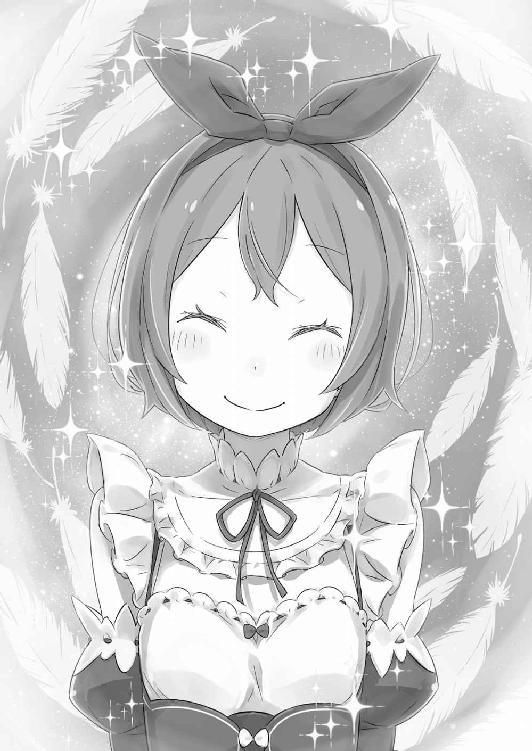
そんな可愛い素振りのペトラを、スバルは衝動的に抱きしめて頭を撫でる。無遠慮かつ愛おしむ複雑な手つきに、ペトラは目を丸くして困惑した声を上げた。
「なになに、なんなの!? す、スバル......やだ、恥ずかしいってば......っ」
「クソ、お前は人の気も知らねぇで......ホントに、チクショウ......ッ」
「......スバル？」
頰を赤らめ、照れ顔でいた少女が怪訝に眉を寄せる。ペトラはスバルの胸にすっぽり収まったまま、声を低くしたスバルに心配げな目を向けると、
「どこか痛いの......？」
不安げな少女の指先が、震えるスバルの頰に触れた。その触れた細い指をそっと掌で押さえて、スバルは「いいや」と首を横に振る。
鼻から息を吸い込んで、一度止める。そうして、ゆっくり少女と視線を合わせ、
「本気で、心の底から安心しただけだ。──ただいま、ペトラ」
７
「──はっきり言って、気に入らない状況だわ」
「それ、今日聞くの二度目だな」
「そうね。嫌味だもの。すっかり忘れられて、途方に暮れたラムの可愛い嫌味」
ちくちくとラムの皮肉に刺されたのは、そんなペトラとの再会直後のことだ。
少女の無事な姿に感動し、思わず感極まったスバルだったが、その間に放置されたラムの無言の怒りは根深い。スバルは平身低頭になって謝りつつ、
「お前はわかってるはずだろ。心配だったんだ。無事でホッとしただけじゃねぇか」
「いやらしい」
「こんな小さい子にその発想するお前の方がいやらしいよ!!」
己の肘を抱き、「ハッ」と鼻を鳴らすラムにスバルは脱力する。だが、そんな二人のやり取りを見ていたペトラが、おずおずとラムの方に歩み寄った。
彼女は頭の大きなリボンを揺らし、やや緊張した面持ちで──、
「ええと、ラム姉様ですよね。こうしてちゃんとお話しするのは初めてで......新しく、お屋敷で旦那様にお仕えすることになりました、ペトラです。よろしくお願いします」
「あら、今日はラムちーって呼ばないのね」
眉を上げ、二ヶ月前に村の子どもらに浸透した呼び名をラムが揶揄する。その返答にペトラが顔を赤くして、「あ、あのときは......」と恥ずかしげに口ごもった。
「まだ子どもでした。でも、これからは違います。そのわたしを見てください」
「......バルスと違って弁えているようね。いいわ。合格にしてあげる」
「お前、何様？」
「ちなみにバルスは不合格よ。屋敷の敷居は跨がせないわ」
「帰ってきた意味がなくなる！」
スバルとラムのいつもの調子に、緊張していたペトラの表情が自然とほぐれる。相変わらず、ラムの気遣いはわかりづらい。ペトラの様子にスバルはそう思う。
ともあれ、そのことには触れず、スバルは屋敷の方に目を向けると、
「あー、それでペトラ？ 俺らがいない間、変わったこととかなかったか？」
「むー、それってわたしが聞きたいことなのに。なんで、スバルとラム姉様の二人だけで戻ってきたの？ エミリア様と、うるさいお兄さんは？」
「エミリアたんは大事なお仕事中。オットーは......オットーは何してんだ？」
「知らないし、興味もないわ」
ラムはバッサリだが、オットーの細かな活動内容はスバルにも不明だ。おそらく『聖域』の中で、避難した村人に同行していた行商人などと接触しているはずである。
それ以外、オットーに任せた仕事などは特にないのだが──、
「一応、エミリアたんの心の安定に役立つのを期待してるけど、長くはもたなそう」
「でしょうね。耐久力の低そうな顔だったから、きっとすぐに壊されるわ」
「サンドバッグ的な意味で置いてきたわけじゃねぇよ!?」
第一、エミリアも鬱憤を何かにぶつけて晴らすような性格ではない。そのぐらい単純であってくれれば、落ち込んだ彼女の慰め方も簡単に思いつくのに。
そんなスバルらの返答に、ペトラは「ふーん」とひとまず納得する。なので、今度は質問権がスバルに移譲、先ほどの質問を繰り返す。
「で、リベンジだ。留守番の間、変わったことはなかったか？ 特に、フレデリカに」
「フレデリカ姉様？ 姉様は優しいし、教えてくれるときも丁寧だから、変なところなんて全然......たまに、心配そうに外を眺めてるくらいかな」
「外を？」
「もうっ！ スバルとエミリア様を心配してでしょ！ それくらいわからなくちゃ」
分からず屋、とばかりに叱られて、スバルはしょんぼりする。
今のペトラの話からわかるのは、ペトラとフレデリカとの仲は非常に良好であり、フレデリカが目に付く形で怪しい行動はしていないこと。そして、一見した状況だとスバルはとんだ恩知らずであり、このままではペトラに嫌われるということだ。
「特に後半が問題だな......俺の密かな癒しがなくなるのはすごい困る」
「バルスの戯言はいいとして、ペトラ？ フレデリカは今はどこに？」
「フレデリカ姉様は森の結界の見回りに出てます。村のみんなが戻るまで、結界に綻びがないか見回るのもお役目だって。戻るのは、もうちょっと先かも」
「そう。間がいいのか悪いのか......バルス、どうするの？」
フレデリカの留守を知り、ラムがスバルにそう問いかけてくる。その短い言葉の中に、ラムの「退く？ 攻める？」と聞く選択肢が込められていた。
少なくとも、現時点でペトラをアーラム村へ避難させておけば、仮にフレデリカが強硬手段に出たとしても巻き込まずに済む。
しかし──、
「──あっちの、出方が見たい。俺とお前は、その間にレムのところだ」
「......レム」
状況証拠はフレデリカの叛意を示すが、言葉を交わすまで真意はわからない。そこに希望を抱くスバルの選択と、代わりの選択肢にラムは思わしげに俯いた。
──レムの存在と、彼女との関係性。それは道中、時間の許す限りでラムに伝えてある。
到底、それは語り尽くせるものではなかった。だが、二人が姉妹であったこと、そんな半身に等しい存在の記憶を失った原因、伝えるべき事情は全て。
「────」
その忘れさせられた妹との再会だ。さしものラムも平静ではいられないらしく、頰は強張り、薄紅の瞳には憂いが満ちていた。その横顔をスバルが覗き込む。
「......なに？」
「緊張してるなと思って」
「緊張なんて......」
「いや、しろよ緊張。するべきだと思うし、してほしいと思う」
生き別れになった姉妹の感動の対面──とはいかない。
レムは眠りから目覚めず、ラムにとっては本当に心当たりのない再会になるのだ。それでも、二人の仲を知る唯一の人間として、スバルはせめてと願いたい。
せめてこの再会が、ラムの心にほんの少しでいい、痛痒をもたらしてほしいと。
「ペトラ」
「うん......じゃなくて、はい。レム姉様は、同じお部屋に」
スバルの呼びかけに、察しのいいペトラが「こちらです」と案内を始めた。その小さな背中に従い、スバルとラムは数日ぶりのロズワール邸へ足を踏み入れる。
向かう先は東棟の二階、レムが使っていた彼女の私室だ。フレデリカとペトラの丁寧な仕事が窺える邸内を進み、ほどなく三人は目的の一室の前に到着した。
「わたし、西棟のお掃除の続きをしてくるね。何かあったら呼んでください」
無粋はしたくないとばかりに、カーテシーしたペトラがその場を辞した。できる新米メイドが立ち去るのを見送り、スバルは扉を見つめているラムに肩をすくめる。
「──よくできた子ね。ロズワール様に仕えるのに相応しい出物だわ」
「ただの村娘のステータスじゃないってのは同意見だ。......で、心の準備は？」
「いつでも？ バルスとは違うわ」
すまし顔のラムの返答に苦笑いし、スバルはゆっくりとドアノブに手をかける。躊躇いがあったのは一瞬だけ。扉は軋む音を立てて、外側へと開いていく。
そして、開け放たれた部屋の中に──、
「────」
整えられた寝台の上、静かに眠る青い髪の少女がいる。
その姿は最後に見たときの記憶のままで、まるで部屋の時間が止まってしまっているかのように思えた。ただ、わずかに上下する胸の動きと、ほんの微かな息遣いだけが、彼女の命が途切れず続いてくれている、ささやかな証拠で。
「──レム」
その名前を口にするスバルの、短い単語に込められた感情の渦が誰にわかろうか。世界でたった一人だけに向けられる、とめどない感情の奔流がそこにある。
強く、己の心を鋼にして、どんな困難にも揺るがず立ち向かうと心に決めていた。
──その覚悟と決意が、彼女の寝顔の前では簡単に砕け散ってしまう。
「......無事で、いてくれたか」
『眠り姫』と、そう診断された状態を無事と呼ぶことには抵抗がある。
それでも、出立のときと変わらない様子でいてくれたことは、スバルの心に確かな安寧をもたらした。取り返しのつかないことはないと、そう言われた気がして。
──取り返すことを諦めるなと、そう言ってもらえた気がして。
「────」
安堵にしては熱く、決意にしては甘い。そんなスバルの胸中とはまた別に、ラムもまた寝台で眠るレムを凝視し、言葉を失くしている。
思わず半歩、前に出た彼女の表情はスバルからは見えないが──、
「──バルス」
「......なんだ」
「少しだけ、二人にしてもらえる？」
「──ん」
指示口調でも、断定的でもない、ラムからの純粋なお願いだ。
逆らう理由もなく、スバルは彼女の頼みに顎を引くと、ほんの少しだけレムの寝顔に後ろ髪を引かれながら、そっと部屋に姉妹だけを残して退室した。
そのまま振り返り、扉に背を預けて深々と嘆息する。
「ひとまず......ひとまず、だ」
レムの無事、ペトラの無事は確かめられた。
最悪のケース、『聖域』を出発した時点で間に合わない、そんな手詰まりの盤面ではないと確かめられた。あとは対面に座る打ち手の、次の妙手を見極めなくてはならない。
そのためにも──、
「──お早いお戻りでしたのね、スバル様。驚かされましたわ」
「......あんまり、驚いてない顔に見えるけどな」
「顔のことは言わないでくださいまし。わたくし、気にしていますのよ」
相手の冗談めかした口ぶりに、スバルも口の端を歪めて笑い返す。お世辞にもいい笑顔とは言えない笑みを受け、相手はスバルの背後の扉に目をやった。
「中で、レムに会っていたんですの？」
「ああ。たった二日で一日千秋の思いだ。......今は、姉妹の対面中」
「──姉妹。そう、ですの。あの子は......ラムは、複雑ですわね」
そう言って、扉越しに中を思う女性の目は心配げだ。それは本心からの憂いに思えて、スバルはますます状況証拠との不一致に違和感を覚えた。
問答無用で仕掛けてこないのも、レムとペトラを人質に取らないのも、もっと言えばこうしてすんなり相対したことも、全てが前提と矛盾しているようで。
「もうしばらく、二人きりにした方がよろしいですわね。スバル様、応接間の方でお茶を淹れますわ。積もる話はそちらでいたしましょう」
「そうだな。本当は、ラムを連れずにいくのは本末転倒なんだけど......」
有事に備えて連れてきたラムを、有事になるかもしれない場面に同行させない。それはいかにも自殺行為に思えたが、二重の意味でスバルはそれを否定した。
きっと有事にはならない。それに、大切な時間を邪魔する大馬鹿でもありたくない。
「だもんで、期待を裏切らないでくれよ。信じてるぜ、フレデリカ」
「でしたら、期待に応えられるよう、わたくしも努力いたしますわ。──そうするのがメイドの務めと、わたくし心得ておりますもの」
そう答えて、女性──フレデリカは鋭い牙を手で隠し、スバルに優しく微笑んだ。
８
「エミリア様がご一緒でないということは、まだ『試練』は終わっておりませんのね」
レムの寝室から移動した二人は、応接間のソファに腰を落ち着けていた。
二人の間にはテーブルと、淹れたての紅茶のカップがある。その配膳を終えたフレデリカの最初の一言に、スバルは漂う湯気を眺めながら「ああ」と頷いていた。
「そうやって、ちゃんと事情はわかってるって言ってもらえるとありがたいよ。わかってるくせに、いちいちはぐらかす奴と話したばっかりだと特にな」
「その言われようで思い浮かべた相手は、スバル様と同じ方の気がしますわね」
「だろうよ。大ケガしてても化粧は欠かさない、ありゃ筋金入りの偏屈だね」
皮肉げなスバルの答えに、フレデリカが「あら」と楽しげに受け入れる。そうした軽いジャブを挟み、スバルはやや前のめりになって、本題に踏み込んだ。
「──『聖域』に『試練』、お前は俺たちを送り出すときにかなり意図的に知ってた情報を隠してくれたもんだが......誓約、だったか？ それは今も？」
スバルたちに『聖域』の場所を教えてくれたフレデリカは、しかし『話せない』として知り得ていたはずの事実をいくつもスバルたちに隠した。
その理由を、フレデリカは『誓約』があるためだと頑なに言い張っていたのだ。
その頸木は今もあるのか、そう問い質すスバルにフレデリカは首を横に振った。
「残念ですけれど、ご期待には応えられません。誓約はなおも有効......そも、誓約は契約や盟約と違って強制力はありません。ただ、わたくしの心が決めたことですもの」
「強制力がないなら、なおさら曲げてもらえないか？ それがお前の信義に反するってなっても、こっちにも事情があるのは知ってるだろ？」
「──十年と、七ヶ月十三日」
訴えかけるスバルに、フレデリカが突然呟く。耳にした年月に覚えはない。そのことに困惑するスバルに、フレデリカはそっと紅茶のカップを口元に運んで、
「わたくしが『聖域』を出て、旦那様に仕えてきた月日ですわ。それは同時に、誓約の始まりでもありますの。......スバル様は、その年月をわたくしに破り捨てろと？」
「......時間の話はラムにもされたばっかなんだけどな」
静かな物言いに頭を搔いて、スバルは一度、深く呼吸をしてから続けた。
「──場合によっちゃ、そうだ。かけた時間と積んだ想いは尊重したい。でも、それが大事な何かを邪魔するなら、破り捨てるべきだと俺は思うね」
「簡単におっしゃいますのね」
「難しい顔して破り捨てるのは止めねぇよ。破るとこだけ同意してくれれば」
紙を破るジェスチャーをすると、フレデリカの翡翠色の瞳が細められる。お互いに譲歩しない姿勢、それは交渉とは呼べない意見の押し付け合いだ。それが碌な結果を生まないことはスバルも知っている。故に、別の方向から攻めることにした。
「......お前が強情なのはわかった。なら、別の話だ。フレデリカ、これを見てくれ」
「スバル様？」
懐に手を入れ、スバルは預かり物をフレデリカへと差し出した。青く煌めく輝石、その輝きにフレデリカは怪訝な顔をし、それからすぐに気付く。
「それは、わたくしがお渡しした輝石......いえ、違う？ 首飾りで......え？」
「モノはそっくりでも別物だよ。手に取って、確かめてみてくれ」
目を瞬かせるフレデリカが、震える手に首飾りを受け取った。彼女は自分の掌にある輝石を見つめ、その感触を何度も何度も確かめてから、
「これは、ガーフの石......ですの？」
「そう、そのガーフの石だ。行きがけにあいつに......まぁ、ラムが渡されたんだけど」
それがラムの手からではなく、スバルからフレデリカに渡されるのはガーフィールも不本意だろう。このことは決して話すまい、とスバルは固く心に決める。
「ともあれ、そのガーフって呼び方は親しい奴のもんだよな。ラム然り、リューズさん然り......それに、フレデリカ然り。なんとなく、二人の関係は想像つくけど」
「......ガーフから聞いたわけではありませんのね」
「血縁なのは顔見ればわかるよ。そんで、俺の予想だとフレデリカは姉っぽい。あくまで属性的にって冠がつく、俺のヤマ勘だけど」
「その、属性が何を意味するのかはわかりませんけれど、正解ですわね。わたくしはガーフの......ガーフィールの実の姉に違いありませんもの」
薄く微笑み、フレデリカは軽く指先で自分の眦に触れる。涙の雫を指で拭う仕草に、スバルは見てはいけないものを見た気がして目を逸らした。
「あら、スバル様は案外臆病ですのね」
「女の子に泣かれるのは男なら誰でも苦手だろ。ハンカチ、洗濯はしてあるぞ」
「ペトラに持たされたのと、別のハンカチ......意外と紳士的ですのね」
ハンカチを持ち歩く習慣は実家にいた頃からのものだ。習慣付けてくれた母に感謝しつつ、スバルはハンカチを受け取るフレデリカのからかいに、頰を赤くする。
微妙に話の主軸がずれされつつある、彼女の思惑に乗せられるのは御免だ。
「とにかく！ その首飾りで、何が大きく変わるとかは期待してない。あくまで、それは話の切っ掛け作りみたいなもんだ。わりと重要な、本題に入るための」
「重要な本題、ですの？」
「ああ、本題だ。──何のために、『聖域』で転移する罠を仕組んだのかってな」
──その話題に真っ向から切り込むのは、スバルにとって大きな賭けだった。
『聖域』への来訪時に発生した転移、それはフレデリカに渡された輝石を起因としたものであり、すなわち、彼女にエミリアへの何らかの意図があった証拠だ。『聖域』を知る彼女なら、結界に接触したエミリアが意識をなくすことも知っていたはず。
意識のないエミリアを転移させ、何を企んでいたのか。──そこに、直接切り込む。
「答えてくれ、フレデリカ。それとも、これも誓約で話せないことか？」
「────」
「仮にそうだとしても、これはだんまりは許さない。話してもらうぜ。絶対にな」
言い切った直後、口の中が急速に渇いていくのを感じる。
緊迫感に鼓動が速まり、スバルは眼前のフレデリカの一挙一動に視線を突き刺した。
ラムのいない場所で、核心に踏み込む危うさはわかっている。だが、スバルの存在を軽んじ、侮る存在は多い。それが少しでも情報を引き出すことに繫がれば──、
「──スバル様」
大勝負に緊張するスバルを見据え、フレデリカが短くその名前を呼んだ。
その声に、スバルは視線を鋭くするだけで応じる。
スバルの黒瞳と、フレデリカの翡翠色の眼差し、それが真っ向からぶつかり合い──、
「......転移って、何のことですの？」
「──。────。────。え？」
疑問符を浮かべたフレデリカの答えに、呆けたスバルの顎がかくんと落ちた。
「そ、そんな目で見られましても......知らないことにお答えすることはできませんわ」
「待て待て待て、騙されねぇぞ！ お前が何も知らなかったら前提がひっくり返る！ お前、『聖域』の保守派だか停滞派だか、それに協力してるはずだろ!?」
「保守？ 停滞？ いったい、何のことなのか......一から説明してくださいませんと」
「俺がお前に一から『聖域』の事情を!?」
無理解を一貫するフレデリカの姿は、スバルにとってまさしく青天の霹靂だ。
そもそも、この話し合いの目的は、フレデリカから『聖域』の知られざる内情を聞き出すことにあった。なのに、これでは立場があべこべだ。
「え、演技か腹芸......じゃ、ないの？」
「────」
縋るようなスバルを見つめ、フレデリカは不憫そうに首を横に振った。
その仕草に、今度こそスバルの足下が崩壊する。無論、フレデリカの言い分を頭から信じるわけではない。わけではないが、噓を言っている顔には見えない。
「──ラム抜きでフレデリカと一対一、バルスは命がいらないと見えるわね」
そんな一言と共に、応接間の扉が豪快に開け放たれた。
現れたのは尊大に腕を組むラムだ。彼女は愕然とするスバルに、小さく吐息すると、
「その挙句に憶測は見当違い。哀れすぎて、とても見てられないわ」
「ああ、悪かった......って、待て！ 見当違いの憶測って、最初に『聖域』の停滞派の話して、フレデリカが協力してるかもって言ってたのお前だよな!?」
「可能性は可能性よ。揚げ足取りに夢中になるより、もっと建設的なことをなさい」
「腑に落ちねぇ!!」
力技で誤魔化され、頭を抱えるスバルをラムは一顧だにしない。彼女は堂々とスバルの隣に座ると、手つかずの紅茶に口を付けた。
「......どうやら、離れている間にお茶の腕は上がらなかったみたいね」
「まあ、得意なのはお茶を淹れることだけですのに。可愛げのない子ですわね」
「可愛げなんていらないわ。ラムは十分以上に可愛いもの。これ以上は世界が危険よ」
「ホント、口も減りませんわね！ まったく......あなたらしいですわ」
牙を見せて怒鳴り、しかしフレデリカは言葉尻に柔和なものを滲ませる。ラムもまた、いつもと変わらぬすまし顔に、ほんのささやかな親愛が込められていた。
付き合いの長い同僚、あるいは幼馴染みや友人に近い間柄、それが伝わってくる。
「それほど長く離れていたわけではありませんけれど、息災でしたの？」
「ええ。ラムは常に......と、さすがに今日は軽はずみに言えないわね」
「......レムとは、もう十分に？」
聞きづらいことだろうに、フレデリカは声を潜めて問いかける。しかし、その答えはスバルも知りたいものだった。その二人からの視線に、ラムは微かに俯いて、
「不思議なものね。バルスに話は聞かされていたし、顔を見ればラムと瓜二つ。額に触れてみれば、同族の血が流れているのもわかるのに......」
「────」
「あの子の存在だけが、ラムの内側にぽっかりと空白のままなんだから」
それは感情を押し殺し、普段と変わらぬ己を保とうと努めた声音だったはずだ。
──故に、際立つ。ラムの抱く寂寥と慚愧、それが声を悲しいほどに震わせている。
ラムに落ち度はない。もちろん、レムにもない。全ては、レムの存在を食い荒らし、世界から引き剝がした冒瀆者の罪だ。仮に、その冒瀆者以外に咎人がいるとすれば──、
「──悪い」
「......どうしてバルスが謝るの？」
「こんな、こんな形でレムとお前を会わせたくなかったんだ。だけど......」
スバルが足りなかった。致命的に、馬鹿で、足りなくて。
だから、こんな形でしか姉妹を再会させることができなくて。
その結果、ラムが傷付いたのならば、それは紛れもなくスバルの咎で──。
「だから、悪かった。謝っても許してもらえいひゃいいひゃいいひゃいひゃいっ!?」
「辛気臭い顔するのはやめなさい。ただでさえ低い男がより下がるわ。もう遅いけど」
謝罪の途中、手を伸ばしたラムに手加減抜きで頰を抓られた。そのあまりの痛みに悲鳴を上げるスバルを、ラムは「ハッ」と鼻で笑って解放する。
「バルスの分際で、勝手にラムとレムにとって大きな存在のような顔をしないで」
「ぶ、分際ったって、実際に......」
「バルスの罪悪感に興味はない。少なくとも、バルスの行動にラムはどうとも思っていないわ。勝手に悲劇に酔わないで。ラムと、その妹を馬鹿にしないで」
額を指で突かれて、実にラムらしい物言いにスバルはぱくぱくと口を開閉した。
「......お、覚えてねぇくせに、即行でレムの姉気取りかよ」
「不思議ね。記憶にはないのに、その立場がしっくりくるの。どうやら、よほどラムは妹に敬愛される姉だったようね。当然だけど」
「その考え方、マジで姉様だな！」
レムの存在が欠け落ちても、ラムの威勢の良さに陰りはない。それが嬉しいのか寂しいのか複雑になりながら、それでもスバルはラムの高潔さに敬服する。
「はいはい、お二人の仲はわたくしにもよーくわかりましてよ」
その二人のやり取りに介入し、フレデリカはラムに新しいお茶を差し出して、
「変わらぬラムをわたくしも嬉しく思いますわ。......でも、本題は別なのですわね？」
「そうね。バルスのせいで逸れた話を戻しましょう。──転移の問題よ」
「先ほども、スバル様がおっしゃっていましたわね」
緩みかけた雰囲気が、ラムの口にした単語によって引き締められる。険しい顔になるフレデリカを見て、スバルは彼女の持つ青い輝石を指差した。
「詳しく話すと、だ。お前がエミリアに持たせた輝石、それが結界に反応して、竜車で転移魔法が発生した。ご丁寧に、墓所の近くに飛ばされるヤツがだ」
「墓所に転移......!? そ、それで、エミリア様はご無事でしたの？」
「幸い、バルスのわりと尊い犠牲のおかげでね」
「......つまり、俺がエミリアの身代わりになったんだ。まぁ、ピンピンしてるけど」
ラムの茶々を受け、スバルはその場で軽く跳ねて健在をアピール。その様子にフレデリカは口を手で隠すことも忘れ、真剣に驚いた顔をしていた。
これでは結局、フレデリカは輝石と転移の関係を知らなかったことになる。
「けど、それならあの輝石は何のために持たせたんだ？ ロズワールの話じゃ、『聖域』にいくのに必要なのは正しい道順。資格とか道具のあるなしじゃない」
「それは......」
「それは誓約で話せませんわ、かしら？ だとしたらお粗末だわ、フレデリカ」
口ごもるフレデリカを先回りして、ラムがやや冷たすぎる熱量の言葉を放った。その冷たい言葉にフレデリカは頰を硬くする。が、すぐに彼女は頷いた。
「──その通り、ですわ。わたくしの口から、お話しすることはできません」
「お粗末を貫くのね。──でも、それこそお話にならないわ」
「って、おい！ 待てよ、ラム！」
頑なに譲らないフレデリカの返答、それを受けたラムの反応にスバルは慌てる。
何故なら、立ち上がるラムの手には杖が握られていたからだ。細く短い、木製に見えるその杖は、ラムが魔法を行使する際に愛用する、彼女の武装だ。
「早まるな！ あんな和やかに話してたのにいきなり......どうかしてるぞ！」
「バルスこそ悠長ね。フレデリカは質問に答えようとしない。叛意は明らかよ」
「フレデリカは馬鹿な真似はしない！ そう言ってたのはお前だろうが！」
果断と、そう呼ぶには見切りが早すぎる。実際、フレデリカの人間性を一番信じ、擁護していたのは他でもないラムだったはずなのに。
「だってのに、どうしてお前......」
「ここでフレデリカを拘束して、『聖域』へ連行する。そうすれば、フレデリカにあれこれ指示した相手を炙り出せる。言葉より明確だし、手っ取り早いわ」
「そりゃそうかもだが、そんなうまくいくわけねぇだろ......」
縛り上げてでも事情を吐かせると、ラムの強硬な姿勢はそう物語っている。
だが、ラムがそうした手段に出れば、フレデリカも当然抵抗するはずだ。そうなれば予想とは違った形だが、やはり望まぬ戦いになることは避けられない。
スバルとて、黙秘する姿勢のフレデリカに思うところはあるが──、
「それでも、刃傷沙汰にはしたくねぇんだよ！ フレデリカ！ お前もだんまりは......」
「わたくしを『聖域』へ連行するというなら、抵抗はいたしませんわ」
「ほら見ろ！ フレデリカだってああ言って......なんて？」
一触即発に顔を青くしていたスバルは、何を耳にしたのかと呆然となる。しかし、その呆けたスバルに、フレデリカは平然と姿勢を正したまま、
「ですから、わたくしはラムの判断に従いますわ。『聖域』へ連行するというならそれも結構。それで、お二人の目的に適うかはわかりませんけれど」
「て、抵抗しないの......？ なんで？ どゆこと......？」
「察しが悪いわね」
困惑に百面相するスバルの隣で、嘆息するラムが杖でフレデリカを指し示し、
「フレデリカは、自分の意思で誓約を破ることはできない。だから、バルスに力ずくで強引にされて仕方なかった。......そんな言い訳が必要なのよ」
「俺が力ずくって部分に無理があるのはともかく......それでいいのか？」
ラムとフレデリカの迂遠な協力体制に、スバルは翻弄されっ放しだ。
だって先ほどまで、フレデリカはやけに立派に『誓約』への心構えや、破らないのは信義の問題だのと語っていたではないか。それなのに──、
「無理やりやらされた、って言い訳が立てば背いたことにならない......か？ 正直、解決策として強引じゃないかって、俺の中の野党がぼやいてるんだけど......」
「なら、黙らせることね。これが、この場を丸く収める最善策よ」
腑に落ちない。だが、スバルがそうごねることには何の意味もない。ラムの言う通り、三人のコンセンサスは取れているのだ。多少の不協和音には耳を塞げばいい。
ただ、それはそれとしてこれだけは言っておきたい。
「打ち合わせもしてないのに、お前らって息ピッタリだな......」
「当然ですわね」「十年近い付き合いだもの」
と、阿吽の呼吸で返事があり、そこでスバルは完全に脱帽した。
そして、その脱帽ついでに、まとまった状況を落ち着いて整理する。
まず、フレデリカの転移への不関与、これは彼女が大女優でない限りは真実だろう。誓約を理由に黙秘し続ける事情も、『聖域』へ行けば明かされるはずだ。そうすれば、陣営の結束に罅を入れようとした黒幕──その正体も、暴かれることになる。
「転移は隠してた上に、指示した自分のことは秘密にさせる。こう言っちゃなんだが、お前が約束した相手って性格最悪だな」
「そう、ですわね。......さすがにわたくしも、こうまでコケにされては唯々諾々と指示には従えませんわ。『皇帝は口にした虚偽と同じだけ鉛を抱かせる』と言いますもの」
「......なんて？」
「ヴォラキア帝国流の言い回しですわね。虚偽に対する彼の国の......なんですの？」
「んや、なんでもない。血は争えないなって思っただけ」
知識を自慢げにしたフレデリカに、スバルは生温かい目でそれだけ答えた。やや意図した返答と違ったが、欲しかった答えは得られた。そんな気分で。
「ともあれ、フレデリカの協力......秘密裏の協力だけど、それが得られるのはでかい。おかげで、俺の中にあった余分な疑惑も捨てられそうだしな」
「余分な疑惑？」
「あー、仮にフレデリカが敵側だった場合、屋敷を襲ったかもなでかい災難のお話」
その『災難』について、心当たりのない顔でフレデリカは首を傾げている。
現状、災難ことエルザの存在は『エ』の字も出てこない。目の前のフレデリカの反応からも、あの戮殺者と彼女との間に繫がりはないと考えてよさそうだ。
となれば、早々に屋敷を離れて、あの黒衣の戮殺者への対策を練らなくては。
仕掛けてくるのはわかっているのだ。それを逆手に取り、戦力を集中して囲い倒す。
「そのためにも、今は屋敷をすたこらさっさと退散したい。フレデリカは連行、ペトラとはお出かけ。それにレムと、居場所のわからないベア子を拾えば......」
ひとまず、屋敷に降りかかる危難から逃れることができる。
そんな光明が見えて、スバルは暗がりの道に進むべき指針を得た気がして──、
「──あら、そんなつれないことを言わないでほしいのだけれど」
指折り、するべきを数えていたスバルの鼓膜を、その艶めいた声は暴力的に撫ぜた。
瞬間、比喩表現抜きに心臓が破裂するような痛みと共に高鳴り、スバルは弾かれたように応接間の入口に振り返る。──そこに、人影が立っている。
三つ編みにされた黒髪、煽情的かつ大胆に白い肌を晒した黒衣、覗き込めば魅入られそうなほどに深い漆黒の双眸──黒、黒、黒、どす黒い殺意を体現した姿形。
見覚えのある美貌、二度と見たくなかった魔貌、それが唐突に光明を黒く塗り潰す。
「さあ、交わした約束を果たすとしましょう？」
そう言って、『腸狩り』は殺戮の予感に嫣然と、赤い舌で唇を湿らせていた。
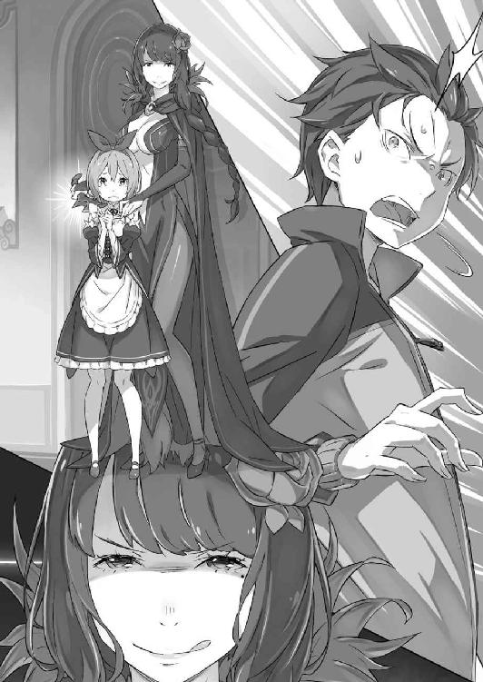
第二章 『少女の福音』
１
──刹那、スバルは時間が静止したような錯覚を得ていた。
嫌な感覚だが、この錯覚には覚えがある。これは命の危機に瀕したとき、脳が生存本能に従い、本体を生かそうと捻出した猶予──ほんの数秒、ここが勝負所だ。
何故、ここにエルザがいるのか。そんな疑問に思考を割く余裕はない。
考えるべきは何故ではなく、如何にするか。冷静に、可能な限り、事態を把握する。
応接間の入口に黒衣の戮殺者、一方で室内にはソファに座るスバルとフレデリカ、杖を手にして立ち尽くすラム──だが、それで全員ではない。
「────」
──ペトラが、いるのだ。
部屋の扉を開け放ったエルザの傍らに、幼いペトラが立たされている。そのうなじに刃を突き付けられ、丸い瞳に大粒の涙を浮かべた少女が。
理解する。ここまで案内させられたのだ。無理やりに、泣くことすら禁じられて。
今、ペトラの心中には膨大な恐怖が渦巻いているはずだ。命を脅かされ、スバルたちの下に案内させられて、『助けて』と叫びたくてたまらなくて──、
「......姉様、スバル」
震える声で、ペトラがスバルたちの名前を呼んだ。
その声に何ができる。安心しろと頷きかけ、泣き喚いてもいいと言ってやり──、
「──逃げて!!」
「────」
瞬間、『助けて』ではなく、『逃げて』と叫んだペトラに、三人の思考は白熱した。
──スバルは既知の脅威に、ラムは戮殺者の鬼気に、フレデリカは少女の涙に。
「エル・フーラ──!!」
最速の攻撃は、示威行為に杖を構えていたラムの放つ風の刃だ。
収束するマナが不可視の斬撃となり、悠然と立つエルザを切り刻まんと迫る。その風の刃は物理的な攻撃では止められない。しかし──、
「涼しい風ね。でも、今日の陽気は穏やかだから気遣いは結構よ」
必殺の風刃を、大きく上体を逸らしたエルザが軟体で回避した。黒影はさらに続く連撃をも易々と躱し続ける。まるで風を読むように──否、まるでではない。
ラムの風刃は、人質とされたペトラを避けるように放たれている。エルザはそれを利用し、少女と風の死角に潜り込むように風の刃を躱しているのだ。
「この小さなメイドさんごと当てにくれば、話は違うかもしれないのだけど」
「──生憎と、当家の使用人は助け合い補い合い、それがモットーですのよ！」
「あら」
後ろからペトラに頰擦りし、少女のか細い喉を詰まらせたエルザが眉を上げる。その胴体を切り裂くように、フレデリカが両腕を唸らせ、格闘戦を仕掛けていた。
攻撃は五指を丸めた、虎爪と呼ばれる打撃に近い。だが、純粋な虎爪と異なる点は、その攻撃を放つフレデリカの両腕が、本当に獣の爪へと変じていることだ。
細く白い指が強靭な猛獣の爪となり、彼女の両腕は肉を切り裂く凶器と化す。激しく軋る音を奏でて、エルザのククリ刀とフレデリカの獣爪が火花を散らした。
「部分獣化......！ 亜人の血ね、素敵！」
「複雑なお褒めの言葉をどうも......こんなこともできますのよ！ ペトラ！」
予想外の攻防に歓喜するエルザ、その戮殺者の前でフレデリカは姿勢を倒す。瞬間、名前を呼ばれたペトラは、その丸い瞳を大きく見開いた。
棒立ちの少女の眼前に、金色の帯が伸びる。それはフレデリカのスカートの奥に続いている、細くしなやかな金毛に覆われた獣の尻尾だった。
「──っ」
それを理解した瞬間、ペトラは尻尾に飛びつく。その感触に、ぐんと尻尾でペトラを引き寄せ、フレデリカは少女を抱いて殺戮範囲を離脱した。
その跳躍に、エルザは開く距離を刃で埋めようとしたが、それはラムが許さない。
「千切れ飛びなさい!!」
人質を奪われ、安全地帯のなくなったエルザを風が取り囲む。球状に膨らむ風刃は逃げ道を潰し、中心の獲物に向かって一気に収縮、風が吹き荒れる。
「────」
必殺のタイミングだ。鮮血が散り、風は間違いなくエルザを切り刻んだ。だが──、
「腕を......！」
「ああ、痛い、痛い......死んじゃうかと思った」
無惨に抉れた腕を掲げ、エルザがその凄惨な傷から滴る血をそっと舐め取る。
痛々しい傷だが、被害はその片腕のみ。エルザは腕を盾に風刃に飛び込み、その被害を最小限に食い止めたのだ。一見無謀な選択だが、しかしそれこそが最適解──。
「忌々しい女ね」
「私はあなたが気に入ったわ。中くらいのメイドさん」
吐き捨てるラムに、エルザが健在な方の腕でククリ刀を回転させる。鈍く輝くナイフの刀身が、室内にいるエルザ以外の四人をそれぞれ映し込み、
「メイドが大中小に男と女。テーブルに並べて、お腹の中身を見比べてあげる」
「ガーフ以下の誘い文句ね。だから──バルス！」
「わかってらぁ──!!」
ペトラを抱いたフレデリカが背後に着地。その瞬間にかかるラムの合図に、スバルは満を持して右腕をエルザへ突き付けた。
ここまで静観に徹したのは、状況に割り込む力がなかったからではない。無論、それも理由に含まれるが、最大の理由はそれとは別、タイミングを計っていたのだ。
──エルザと遭遇したとき、使うと決めていた切り札の切り時を。
「──シャマァァァァァッック!!」
武装無し、迎撃手段無し、準備不足に覚悟不足、予想外も甚だしい接敵だ。
しかし、少ない手札の中にある最善を尽くす。己の内にある、不完全な魔力の炉に火を入れ、血の巡りに熱が灯った。『使うな』と、忠告したフェリスの声も脳裏を過る。
それを奥歯で嚙み砕いた瞬間、右の掌から黒い靄が爆発的に溢れ出す。
光の陰影よりなお色濃い漆黒は、標的である黒衣の女を丸ごと吞み込む。それは内に取り込んだ存在に無理解を強制し、思考力と行動力を根こそぎに奪う魔の力だ。
「どう、だ......！ 無理解の壁、越えられるもんなら......」
狙い通りに魔法が放たれ、スバルが啖呵を切った直後──それが訪れる。
「──ぎ、ぃ!? がぁぁぁッ!!」
頭蓋と胴体のど真ん中、何かが千切れる音と共に耐え難い激痛が爆発する。
あまりの苦痛に思考が爆ぜ、絶叫するスバルの視界が赤と白に交互に染まった。不完全なゲートにマナを絞られ、魂が干上がるような喪失感と倦怠が一挙に押し寄せる。
視界が眩み、膝から力が抜けた。そのまま、意識ごと現実を手放しかけ──、
「スバル──！」
闇に転落する寸前、届く声と掌の感触に意識が繫がった。
明滅する視界、すぐ正面に涙目のペトラの顔がある。少女の声に、心が燃え上がる。
折れている、暇などない。神経が千切れ、魂が削れる苦しみを一瞬だけ忘却。その『強がり』の効果が持続する間に、スバルは握られた手を握り返した。
「──退くわよ！」
「少し、乱暴にしますわよ！」「ひゃっ、ね、姉様......!?」
素早く撤退の判断を下すラムに、フレデリカも躊躇わずペトラを脇に抱える。そして残る腕で、彼女はふらつくスバルをも胸に抱き寄せた。柔らかい感触。
「あ、安全なときに、堪能したかったもんだな......っ」
「平時なら触れさせもしませんわよ！ とにかく、窓から──」
痛みに呻くスバルの軽口に、素っ気なく応じるフレデリカが部屋の奥へ。そこから窓を破れば、屋敷の前庭に飛び降りることになる。シャマクが目くらましになる猶予も長くはない。即断、即決、即行が今は求められ──、
「──ぅ？」
フレデリカにしがみつくスバルは、何か軽い衝撃が背に当たったことに気付く。
右肩、肩甲骨のあたりに違和感。呼吸に喘ぎながら、首をひねって肩を確認する。そこに、まるで串のようなものが突き立っていた。それは今まさに当たったばかりである証拠に、細長い本体の尻部分を震わせていて。
──そんなものが無数に、黒い靄の向こうから一斉にこちらへ飛来してくる。
「──フレデリカぁ!!」
叫ぶ。間に合わない。
鋭い煌めきが迸り、柔らかい肉を穿つ音が連続し──、
「──ッッ!!」「──ウル・フーラ!!」
──鬼と獣の咆哮が重なり合い、応接間は爆風によって吹き飛んでいた。
２
応接間を離脱し、スバルたちは一直線に屋敷の庭園へと落下する。
予感した落下の衝撃は訪れない。それはスバルとペトラを抱えたまま、二階の高さから芝生に降り立ったフレデリカの妙技だ。しかし、撤退の代償は殊の外大きい。
「フレデリカ姉様！」
悲鳴のような声を上げたのは、芝生に投げ出されて転がったペトラだ。その視線は庭に片膝をつき、背中を血塗れにしたフレデリカに釘付けになっている。
「相手を、侮りましたわね......ッ」
苦しげに喘ぐフレデリカ、その背には細い鉄串が剣山のように突き刺さっている。串は長さ二十センチ近くもあり、内臓に届いたものも少なくあるまい。
その威力はフレデリカだけでなく、スバルもまた身を以て痛感していた。
「痛ぇ......ッ！ クソ！ あいつもユリウスみてぇにシャマクが効かない敵......ッ」
「ではないわね。あれは闇雲に靄越しに投げてきただけ。異常に勘がいいのよ」
串に右肩を貫かれ、呻くスバルにラムがそう告げる。彼女はスバルとフレデリカの傷を見ると、その形のいい眉をそっと顰めた。
「治癒魔法を使える人間がいない。串を抜いたら失血死するわよ」
「抜くどころか......触る度胸も、二度見する度胸もねぇよ。エルザはやったか......？」
「部屋ごと吹き飛ばしたけど、手応えはなかったわ。楽観は禁物でしょうね」
「チクショウ......！ 時間は、ちっとは稼げたはずだが......」
ラムの返答に歯嚙みし、スバルはこの場にいる顔ぶれの治癒適性の低さを嘆く。以前なら傷はレムが、重大な傷でもベアトリスが──そこで、遅まきに失して気付く。
「レムも、ベアトリスも......っ！」
二人とも、いまだエルザの残る屋敷に取り残されたままだ。
逃走の選択肢はその時点で消える。二人を、屋敷に残したまま離脱はできない。
「二人を、どうにか助け出さねぇと......！」
傷の痛みに焼け付く脳、それをフル回転して手段を模索する。
レムの居場所は屋敷の東棟、それは確定だ。問題は『扉渡り』で常に移動し続けるベアトリスにある。この土壇場で、その『扉渡り』の特異性が毒になるのだ。
──この場はレムの救出を優先し、ベアトリスには自力での対処を期待する？
『扉渡り』の性能を考えれば、それも一つの案には違いない。
実際、先日の魔女教との戦いの最中、スバルはベアトリスを連れ出すことに失敗し、『扉渡り』の力を信じる形で、彼女を屋敷に残したまま決戦に臨んだ。
そのときと同じ条件だとすれば、ベアトリスに危害が及ぶ可能性は──、
「馬鹿か、俺は。いや、馬鹿だ俺は。前回とは条件がまるっきり違うだろうが......！」
──魔女教の目的と、エルザの目的は根本から異なっている。
魔女教の、ペテルギウスの狙いはあくまでエミリアだった。だから屋敷の住人としての情報もなく、目的と無関係なはずのベアトリスを屋敷に残す選択もできた。
しかし、エルザは違う。あの戮殺者の目的は、明らかに屋敷の人間の皆殺しだ。
スバルを、フレデリカを、ペトラを狙い、当然のようにレムとベアトリスをも殺す。
「────」
残せない。残してはいけない。死なせることなんて、できるはずがない。
だから、この役立たずの脳が焼け尽きる前に、全員を助ける方法を閃かなくては──、
「バルス」
「なんだ!? 今、なんとかレムたちを連れ出す方法を......」
必死に考えるスバルに、ふいにラムが声をかけてきた。焼け付く脳を耳朶からこぼしそうになりながら、打開策があるのかと縋るようにラムを見つめる。
その桃色の唇が、何らかの起死回生の献策を授けてくれると──、
「──その二人を置いて、屋敷を四人で脱出する。それが、この場の最善よ」
「──ぁ？」
視線の高さを合わせ、強く言い放たれた発言にスバルの思考が空白に染まった。
何を言われたのか、鼓膜が揺すられ、脳に運ばれて、意識に浸透し、理解に達する。そしてその理解に達した瞬間、感情が沸騰した。
「な、にを......なに、を！ 何を！ 言い出してんだ、お前は!!」
「怒鳴ってどうなるの。冷静になりなさい。至極、自然な発想でしょう」
「自然も不自然もあるか！ 屋敷にいるのはレムだ！ お前の妹だ!! お前を好きで、お前も好きで！ お前が守って当然の！ 妹だぞ!!」
叫んだ途端、傷の痛みが勢いを増す。だが、構わない。文字通り、血を吐くような苦しみと怒りを込めて、あらん限りの激情をラムに叩きつける。
しかし、ラムはスバルのその声を浴びても、涼しい顔のまま続けた。
「正しく現状を判断しただけよ。ここでラムやフレデリカ、ついでにバルスを失うことの痛手の方が陣営にとって大きい。犠牲は許容すべきだわ」
「だから！ その犠牲は......！」
「そうね。ラムの妹かもしれない。──でも、ラムの妹ならこう言うはずよ」
激情で言葉に詰まるスバルへ、一拍置いて、ラムが言った。
「──ロズワール様のためにも、レムを犠牲にしてくださいと」
「────」
その言葉を聞いた瞬間、スバルの中で何かが粉々に砕ける音が響いた。
それは魔法を使い、不完全なゲートに亀裂が走った衝撃に匹敵──否、それ以上の激震となって、ナツキ・スバルの魂を根本から揺すぶった。
「お、れは......そんなこと、言わせるために......」
──ラムと、レムとを、引き合わせたわけじゃなかった。
世界の記憶から消され、誰の中にも存在が残らなくなった。それでも、お互いに愛し合い、魂すら分け合った双子の姉妹であれば、何かが残っているはずだと。
そんな儚い、希望とすらいえない期待に縋って、スバルはラムを屋敷へ連れ戻った。
──その結果、最も聞きたくなかった言葉をラムに言わせることになるとも知らず。
「この世界じゃ、ラム......お前も、レムの味方になってくれないのか......」
それはあるいは、レムの存在を奪われて以降、最大の悲しみだったかもしれない。
だってスバルは、ラムとレムの姉妹のことが、二人の慈しみ合う関係が──。
「──二人とも、言い争っている場合ではありませんわよ！」
打ちのめされるスバルと、薄紅の瞳を透徹させていくラム。その二人のやり取りに、重傷のフレデリカが割って入って一喝する。
時間にすれば十数秒の口論も、今の状況では致命的なロスになりかねないと。
「頭を冷やしなさい！ 二人ともですわ！ こんなときに口論なんて......ッ」
「......ラムは冷静よ。勝手に熱くなっているのはバルスだけ。どっちの意見に正当性があるかぐらい、フレデリカもわかるでしょう」
「確かに、ラム、あなたは正しいですわ。間違ったことなんて言っていません」
早口に、フレデリカがラムの主張の正当性を肯定する。その姿勢にフレデリカもまた、レムやベアトリスを置き去りにする気なのかとスバルは失望しかける。
しかし、その前にフレデリカは「ですが」と言葉を継いで、
「わたくしは、二人を助け出すべきと考えますわ」
「......正気なの？」
「ええ、もちろん。陣営の痛手を考慮しろ、とあなたは言いましたわね。それなら、やはり救出が最善ですわ。──ベアトリス様も、レムも、必要な存在ですもの」
フレデリカの断言に、ラムは怪訝な顔をし、スバルは呆気に取られた。だが、その場にいた最後の一人は、膠着する場でゆっくりと手を上げ、
「わ、わたしも......わたしも、助けにいくのに賛成！ 賛成、です......っ」
「......多数決をしているんじゃないのよ。子どもは黙っていなさい」
「こ、子どもでも、立派な大人です！ ラム姉様より役立つってフレデリカ姉様も！」
冷たいラムの眼光に、ペトラは一歩も引かずの自分の意見を主張する。その涙目の反論にラムは押し黙り、それからスバルとフレデリカに目を向け、
「勝算があるというの？」
「──！ レムの居場所はわかってる！ ベアトリスを見つけるのは俺の役目だ！」
「そうね。バルスとベアトリス様は仲良しこよしだから」
「お前の説得のためだから、今だけはそれを否定しないでおいてやるぜ......」
根負けしたわけではないだろうが、ラムが三人の意見に熟考の姿勢を見せる。無論、スバルもこの期に及んで、どちらの案が生存率が高いか認められないわけではない。
しかし、レムとベアトリスを犠牲にした生還に何の意味がある。
そんなものに意味なんてない。そんな形で、世界を更新するぐらいなら──、
「──俺は」
「......手が足りない。ベアトリス様の捜索とレムの救出、そこに敵の邪魔があるのよ」
「──それは、言い出しっぺのわたくしが負うべき役割ですわね」
懸案事項を挙げるラムに、重苦しく呼吸するフレデリカが自分の胸を撫でた。その自薦にスバルとペトラは驚くが、ラムだけはわかっていたように嘆息する。
「またそうやって、進んで貧乏くじを引きにいくのね。ガーフそっくりだわ」
「あなたたちはわたくしの可愛い後輩ですもの。それに、わたくしがガーフに似ているんじゃありませんわ。ガーフが、わたくしの真似っこですのよ」
そう言ってウィンクし、フレデリカは口の牙を隠さずに笑った。
その晴れ晴れしい笑みに覚悟と決意を感じ取り、スバルは思わず息を吞む。そして息を吞むスバルの前で、フレデリカはさらに驚くべき行動に出た。
「フレデリカ姉様......!?」
ペトラの驚嘆、それも当然だ。フレデリカは自身の血染めのメイド服に手をかけ、それを乱暴に引き裂いたのだ。血で汚れ、薄く汗の浮いた白い肌が露わになる。勢いで派手な下着の一部が見え、非常事態もあってスバルは目を白黒させた。
「──驚いて、声を上げないでくださいましね」
そう忠告し、半裸のままフレデリカは芝生に膝をつく。そして、彼女は己の首にガーフィールの首飾りをかけ──次いで、空気が張り詰めた。
「──ぁ」
直前の忠告がなければ、驚く声を堪えられなかったかもしれない。
まず、フレデリカの長く美しい金色の髪が縮んでいくのを見た。続いて晒した白い肌を覆うように金毛が生え始め、彼女の骨格が激しく軋みながら変形、肥大化する。
地面に四肢をつき、大きく開けた口内で特徴的な牙がより鋭く、強大なものへ──それはわずか数秒の出来事だが、目を疑う変化だった。
「──これが、獣化ってヤツ、か」
呟くスバルの眼前、そこの金色の猛獣──獣化したフレデリカがいる。
細くしなやかな、二メートル近い体軀を持つ猫科の肉食獣だ。スバルの知識でいえば、チーターや豹に似ているが、体に黒い斑点はなく、その姿形は美しいの一言。
艶やかな金毛の一部が血で汚れていなければ、まさしく見惚れるほどの美獣だった。
「美女と野獣ならぬ、美女が野獣ってか......は、風呂入れて抱きしめたいな」
「殿方と湯浴みなんて、絶対にお断りしますわよ」
「──！ そ、そのまんま喋れるのか!?」
動揺を軽口で隠そうとしたスバルを、猛獣が吠えるような顔つきで拒絶した。その声音が獣化前のフレデリカそのままだったので、スバルは二重の意味で驚かされる。
「わたくしはわたくしのままですもの。見た目と違って理性的ですのよ。......それに、おかげで多少は傷も塞がりましたから」
スバルの驚きを受け、身をよじるフレデリカの体から串が何本も落ちる。獣化の過程で一部の傷が塞がり、抜けたものだ。ただ、残った傷もある。完治とはいかない。
「フレデリカ......」
「やれるのか、なんて聞かないでくださいましね。やるんですのよ」
「......ああ、わかってる。今はお前に任せるしかねぇ。頼んだ」
意気軒高、大地に爪を立てるフレデリカに戦場を託す。スバルの頼みを引き受け、猛獣は残すラムとペトラの二人に目を向けた。
「ペトラ、怖がらせてごめんなさいね。悲鳴を上げず、偉かったですわよ」
「はい......はい、姉様、気を付けて......！」
「いい子ですわね。──ラム、あとは任せますわ。最悪、旦那様の執務室から」
「言われるまでもないわ。フレデリカこそ、遅れたら承知しないわよ」
言葉少ななやり取りに、二人とフレデリカの間の信頼が窺える。
それを最後に、フレデリカは頭上、降りてきたばかりの破壊された応接間を見上げた。太い首に輝石の首飾りを下げた猛獣は、獅子と牙に猛りを込めて身をたわめ──、
「────ッ！」
短い唸り声、次の瞬間には猛獣の姿が破損した窓枠を踏み砕いている。
瞬く間、その速度にスバルは目を剝いた。外見に地上最速のチーターを思い出したのは記憶に新しいが、フレデリカの疾走はその知識を軽々と上回っていった。
崩壊した壁を乗り越え、猛獣が雄叫びを上げて邸内へと突入する。黒い靄の効果が途切れた頃合い、遠からず、二者の間で戦闘が再開する──。
「呆けてない！ フレデリカが時間を稼ぐ間に、叩いた大口を果たしにいくわよ」
「あ、ああ！ そうだ！ まずは、東棟のレムだ！」
エルザの戦闘力は脅威だが、フレデリカの速度も人知を超えている。スバルたちが早々に目的を果たせば、彼女の足なら逃げ切ってこられるはず。
あとは陽動を買って出てくれたフレデリカのために、どれだけ早く動けるか──。
「──器物破損に四の五の言うなよ！」
前庭を突っ切り、三人は東棟に向かって一気に駆ける。そして東棟の壁に取りつくと、スバルは庭仕事用のシャベルを拾い、窓を叩き割って建物に飛び込んだ。絨毯を土で汚して、転がり込んだ廊下で顔を上げる。東棟の二階、レムの部屋はそこだ。
だが、顔を上げた瞬間、スバルは奇妙な違和感に囚われた。それは──、
「......ドアが、開けられてる？」
呟くスバルの正面、一階廊下に見える範囲の扉、その全てが開け放たれている。振り返れば後方の扉もそれは同じで、廊下にある全部の扉が開放の対象だ。
「閉め忘れ、にしては数が多すぎるわ。ペトラ？」
「こ、こんな変なことしませんっ！ フレデリカ姉様だってそうですっ」
同じく廊下に侵入し、スバルと同様の光景を目にしたラムがペトラに聞く。その問いをペトラは困惑しながら否定したが、スバルの抱く違和感はその比ではない。
開いた扉が問題なのではない。──この光景に、覚えがあることが問題なのだ。
「前回も、こうやってドアが開いてて......」
──『死に戻り』する直前、スバルが見た屋敷の光景そのものだ。
あのとき抱いた違和感を、スバルは『死』の前に解き明かすことができなかった。その意味は再び出くわした今もわからない。だが、不吉の予兆であるのは確実だ。
「ペトラでも、フレデリカでもないんなら......」
無論、スバルでもラムでもない。眠ったままのレムにもできない。唯一、ベアトリスにはできるかもしれないが、やる理由がない。理由があるのは──、
「──っ！ れ、レムが！ レムがヤバい！ 急いで二階に！」
手当たり次第に部屋を当たる理由があるのは、誰がどこにいるのかを知らない外部の人間。それに該当する人物は、今の屋敷には一人しかいない。
そしてその人物がすでに、屋敷の東棟を開けて見回ったあとだとしたら──、
「落ち着きなさい、バルス！ 敵はフレデリカが押さえてる！ 何も......」
「お前は！ この期に及んでまだそんな......！」
妹の命の危機に、冷静さを保っているラムに頼り甲斐より怒りを覚える。
しかし、そんなスバルの切迫した感情は次の瞬間に消し飛んだ。
「────ッッ!!」
咆哮は建物の外、スバルたちが飛び込んだ庭の方から轟いた。
直後、窓が──否、窓と窓枠が、壁ごと抉られるようにぶち破られる。ガラスの砕け散る甲高い音が乱舞し、ソレは重々しい足音を立てて邸内に侵入した。
廊下を埋め尽くす巨軀、獅子に似た凶悪な顔貌、異形の化け物が、そこに。
──『眠り姫』のいる、屋敷の二階が、遠い。
３
──状況が、動き続ける。
あまりにも目まぐるしく、スバルの想像を超えて、理解を蹂躙して、次から次へと。
「────」
絨毯を踏みつける異形は、身の丈四メートルはある体軀を窮屈に廊下に押し込む。
黒い体毛、獅子に似た頭部。馬の胴体の臀部、細長い尾は蛇に酷似している。全身からその残虐な性質を表すかの如く鬼気が溢れ──額に、白く歪な角があった。
「魔獣......!?」
たとえ未知の存在だろうと、一目でそれとわかる特徴にスバルが戦慄する。その声を隣で聞きながら、舌打ちするラムは引き抜いた杖を魔獣に向け、
「フーラ!!」
躊躇いなく、ラムの放てる最速の一撃が魔獣に叩き込まれる。
だが、黒い魔獣はその巨軀にも拘らず、廊下を身軽に飛び跳ねて風刃を回避。荒れ狂う風の斬撃を搔い潜り、被害を最小限に留めて吶喊、突っ込んでくる。
「スバル！ こっち！」
魔獣の突進に硬直するスバルの腕を引っ張り、ペトラがすぐ隣の部屋へ放り込む。直後、同じ部屋にラムも飛び込み、乱暴に扉を閉めて──、
「下がりなさい！」
鋭い声と腕に部屋の奥へ押しやられ、次の瞬間に獣爪が扉を軽々とぶち壊した。弾ける蝶番と真っ二つになる扉が室内を跳ね、スバルはとっさにペトラを抱き寄せる。
「────ッ」
部屋の扉は人間用、とてもその黒い魔獣の入れる大きさではない。しかし、魔獣はお構いなしに爪を振るい、壁を破壊して部屋の中に押し入ろうとしてくる。
「うおおお!? 待て待て待て待て！ なんっ、なんで、魔獣が......!?」
「言ってる場合じゃない！ いるものはいるのよ！ ペトラ、窓!!」
「は、はいっ！」
猛然と入口を拡大する魔獣、その暴威にスバルが声を上げ、その間にラムがペトラに命じて窓を開けさせる。入ったばかりの東棟を、再び外へ逃げることになる。
「────」
逃げるしかない事態に焦りがある。しかし、それ以上に混乱の中、疑問がある。
おかしい、不自然な状態だ。こんな展開、前回はなかった。
『死に戻り』で、スバルは幾度も状況を変えてきた。そのたび、行動でどれだけ展開が変わろうと、起きる出来事自体は共通する。それがルールのはずだ。
どれだけ繰り返しても、魔女教がエミリアを狙うことをやめなかったように。
──屋敷に降りかかる災厄は、エルザ・グランヒルテでなければおかしいのだ。
「エル・フーラ!!」「────ッッ!!」
理不尽に思考を搔き乱されるスバルの背後、ラムの魔法が魔獣の顔面を切り刻んだ。入口の拡張に夢中になるあまり、防御を忘れた獅子の顔面がどす黒い血に染まる。
のけ反り、魔獣は破壊を中断した。だが、呆れた生命力、殺し切るのは至難だ。
「あんな低脳相手に逃げるなんて、屈辱だわ......！」
その魔獣の醜態を差して、能無しと罵ったラムが窓へ駆け寄る。そしてスバルの首根っこを摑むと、ペトラの開けた窓から一気に外へ飛び出した。
芝生の感触。前庭から東棟へ入り、そのまま建物の反対側、裏庭へ抜けた形だ。
「げほっ！ さ、さっきの魔獣は......」
「間抜け......じゃなく、ギルティラウよ。目は潰したから追ってはこれないはず」
「で、でも......あの魔獣、角があったよっ！」
魔獣の名をラムが、あってはならない特徴をペトラが続ける。二人の発言、特にペトラの言葉に、スバルは「ああ」と焦りながら頷く。
「あんな魔獣、たまたま野良でいるもんか。誰かが、屋敷に放ったんだ......！」
魔獣とはあらゆる生命の害敵、闘争本能ならぬ殺戮本能の塊だ。しかし唯一、全ての個体が頭部に生やす角、この角を折った相手にだけは従う習性があるという。
それを利用すれば、エルザと魔獣の同時襲撃は実現可能かもしれないが──、
「けど、今回の奴は折られてない......誰が、どうやってあの魔獣を連れてきた!?」
「まさか......」
「──!? ラム、何か知ってるのか!?」
心当たりのあるラムの反応に食いつくと、彼女はキッとスバルに鋭い目を向ける。
「以前のウルガルムの一件、単なる害獣騒ぎとは思ってないわね？」
「最初は、そうも思った。......けど、王選が始まった今にして思えばってヤツだ」
魔獣による呪いと、それを原因とした屋敷でのループ。
あの一件は明らかに、王選に参加するエミリアへの妨害だ。徽章の盗難を巡る王都での事件同様に。現に、関係者であった少女の一人は行方不明になり──、
「──まさか、あの子が魔獣を操って、また襲ってきた？ だとしたら、これは」
──徽章を巡る事件の下手人と、屋敷で起きた事件の下手人の、同時襲撃だ。
「──づ」
「......ぁ！ スバル、大丈夫？」
事態の最悪さに気付いた瞬間、ふっとふらつくスバルをペトラが支える。
妙に頭が重いのは焦燥感もあるが、右肩の傷からの失血の影響が大きい。串は抜かずに刺しっ放しだが、止血も不十分なまま走り回っているのだ。
「──バルス」
「だ、ダメだ......！ 二人を、見捨てて逃げるのは......絶対......っ」
「まだ何も言ってないわよ。......わかってる。厩舎から地竜を連れてくるわ」
「パトラッシュ、を......？」
貧血で呼吸の荒いスバルに、ラムは後方──遠目に見える厩舎を目で示す。
屋敷の裏側に回ったことで、敷地の裏手にある厩舎の近くまできていたのだ。繫がれたパトラッシュなら、逃げるのにも抗うのにも必ず役立ってくれるはず。
「血が、全然止まらない......スバル、手当てしなくちゃっ」
「は、ハンカチは、フレデリカに渡しちまって......」
「じゃあ、これでいいからっ！」
ラムが厩舎に駆け出し、その間にスバルは懸命なペトラの指示に従う。彼女はスバルの腕──右手首に巻かれたハンカチを解くと、それを肩の傷に宛がい、
「痛いから我慢してっ！ 三、二──!!」
「ぎぐゅい──ッ！」
カウントダウンの途中で串が抜かれ、スバルは激痛に奇声を上げて悶える。が、ペトラはテキパキと傷にハンカチを巻き、上着の袖も使って器用に止血してくれた。
「たす、かった......でも、一はどこに......っ」
「あの方が力まないでしょ。......ハンカチ、スバルに渡しててよかった」
心底安堵したペトラの声に、スバルは長く息を吐く。
お守りとして渡された純白のハンカチは、今やスバルの血で真っ赤だ。そのことをペトラは気にした素振りも見せないが、それが逆にスバルの罪悪感を刺激する。
「ごめんな......いつも、危ない目に遭わせてばっかで......」
「変なこと言わないっ！ わたし、スバルにはちゃんと感謝してるよ。いつも、危ない目に遭ってるのを助けにきてくれるもんっ！」
謝罪するスバルに怒鳴り、ペトラは顔を赤くしたまま森の方を手で示し、続ける。
「わたしとリュカたちが森にいっちゃったときも、スバルは一人できてくれた。いっぱい嚙まれて大変だったって、あとで聞いて心配で......」
「────」
「だから、大丈夫っ！ 今度は、わたしが助けてあげる。レム姉様と、ベアトリスちゃんも連れて、ラム姉様とフレデリカ姉様と、みんなで」
弱々しい、発言が多かったからだろうか。
失血と事態の困窮に弱気になるスバルを励ますように、ペトラが懸命に声を上げる。その姿に、スバルは再び自分の馬鹿さ加減を嘆かされる気分だった。
「......ペトラはすげぇよ。俺は情けねぇな」
「そんなの......」
「いや、今のは泣き言じゃない。ペトラがすげぇから、負けてらんねぇって話だ」
重たい頭を振り、鎌首をもたげようとする弱気を追い払う。
気力が巻き返しを図れば、まだまだ摑むべき希望への知恵は足りていない。
──今こそ、足りない全てを補うために、ナツキ・スバルの全てを懸けるのだ。
落ちていた腰を上げ、スバルはペトラに左手を差し出す。ペトラは一瞬、血で汚れた手でスバルの手を握ることを躊躇ったが──、
「──ペトラ、いこう。お前の言う通り、全員で、脱出する」
「......うんっ！」
スバルの断言に、ペトラがパッと顔を明るくしてその手を取った。
そして、その感触を握り返した直後、少女は「あ」と困った風に眉尻を下げて、
「どうした？」
「うんじゃなくて、はいだった......でもなくて、はいでした」
言って、ペトラは悪戯っぽく舌を出した。
敬語を忘れていたと、この状況でたくましいことを言い出す少女だ。その豪胆さにスバルは救われる気持ちで、ほんの少しだけ唇を緩めて、
「あとで、フレデリカかラムに叱ってもらわな──」
──瞬間、真上からの轟音と衝撃に、スバルの意識は赤く塗り潰されていた。
４
──。────。────────意識が、遠くにある。
「────」
ずるずると、何かに引きずられている。ずるずる、ずるずる、ずるずると。
地面を引っ張られ、自分が仰向けだか、うつ伏せだか、そんな状態になっている。
「岩豚......っ！ バルス！ 聞こえる？ バルス！」
うまく聞こえない。誰かの、必死の呼びかけがある。
それに答えようとしても、応えようとしても、どちらも、うまくいかなくて。
「あの低脳だけじゃ......失態だわ。もっと早く視ていれば......」
「────」
「やるべきをしなさい。ラムも、そうするわ。──そう、いい子ね」
ずるずる、速度が上がる。もっと速くずるずると、引きずられる勢いが増して。
どこか、自由になる場所を探した。頭、首、肩、腰、足、手──左手。
左手だけ、何か握っている。大事な、手放してはいけない、何かの感触を、握る。
「────」
手放すまい、と残る力を左手に注ぎ込むのと同時、さらに速度が加速する。
体が浮かび上がった。腰のあたり、何かに強く挟み込まれて。揺れに、息遣いに、それをする存在の献身が伝わってきて──、
「ぱぉ......ぁっしゅ......」
壊れ物に触れるような繊細さが、見えない相手が何者なのかを教えてくれる。
だが、その名前を呼んだつもりが、喉から漏れたのは虚ろな呻き声だ。ぶくぶくと、口の端から泡が溢れる。鉄の味がする、泡。何故だ、血泡を吹いている。
体が動かないことと、全身の感覚が細いことと、意識が疎らなことと関係が──、
「──ぁ」
意識の点と点が繫がり、自分が誰なのかを思い出す。
ナツキ・スバル。屋敷に戻り、訪れる災厄から皆を救おうとして、エルザが、魔獣が、フレデリカがラムがペトラがベアトリスがレムがレムがレムが──。
「げ、ぉ......っ」
ごぼり、と音を立てて大量の血が、命がこぼれ落ちた。
胃を絞られるなんて表現では甘い、まるで体の中身を丸ごと撹拌されたような苦痛。喉から溢れるものが止まらず、ぐずぐずになった内臓が垂れ流しになっていく。
吐いて、吐いて、吐いて、吐いて、吐き切って吐き切って、ようやく──、
「──お、れは」
瞼を開ける方法を思い出し、何度かの瞬きのあとで暗闇の世界が開放される。
現実が眼球に突き刺さり、鋭い痛みと共に涙が流れた。その涙の雫が透明なのか、血の色をしているかは定かではないが、明らかになったことが一つある。
──それは、ナツキ・スバルを取り巻く世界は血色に染まっているということだ。
「────」
上下に、左右に、スバルの体が揺すぶられる。
漆黒の地竜がスバルの腰を口にくわえ、懸命に屋敷の敷地を駆け回っているためだ。
「────ッ!!」
次いで鼓膜が息を吹き返せば、耳の故障を疑いたくなる暴音が一斉に押し寄せた。
甲高く、けたたましく、重苦しく、それらは総じて生理的嫌悪感を催させる。響き渡るのは嬌声、咆哮、嘶き──いずれも、追い縋る魔獣の鳴き声だ。
黒い羽を広げた巨大な鼠がいる。黒い斑点が特徴的な獰猛な蛙がいる。胴体から無数に枝分かれした首を持つ多頭蛇がいる。挙げればキリがない、異形に囲まれている。
──魔獣使い、脳裏にその単語だけがぽつんと浮かび上がる。
「────」
スバルをくわえ、パトラッシュは必死に活路を探している。しかし、地上最速の地竜であろうと多勢に無勢、道を塞がれ、制空権を取られ、囲まれれば打開できない。すでに漆黒の鱗には数え切れない裂傷が、おびただしい流血があった。
遠からず、限界が訪れる。──否、すでに限界は訪れているのだ。ただ、パトラッシュがその限界を超えて、スバルのために命の残り火を費やしてくれているだけ。
「────ッッ!!」
一際、巨大な咆哮が轟く直後、速度の鈍る地竜に倍以上の体軀が並んだ。
顔面に傷を負い、潰された眼窩から血を流す黒い獅子──先の魔獣、名は忘れた。
ただ、その爪の一撃は、忘れようにも永遠に忘れることなどできまい。
「────」
視界は塞がっている。がむしゃらに放たれた一撃だ。なのに、それは地竜の横っ腹を直撃する。魔獣は視覚ではなく、別の何か──嗅覚、魔獣を引き寄せる、臭い。
自覚より、爆発かと思う衝撃が突き抜け、鮮血が世界を真っ赤に染める方が早い。
だが、その衝撃の影響はスバルにはない。何故ならその爪撃が届く寸前、地竜は首を跳ね上げて、スバルの体を空へと投げ飛ばしていたからだ。
「ぱと──」
最期、鳴き声一つ上げなかったのは、あの気高い地竜らしい意地だった。
回転する眼下で血の華が咲き、その根元に目を凝らす隙もないまま、スバルの体は背中から何かに衝突、突き破り、派手な音を立てながら床に叩きつけられる。
「こ、こは......っ」
咳き込み、切った額から流れる血に右目を塞がれながら、それでもすぐに気付く。
投げ込まれたのは、屋敷の二階──目指していた階層、東棟の二階だ。
「────」
愛竜の最後の献身に、スバルは何を思えばいいのかもはやわからない。
血を流しすぎた。その血と一緒に、決意や覚悟も流れ出てしまったかのようだ。活力が湧かない。頭も回らない。心も、ゆっくりと死んでいく。
それでも、たった一つだけ、こんなスバルにも力を失っていない場所がある。
左手に、握った感触があった。手放すまいと、心が死んでも、それだけは死なずに。
何もかもが潰える寸前に、誰の手を握ったのかを思い出して。
「ぺと、ら......」
握った掌の感触を視線で辿り、手首、肘──そこで、終わる。
「────」
握っていたはずの少女の腕は、肘から先がなかった。
潰れて、ひしゃげ、千切れ──。
「──ぉぉぁぁあああッ!!」
何一つ、ナツキ・スバルが守れるものなどないのだと。
５
──肘で千切れた腕を見つめて、どれだけ時間が過ぎただろうか。
「────」
思考は停止し、呆然としていた。
皮肉にも、その間に視力と聴力は少しずつ復調する。そして、よりどうしようもない状況であることを、スバルに躍起になって理解させようとするのだ。
スバルの状態は、右肩の傷が可愛く見えるほど酷い有様だった。
左足の関節は倍になり、左腕も何かに押し潰されたようにひしゃげている。同じ衝撃がペトラを襲ったのだろう。故に、彼女の肘から先がここにないのだ。
「────」
視覚でわかる惨状は以上。だが、聴覚が伝える情報はもっと救いがない。
二階廊下に頽れるスバルの下に、建物の全方位から魔獣の咆哮が聞こえる。数と種類は数えるのも御免だ。ただ、逃げ場などないと、声は心を追い詰め続ける。
ペトラを死なせた。パトラッシュも、破裂するのを見た。ラムのその後はわからない。彼女であれば奮戦し、あるいは抜け目なく生き残るかもしれないが──、
「──ああ、ようやく見つかってくれたわね」
そう言って、小首を傾ける黒髪の女の存在を見聞きした。
廊下の真ん中、絨毯に跪くスバルに対し、女の立ち位置は正面の突き当たりだ。
フレデリカが、足止めに残ったはずの戮殺者。ここに、彼女がいるということは。
「ふれ、でりかは......」
「大きいメイドさんのこと？ 安心して。それなりに楽しめたから。できれば、獣化するときにお腹の中身がどう変わるのか、この目で確かめたかったのだけれど」
「......聞いて、ねぇよ」
聞いていない。しかし、聞かなくてもわかっていたことを肯定された。
善戦したのは事実だろう。エルザの姿はマントを失い、黒衣のあちこちが裂け、白い肌を血で染めている。──それでも、健在といえるほどに調子は良さそうだ。
「あなた、その傷でよくここまで上ってこられたものだわ。感心するわね」
「おひねり、くれるかよ......お前の命で、いいぜ......」
「それはお前の人生が欲しい、という求愛だと思っていいのかしら？」
「すぐ......踏み潰していいんなら、そうだ......」
的外れなエルザの受け答えに吐き捨て、スバルは壁に背を預けて体を持ち上げる。左足は壊滅状態、左腕もねじくれ、満身創痍そのものだ。
「それでも、血の香りに混じる怒りの匂い......あなたの腸、きっと極上だわ」
「異常者、が......なに、言ってんだか、わかんねぇよ」
己の体を抱きしめ、エルザは立ち上がるスバルに恍惚の熱い吐息を漏らす。何を言っても行動しても、その艶めいた戮殺者の心を喜ばせるだけだ。
そうとわかっていても、スバルは立ち上がった。それは──、
「誰の、依頼で俺たちを狙った......？」
「依頼主については話さない。一応、そのぐらいの礼儀は弁えているの。あなたの帰りが予定より早いから、少し依頼と違った形になってしまったけれどね」
「違う、形......」
「メイドが二人と『ひきこもり』が一人、あなたの帰りに合わせるつもりだったの」
血色の微笑を浮かべ、エルザはククリ刀の先端をスバルへ向ける。語られた計画はつまるところ、前回の屋敷で起きていただろう惨劇の答え合わせだ。
あのときもきっと、屋敷ではスバルたちの帰りを待つペトラたちの屍が──。
「もう、十分だ......」
首を振り、残酷ばかりを押し付けるエルザを拒絶する。そのスバルの答えに、エルザは形のいい眉を顰め、残念そうに「そう」と呟くと、
「そうね。終わりにしましょう。これ以上、メィリィに取られてしまうのも癪だし、そうなる前にあなたの熱いモノで慰めてもらうとするわ」
「────」
「おしまいね。天使に会わせてあげる」
言って、エルザの姿が沈む。廊下を這うような低姿勢で走り、その黒影が一直線にスバルへと突っ込んでくる。速い。とても迎撃など考えられない。
だが──、
「──お前に、殺されてなんてやるかよ」
潰れた足を引きずり、スバルが傍らのドアに──レムの寝室に届く方が早い。
その判断にエルザが眉を寄せる。たとえ部屋に逃げ込んでも、最期までの時間が延びるだけだ。それでも、その反応が見られただけで少しは溜飲が下がった。
──もはや、この周回で突破することはできない。不可能だ。故に放棄だ。
傷は深く、命がこぼれ、守りたい人は誰一人救えず、命運尽きる寸前だ。ならば、せめてエルザの思い通りにさせないことで、奴に一矢報いてやる。
「────」
レムの寝室に、『腸狩り』も『魔獣使い』も到達していない。
そこに眠る彼女を、奴らに辱めさせることだけは絶対にさせない。
これで終わる世界だとしても、誰にも二度と、レムのことを失わせたりは──、
「────」
扉を開け放ち、寝室に飛び込む。
寝台に眠るレムを求めて顔を上げ、スバルは呆気に取られた。
──書架の立ち並ぶ禁書庫が、終わりを覚悟したスバルを迎え入れていたのだ。
６
むせ返るような古書の匂いは、騒々しい来訪者に苦言を呈しているようだった。
部屋中、書架と棚いっぱいの本に埋め尽くされた一室だ。香りと視覚情報を最初に叩き込まれ、スバルは自分が望んだのと別の場所に足を踏み入れたことに気付く。
──そして、その認識の遅れが致命的な結果を招く。
「──っ!?」
何故、が頭を支配した瞬間、スバルは自分が風に包まれるのを感じた。
その風は扉からスバルを剝がし、勢いよく部屋の中へと吸い寄せる。踏ん張るための足が機能せず、スバルはされるがままに部屋の中に倒れ込んだ。
直後、真後ろで扉が大きな音を立てて閉まるのが聞こえて──、
「──ま、待ってくれ!!」
堅く閉じた扉に飛びつき、スバルは必死にこじ開けようとする。だが、半壊した腕の意思は扉に伝わらず、激しく軋む音に焦燥感だけが募るばかりだ。
そして、血塗れの形相で必死に扉に向かうスバルの背に──、
「──いくら出ようと足搔いても無駄なのよ」
声と足音、振り向けば書架の隙間を抜け、少女がこちらへ歩いてくる。
クリーム色の長い巻き毛、豪奢で煌びやかなドレス姿。幼くも愛らしい顔立ちが、今はひどく冷然とした感情を宿し、スバルを真っ向から睨みつけていた。
「べあ、とりす......」
「ひどすぎる有様かしら。書庫の床が汚れるから、歩き回るのは......」
「今すぐに！ 扉を開けろ！ 俺を外に出せ!!」
冷めた顔で傷を眺める少女──ベアトリスを、スバルは頭ごなしに怒鳴りつける。
部屋を汚すな、なんて注意は耳にも入らない。出血する腕、血をこぼしながら、
「どうして、今さら出てきた!? どうして今なんだ!? 戻せ！ 今すぐ、戻せぇ!!」
「......戻ってどうなるのよ。今のお前にいったい、何ができるっていうのかしら」
「何もできないことぐらい、俺が一番わかってる!! でも、それでも......ッ」
あの場所に、東棟二階に、彼女の眠る寝室に戻らなくてはならない。
スバルが立ち入るはずの部屋で、『扉渡り』が起きたのだ。
あの寝室に続く扉が禁書庫の入口となり、そして扉はすでにその役割を放棄した。つまり、あの扉は再びその役割を、レムの寝室に通じる扉に戻したのだ。
「だから──！」
「もう、遅いのよ」
「遅いって、何がだ!? 遅いことなんてあるか!! 今すぐ、あそこに......」
「──もう、遅いと言ったかしら」
怒声を張り上げ、駆け上る怖気に抗っていたスバルが沈黙する。
目を見開いて、ぱくぱくと何も言えなくなるスバルに対し、ベアトリスは続けた。
「──お前があの部屋に戻る理由は、たった今、なくなったのよ」
宣告に、スバルは文字通り言葉をなくした。──言葉にする、意味を亡くしたのだ。
ベアトリスの淡々とした物言いが、その残酷な言葉が真実だと如実に訴えかける。
「──ぁ」
気付けば、スバルはその場に崩れ落ちていた。
肩が落ち、頭が下がり、激しい耳鳴りが頭蓋の中で反響している。
もっとうるさく、もっと騒がしく、もっと、割れるほどに脳を搔き毟ってくれ。
考えることもできなくなるぐらい。何も理解しないで済むようになるぐらい。
いっそ、この命ごと毟り取って。それなのに──、
「......なに、してんだ」
ぽつり、声が漏れる。すぐ傍らに、囁くようなか細い声が。
「痛々しくて見てられないかしら。だから、嫌々だけど治してやってるのよ」
囁きに答えた少女はすぐ隣で、淡い光を纏った掌をスバルの傷にかざしていた。
その光に、延々と自己主張をやめずにいた苦痛の侵食が和らいでいく。損傷の酷い左半身を重点的に、じわじわと熱を持ったような感覚が痛みを遠ざける。血が止まり、骨が正しい位置に戻り、抉れた筋繊維が癒着し、千切れた神経が──、
「──ふざ、けるなぁ!!」
「──っ!?」
そんなベアトリスの治療の光を、スバルは残る力の全てで拒絶し、吠えた。
その剣幕にベアトリスが驚く隙に、転がるようにして彼女と距離を取る。禁書庫の床を血で汚し、口の端から血泡を吹いて、鬼気迫る形相でスバルは彼女を睨んだ。
「傷の、治療なんていらねぇ......！ お前、なんで俺を助けようとすんだよ......!?」
「それは......お、お前があんまり無様で、見てられないから......」
「なんで、俺なんだ!? 助けようって、思ってくれるなら......なんでペトラを、フレデリカを助けてくれなかった!? ラムも、レムも!! お前なら、みんなを......っ」
ベアトリスの力があれば、逃げることも逃がすことも簡単にできたはずだ。
それなのに彼女は土壇場まで姿を見せず、挙句、こうしてスバルだけを書庫に──。
「助けられたはずだ......！ 俺が馬鹿で、俺が弱くて......俺じゃどうにもならなかったことも、お前なら届いたはずなんだ......！ なのに、どうじて......ッ」
「どう、どうして、ベティーがそんなこと......ベティーに、誰かを助ける理由なんて一つたりともないかしら。知らない。知らない、のよ......！」
「それなら......俺を助ける理由だって、お前にはないだろうがぁ......!?」
嫌々と首を振り、スバルの懇願をベアトリスが否定する。その否定に否定を重ねて、スバルはぐずぐずに潰れた左腕を掲げた。ベアトリスの喉が痛ましさに詰まる。
──感情が、爆発する。
「誰が......助けてくれなんて頼んだんだよ......ッ!?」
「──ぁ」
「自分が何したかわかってるのか!? お前のせいで、何もかも台無しになるかもしれねぇんだぞ!? 何もかも上書きされて、このクソみたいな今が確定して......っ」
どうして今、何もかもが手遅れになってから姿を現したのだ。
転移したスバルの存在を知れば、エルザも『扉渡り』の種に気付く。ベアトリスの存在を追い詰める。なのにどうして、半死半生のスバルを生かそうとした。
どうして、この瞬間を諦めて、望んで死に逝こうとしたスバルを救おうとしたのだ。
「俺は、死ぬべきだったんだ......！ お前は俺を、殺すべきだったんだよ......ッ!!」
死ぬべきときに死ぬ機会を逃してしまえば、ナツキ・スバルに価値などない。
文字通り、命を惜しまず使うことでしか、スバルはやり直す権利を得られないのだ。
その血を吐くような魂からの絶叫を、懇願を、正面から浴びた少女は目を見開く。
「わ、からない......わからない、かしら......」
無理解に、ベアトリスは恐怖すら交えて首を横に振った。
その答えにスバルは奥歯を嚙む。それなら、それでいい。彼女には、縋らない。
「なら、いい。お前には......お前が、救ってくれないなら......！」
最初から、誰かに頼る選択肢などなかった。わかっていたはずだ。
視線を巡らせ、スバルは入口近くにある脚立に目をつけた。ベアトリスがいつも腰掛けているそれを蹴倒し、思い切り壁に叩きつける。
「お前......!?」
ベアトリスが悲鳴を上げ、スバルの暴挙に目を剝いた。
硬い音が響く。木製の脚立は無惨に砕け、いくつもの破片になって散らばった。その破片の中から、一際大きく、尖ったものを拾い上げる。
「────」
自害は初めてではない。こんな木片一つでも、人は容易く命を落とす。一息に喉を突いて命を散らせば、ナツキ・スバルに再び機会は与えられるはずだ。
──異世界で、スバルが自決の選択をするのはこれが三度目。
一度目は屋敷でのループの最中、取り返しのつかないものを取り返すための覚悟。
二度目は王都を発端としたループの最後、取りこぼしたレムを救おうとした悔悟。
そして三度目の今は、己の無力への嘆きと怒りに身を任せ、全てを取り戻す悲憤。
意味のある『死』。価値のある『死』。『死』以外、全て無価値──。
「──ダメ!!」
なのに、決意のままに喉を突く瞬間、小さな体が飛びつくように邪魔をする。
ドレスの裾を翻し、書庫の中を駆け、ベアトリスは力ずくでスバルの自害を妨害せんとした。腕に組みつき、破片を握る右手に嚙みつき、凶器をもぎ取ろうとする。
「お前......！ なんで......っ！」
「やらせない！ ここで、お前を死なせてなんて......！」
「──っ！ いいから！ とっとと放せェ！」
揉み合いになり、声を荒げる。
しかし、今のスバルでは非力な少女一人、簡単に引き剝がすことができない。
必死に摑み合い、乱暴に書架に体をぶつけ、やがて激しく床に倒れ込む。衝撃に漏れた呻き声はどちらのものか、わからない。ただ、目的を果たしたのはベアトリスだ。
「はぁ、はぁ......っ」
破片を遠くに投げ捨てて、ベアトリスが尻餅をついたままスバルと距離を取る。そんな少女を恨めしげに睨み、うつ伏せに倒れるスバルは身動きができない。
「なん、で......」
自殺を邪魔された。だが、結果は同じだ。出血がひどい。じき、スバルは死ぬ。
ベアトリスの行動は支離滅裂だ。彼女の意思がどこにあるのか何一つわからない。
目の前で死なれるのが嫌なのか。自殺されたくないだけか。関わりたくないのか。
何も、何もかも、わからなくて、わからないのに──。
「──ぇ」
無理解に袋叩きにされて、スバルは全てから目を逸らそうとした。
ベアトリスから、禁書庫から、あるいは己の無力さか、目前に迫る『死』からか。
ただ、そうして視線を逸らした先で、スバルは『それ』の存在に気付いてしまった。
「────」
──『それ』は、壊れた脚立の残骸の隅にぽつんと落ちていた。
シンプルな表紙、厚手の装丁、辞典ほどの大きさは持ち運ぶのにやや不便。そんな印象など微塵も残らぬほどに、禍々しい雰囲気を放つ黒い本だ。
幾度も、スバルは『それ』を目にした。狂人の手の中に握られているのを。
「どう、して......ここに......」
魔女教徒の持つ、『福音』があるのか。ペテルギウスの所有していた一冊は、今は『聖域』に持ち出した竜車に積まれたままのはずだ。ここにあるはずがない。
──否、認めるべきだ。その黒い魔書が、脚立に隠されていたのだと。
「────」
その、スバルの驚愕を肯定するかのように、本をドレス姿の少女が拾い上げる。
少女は本を胸に抱くと、ほぅと安堵に似た吐息をこぼし、表紙を指でなぞった。
愛おしいものに触れるように優しく、穏やかな瞳で、ベアトリスが福音書を抱いて。
「......なんで、お前がその本を、そんな大事そうにする？」
「────」
「それは、魔女教の奴らが持ってた本......じゃ、ないよな？ 似てるだけ、だよな」
「────」
「隠してたのも、俺が早とちりするから......早とちりして、怒って、それで......」
「────」
「どうして......否定、してくれないんだよ......」
迫る『死』を、失血の苦しみを、今だけは忘れてスバルは言葉を紡いだ。
否定、たった一言のそれがあればいい。それだけで、スバルの不安は一息に晴れる。
その懇願でしかないスバルの言葉に、ベアトリスは望み通り、たった一言だけ。
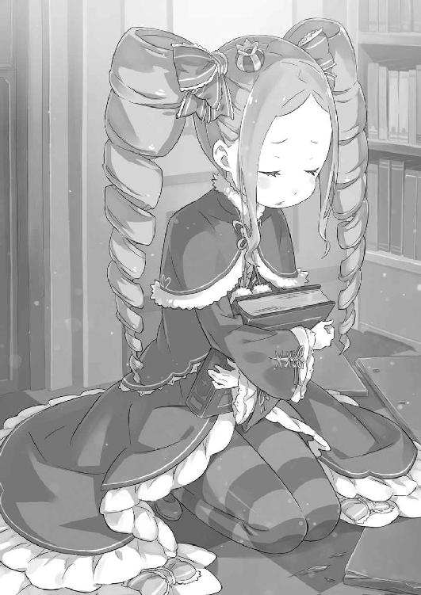
「──その質問に答えるように、ベティーは指示されていないのよ」
胸に抱いた本を広げ、その内容に目を走らせながら、無感情にベアトリスが言った。
『福音』とは、魔女教徒にとっての教典であると聞く。書は所有者の未来を記す予言書のような役割を果たすと、ペテルギウスが言っていたことがあった。
故に、魔女教徒は『福音』の記述に従い、その通りに事を為すのだと。
その事実と、今のベアトリスの受け答えを合わせれば──、
「その本に、何が書いてある......何を、しろって......」
「その質問も、本にないかしら」
「本になきゃ、何もできないのか......？ なら前に、俺を匿ってくれたのは？」
「その質問も、本に書いていないのよ」
「今、こうして俺と話してるのは？ 死にかけた俺を、助けようとしたのは......！」
「──知らない」
本に目を落としたまま、ベアトリスはスバルを見ずに空虚に答え続ける。
答えにならない答えを返して、頑なにその心を、本の中に閉じ込めて。
その人形めいた姿に、感情を封印した瞳に、スバルは肺が痙攣するような怖気を、呼吸の仕方すら忘れそうな目眩に襲われながら、声を上げる。
「何もかも......何もかも、その本に書かれた通りでなきゃできないってのかよ!?」
「......そうかしら。そうなのよ。何もかも、全ては福音の導に従うかしら。そうすることがベティーの生きる意味で、そうするためだけにベティーはいるのよ」
「俺を......助けようとしたのも、本にそうしろって書いてたからか!? 呪いを受けた俺を助けたのも！ 一人じゃ立てなかった俺に手を貸してくれたのも！ ふざけて、怒鳴り合って、馬鹿みたいにはしゃいだ時間も......全部、本のおかげだってのかよ!?」
「──だから！ そうだって言っているかしら!!」
彼女を責めたのと同じ舌で、今度は都合よく縋ろうとするスバルに少女が激発する。
ベアトリスは怒りに顔を赤くし、その丸い瞳でスバルを睨みつけ、指差して、
「これまでベティーがしてきたこと、見てきたこと、言ってきたこと！ 全部、ここに記されていることなのよ。お前が、お前なんかが、ベティーの心を動かせるはずなんてないかしら。思い上がるんじゃないのよ、ニンゲン」
「────」
「ベティーの全ては、お母様のために。お母様との繫がりだけが、ベティーの全て......！ お前なんか、お前なんか......ニンゲン、ニンゲン、ニンゲン......っ!!」
堰を切ったように、ベアトリスから感情が溢れ出している。
それは膨大な激情で奔流で、とっさに言葉を失ったスバルは押し流されるしかない。
何も言えず、無言のスバルにベアトリスは強く強く本を引き寄せる。
「ベティーに、触れるな、ニンゲン。こっちにこないで、ニンゲン。お前なんか知らないかしら、ニンゲン。嫌い。嫌い。──大嫌い！」
涙声の少女の叫びが、今度こそはっきりとスバルの存在を拒絶した。
混乱と失意、それが胸中を埋め尽くしていく。それほど、その拒絶は大きかった。
──絆があると、根拠もなく頑なに信じ込んでいた。
自分と彼女の間には、正面から認め合えないけれど、何かがあると信じていた。
屋敷を発端としたループの中で、スバルは幾度もベアトリスに救われたから。
折れてしまいそうな繰り返しの日々で、その存在に心を救われていたから。
それが、どんな形であっても──、
「あのとき......俺は、嬉しかったんだ......」
一度も口に出せなかった言葉を、またしてもスバルは最後まで言い損ねた。
「──ぅ」
視界が大きく歪み、何かを嘔吐する。
それが血でも胃液でもなく、命そのものであることを直感──時間切れ、だ。
失血、役立たず。重傷、無価値。裏切り、犬死。福音書、戮殺者、魔獣使い、憤死。
果たせず、ナツキ・スバルはここで死ぬ。
「────」
そのとき、スバルは死の淵の奇跡に音を聞いた。
死にかけた耳が拾ったのは、おそらく扉の開く音だ。靴音、誰かが部屋に入ってくる。足音は倒れるスバルを見て、吐息をつく。
「──残念ね」
呟きは遠い。死人に興味を逸したように、靴音は前に進もうとする。
本を抱く、少女の下へ。声の主が、黒衣の死神が、悠然と。
──それが、その邂逅が、少女と戮殺者の遭遇が、どんな結果を生むものか。
「あら」
驚く声は女のものだ。戮殺者の長い足に、血塗れの手が絡んでいる。
臨死にあるスバルの全身全霊、何の意味もない足止め行為。
「......ぇあ、とり、ぅ」
「素敵。大事にされているのね」
瞬間、風が吹いた。直後、摑んでいた手が外れる。──右手が、手首ごと。
血も出ない。凶刃が翻り、黒い光がスバルの頭か、首か、胴か、とにかくどこかに。
どこか、致命的な部分に、きっと突き刺さって──。
「────」
最後の光景の中、悲痛に息を吞む少女の顔が見えたけれど。
──それは、死に逝くナツキ・スバルにはもはや何の関係もないことだった。
第三章 『ユージン』
１
洪水のような、濁流の音が聞こえる。
激しい水音。上から下へ、重力に従い、流れに従い、運命に従がって、落ちる瀑布。
耳元で、あるいは頭蓋の中で響くとめどない轟音だ。その激しい濁流に脳を搔き回されながら、スバルの意識は喪失から覚醒へ導かれていく。
光が、見える。そして、開ける──。
「──ぁ、え、ごほっ」
喉の詰まる感覚を味わい、呼吸のリズムを盛大に狂わせてスバルがえずく。
空気を吸い、吐き出す。交互に繰り返すだけのやり方を完全に忘却し、陸に上がった魚のように痙攣、涎を垂らしながらスバルは蘇生した。
「がふっ、あはっ！」
地面に倒れ、うつ伏せの姿勢だ。固くざらつく床に腕をついて、土下座のような姿勢でスバルは肺に酸素と理解を送り込み、呼吸のやり方を順繰りに思い出す。
痛みが和らぎ、行き場を失っていた唾を吐き捨てる。そうして体が現実感と落ち着きを取り戻すと、不足した酸素が脳に巡り──意識が蘇った。
「し、死んだ......の、か......」
喘ぎながら呟いて、確かめるまでもない『死に戻り』の事実を再確認する。
そう、『死に戻り』したことは確かめるまでもない。それがスバルの価値だ。大事なのは戻れたことではなく──『いつ』『どこに』戻ったのか、だ。
「あ......」
顔を上げ、周囲に目を凝らしたスバルはすぐに気付く。
覚えのある、見知った暗闇だ。冷たい空気と、どこかこの世非ざる雰囲気を漂わせる遺跡の石室。ざらつく石造りの床に、ぼんやりと闇に浮かぶ奥へ続く石扉。
──そして、スバルのすぐ傍らに横倒しになっている、銀髪の可憐な少女の姿。
「えみり、あ......」
薄く額に汗を搔いて、苦しげな寝顔を晒すエミリアを暗闇に見つけた。そこまで確かめてようやく、スバルの中にも納得が生まれる。
過ぎた時間、失った命、訪れた災厄、信じられない裏切り──そんな出来事が次々と波濤の如く押し寄せ、スバルの心を追い詰めていたとしても。
「リスタート地点、変更なし......！」
過去を乗り越えた直後の墓所──ナツキ・スバルはそこへ舞い戻った。
まだ何も取り戻せていない代わりに、まだ何も失っていないやり直しの場所へと。
「──は、ぁ」
ふっと、その事実を理解した途端、スバルの胸に安堵が広がる。
思わず胸に当てた左手も潰れていない。健在だ。右手首を見れば、そこに巻かれたペトラのハンカチは純白のまま、血の痕跡などどこにもない。
それがわかって、長く深く息を吐いて、ホッと胸を撫で下ろして──愕然とする。
「──噓だろ」
「......っ、ぁ」
苦しむエミリアの姿に何ら頓着せず、己の無事を確かめた自分の神経に、愕然。
『試練』と称して押し寄せる過去に、エミリアは今も苛まれている。その長く続く苦痛の時間に成果はない。ただ辛いだけの時間、スバルはそれを知っていた。
なのに、今、スバルは彼女の苦痛を目にしながら、安堵に胸を撫で下ろしたのだ。
──自分が戻ってこられた時間が、エミリアの苦しんでいる今で良かったと。
「そん、なのは......まともな奴の考え方じゃない......」
呻き声を吞み込み、歯軋りし、スバルは醜悪で脆弱な己に怒りを燃やす。
大切な人を、大事なものを、優先すべきことを後回しにして、何がみんなを救うだ。
そんな愚かな在り方の結果が、あの屋敷の惨状を招いたのではないか。
「とにかく、エミリアを......」
状況の整理も、『死に戻り』したことの確認も、問題・障害への対策も、今はいい。
今はエミリアを悪夢から呼び覚まし、泣きじゃくる彼女を慰め、外へ連れ出すのだ。
そうすることが正しい。──そうすることで、順序が守られる。
まず、エミリア。それから墓所、『聖域』、屋敷、そうやって、順番に、確実に。
「正しく、一個ずつ、対処して......」
みんなを、この恐ろしい災厄の運命から救い出すのだ。
心に決めて、決意を固めて、覚悟を宿して、エミリアを起こすために手を伸ばした。
その横顔から感情が抜け落ちていることに、スバル自身気付けないままに。
２
墓所でエミリアを目覚めさせたあとの展開は、これまでとほとんど変わらない。
過去に苛まれ、悲憤と悔悟に混乱するエミリアをなだめて外へ連れ出す。そこで、墓所に入った二人を案じていた顔ぶれ、ラムやガーフィールと合流して仮宿へ戻るのだ。
「──？ ラムの顔をじっと見て、どうかしたの、バルス」
「......なんでもない。綺麗な顔してるなと思って」
「いやらしい」
道中、スバルの視線の言い訳を受け、ラムが軽蔑の眼差しで鼻を鳴らす。
『死に戻り』した以上は当然だが、再会を果たしたラムも無事な様子だ。その事実に人知れず安堵し、視線に減らず口で返す態度にも重ねて安堵する。
「────」
仮宿であるリューズ宅、その寝室にエミリアを運べば、男がしてやれることはここまでだ。悪夢にうなされるエミリアに心は痛むが、そっと彼女を寝台に寝かせる。
「──ぁ」
ベッドに横たわり、触れていたスバルの手が離れることにエミリアが声を漏らす。その不安げな顔に、安心させるように笑いかけ、スバルはラムにあとを託した。
今夜のエミリアはラムに任せていい。彼女なら、うまく落ち着かせてくれる。
その間に、スバルにはするべきことがあるのだ。それは──、
「──ロズワールとの、約束の話し合い」
エミリアが墓所に挑む最初の夜、ロズワールはスバルと話し合いの席を設けている。前回はその機会に、スバルは屋敷に翌朝帰参する提案をさせてもらった。その要求は通り、屋敷に最速で戻ることはできたものの、結果は惨敗だ。
スバルは誰も救えなかった。同時に、いくつもの疑問を持ち帰ることになり──、
「──ナツキさん？ ナツキさん、聞いてますか？」
「......わり、聞いてなかった」
建物に背を預け、考え事に集中していた意識が呼び戻される。振り向けば、スバルに声をかけたのは、怪訝に眉を寄せるオットーだ。
場所はリューズ宅の外、かがり火と星明りだけが頼りの夜の中、スバルはロズワールとの話し合いに向けて、考えを纏めていたところだった。
「で、そんな貴重な時間を使わせて、お前は何の話だって？」
「いきなりやる気を削ぐ言い方するなぁ、この人！ ......ただ、聞いただけですよ」
「聞いたって、何を？」
「ですから普通に、今、大丈夫ですかって」
オットーの再質問に、今度はスバルが訝しげな顔をする。大丈夫かもなにも、大丈夫だから話を聞く、というのが普通の話だと思うのだが。
そんなスバルの内心を察したのか、オットーは「あ、違いますよ」と手を振り、
「大丈夫かって聞いたのは時間の話じゃありませんよ。そりゃ、ナツキさんはここじゃ大忙しでしょうから、時間も貴重だとは思いますけど」
「ああ、まさにその通りだよ。今も、エミリアたんが心配で気が気がじゃない。だからお前とコントしてる余裕はあんまり......」
「──僕が話したいのも、そこですよ」
回りくどい物言いに唇を尖らせ、スバルは早々に話を切り上げようとした。が、オットーは逆にそこに食いつき、「いいですか？」と言葉を継ぐ。
「墓所に何らかの異変があって、ナツキさんがエミリア様を連れ出した。で、たぶん僕の知らない諸々で頭ごちゃついてるとは思うんですが、聞きます」
「──？ ああ、聞けよ」
「では、遠慮なく。──ナツキさん、大丈夫ですか？」
散々もったいぶった挙句の質問がそれか、とスバルは本気で首をひねる。
とはいえ、オットーの心配もわからなくはない。同じ墓所に入ったエミリアが、あれだけ取り乱す結果なのだ。スバルにも何か異変が、と勘繰る気持ちはわかる。
だから──、
「モチのロン、元気元気の絶好調だっつの。エミリアのことがあるから心配すんのはわかっけど、俺は平気だ。それとも、どっか変に見えますかよ？」
「......いえ、どこも変には見えません。とても落ち着いて見えます」
「だろ？ それなら......」
「エミリア様があの状態で、です。それが、かえって危うくありませんか？」
無問題をアピールしようとして、オットーの追及にその言葉が封じられた。
「────」
じっと、オットーは目を細め、スバルの黒瞳を覗き込むようにしている。
彼が懸念するのは、スバルの今の心境だ。確かに現状、『死に戻り』によって先々の事情を知るスバルと、過去の延長上でしかないオットーとは共有できない感覚がある。
一度目の彼らと、三度目のスバルとの間には、受ける心的影響の落差があるのだ。
「お前は、俺が落ち着きすぎてるって思うわけか」
「ええ、そうです。悪いことじゃ、ないとは思います。ですが......」
「──いや、お前のおかげで自信が持てた。ありがとよ、オットー」
「え？」
オットーを遮り、スバルはゆるゆると首を横に振った。
彼に指摘された冷静さ、それはスバルの置かれた状況を思えば歓迎すべきことだ。
「あれだけ色々あっても、冷静にモノが考えられてるって証拠だからな」
「いやその、落ち着いて見えることと冷静に行動できることとの間には、非常に大きくて深い溝があるのではないかと僕は思ったりするんですがー......」
微妙に求めた会話ではなかったのか、オットーは気後れした風にそう言った。が、スバルの方は彼とのやり取りに確信を深める。
あの屋敷の惨状を経ても、怒りを心の奥底に燃やしたまま、頭は回っていると。
「相手はあのロズワールだ。今度は、はぐらかされてる場合じゃねぇ」
のらりくらりと、知っていることを隠される会話にはうんざりだ。少なくとも今回のことで、ロズワールには聞きたいことが無数にある。
前回、もったいぶらせたベアトリスのことも、これ以上は絶対に──、
「──よォ、ちっといいか？」
決意を新たにしたところで、オットーとの会話に邪魔が入った。
仮宿の入口を潜り、こちらへ顔を見せたのはガーフィールだ。カチカチと犬歯を鳴らしながら歩み寄る彼に、スバルは指で自分の鼻をこすると、
「ガーフィールか。......お前もよくよく、パターン化されない奴だな」
「あァ？ 何の話ッしてやがんだよ」
「こっちの話だ。猫みたいに気紛れな奴の相手は対処に困る的な」
スバルの誤魔化す返答に、ガーフィールは不愉快そうに鼻面に皺を寄せた。
猫のように気紛れ、とスバルはガーフィールを評したが、これは満更噓でもない。すでにこの夜はスバルにとって三度目だが、そのたびにガーフィールの態度は変化する。
無論、スバルの起こす行動の変化によって、彼以外のエミリアたちにも些細な変化は表れる。しかし、ガーフィールの変化は特筆すべきものだ。
意見がひっくり返り、好悪が反転し、話のわかる部分と頑なな態度とが入れ替わる。それはまるで、別人になったのかと疑いたくなるような変わりようなのだ。
それは今回、こうしてわざわざ自分から話しかけてきたところにも表れている。
「前はこっちが呼び止めなきゃさっさと帰ってたってのに......。それで、お前が俺に話ってのは？ 俺はこのあと、大事な用があるんだが」
「用事っつっても、あの野郎との悪巧みッだろォが。楽しみにしてるたァ思えねェな」
「悪巧み扱いなのが心外だっつの。まぁ、楽しみじゃないのは否定しねぇけど」
「なんというか、二人して辺境伯相手にものすごい言いようですよね......」
ロズワールへの不信、その点でスバルとガーフィールは意見を共有している。
そんな二人の態度に、いまだロズワールとの初接触を済ませていないオットーは同情気味だ。その認識の甘いオットーに、スバルはやれやれと肩をすくめる。
「わかってねぇな、オットー。ロズワールって奴はな、そのぐらい色々と突っ込み所の多い男なんだ。それが理解できてないと、突っ込み疲れて死ぬぞ」
「今これ真面目な話されてます？ それとも聞き流していい話？」
「ロズワールの野郎と真面目な話がしてェ......？ 兄ちゃん、頭大丈夫ッかよォ」
「今これ僕が心配されるとこですかねえ!? 辺境伯の方が問題ありません!?」
「だから、そういう奴なんだって」
立て続けに言われて、いよいよオットーも何を相手にしようとしているか、真剣に悩み始めたらしい。彼は腕を組み、実物との遭遇に備えてぶつぶつと何事か呟く。
「不安増し増しですが、一発逆転にはこれしかないし......いやいや、でも僕の人生を懸けた大勝負の相手に、味方からもこんな色々言われてる人を......」
「まぁ、ゆっくり悩んでくれ。少なくとも、今夜は話せねぇしな」
このあと、スバルがロズワールと交わす予定の話題を思えば、その場でオットーに挨拶させるのはあまりにも無体だ。それに、スバルにもそんな余裕はあるまい。
少しだけ未来の不安を忘れて、口の端を緩ませる今のような余裕は、きっと。
「で、だ。男三人で馬鹿話してるのも悪くないんだが、用事だろ？ 何の話だ？」
「おォ、忘れッとこだった。『ククルーは粗忽者』みてェになるとこだ」
逸れた話題を修正し、本題を促すスバルにガーフィールが手を打つ。しかし、彼はその翠の瞳で「けッどなァ」と意味ありげにオットーを横目にして、
「あー、そっちの兄ちゃんッにも聞かせていいのかよ？ てめェが判断しろや」
「......その前置きするってことは、『聖域』に関係ある話か？」
「俺様がてめェと、他にッ何の話すッと思ってんだよォ」
「ラムのリサーチがしたいのかもしれねぇじゃん。好みのタイプは背が高くて、地位が高くて、学歴も高い三高タイプ。あと、ピエロっぽい化粧」
「やめろや......聞くまでもねェし、聞くッと気が滅入る......」
わりと本気で辛そうなので、スバルはそれ以上の口撃には武士の情けをかけた。
ともあれ、ガーフィールの気遣いには感謝だ。忘れかけたことからして大した用件でもないだろうが、陣営の問題にオットーを巻き込むのは気が咎める。
オットーはあくまで巻き込まれ要員、無事に日常に送り返してやらねばならない。
「ってわけで、俺たちはこれから恋バナしてくる。もう夜も遅いし、お前はこの先の大聖堂に泊まれよ。そこで、村の人と一緒に避難してきたお前の商売敵もいるから」
「うう......絶対、知ってる人に見つかったら先走った顚末を笑われる......！ って、そうじゃなくて！ あのですね、ナツキさん、僕は......」
「──待て」
情けない顔から一転、食い下がろうとオットーが前に出る。が、スバルはそれに先んじて声を上げ、彼の出鼻を挫いた。オットーからすれば、ロズワールの覚えを良くするためにも、スバルたちの事情に食い込んでおきたい気持ちはわかる。だが──、
「頼む、オットー。また、明日だ」
「ぐぬぬ......わ、かりましたよ。大人しく、同業者に笑われつつ雑魚寝してきますよ！」
スバルの強固な姿勢は崩せぬと悟り、オットーは被っていた帽子を悔しげに脱ぐと、それを握り潰しながら大聖堂の方へ歩き出した。
とぼとぼと肩を落とした後ろ姿が、なんとも見事な哀愁を演出している。
「なんて寂しげな背中が似合う奴なんだ......」
「そいつァ俺様も思うッけどなァ、それでいいのかよォ」
「いいんだ。あいつがどうこうなっても寝覚めが悪いんでな」
立ち去るオットーを見送るスバルの答えに、ガーフィールが首をひねる。それから、彼は「まァ、いいか」と考えを投げ出し、軽くこちらの肩を叩いた。
「話しッときてェことがある。場所変えッからついてッこいや」
と、有無を言わせぬ態度で、ガーフィールは返事も聞かずに歩き出した。その背中にスバルは頭を搔くと、仕方なしに続きながら呟く。
「勘弁してくれ。......また、違う展開じゃねぇか」
３
前を行くガーフィールの背中を追い、スバルは森の奥深くへと進んでいく。
夜の森が危険なことは一般常識だ。中でも、『クレマルディの迷い森』は特に危険と聞かされている。それだけに、この散策には色々と不安もあるが。
「お願いだから、一人にしないでくれよ」
「気色ッ悪ィこと言い出すんじゃァねェよ。たかが夜の森ッだろォが」
「そのたかが夜の森が危ない人間は、お前が思ってる以上に多いの。腕っぷしもそうだけど、俺は遠くの余所者を嗅ぎつけられる鼻も持ってねぇからな」
「ハッ、昼間のことかよ。まァさか、まだ根に持ってやがんのか？」
「いや、特には。実害あったのも、デコピン喰らったオットーだけだし」
それにスバルにとって、この日の昼の出来事など何日も前のことだ。仮にスバルがオットーと親友だったとしても、その怒りを持続するには時間が経ちすぎていた。
「そして、俺とあいつは親友でもない。ただの、俺が命の恩人ってだけさ」
「あの兄ちゃんも、苦労ッしてそォだなァ......」
何故かオットーに同情的な意見を聞き流しつつ、スバルはガーフィールを観察する。
低い背丈、細く見えるがしなやかに鍛え上げられた肉体。あくまで常識的な人間の範疇を逸脱していない体格だが、その私見はあまり当てにならない。元々、この世界は姿形と身体能力が一致しない。あの小柄なレムですら鉄球を振り回すのだから。
故にこのとき、スバルがガーフィールの背中に思案していたのは別のことだ。
「──フレデリカとは、どのぐらい会ってないんだ？」
唐突に切り出した一言に、ガーフィールの肩がぴくりと跳ねるのが見えた。
フレデリカとガーフィール、二人が姉弟関係にあることはすでに確認済みだ。その関係が良好ではないこと、これも当人たちから聞かされている。
ただ、フレデリカの『聖域』に対するスタンス、こればかりはわからない。
少なくとも、エルザと殺し合いを演じたのだ。フレデリカが屋敷に彼女を招いた可能性はゼロ。──むしろ、エルザを招いた最有力候補は他にいる。
それだけに、フレデリカを確定的に味方として認識するためにも──、
「......なァんで、俺様がそんなッことてめェに話さなきゃなんねェんだ？」
「ダメ元で聞いてみただけだ。もしかしたら答えてくれるかもしれねぇじゃんか」
「ハッ！ これも昼間、話したはずッだろォが。あいつのこたァ、この中のこととは関係ねェ。あいつはこっから出てったんだ。無関係ッなんだよォ」
「そこだよ」
こっちを向かず、嚙みつくように吐き捨てたガーフィールに待ったをかける。
フレデリカとガーフィールの関係を知って以来、引っかかっていたことがそれだ。
「ガーフィール、お前とフレデリカが姉弟なのはわかってる」
「......野郎か、ラムか。クソ、口が軽ィな」
「隠すほどのことでもねぇだろ。それに、おかげで俺の今の疑問がある。お前とフレデリカが姉弟なら、フレデリカも『混じり』のはずだ。なのに、なんで外にいる？」
「────」
『聖域』を取り囲む結界は、亜人との混血──『混じり』を閉じ込めるものだ。
故にエミリアやガーフィールたちが結界に囚われ、その解放を求めて『試練』に挑むという図式が成り立つ。少なくとも、リューズの説明ではそのはずだ。
ならばガーフィールと血縁者のフレデリカも、結界に囚われていなくてはおかしい。
「そうなってないってことは、何か抜け道があるはずだ。知ってるなら話してくれ」
「聞いてッどうなる。結界は『試練』を越えなきゃ開けねェ。それァ変わんねェぞ」
「知りたいだけだ。知っておけば選択肢が増える。俺は情報を全部入手してから、クリア方法のために頭を悩ませたいタイプなんだよ」
「────」
話の間、振り向かないガーフィールの表情は見えない。ただ、愉快な顔をしていないことは、その背中から伝わる威圧感でわかる。それでも、短気な彼が話を打ち切らないのは迷いがあるから。──そう思うのは、欲目だろうか。
「......つくぜ」
スバルへの返答ではなく、ガーフィールは道を塞ぐ蔦を腕でどけながら言った。会話中も二人は歩き続けており、質疑応答より先に目的地に到着したらしい。
だからといって、今のやり取りをうやむやにされるのは困るのだが──、
「──あまり、ガー坊をイジメてやらんでくれるか、スー坊や」
口を開け、答えを促そうとしたスバルに先んじて幼い声がかけられる。見れば、ガーフィールが蔦をどけた先、森の中に開けた空間があるのがわかった。
欠けた月と星屑の空、大自然の光が降り注ぐその場所は、ある種の幻想空間の雰囲気を醸し出している。月光と星明りの下、美しい少女が立っていればなおさらだ。
「......ただし、俺の攻略対象外に見た目が幼いって注釈がいるかな」
「なかなか口の減らん子じゃのぅ。可愛げのなさはロズ坊といい勝負じゃな？」
「それは言いすぎでしょ。愛嬌と諦めの悪さで売ってるんだよ、俺」
散々な評価に苦笑しつつ、スバルは月下の広場に足を踏み入れる。相手がガーフィールだけなら、警戒をほどくのは悪手だと思うが、
「そこに保護者同伴ってんなら話は別だね」
「けっ」
拗ねた風に舌打ちし、ガーフィールがスバルの横を抜けて広場の中央へ。そこに佇む少女──風の人物、リューズの隣に並ぶ。まるで定位置とばかりに並び立つ二人は微笑ましいが、そこでスバルは違和感に気付いた。
リューズの服装が、仮宿で別れたときの黒い衣装ではなく、白い貫頭衣なのだ。
「あれ、リューズさん、もしかして着替えた？」
「年寄りにはキツイ時間じゃからな。スー坊にも夜更かしさせてすまんが......」
「俺は深夜アニメ見るから苦じゃないけど......俺に用があったのはリューズさん？」
「そう取ってもらっても構わんよ。ガー坊はワシの付き添いじゃな」
頷くリューズを肯定するように、ガーフィールはその場でどっしりと腕を組む。口を挟まないと態度で示す様子に片目をつむり、スバルは軽く頭上を仰いだ。
涼やかな風が吹く。葉々の揺れる音と、冴えた空には星がちりばめられていて。
「......いい場所だな。森の中にある秘密基地みたいだ」
「ただの野っ原じゃよ。基地と呼ぶには何にもなさすぎるじゃろう？ ......それがワシにとって、居心地のいい理由なのかもしれんが」
「となると、ここはリューズさんの憩いの場か。そんな場所に招待されるなんて、半日でずいぶんと仲良くなれたな。これは秘密を打ち明けられる機会も近いか？」
「調子のいいことを言いよるわぃ」
無表情で、言葉遣いだけ老成したリューズとのやり取りは穏やかなものだ。
とはいえ、スバルと彼女らとでは共に過ごした時間が違う。打ち解けたなどと考えるのは、たった半日の実時間を思えば都合が良すぎる。何か、理由があるはずだ。
「ガーフィールの気紛れと、俺の疑問がうまい具合に作用した......か？」
対応の変化、その原因として思い当たるのはそのぐらいか。
毎回のガーフィールの変化だが、それが悪い方に働くばかりではスバルも困る。今回は当たり回。だとしたら、相応のリターンを得たいところだ。
「なんにせよ、有意義に話せると嬉しいな。来るロズワールとの舌戦の前哨戦に」
「ロズ坊が基準とは荷が重いのぅ。まぁ、期待に応えられるように頑張るとするか」
苦笑のニュアンスで言い、自分の腰を叩くリューズ。さすがにそこまで老人ぶる必要はあるまいと思ったが、スバルはそれとは別の議案を提出した、それは──、
「さっき、ガーフィールにも聞いたことだけど、リューズさんは答えてくれるか？」
「......フレデリカが『聖域』を出られた理由、じゃな。ガー坊にも聞いておったが、それを知ってスー坊はどうするつもりなんじゃ？」
「それこそ、知ってから考えるって俺の答えも変わらねぇんだが......そうだな」
結界を例外的に通り抜けたフレデリカに、特にペナルティを受けた印象はなかった。その抜け道が実現可能なもので、『聖域』の住民全員に適用できるなら──、
「それを使って、『聖域』の人たちを結界の外に連れ出せる。魂がすっぽ抜けるって理由で昼間は却下されたけど、これなら『試練』を受けなくてもＯＫだろ？」
「理屈の上ではそうなるの。しかし、頑なに『試練』を避けるのは......」
「エミリアに『試練』を受けさせたくない。それは、完全な俺のワガママだな」
「────」
頰を搔くスバルの返答に、リューズが憂慮するように眉尻を下げた。
過去に苛まれ、エミリアは『試練』を越えられずに苦しみ続ける。少なくとも、それがここから数日、あるいはもっと続くことをスバルは知っている。
「あの調子で過去が越えられるとは到底思えない。だから、やらせたくないんだ」
「『試練』は、それでいいかもしれん。だが、苦難は時機を選んで訪れるものではない。穏当な日々が続くとも限らん。苦難と相対するたび、逃げ続けるわけには......」
「逃げ続けるって話はしてねぇよ。ちゃんと迎撃する準備のための撤退......言わば戦略的撤退ってヤツだよ。リューズさんの言う通り、不利な場面で苦難とぶつかることだってあるだろうけど......なるたけ、そうならないための努力はするべきだろ？」
言葉を続けて説得にかかるリューズに、スバルは逃げることの正当性で言い返す。
背を向けることは恥ではない、少なくともスバルはそう思っているから。何より、仮に今、背を向けたとしても、エミリアはそれだけでは絶対に終わらない。
「今じゃなくても、エミリアはいずれ必ず過去と向き合う。『試練』があの子にそれを思い出させちまった。だから、忘れるにしても乗り越えるにしても、エミリアはそれを選ばなきゃならない。それならできるだけ、邪魔なモノを落とすのが俺の役割だ」
「......逃がそうとするのに、一番苦しいところからだけは逃がしてやらんのじゃな」
「逃げずに打ち勝ってくれるって、あの子にぞっこんな俺は信じ込んでっからね」
ここまでの話の結論に相応しいかはわからないが、スバルはそう言って笑った。歯を見せたその笑顔に、リューズは何やら感慨深げに目を細める。
外見不相応の高齢者には、青臭いだけの理想論と笑われるかもしれないが。
「──ババア、趣味が悪ィぞ」
そう苦言を呈したのは、口出ししないと腕を組んでいたはずのガーフィールだった。瞑目していた彼は片目を開け、すぐ傍らの幼い老女を見やり、
「言ってやれや。『ガッドギー・グアッドゼアッドの山籠もり』と同じだってなァ」
「ありがたいけど、何と同じって言われたのかさっぱりわからねぇ」
「ガー坊が言いたいのは、都合のいい抜け道などないという話よ。こればっかりは、結論を先延ばしにしたワシが悪い。年寄りの悪い癖じゃな」
謎慣用句を嚙み砕いて、リューズが自分の薄紅の髪に指を絡める。その返答を受け、スバルは詳しく説明してくれと、要求を目で促した。
「フレデリカが結界の外に出られたのは、あくまで例外的なことじゃ。あの子は、結界に囚われる条件を満たしておらん。故に出られた。それだけのこと」
「結界に囚われる条件？ なんだ？ ハーフってこと以外に何かあるのか？」
「いいや、違う。結界に囚われる条件はそれだけ。例外はない」
遠回しな発言を反省したのに、なおも遠回しなリューズの言葉に眉を寄せる。
彼女の発言を紐解けば、『聖域』を囲う結界の条件に変化はない。つまり問題は結界ではなく、フレデリカの方にある。フレデリカが結界に引っかからないためには、
「フレデリカが『混じり』じゃなければいい、ってことか？」
「厳密には、結界が混血を判別する基準が『血の濃さ』なんじゃ。人と亜の血が同等に濃ければ、結界に囚われる。しかし......」
「ハーフ以下......クォーターとかなら、結界にかからない？ つまり......」
そこで言葉を切り、スバルはガーフィールの方を見た。唇を曲げ、不機嫌な面構えをしていた彼は牙を鳴らし、「そォだよ」と言葉を継ぐと、
「俺様とフレデリカとは父親が違ェんだ。──俺様ァ、ガーフィール・ティンゼル。あいつとは、名乗ってる姓も違ェはずだぜ」
これまで一度も名乗らなかった姓、それがスバルの推論を裏付ける。
ガーフィールの名乗った姓と、フレデリカの名乗った姓は確かに異なるものだ。フレデリカ・バウマン──それが、フレデリカがスバルたちに名乗った姓なのだから。
「フレデリカは血が薄い......だから、結界の外に出られたのか」
「人の母と、混血の父の間の子じゃ。故に、あの子は森を自由に出入りできる」
「ハッ！ 自由に出入り？ 笑わッせんな！」
重々しく頷いたリューズの呟きに、ガーフィールが苛立たしげに嚙みついた。彼は額の白い傷に拳を当て、その翡翠の瞳の瞳孔を細くすると、
「出入りもクソもねェ。十年間、一度も戻ってきやしねェッじゃねェか。フレデリカはこの場所を捨てッたんだよ。だから、あの女はもう関係ねェんだ」
「ガー坊......」
言い捨て、苦い顔つきのガーフィールが目を逸らした。小柄な体軀を猫背に縮める青年の肩を、背伸びするリューズが一度だけ叩く。
そうして、リューズは改めてスバルの方に向き直った。
「と、いうわけじゃ。長引かせたわりに実りのない話ですまんかったの」
「......いや、平気。確かに選択肢は消えたけど、使えない選択肢がいつまでも残り続けるよりはずっとよかった。でも、これで結局、『試練』か」
落胆がないとは言わない。だが、今の言葉が単なる強がりというわけでもない。フレデリカとガーフィールの間の、複雑な事情を知れたこともマイナスではない。
ただ、問題はぐるっと一周して、結局は最初の課題のところへ戻ってきた。
『聖域』の解放には『試練』の突破が必要不可欠──それ見たことか、と形のない運命に嘲笑われている気分だ。
ただし、今回はそんな運命に笑われっ放しにされてやらない。
「リューズさん、ガーフィール。実は俺から提案がある」
「......提案、とな？」
「ロズワールにも話すし、エミリアにも了解を取らなきゃいけないんだが......先に二人に話をしておくよ。すげぇ大事な話だから、口外しないでくれると助かる」
立てた指を唇に当て、スバルはガーフィールとリューズに念押しする。その前置きに二人は訝しげにしたが、このぐらいの注意はして然るべきだ。
「────」
前回のことで、屋敷襲撃におけるフレデリカの潔白は証明された。
しかし、彼女はいまだ、転移を引き起こした黒幕については明かしていない。『停滞派』の存在を知らなかったフレデリカだが、黒幕がその派閥と無関係とは考えにくい。
故にスバルの提案が漏れれば、その黒幕に付け入る隙を与えかねない。そのため、情報は極秘に、『聖域』の代表格である二人にだけ伝えたい。
「だから、約束してくれるか？」
「約束、か。スー坊は苦手な言葉じゃと言っておらんかったか？」
「契約と誓約は、諸事情でますます嫌いになったね。でも、約束は別。これは守らなきゃいけないって思わされるから......だから、二人にも頼みたい」
口約束で構わない。それを無下にする二人ではないと、スバルは信じている。
その約束を求めるスバルに、二人はしばし沈黙した。が、無言のガーフィールの代わりに、リューズは年寄り臭く嘆息すると、頷く。
「わかった。正しく、ワシらは口外せん。何なりと話すがいい」
「助かる。ありがとう」
承諾したリューズに礼を言い、スバルはガーフィールにも目を向ける。無言のままの彼だが、否定もしない。その態度を肯定と受け取り、スバルは続ける。
「話したいのは『試練』のことだ。エミリアにやらせたくないって俺の意見はさっきと変わってない。二人にも、それを認めてほしいんだよ」
「あァ？ ざッけんな。お姫様が受けねェんなら結界はどうすんだ、オイ。昔話が怖いなんて泣いても、結界は許しちゃァ......」
「わかってる。だから、『試練』は代わりに俺が受ける。──それでどうだ」
「────」
牙を剝くガーフィールを遮り、スバルは自分の手札を一気に開示した。
その内容にガーフィールは目を見開き、リューズも無感情に見える頰を硬くする。そんな二人の反応に、スバルは墓所であったことを説明する。
「エミリアを助けに墓所に入ったとき、俺は無事だっただろ？ それは、俺に『試練』を受ける資格があったからで......さらに言えば、『試練』を突破したからだ」
「『試練』を越えた......ッ!?」
前回も、エミリアをリューズ宅へ運んだ直後に交わした会話の再現だ。そのときも、ガーフィールはこうしてスバルに資格があることを驚いていた。
となれば、隣にいるリューズの反応もスバルには予想がつく。
「ややこしいことになった。そう思ってるか、リューズさん？」
「一言一句、心中をなぞられては否定できんな。しかし、スー坊の言い分はわかった」
驚愕の癒えないガーフィールと違い、リューズは早々に衝撃を吞み込んだ様子だ。それでも考え込む素振りの彼女に、ガーフィールはちらりと戸惑いの目を向ける。
判断を仰ぐような目配せ。それを受け、リューズは小さく吐息をついた。
そして──、
「スー坊や、ワシからも大事な話がある」
「なんだ？」
「ここで、スー坊には大人しくしてもらわねばならんということじゃ」
「──。────。は？」
肯定か、否定か。
そのどちらかの答えしか用意していなかったスバルは、鼓膜を震わせた言葉を理解するのが致命的に遅れた。否、遅れていなくても間に合わなかっただろう。
何故なら──、
「──ぐ、ぅッ!?」
「無駄にッ動くんじゃねェ。その分、痛ェ目見るだけだぜ」
棒立ちのスバルの首を摑み、その体を吊り上げたのはガーフィールだった。
その常軌を逸した膂力に足が浮かび上がり、握力が喉を圧迫、息が詰まる。
「か、ぁ、く......な、ぁ......っ」
「どうして、と思っておるじゃろうな。しかし、許しは乞わんよ」
首をゆるゆると横に振り、リューズはどこか寂しげにそう言った。
理由がわからない。唐突に、何故、こんな凶行に──、
「約束は守る。口外はせん。──それは、リューズ・シーマの名に懸けて誓おう」
声が、遠くなる。リューズが何事か、話していた声も。
代わりに意識は、ガーフィールの熱い掌に集中し、現実と夢の境が消失する。
ぷつりと、糸が切れるように。──何を、誤ったのか。
「────」
何もわからないまま、スバルの意識は闇の中に真っ逆さまに転落していった。
４
──意識の端に最初に引っかかったのは、滴る水滴の連続する音だった。
「────」
等間隔で落ちる水滴がリズムを刻み、無音の中に大音量で響く錯覚を思わせる。その錯覚に従い、眠っていた脳が活動を再開、血が全身に行き渡るのを実感する。その血の巡りに手足の痺れを強く感じ、身をよじろうとして──それができない。
「──ッ!?」
途端、意識は即座に覚醒し、スバルは自分の存在を取り戻す。それと同時に、見えるはずの世界が見えず、動かせるはずの手足が動かない不自然を再確認した。
──目を潰されて、手足を切り落とされた!?
最悪の想像が脳裏を過るが、早まった結論に絶望する前に頭部の圧迫感に気付く。
きつく、両目を塞ぐ感覚はおそらく目隠しだ。手足が動かないのも、同じく縄による拘束だろう。手は後ろ手に、足首もがっちりと縛り付けられていた。
そして、口には猿轡だ。ここまでくれば嫌でも理解できる。──監禁状態だと。
「────」
突然の事態に混乱しながらも、スバルは現状の理解になんとか脳を活用する。
『死に戻り』地点に変更がなければ、リスタートは墓所の石室で始まるはずだ。つまりこれは『死に戻り』とは関係ない。ならば、意識をなくす直前の出来事は──、
「────」
ガーフィールと森に向かい、リューズを交えた話し合いの最中、凶行に──。
「──様子見にきてッみりゃァ、ちょうど目覚めたところたァ運がいいな」
記憶が蘇り、スバルの現状把握が済んだ直後のことだ。
まるでタイミングを見計らったかのように、頭上から声が降ってくる。床に腹ばいになるスバルは顔を上げ、見えないながらも相手の位置に当たりを付け、
「ぁーぃーう......」
「何言ってんだかわッかんねェが、たぶん俺様の名前だろォよ。待ってろや。今、猿轡は外してやらァ。先に言っとくが、助け呼んでも無駄ッだぜ」
靴音が近付く気配。すぐ傍で誰かがしゃがむ音がして、手がスバルの口元に触れた。その手が結び目の固い猿轡をほどくと、スバルの顎と舌が解放される。
「こォれで......」
「──誰かー!! 俺はここにいるぞー!! 助けてー!!」
「だァ!? てめェ、叫ぶんじゃねェって言ってんだろォがァ！」
解放された途端、言いつけを破ったスバルの顎が力ずくで閉じられる。ガーフィールの握力に頰骨が軋み、その痛みにスバルは呻き声を堪えながら、
「た、すけを呼ぶなって言われて、呼ばない監禁被害者がいるか......っ」
「怒鳴ろうが叫ぼうが無駄だッてんだよォ。ここァ『聖域』の誰もこれねェ隠れ家だ。当然、集落ともずっと離れてらァ。いいから、また猿轡されたくなきゃ黙ってろ」
すぐ間近、おそらく目隠しされたスバルと額を突き合わせての忠告だ。それを受け、スバルはこれ以上騒いでも、助けはこないものと息を吞む。
「そのッ調子で大人しくしてろや。痛ェ思いァしたくねェだろォが」
舌打ちしするガーフィールから刺々しい敵意が突き刺さる。それを浴びながらも、スバルもまた彼の真意を問い質さねばと奥歯を嚙んだ。
何故、スバルを監禁したのか。リューズの思惑含め、聞かなくてはならない。
「......ひとまず、逃げるときの参考にここがどこか詳しく聞いていいか？」
「ハッ！ 余裕だな、オイ！ 慌てッふためくかと思いきや、だ。ちっと見直したぜ」
「カッカしてても好転しない、ってのが最近の学習成果でな。徐々に質問の範囲を広げていって、お前に答えさせる寸法さ。......俺はどのぐらい寝てた？」
「......そのッぐれェなら答えてやるよ。半日、今は火の刻真っ盛りってとこだ」
手の内を晒すスバルの交渉に、ガーフィールは声の調子を落として答える。
経過時間は半日、これは腹具合からも信じられそうだ。そうなると、すでに外ではエミリアたちがスバルの不在に気付いているはずだが──、
「半日で忘れられるキャラじゃない自信はある。どうやって誤魔化してんだ？」
「そいつァてめェの気にする問題じゃァねェよ。それッより、てめェが気にする必要があんのは別のことッだろォが。──それとも、必要ねェのか？」
ふいに、ガーフィールの声音に険がこもり、スバルは目隠しの裏で眉を寄せる。
今のガーフィールの言葉には力と、違和感があった。断定と、確認だ。ガーフィールはスバルに対する何らかの確信があり、逆にスバルにはその心当たりがない。
だからスバルにとって、ガーフィールの今の一言は違和感になったのだ。
「今度はとぼけッやがんのか。さっきの潔さはッどうした、あァ？」
「......悪ぃが、本気で何言ってるのかわかんねぇ。お前が俺に何か含むところがあるってんなら、それははっきり言ってくれねぇか。ラムに言ってるみたいにさ」
「安い挑発してッくれやがる。──安っちィ挑発は大好きだぜ」
鋭く呼気を吐くと、ガーフィールがスバルの襟首を摑んで持ち上げる。
身動きのできないスバルはされるがまま、冷たく硬い壁に背中から押し付けられた。そのまま、何か鋭い感触──ガーフィールの爪だろうか、それが喉に宛がわれる。
「死も怖がらねェ。てめェらは揃いも揃って、頭がおかしいって有名だッかんなァ」
「ま、て......本気で、話が繫がらねぇ。......お前、俺に何を」
「とぼけんなッ！ そんだッけ体中から瘴気ばら撒きやがって、知らねェなんて言い訳が通るかよォ！ ──えェ？ 魔女教徒がァ！」
「──は、ぁ？」
強く爪が押し込まれ、スバルの喉が薄く裂ける。微かに鋭い痛みがあり、裂けた傷から血が滴るのを感じるが、スバルはその痛みに意識を割けない。
それ以上の驚きと衝撃が、スバルの理解を超えるものを脳に叩き込んでいた。
「墓所を出たッときから、臭いァ濃くなってやがった。だァが、瘴気の濃い奴ァ普通の奴にも稀にッいやがる。『疑惑のピテロは無罪放免』ってなァ。だから、何にもしねェってんなら見逃してやるつもりだったが......お姫様の代わりに『試練』を受けるだァ？」
「────」
「冗談じゃァねェ。心にもねェ言葉で、誰がてめェに従うかよ、間抜け野郎！」
「心にも、ない......？」
「そうだろォが。ご大層な題目並べ立てて、あれこれ言い訳しやがったが、てめェの態度のどこに、エミリア様の心配があったってんだ？ あれはな、俺様の一番嫌いな奴とおんなじ目なんだよ。──自分の見たいもん以外、何も見ちゃいねェ目だ」
謂れのない誤解だと、声を大にして叫べればよかった。
だが、『死に戻り』の直後に抱いた感慨──エミリアを思いやるより、『死に戻り』したことを把握して安堵した事実が、ガーフィールの疑念への反論を封じた。
さらに彼の放つ猛々しい言葉によって、スバルの脳裏にとある出来事が蘇る。
それは過去に、この状況と酷似した場面で──、
「お、れの体から、魔女の瘴気......？」
「そォだ。知らぬ存ぜぬが通ッと思うな。てめェのそれァ、異常なんだよ」
「......墓所を、出てから、濃くなったって」
それは『試練』を受けたことで──否、『死に戻り』したことが原因の変化だ。魔女の力で蘇るたび、スバルの存在を取り巻くそれは色を、臭いを、濃くしていく。
──その香りを彼女は、『レム』はこう呼んでいた。
「魔女の、残り香......っ」
「ハッ！ 面白ェ呼び方じゃァねェか。しっくりくるぜ、魔女の残り香！ てめェが体中から垂れ流してやがるのが、その臭ェ臭ェ魔女の臭いだッ！」
声を絞り出した直後、ガーフィールが乱暴にスバルを床へ投げ出した。
受け身も取れず、肩から硬い床に激突する。鈍痛に呻き声が漏れるが、それを強引に吞み込んで、スバルは事態の最悪さを改めて呪った。
かつて、レムがスバルを疑い、一度ならず死に追いやった原因ともなった引き金。
──魔女の残り香、その響きが再びスバルの前に障害として立ちはだかる。
「────」
「墓所に入って何がしてェ？ 何を企んでる？ 魔女の墓場だ。碌なことにならねェ」
舞い戻る都度、変わるガーフィールの態度を気紛れだと決めつけていた。違った。
ガーフィールの態度の変化は、スバルを取り巻く瘴気の濃度の変化を受けたものだ。
だから初回、最も瘴気の薄かったスバルには墓所の攻略を提案し、以降の瘴気の濃度が増したスバルには不信感を露わにしてきた。今回、監禁に至ったのもそれが理由だ。
──そしてこの事実は、スバルにとって猛烈にマズい状況を意味する。
「────」
『死に戻り』が原因な以上、回数を重ねるほどガーフィールとの関係は悪化する。付け加えれば、リスタート地点は墓所──関係改善を図る時間が圧倒的に足りない。
出会った頃、同じように瘴気が理由でスバルを危険視していたレムは、それでもスバルを見極める猶予をくれた。だが、短気なガーフィールにはそれがない。
スバルを取り巻く瘴気を危険と見れば、即座に排除することも厭わない。
「ま、て......それなら、お前はどうして、俺を閉じ込めておく......？」
「あァん？」
「俺を、異常だって......墓所に入れるのも危険って判断するなら、俺をこうやって......閉じ込めておくのはおかしい。なんで、始末しない......？」
「始末！ ハッ！ らしいこと簡単ッに言ってくれッやがる！」
スバルの疑問に鋭く息を吐き、ガーフィールは忌々しげに舌打ちした。
「俺様も、それができりゃァさっさとやってやりてェよ。けど、そォもいかねェ」
「できない......？」
「てめェがうまく、周りの奴らに取り入ってッやがッからだろォが。迂闊にてめェに手出しして、『テスラ砦の陥落』みてェに暴発されッのァ御免だ」
頻出する謎慣用句だが、今回のものは発言の前後から内容が読み取れた。
ガーフィールの恐れる暴発とは、スバルが無事でないことを知った人間──おそらく、エミリアやアーラム村の人々による、『聖域』への反発のことだ。
だが、それを危険視しているということは──、
「案外、中の手綱が握れてねぇな......。俺は危険材料なのと同時に、抑止力か」
「小賢しい野郎だ。そォでもなきゃ、悪知恵も働ッかねェだろォがな」
声が近付く。床に倒れるスバルに、しゃがんだガーフィールが顔を近付けたか。その距離感のまま、ガーフィールはスバルの頭を摑んで続ける。
「正直、『試練』のこたァビビった。けど、乗り越えたァは吹きすぎたなァ。結界にゃァ何の変化もねェ。噓はバレバレなんだよォ」
「ああ、それか......実は、墓所の『試練』って全部で三個らしいぞ」
「このッ状況でよくもまァだ。そのクソ度胸だッけは感心すんぜ」
「まぁ、信じねぇよな......俺も、話の順序完全にしくじったわ......」
『試練』を受ける資格があると語り、乗り越えたと告げ、実は関門は一つではないと明かす。疑惑を抱いた相手に対し、最悪の開示方法といって過言ではない。
「......俺の、沙汰はどうなる」
「エミリア様次第、って言っといてッやらァ。ひとまず監禁は続ッける。死なせねェよォに扱ってやるが......結界が解けたあと、瘴気について話し合おうじゃねェか」
殺しはしない、と監禁状態の継続を宣言するガーフィールに、スバルは唾を吞む。
脳裏を過るのは、雑多な感情を抜きにした様々な問題だ。
──『試練』に臨むエミリア、不審なロズワール、彼を肯定するラム、反応のないパック、屋敷を襲撃するエルザ、共犯であろう『魔獣使い』、黒幕を明かさないフレデリカ、惨劇に吞まれるペトラ、今も眠り続けるレム、魔書を抱くベアトリス。
そしてそこに、瘴気を危険視するガーフィールと、彼と同意見のリューズが加わり、スバルの不在に暴発しかねないアーラム村の人々の存在がある。
「は」
なんだこれは。なんなのだ、これは。何をどうして、どうすればいいのか。
いったいどうすれば、これだけの障害が詰まった状況を突破できる。打破できる。
いっそ、この監禁状態になった時点で『詰み』の盤面と捉えれば──、
「──ッ!?」
「──させッねェよ」
口の中に異物がねじ込まれ、スバルは驚愕に激しくえずく。が、それをしたガーフィールは躊躇なく、悶えるスバルに素早く猿轡を嵌め直した。
これで、声は出せない。それと同時に──、
「自決も許さねェ。てめェが、何考えてやがッか知れたもんじゃァねェがな」
「────」
衝動的に舌を嚙もうとして、それをガーフィールに妨害された。猿轡を嵌められた顎は自由を奪われ、口の端からこぼれる涎を拭うこともできない。
自害を、『死に戻り』を封じられた。
ガーフィールにはスバルを生かす理由がある。故に、スバルを死なせない。
「俺様がてめェの一番気に食わねェのが、その態度だよ」
「ぁーぃーう......っ」
「瘴気云々だけッじゃァねェ。──その目が、ロズワールの野郎にそっくりでやがる」
言い捨て、呻くスバルをガーフィールが足蹴にする。硬い床を転がされて、壁にぶつかるスバルは仰向けのまま、必死に荒い呼気を繰り返した。
「飯とシモのこたァ世話係に任せてッある。──おかしな真似ァ、すんじゃねェぞ」
その恫喝めいた言葉を最後に、ガーフィールの足音が遠ざかる。
「ぁえっ！ ぁーいーう！ ぁぇええ!!」
身をよじり、遠のく気配に声を投げる。声にならない声に、相手は立ち止まらない。
そのまま、スバルの必死の声は届かないまま、気配は感じられなくなり──、
「──ぁーぃーうぅッ!!」
──スバルにとって、最悪の監禁生活が幕を開けた。
５
空虚な時間の経過が、スバルの精神をゆっくりとすり減らしていく。
「────」
ガーフィールが立ち去り、本格的な監禁状態に陥って数時間──この数時間すら正しいのか曖昧だが、はたして外では、『聖域』では何が起きているのだろうか。
去り際のガーフィールとのやり取りを思えば、決して状況は芳しくあるまい。
──そんなときに、俺はいったい何をやっているんだ。
猿轡に独り言さえも禁じられ、ぽたぽたと涎を垂らしながら心中で自嘲する。
スバルが解決しなくてはならない障害が山のようにある。それなのに肝心のスバルは何もできず、ここで芋虫のように這っているのが実状だ。
「────」
誰を信じて、何を解き明かせば問題を解決できるのか、その答えが欲しい。
エミリアへの愛情が、ロズワールへの不信が、ベアトリスへの悔悟が、ガーフィールへの怒りが、エルザへの憎悪が、渦巻き、渦巻き、スバルの心をどろどろにする。
目隠しは痛むほど強く縛られている。何も見えず、スバルは問いの矛先を己の心に向けるしかない。その己の内に詰まるのは謎と疑念、つまりは手詰まりだ。
考えは行き詰まり、行動は封じられ、自害も許されないスバルを焦燥感が蝕む。刻一刻と時間は過ぎ、いずれ必ず訪れる災厄へのカウントダウンは進んでゆく。
「────」
焦燥の炎に心を焼かれながら、スバルの脳裏に屋敷の惨劇が蘇る。
誰も救えなかった悲劇、それでも収穫がゼロだったわけではない。フレデリカは襲撃と無関係と知れたし、襲撃者もエルザと『魔獣使い』とわかった。
何より最大の収穫は、こちらの行動次第で屋敷の襲撃日が変化することだ。
前回と前々回とで、屋敷への襲撃は三日ほど前後した。それについてエルザは、『予定を前倒した』とはっきり言っていた。この情報は大きい。
襲撃は、屋敷に誰かが帰り着くのを待って行われる。
現時点では最長で五日目──初回、スバルが屋敷に戻った夕方までは保証がある。
「────」
だが、その事実は同時に別の問題を孕んでいる。
いつ戻っても屋敷への襲撃がある以上、レムたちの避難は現実的ではない。襲撃者であるエルザと『魔獣使い』は、あの場で撃退するしかないのだ。
そのための戦力として、ラムとフレデリカの二人では不足だった。現状、戦力に数えられるのは二人を除けば、エミリア、ロズワール、そしてガーフィールの三人。
ロズワールは傷が、エミリアは結界が、ガーフィールはそれに加え信頼が壁になる。
あるいは、屋敷に残る最後の一人に力を借りられれば──、
「ぇあ、ぉぃう......」
嗚咽のように、少女の名前を呟いた。
──結局、ベアトリスの立ち位置が今もスバルにはわからない。
『福音』を手にし、これまでの全ては書の記述に従っていたと叫んだベアトリス。
憎まれ口を叩き合い、顔を合わせれば互いに嫌な顔をする。そんな関係の中でも育まれる何かがあるのだと、そう思っていたのは全部スバルの独りよがりで。
──本当に、そうなのかよ。
そうだ、と声高に肯定された。
涙声で、ベアトリスは全て虚構だったと言い切った。
そうまでされてもスバルは、そのベアトリスの言葉を噓だと思いたかった。
死に際に見聞きした、涙目と涙声が、スバルにベアトリスの言葉を疑わせてくれる。
「あ、ぉえ......」
たとえ、これまでの全てが本に書かれた通りだったとしても。
たとえ、屋敷の惨劇が本の記述に従って引き起こされたものだったとしても。
──今は無性に、お前の声が聞きたい。
「────」
誰もこない。何も聞こえない。そんな場所に一人、取り残されて。
スバルは晴れない闇の中に、延々と儚い希望を描いて、それに縋り続けていた。
──そうして、スバルが闇にある間も時間は過ぎてゆく。
覚めない悪夢にうなされ、手の届かない後悔の瞬間が何度も何度も繰り返された。
腕だけになったペトラ。スバルの目の届かないところで斬殺されるフレデリカ。行方知れずになったラム。手遅れの事実だけを告げられたレム。最後の瞬間のベアトリス。
「────」
もっと、もっと、何度でも、赤く染まる光景を繰り返す。
盗品蔵の床に倒れたエミリア。ガラスに喉を裂かれるロム爺。無情な一撃に切り裂かれたフェルト。呪いに衰弱死したレム。魔女教の手にかかったアーラム村の人々。倉庫に押し込まれた子どもたち。眼球を抉られたペトラ。死に化粧を施されたラム。全身を蹂躙されたレム。二度皆殺しにされる村人たち。彼らを庇って串刺しになるラム。白鯨の巨体に潰され、霧に消された討伐隊。『怠惰』の手で千切られる獣人たち。爆殺に吞まれた村人や討伐隊。──死体、死体、死体、死に囲まれ、見届け、後悔を重ねてきた。
「────」
身をよじり、手足をきつく縛る縄に痛みを求める。痛みでいい。今はそれが欲しい。
何も見えない暗闇に、後悔の景色が何度も何度も上映される。
何も聞こえない無音が、救えなかった誰かの断末魔を何度でも再演する。
何も手の届かない無力に、幾度も幾度も味わった絶望が蘇り、魂を摩耗させる。
「────」
暗闇に一人、取り残されることは初めてではない。
冷たく、光のない洞窟に放置されたことだってあった。
けれど、あのときは怒りと憎しみに心を支配されていたのと、臨死のレムの存在が、本当の意味でスバルを独りにはしなかった。
今は、独りだった。
孤独が心を蝕むことを、スバルは本当の意味で初めて知った。
「────」
監禁生活の間、誰とも接触がないわけでは、実はない。
ガーフィールも言っていた通り、彼にはスバルを死なせられない理由がある。そのために、スバルの下には食事が運ばれ、排泄の世話をしようとする動きもあった。
快適とも、至れり尽くせりともいかないが、世話係が付けられている。それは監禁の被害者としては上等な部類に入る、なんてことはない。
その世話係の存在は、スバルの孤独を癒す手助けには何一つならないのだから。
「────」
ぺたぺたと、床の上を裸足で歩く音が聞こえて、誰かの気配が近付いてくる。
日に二度、あるいは三度、食事を与えるためにスバルの下を訪れる世話係の気配だ。
「────」
世話係は無言のまま、金属製のトレイをおそらく床に置いた。そして、ゆっくりスバルの頭を持ち上げ、猿轡を外す。この瞬間、舌を嚙むチャンスがあるのだが──、
「──ぁぐ」
機械的な動きで、小さな拳を口の中にねじ込まれる。
拳に顎の動きを封じられ、その間に相手は空いた手でトレイから皿を回収。口の隙間から皿の中身を流し込み、強引に食事を行わせる。
食事は冷え切ったスープに近い。味わう余裕もなく、喉を侵すそれを必死に飲み込み、喘ぎながら胃に落とす。食事というより、単なる経口摂取だ。
それが済めば、咳き込むスバルを尻目に再び猿轡が嵌められる。こぼれたスープで汚れた顔が拭かれることもなく、世話係はスバルの下着──排泄物を漏らしていないかだけ確認して、早々にその場を立ち去るのだ。
その間、世話係がスバルに声をかけることは一度もない。
最初はスバルから猿轡越しに話しかけてみたが、相手が応えたことは皆無だ。
意思のない人形の世話係、そんな印象がしっくりくる。
「────」
そんな世話係との接触が、スバルの心をますます追い詰めていく。
誰かがいるのだと思い知らされることで、かえってスバルは孤独を深める。
時間は過ぎていく。勘違いではなく、取り返しがつかなくなっていく。
今、何時なのか。何日なのか。何が起きて、何が起きなくて、どうなっていくのか。
──自分はいったい、いつになったら死ねるのだろうか。
頰に浴びたスープが乾いていく不快感を味わいながら、そんな風に思っていた。
人の心は暗闇と孤独に弱い。そんな話を、どこかで聞いたことがある。
その話を聞いたとき、おそらくスバルは鼻で笑ったと思う。精神力などなかなか他人と比べられるものではないが、それでも闇と孤独に屈するなど馬鹿げた話だと。
どんな実験の結果かは知らないが、自分はそんな風にはならない。
根拠もなく、ただただ自分は大丈夫だと、そう思って小馬鹿にしたのではないか。
「────」
そして、実際に暗闇と孤独に置かれて、ずいぶんと時間が経った。
今、スバルは死ぬことばかり考えている。
死ぬ方法を考えている。『死』を望んでいる。
あるいはそれはひょっとしたら、『死に戻り』とは無関係の望みかもしれない。
暗闇が、怖い。孤独が、恐ろしい。それを、知らなかった。
息を止めれば死ねるのではないか。縄に腕をこすり続け、出血で死ぬのはどうか。頭を床にぶつけていればいずれは。次の瞬間、地割れが発生して転落死しないか。
あちこちこぼした食事がある。虫が湧いて、スバルを喰らい尽くすのはどうだ。鼠は弱った傷病人の指や耳を齧ると聞いた。何故、今の自分を餌と認識しない。
自分が自分であることすら忘却し、単なる肉の塊であると──。
「────」
死に恋い焦がれるあまり、それに気付くのが遅れた。
足音だ。人の気配が近付いてくる。また、お世話の時間か。孤独を深める機会だ。
硬い床を何かが叩く音が聞こえた。ゆっくり、それは倒れるスバルの方へ。今、仰向けだったか、うつ伏せだったか、それもわからないこっちへやってくる。
餓死、餓死はどうか。頑なに食事を拒めば、緩慢にでも死は近付く。それを試そうと、世話係が差し伸べる手を拒絶しようとして──、
「──ひどい状態とは思ってましたが、これは思った以上に厳しそうですね」
一瞬、それが何なのかスバルにはわからなかった。
鼓膜を震わせる音が、自分の汚い息遣いと鼓動以外にこの世にあったのか。未知の何かと出くわしたような気分で、それが『声』であると遅れて遅れて、理解する。
誰かの、声だ。何百年ぶりかに聞いたような他人の声、それも知った声だった。
「──ぁ」
「おっと、声は上げないでください。かなり危ない橋を渡ってきてるので、ここで見張りに捕まるのは御免です。お互い、諦めは悪い性質でしょう？」
呻く声に気安い調子で応じ、相手が転がるスバルの体に何かする。軽い音がして、スバルは自分の手足の拘束が解かれたことを理解した。腕が、足が、自由に動く。
うつ伏せになっていた体を転がして、仰向けになる。呼吸が苦しい。何故だ。
「猿轡、取りますよ。ついでに目隠しも」
「────」
息苦しさの原因が外され、ごぼりと涎が口の端から溢れた。それと同時に、ずっと頭を締め付けていた目隠しもほどける。解放感があり、涙で張り付く瞼を動かした。
糊を剝がすような音がして、瞼が開く。暗闇、それは時間と共に晴れて──、
「何はともあれ、生きててくれてホッとしましたよ、ナツキさん」
──そう言って、何百年かぶりの景色の中、オットー・スーウェンが笑っていた。
６
目の前にある顔に、スバルは無言で、ただただ呆然とさせられた。
「なんです？ そのありえないものでも見て、自分の脳みその働きが信じられなくなった挙句、夢か幻でも拝んだんじゃないかって疑ってそうな素っ頓狂な顔は」
「......それな」
腰に手を当て、やや憤慨した顔のオットーを見上げ、スバルはなんとかそう呟く。
喉はガラガラ、全身は衰弱による倦怠で空気すら重く感じる。縛られていた手足と体は少し動かすだけで痛みが走り、監禁中は気付かなかった不具合が多発していた。
それでも、生きている。それも──、
「──お前がくるのは、予想外オブ予想外だった」
「まぁ、わかりますよ。僕は正直、ここじゃ相当頼りない方でしょうし......」
「っていうか、お前の存在が、頭から抜けてたレベル......誇張抜きに、あれだけ時間があったのに......お前のことは欠片も頭を掠めなかったぜ......」
「この状況でも容赦なく人のやる気削ぎにくるなぁ、この人!!」
「でかい声、出すなよ......お前が言ったんだぞ......」
悲鳴のような声を上げたオットーが、スバルの注意に納得いかない顔をする。と、そんなやり取りも懐かしい。どうやら、ここにいるのは本物のオットーのようだ。
「孤独のあまり、幻影を見て......最初に出るのがお前だったら、どうしようかと......」
「喉と体力辛い状態で、よくもまぁそれだけ言えたもんです。ほら、水ですよ」
口の減らないスバルを黙らせに、オットーが金属製の水筒を差し出す。受け取り、半分ほど残った水を浴びるように飲んだ。実際、一部は顔を流すのに浴びる。
冷たい水で喉を潤し、薄汚れた顔を乱暴に洗い流せば、多少は気分もマシになった。
「それで、そろそろ話せそうですか？」
「げほっ......かろうじて、な。先に聞いていいか？ 今、何日経ってる？」
「その質問が、ナツキさんが行方をくらました夜からって趣旨の質問だとしたら、あれから三日が過ぎてます。建物の外は夜......『試練』の時間です」
「三日......っ！ それに、『試練』もまだ続けてんのか!?」
質問の回答と、それに付随した情報にスバルが血相を変える。
三日後の夜、それは屋敷のタイムリミットを半日後に控えた時間だ。そして『試練』への挑戦の継続は、スバル監禁後の『聖域』の状況とダイレクトに関わる。
そのスバルの反応に、オットーは疲れた顔で首を横に振ると、
「ナツキさんの気持ちもわかりますが、エミリア様にも考えあってのことですよ。結界を解く必要があるのは、依然、変わっていませんし......」
「......俺がいない間、何があったか聞かせてもらっていいか？」
「僕もあまり、詳しい話はできない込み入った事情があるんですが......」
と、オットーは話の前に妙な前置きを入れ、それからゆっくりと話し始める。
問題はスバルのいなくなった夜、つまりスバルの行方不明が切っ掛けとなった。
「当然ですが、ナツキさんの失踪はすぐに広まりました。その夜、辺境伯との約束があったと聞いてましたし、そうでなくてもナツキさんはここでは有名人ですから」
「お世辞はいいよ。続けてくれ」
「別にお世辞は言ってないんですが......とにかく、ナツキさんが行方知れずになったことで、集落はかなり慌ただしくなりました。特にエミリア様の取り乱しようが大きくて、翌日は『試練』への挑戦が見送られたほどです」
「エミリアが......」
取り乱したと聞かされて、エミリアの心境が危ぶまれた。スバルが傍にいられなかった以上、彼女は『試練』初日の心のケアができていない。
優しい言葉で励ますことも、慰めることもできなかったことが今さら悔やまれた。
「......続けますよ、ナツキさん」
「......ああ、頼む」
その後も淡々と、オットーは『聖域』で起きた出来事を客観的に説明してくれる。
スバルの失踪は、夜の間に迷い森に入ったことが原因とされたこと。ラムの『千里眼』を用いてもスバルは発見できず、エミリアは一時、森の捜索に出ていたこと。アーラム村の人々も有志を集い、捜索隊を組んで森を探し回ってくれたこと。
そしてそれらの活動に、ガーフィールらは惜しみなく協力してくれたこと──。
「とんだマッチポンプだ。......何が、外のことはうまくやってるだよ」
スバル不在の件はうまく誤魔化している、といった論調だったが、蓋を開けてみれば杜撰なことこの上ない。ガーフィールの行き当たりばったりさが窺える。
「でも、実際、エミリアは俺の捜索を中断してるんだよな......」
「そこがエミリア様のお考えと、辺境伯の一声です」
疑問に俯くスバルに、オットーは立てた指を左右に振った。
「辺境伯がエミリア様に持ち掛けたんですよ。少数で森を探して埒が明かないなら、大規模な捜索隊を出すしかない。そのために、『聖域』の解放を優先すべきだと」
「森に、捜索隊......それをエミリアが吞んだのか？」
「白鯨討伐、魔女教大罪司教の撃破。そうした勲功を挙げたナツキさんを蔑ろにするようなことはしないと、辺境伯が正式な誓約を立てたとかで」
気まずげに目を伏せるオットーだが、スバルの心中はなんとも混迷してきた。
ガーフィールの言い逃れはともかく、ロズワールの態度には謎が多すぎる。
そもそも今回、スバルはロズワールを質問攻めにするつもりでいたのだ。屋敷の惨劇に際し、『福音』を持つベアトリスはどう関与していたのか。精霊でもある彼女の考えについて、最も詳しく知るのは契約を交わしたと聞くロズワール、彼のはずだ。
今度こそ、隠し立てなどさせず、二人の関係を余さず語らせることが目的だった。もっとも、それはガーフィールとリューズの横槍に邪魔されたが──、
「その誓いもあって、昨日今日とエミリア様は鬼気迫る様子で『試練』に挑まれました。それでも、『試練』を越えられないことにいたく心を痛めているそうで......」
「......さっきから、ちょいちょい気になってるんだが」
「はい？ なんですか？」
話の腰を折られ、眉を上げるオットーにスバルは「いや」と前置きして、
「やけに話が人伝っぽいなと。なんで、お前も聞いてきたみたいな説明なんだ？」
話の中核にいたかは別として、オットーもまた『聖域』の諸問題の当事者のはずだ。それなのに、先ほどから話が伝聞形式のような印象を受けるのは何故なのか。
「あー、それ聞きますか。......少し言いづらいことなんですが」
そのスバルの疑問を受け、オットーの挙動が露骨に不審になる。彼は指で自分の頰を搔きながら、ぎこちない顔で苦笑した。
言いづらい事情、それがいったい何を意味するのか、スバルは少し身構える。
「なんだ？ 今なら驚く報告が連続してるから、サッと紛れ込ませても意外と目立たないかもしれないぞ？ 秘密を打ち明けるのにオススメ。貯金の残高とか」
「借金の帳面なら、それ見たナツキさんの度肝を抜けるかもしれませんよ」
「誤魔化すな」
軽口を装ったのはスバルだが、それに乗じて逃げようとするのは許さない。
スバルの視線にその意図を察して、オットーは観念した風に嘆息すると、
「いえ、実はですね......ナツキさんと同じく、僕もガーフィールに目を付けられて、『聖域』の中をあっちこっち逃げ回ってる真っ最中なんですよ」
「──は？」
「ですから！ ナツキさんが監禁されてた被害者なら、僕は追われる逃亡者なんです！ 情報は全部、逃げながら集めたもので......だから実際、聞いた話なんですよ」
呆気に取られるスバルを見下ろし、オットーはひどく疲れた顔で肩を落とした。
その説明に何度か瞬きし、スバルはまじまじとオットーを見る。そこでようやく気付いた。眼前のオットー、その薄汚れてボロボロの有様に。
行商人の立場上、見た目の印象が大事であるとオットーは普段から身綺麗にしている。それが商人の心構えだと、スバルも彼から直接聞かされた話だ。
そんなオットーの現在は顔を汗と土で汚し、髪の毛はよれよれ状態。帽子は潰れ、衣服にはあちこち引っかけた傷、靴は泥塗れで、おまけに付け加えれば──、
「──お前、すげぇ臭うな！ 目に沁みる！」
「ものすごい直球ですが、それ僕だけじゃなくてあんたもそうですからねえ!?」
「ああ、まぁ、そりゃそうか。......そりゃそうだな、はは」
力なく笑い、スバルは自分の袖を鼻に当てる。なるほど、ひどい臭いだった。
目隠しと孤独、視覚と聴覚を閉ざされる影響が殊の外大きかったが、無事だった鼻の方も相当イカれていたらしい。ただ、そうなった最大の理由は自分の体臭ではない。
もっと独特の、鼻を突くような鋭い悪臭が周囲に立ち込めているからだ。
「まさか、このドギツイのが瘴気の臭い......なんて言わねぇよな？」
「なんで急に瘴気なんて言い出したのかわかりませんが、心配いりませんよ。魔女の墓所が近いのは確かですけど、そんな危ないものは漂ってません。それでこの臭いの原因が安全なものだーなんて話にはなりませんけどね」
「瘴気のこと、わかるのか？」
「それが瘴気ってわかるぐらい漂ってたら、頭がおかしくなるってことぐらいは」
一瞬、瘴気を判別できるような発言にスバルが警戒する。が、続くオットーの証言でその警戒は晴れた。ともあれ、臭いと瘴気は無関係──、
「となると、この場所がすげぇ臭うってことか。長居したくねぇな」
「それは別の意味でも同感です。見張りが戻る前に、早めにここを離れたいですね」
「見張り見張りって、何度も言われてると怖いな。でも、その前に......」
気持ち声を潜めて、脱出の段取りを進めようとするオットー。しかし、彼の方針に従う前に、スバルには確かめておくべきことがあった。
先の、オットーの『聖域』における立ち位置の話の続きだ。
「聞かせろよ。なんで、ガーフィールに追われるなんてことになってる？ お前の格好がそんなボロボロなのも、逃げ回ってたのが原因なんだろ？」
「────」
「助けにきてくれたのは、本気でありがたいよ。正直、お前の顔見るまでは死んだ方がマシぐらいに追い込まれてたからな。でも......」
そこで言葉を切り、スバルは押し黙るオットーを見据えた。
珍しく、オットーも真剣に近い顔で、スバルの視線を真っ向から受ける。続けた。
「お前が俺に、手を貸す理由が見つからない。理屈の上じゃ、可能性はあるけど」
オットーを疑いたいわけではないが、スバルには彼の行動が腑に落ちないのだ。
ボロボロになって、『聖域』の最大戦力であるガーフィールまでも敵に回し、そこまでしてどうしてスバルを助けにくる。無論、こじつけて納得することはできる。
ここでスバルに恩を売り、『聖域』の諸問題に対処する切っ掛けを作れば、彼はエミリア陣営に絶大な恩を売れる。ロズワールにも、最大の貢献者と覚えてもらえるはずだ。その立場は、辺境伯に顔を売りたいオットーの目的にも即している。
だが、即しているだけだ。賭け事、大勝負、博打の類にしても、分が悪すぎる。
大敗必至、勝ち筋の見えないそれは賭けではなく、単なる自殺行為だ。
もしも彼に、この行いが『自殺行為』でない理由があるなら話は別だが──。
「お前は、好んで自殺するタイプじゃないよな」
「......好んで自殺する人って、いるんですかね？」
オットーの疑問に、スバルは「さあ」と首をひねる。
少なくとも、ここに一人、この三日間で死ぬことばかり考えていた男はいる。
そう、この三日間、スバルは幾度も『死』を願った。『死』を願いながらも、これまでに見てきた数多の『死』を見つめ直した。オットーに語ったことは事実だ。悪ふざけでもなんでもなく、スバルは三日間、一度も彼のことを思い出さなかった。
それはある意味、スバルのオットーへの信頼だ。
これだけ悪い状況が重なり続けた挙句、オットーに対してまで警戒を割かなくてはならない理由などあってほしくない。
そんな、逃避めいた信頼だった。
「だから、答えてくれよ、オットー。どうして、俺を助けにきてくれた？」
静かな問いかけではあるが、それはこの場にある二人にとっての分水嶺だ。
息を止めて、スバルはオットーの返答を待つ。スバルの問いかけを受け、オットーは一度だけ唾を吞み込むと、自分を見据える黒瞳を見つめ返した。
そして──、
「──僕がガーフィールに追われてる理由なんですが、これ、ナツキさんのせいです」
「......俺の、せい？」
「あの夜、僕はナツキさんとガーフィールが最後に会ったのを見てたじゃないですか。その後、ナツキさんが行方知れずですから、当然、彼を疑いますよね。向こうにとっても僕の目撃証言は邪魔でしょうし、秘密にさせたかったでしょう」
その説明に、スバルの胸中で得心がいった。
つまりガーフィールは、口封じのためにオットーを狙ったのだ。となれば、オットーも状況を打開するため、スバルを救出することを思いつく。自然な流れだ。
「なので、彼は僕に言ってきました。ナツキさんと彼が会っていたことを秘密にしていれば危害は加えない、とね。見返りも渡すと、魔石の類も見せてきて」
しかし、スバルの納得が早々にオットー自身に覆される。ガーフィールは力ずくではなく、言葉と見返りで口封じにかかったのだと。
それでは先の納得は成立しない。オットーには、身の安全を得る選択肢があった。
「なのに、それを断ったのか？ それで、ガーフィールに追っかけられてるのか？」
「まぁ、威勢のいい選択のわりに、ぐだぐだなのはご愛嬌ですが......」
「茶化すな！ お前、馬鹿だろ？ なんで、そんな真似したんだ!? お前が......」
──そんな危ない橋を渡る理由がどこにある。
何か、それをさせる切っ掛けになるようなことが、あったのだとしたら。
「お前は、何を......」
「あのですね、ナツキさん」
切羽詰まるスバルの言葉を遮り、オットーは自分の灰色の髪の毛を撫で付ける。
そして、潰れた帽子の形を直しながら、言った。
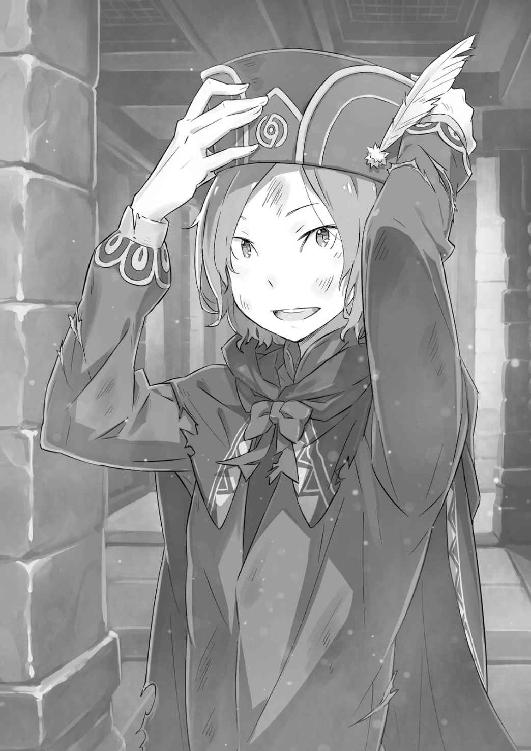
「──友人を助けようとするってのは、そんなにおかしなことですかね？」
──一瞬、何を言われたのかわからなくて、スバルの中の時間が止まった。
時間が動き出すまでに数秒、遅れに遅れて再起動。
しかし、動き出してからも混乱はやまない。言葉の意味が吞み込めない。今、オットーはいったい、スバルにどんな魔法をかけたのか。
──ユージン？ ユージンってなんだ？ そんな人、これまでにいたっけ？
「な、なんでそんな驚き顔で固まってんですか、この人」
「いや、突然俺の知らない人が出てきて......ユージンさんってのは、ええっと？」
「頭から尻まで結論が間違ってますよ！ ユージンじゃなくて友人！ 友達！」
「トモダチ......友達!? 誰と誰が!?」
「僕と！ ナツキさんが!!」
地団太を踏んで、オットーが自分とスバルを交互に指差す。
だが、その行動にスバルはなおも目を丸くしたままだ。そんなスバルの反応に、オットーは「ああもう！」と痺れを切らしたように頭を搔き毟り、
「確かに！ 僕がここにきたのは利害の一致がありますよ！ 辺境伯と会わせていただくためだったり、その取引きはエミリア様救出に僕が協力したからだったり、そもそも僕が魔女教に捕まったのをナツキさんたちが助けてくれたからだったり！」
「────」
「でも、そんな面倒を取っ払ったら、僕はナツキさんをただの友人だと思ってますよ。普段の扱いには思うところもありますが、それも友人の距離感だってね」
途中から照れ臭くなったのか、頭を搔くオットーはスバルから視線を逸らした。
そしてその話を聞いたスバルは、全くの無反応だった。スバルの沈黙に、オットーは訝しげな顔をする。ややその目に不安があるのは、スバルが彼の言葉に何の反応も見せないからだ。友情の押し売りをした、とでも反省しているのかもしれない。
そんなオットーの瞳で表現される百面相に、スバルの心に湧き上がったのは──、
「──ぷはっ」
「はい？」
「わはははは！ と、友達？ 友達かぁ！ ああ、そっかそっか！ オットー、お前、俺と友達になりたかったのかよ！」
「なぁ──!?」
堪え切れずに噴き出して、スバルは顔を赤くするオットーの肩を乱暴に叩く。それでもなお笑いの衝動は消えず、腹を抱えたままスバルは足をじたばたさせた。
「ぶはは、友達！ ああ、チキショウ！ オットー、てめぇ、この野郎！」
「痛い痛い！ 何すんですか!? ああ、言った僕が大馬鹿でしたよ！ わかってましたって、ナツキさんが笑うことぐらい！ でも、そこまで笑うこたないでしょう！」
「いやいやいや、笑わずにいられるかよ。お前がおかしいんじゃない。......自分の馬鹿さ加減がひどすぎて、呆れちまって笑うしかねぇんだ」
爆笑に込み上げる涙を左手で拭い、スバルは失せない衝動を抱えたまま姿勢を正す。
正面、オットーは友達なんて言ったことを後悔していそうな顔だ。だが、そんな彼の様子にスバルが抱いたのは、感謝と、どうしようもないほどの自嘲だった。
──何がオットーが理解できない。何を信じればいいのかわからない、だ。
スバルを友人だと、それだけを理由に手助けしにきてくれたオットー。彼の存在を前にして、その心根を信じるより先に疑った愚かしさよ。
状況に翻弄されるあまり、周囲の人々の気持ちがわからなくなるあまり、悪意の存在ばかりを信じて善意の存在を忘れる、本当に大馬鹿だ。
ほんの数回、『死』を経て世界をやり直したぐらいで、何を悟った気になれる。
──まだ何も、捨てられるほどに戦いは終わっていない。
「ナツキさん？」
スバルの自嘲と自戒、その意味がわからずにオットーは疑問符を頭に浮かべている。
その彼の反応にスバルは首を振り、どこか晴れやかな気分で息を吸って、
「悪かった。お前は俺の友達だよ、オットー。──助けにきてくれて、ありがとう」
一番最初に言うべきだった感謝を、友達に伝えたのだった。
第四章 『命の価値』
１
スバルが監禁されていたその場所は、集落から離れた森のずっと奥──『クレマルディの迷い森』、その本領が発揮されたような緑深い僻地にあった。
建物を出た瞬間、三日ぶりの外気を肌に浴びて、スバルは深呼吸を繰り返す。
「それにしても、ひでぇ臭いだった。......ホントに、何の臭いだったんだ？」
「さあ。生臭さとも腐臭とも違いましたが、鼻がやられるのに変わりはありません。油とか薬品とか、そっちの類の臭いに感じましたけど......」
「刺激臭って考えると、アンモニアとかその系統か。いや、考察は後回しにしよう」
監禁されていた建物を振り返り、印象深い臭いの話題をなんとか引き剝がす。
建物は白く、年季の入った石造だ。材質や年代は墓所に近いものを感じるが、あちらと比べて保存状態がよく思える。それはおそらく、臭いを含めた環境の影響だ。
「捕まってるときも感じたけど、虫も鼠も全くいなかったからな」
「妙な環境なのは間違いないですよ。僕も加護でナツキさんの居場所を総当たりのつもりで探しましたが、この違和感に気付かなかったら危なかったです」
「違和感？」
「僕の加護が本気なら、虫や鳥の声を節操なしに拾って、この世界に静かな場所なんてそうそうありません。そのそうそうない場所があったら、怪しいと思うのが人情でしょ？」
片目をつむり、ウィンクするオットーにスバルは腕を組んだ。そしてしみじみと、
「うーん、使える男だ。なんでうだつが上がらないのか真面目にわからねぇ」
「褒めるのとけなすのとどっちかにしていただけませんかねえ!?」
「なんでうだつが上がらないの？ 人には言えないすげぇ欠陥があるとか？」
「それでけなす方にすんだ!?」
功績への称賛が足りない、とぼやくオットーに苦笑で応じ、スバルは感嘆する。
オットーの加護──『言霊の加護』は、どんな生き物とでも意思疎通ができるようになるというものだ。彼はそれを駆使して地竜と会話したり、鳥や昆虫にコンタクトを取って安全な道を教わったりすることができる。
「その加護で、俺を探したり、ガーフィールから逃げたりしてたわけだ。やっぱ、お前のそれってメチャクチャ便利だよな」
「いいことばっかりじゃありませんよ。テーブルについてくれるだけで、交渉の結果は僕次第。彼らの機嫌を損ねれば、騙されて道じゃなく崖に案内されますよ」
「自然の生き物怖ぇな！」
持つ者から語られる、持たざる者への戒めだ。それを胸に刻みながら、スバルはひとまず白い建物への興味関心を棚上げにしておく。気になる場所ではあるが、考えていても答えの出る問題ではない。今はそれよりも、考えて答えの出る問題だ。
「例えば、ここからみんなのところに戻って、ガーフィールの企みを暴くとかだな」
「......実は、それはあんまりオススメできない考えなんですよね」
「って、なんで？」
「あー、さっきのお話だと説明不足だったんですが、ナツキさんがいなくなったことって字面以上に大きな影響が出てまして......」
言いづらそうに視線を逸らし、オットーが胸の前で両手の五指を突き合わせる。女々しい仕草に嫌な予感が搔き立てられ、スバルは「やだ、怖い」と前置きして、
「怖いけど、話せ。俺がいなくなって、本当はどんな感じだって？」
「いえ、事実と説明に違いはありませんよ？ ただ、実情は説明よりも過激というか、もうちょっと厳しい状況っていうか......」
「はっきり！」
「エミリア様が追い詰められてるのと、避難した村の方々の不安が頂点なので、ここでナツキさんが監禁されてたなんて聞いたら大爆発かなぁって！」
降参とばかりに両手を上げ、ヤケクソ気味にオットーが実状を暴露した。
その暴露内容にスバルはぱくぱくと口を開閉し、
「そんなに、ギリギリなのか？」
「......ナツキさんはもう少し、自分がどれだけ周りの精神的支柱になってるのか自覚した方がいいですよ。詳しくはわかりませんが、エミリア様は契約精霊と音信不通、村の人たちもナツキさんに救われたのは二度目だそうじゃないですか」
「それは、まぁ、そうだが......」
「イマイチ、頼りない返事ですねえ」
やれやれなんて肩をすくめるオットーだが、スバルは簡単に頷けない。
エミリアの不安はわかる。パックがいない今、彼女の絶対的な味方はスバルだけだ。とはいえ、『試練』を抜きにすれば、エミリアがそうまで揺れる理由はなかったはず。
アーラム村の人々も、魔獣騒動と魔女教問題の解決がある。感謝されて悪い気はしないが、やはり過剰だ。スバルは何度も、彼らの死を見過ごした。過大評価も甚だしい。
ただし、どちらも事実であれば、状況は非常に厄介と言える。
「俺が見つかったら『聖域』は大爆発......じゃあ、お前はホントになんで俺のこと探してたの？ 見つけても、何の解決にもならないじゃん」
「そりゃ、見つけなきゃ死んでたでしょ？ それが理由じゃいけませんか」
「────」
「痛い痛い痛い！ なんだ!? なんで無言で叩くの!? やめてくれます!?」
パーではなくグーでオットーの肩を殴り、込み上げた感情はうっちゃっておいた。
とにかく、ガーフィールの陰謀暴露作戦は見送りだ。スバルも『聖域』との関係悪化は望んでいない。無論、泣き寝入りするつもりなどないが。
「ここで事実を明かすのは得策じゃない、か。仕方ない、プランＢでいこう」
「なんです？ ぷらんびーって」
「あ？ ねぇよ、そんなもん。言ってる間に思いつけばよかったんだけどな」
そもそも、脱出直前まで死ぬことばかり考えていた身だ。何の因果か諦めから引っ張り上げられても、まだまだ考える頭は回っていない。
「けど、俺と違ってお前にはちゃんとプランがあると見た。さすがに、友達を助けるなんてだけで、後先考えずに突っ走るほど頭空っぽじゃないだろ？」
「うわ！ うーわ！ 急に言ってくれやがりますよ、まったく！ そりゃ、なんにも考えないでくるなんてこと、ありませんけどね？」
期待されれば応えたくなる、オットーもスバルと同じその口だ。
彼は悪い笑みを浮かべ、ほんのりと声を潜めると、
「ナツキさんの存在は、ガーフィールにとっても悩みの種です。使い道もないのに生かしておいたのがその証拠......だから、その悩みを種ごと引き取りましょう」
「つまり、どうする？」
「ナツキさんを結界の外に逃がします。結界があれば、ガーフィール含めて中の住人はそれを追えない。結界が解けて、条件が整ったときには火種は水浸しってね」
結界があり、『聖域』が解放されない状態だから、中で起きる暴発が致命傷になる。
オットーの提案はシンプルだ。その爆発を避けるために、火種であるスバルを外へ出してしまう。そして、人質である村人の解放交渉はそう難しくはない。
「問題は、それがやれるのか、だ。『言うは易く、行うは難し』って言うだろ」
「その引用っぽい発言、ガーフィールみたいですね。ともあれ、その件に関しては心配ご無用と言いましょう。すでに、心強い協力者がいます」
「協力者？」
「ええ。おかげで、逃げながらでも中の情報を知ることができました。他の生き物から話を聞いても、複雑な人間関係や情勢の変化まではさすがに、ね」
加護もそこまで万能ではない、というよりは生き物の価値観の違いの話か。
しかし、協力者の存在には少し驚かされた。『聖域』も一枚岩ではないらしい。火薬庫と化した『聖域』で、火種が派手に跳ね回るのに遠慮願いたい気持ちはわかるが。
「ただ、脱出か」
「はい、それが一番かと。エミリア様に直接、無事を伝えたいのはわかりますが......」
「その気持ちはもちろん......なんだけどな」
オットーのプランに反論はない。彼の懸念した、エミリアへの配慮も我慢はできる。しかし、このまま逃げ出すことに躊躇いがあるのは、それらとはまた別の話だ。
「とにかく、協力者と合流したい。逃げ出すにしても、チャンスはエミリアが『試練』に挑んでる間......つまり、この時間しかない。そのつもりなんだろ？」
「本当に、ナツキさんは稀に話が早い。協力者とは森の外で待ち合わせてます。ひとまずそこに向かいましょう。はぐれないでくださいよ」
スバルの判断を肯定し、オットーが森に向かって耳を澄ませた。『言霊の加護』の力を発動し、周囲の生き物の言葉に耳を傾けているのだろう。
「────」
時折、オットーの口から人間が発してはいけない類の音が漏れる。話すときは相手の周波数に合わせる加護らしい。蝙蝠とは超音波で話すのか、かなり気になる。
そのオットーの交渉を待って、協力者との合流に動き出す。闇深い森を、価値観の異なる虫や小動物の言葉を頼りに抜けるのは、思った以上に気力を消耗した。
「まさか、人の通れない巣穴やらに案内されるとは......」
「相手は人じゃありませんからね。でも、その苦労もそろそろ終わりますよ」
疲れたスバルの吐息に、髪の毛を葉っぱ塗れにしたオットーが答える。前向きな彼の言葉に顔を上げれば、正面にうっすらとかがり火──集落の存在が見えた。
かがり火がある以上、墓所ではエミリアの『試練』が行われている。本当ならそちらへ駆け出し、彼女の傍についていてやりたいが──、
「......それはできない、か。お前の言ってた協力者ってのは？」
「待ち合わせ場所はここですよ。時間厳守、すでに到着しているかと......」
「──トロトロとやっていたわね。待ちくたびれて老婆になるかと思ったわ」
「──ぇ」
突然、会話に割り込む声があってスバルは息を吞んだ。
草を踏み分け、人が近付いてくる気配。そちらに顔を向けると、ちょうど茂みを搔き分けて現れた桃髪の少女が、短いスカートの裾を払っていた。そして──、
「もっとも、老いてもラムは可愛いけれどね」
そう言って、ラムはいつもの調子でスバルたちに向かって鼻を鳴らした。
２
協力者との合流場所に到着すれば、姿を現したのは誰であろうラムであった。
その事実に動転し、硬直するスバルにラムが薄紅の瞳を細める。その剣吞な視線に唾を吞み込み、スバルは傍らのオットーに素早く目配せした。
「......オットー、いちにのさんで散り散りに逃げるぞ。お前は大声を上げて追手を引きつける係。俺は無言で静かにスネークする係。異論は？」
「異論の塊ですけど!? っていうか、なんでそんな警戒態勢に......」
「馬鹿、つけられたんだよ。あのラムの目を見ろ。俺たち二人を殺す気だ。間違いない。屋敷でいつも、俺がヘマしたときにあんな目ぇしてる。俺を信じろ」
「信じろって、普段から殺意を込めて見られてる人間の何を!?」
小声で逃げる算段を組み立てるスバルだが、オットーの反応が鈍くてとろい。ラム相手にそれは致命的な勘の悪さだ。残念だが、オットーは死んだ。
「そして、俺は死んだお前の遺志を胸に、この『聖域』の解放を成し遂げる......！」
「遊びはそのぐらいにして、話を進めてくれる？ 時間の無駄、つまり人生の無駄よ」
「その無駄扱いされてる流れで、どうも僕が死んでるっぽいんですが！」
すげないラムにオットーが食い下がるが、その態度への返礼は恐ろしく冷たい眼光だった。視線に切り裂かれ、オットーはあえなく轟沈する。
そんな一方的な応酬を見届け、スバルは「ともあれ」と言葉を継いで、
「絶体絶命なのに焦ってないオットーを見るに......お前が、あいつの協力者なのか？」
「協力者、だと対等に聞こえるわね。使役者よ」
「すげぇオットーが使い魔っぽくなった」
使い魔当人はその扱いに不満げだが、異論がないので肯定したと判断。呼び方はどうあれ、ラムがオットーに手を貸していたことは事実らしい。
つまり彼女もまた、『聖域』の暴発を望まず、スバルを外へ逃がす意思の持ち主──。
「ラムとオットーが手を組んでるってのも、なかなか想像できない事態だな」
「そうかもしれないわね。でも、事実を事実として受け入れなさい」
「それはそれでありだけど、俺は別の見方もできると思うぜ。そっちの方が自然だ」
「────」
「お前が俺を逃がそうとするのは、ロズワールの指示か？」
あえて切り込むスバルの問いに、沈黙したラムの表情は凍えている。
彼女が自主的にスバルに協力する、それはなかなか胸の熱くなる展開だが、そんなご都合主義が働かないことは身を以て承知だ。ラムの行動の根本には、ロズワールへの忠誠がある。故に、彼女の行動の裏には必ずロズワールの思惑があると考えるべきだ。
「────」
「否定はしない、か。それをオットーが知ってたかまではわからねぇけど」
「僕は、ナツキさんとの取引きがあります。その頭を飛び越えたりしませんよ」
「となると、声をかけたのはラムの方からか。それもロズワールの指示なら、他にも何か言われてるんじゃないか？ あいつは、どんな考えで動いてる？」
「......バルスのくせに、ずいぶんと血の巡りの速いことね」
オットーの自己弁護を受け、確信を深めるスバルにラムが嘆息する。そのため息にはほんのりと、疲れと焦りが含まれていたように思えた。
「らしくない態度だな」
「それはラムの台詞よ。どことも知れないところに監禁されていたわりに、落ち着き払っているのが不思議......というより、不気味でならないわ」
「不気味言うなよ、傷付く。それと、落ち着いて見えるのは大笑いしたあとだからだ」
遺憾ながら、直前のオットーとのやり取りで気力を取り戻した。空元気も元気の内なら、今のスバルは間違いなく元気だ。そしてこの元気が続く間に──、
「さっきの質問の答えが欲しい。それ次第で、どうするのか決める」
「どうするか？ ここは逃げ一択でしょう？ はっきり言って、ナツキさんが誰に見つかっても見つからなくても、もう状況は最悪なんですよ？」
「お前の言い分はわかる。助けにきてくれたのもすげぇありがたく思ってる。でも、このまま殴られっ放しで終わると、ズルズル負けが込んでっちまうんだよ」
オットーの、逃げに徹するべきという意見は最初から変わらない。しかし、それでジリ貧になることをスバルは知っている。打開には、賭けに出るしかない。
そしてその賭けの相手になるディーラーは、目の前にいるラムなのだとも。
そのスバルの覚悟の眼差しに、ラムは切れ長な瞳をそっと伏せる。そして──、
「......ええ、その通りよ。バルスの手助けはロズワール様の指示。そのためにオットーに目を付けたのは、ラム自身の判断だけど」
「お前のお眼鏡に適った、ってことか」
「うまく使う人間がいないと無駄死にすると思っただけよ」
「くっ......否定できねぇ！」
「否定しろよ!!」
オットーは怒鳴るが、背景事情を鑑みればラムの推測が正しい。ラムの協力なしに、ガーフの要求を突っぱねたオットーに生き残る道が見えない。
その場合、スバルは監禁が長引いて廃人ルートだろうか。
「ラムの偉大さが身に沁みてわかってきたようね」
「納得とはまた別次元の話だけどな。......それと、聞きたいことが増えた。お前が従ったロズワールの指示ってのは、俺を外に逃がせって指示だったのか？」
「......手助けしろ、という指示よ。でも、現状の『聖域』でなら、バルスを外へ逃がすのが最善策なのはわかるでしょう？」
「確かに、そうだな。──俺を、どうやって逃がす手筈だったんだ？」
暴発寸前の火薬庫から、火種をどう持ち出すつもりだったのか。スバルの問いかけにラムは己の肘を抱くと、「簡単よ」と前置きし、
「エミリア様が『試練』に挑む間、ガーフは墓所を離れられない。あれの目が外れている今、バルスを地竜に乗せて、結界を越えるだけでいい」
「シンプルだな。もっと、俺の偽物を用意するとかしなくていいのか？」
「こういうのは単純な方がいいのよ。ぐずぐずしないで」
さっさと背を向け、ラムはスバルを逃がす方向へ先導しようとする。その指示に従い、早々に『聖域』を離脱するのが正答──事が、『聖域』の問題だけなら。
だが、そうではない。だから、別の正解に辿り着かなければ──。
「──ラム、計画変更だ。逃げるのは後回しにする」
「ナツキさん!? 何言い出すんですか!?」
「逃げないとは言わねぇ。けど、ガーフィールが墓所にいるって状況は、何も逃げるってだけのチャンスじゃない。別のことを邪魔されないチャンスでもある」
悲鳴を上げるオットーに、スバルは力強く指を突き付けた。その仕草にオットーが押し黙ると、代わりに振り返るラムがスバルを見る。
「それは、何をするつもり？」
感情の見えない瞳で、冷然とした声音がスバルの発言の意図を問うてきた。
その眼差しに深く息を吐くと、スバルは口の端を歪めて答える。
「──三日前に邪魔されたことの続きを、これからやりにいくんだよ」
３
「──ロズワール、今度こそ、隠し事抜きで話してもらうぞ」
開口一番、そう言い放ったスバルに、ロズワールは左右色違いの双眸を細めた。
リューズ宅の寝室、負傷した体を寝台に横たえるロズワールは、突然の珍客に驚いた素振りもない。まるで、スバルがくるのがわかっていたかのように。
実際、彼はそのスバルの感触を肯定するように深々と頷くと、
「三日ぶりの再会、奇跡の生還、なのにやけに剣吞な雰囲気じゃーぁないかね」
「茶化すな。今の俺は悪ふざけに付き合ってやれる余裕がねぇんだ。相手が重傷だろうと関係ない。実力行使も辞さない覚悟だ」
「なるほど。三日も苦しい思いをすればそうもなるか。いやいやいーぃや、私からねぎらいの言葉をかけても嫌味なだけだろうね。さっそく、本題に入ろうか」
余裕なく嚙みつくスバルの様子に、ロズワールは笑みを浮かべて首を横に振る。それから、スバルの背後の閉じた扉に目を向け、
「通したのはラムだね？ あの子には、君を助けるよう指示してあったんだが」
「ああ。だから、ここにもすんなり入れてくれたよ。逃げたいって言えば逃がしてくれたんだろうけど、その選択肢は俺が先送りにした」
「──へえ」
返答に、ロズワールが片目を閉じた。残る黄色の視線、スバルは軽く唇を湿らせる。
──『聖域』からの逃亡を後回しにし、ロズワールとの話し合いに臨む。
無論、オットーには猛反対を受けたが、危険なだけだと主張する彼をなんとか宥め、スバルはラムに頼んでこの場を設けてもらった。『聖域』の住人の目に触れないよう、細心の注意を払ってここへ──ロズワールとの、話し合いの場を作るために。
「聞くぜ、ロズワール。三日遅れだが、気が変わって誓約はなしなんて言うなよ？」
「厳密には、立てた誓約はあの晩だけ有効なつもりだーぁけど......ま、いいでしょ。私は精霊術師ってわけじゃない。揚げ足取りは趣味じゃないからねーぇ」
本来、話し合いするはずだったあの晩、ロズワールは噓を語らない誓約を立てていた。都合の悪いことに沈黙しても、語る言葉は真実のみであるという誓いを。
それを有効活用する。皮肉にも、前回のロズワールに言われた通りに、だ。
「『聖域』の状況はわかってる。俺が居残るのが危険なことも。だから、ここを出るのは大前提として、屋敷のことで聞きたいことがあるんだ」
「ふむ、屋敷のことで、か。私にわかることならいーぃんだけどね」
「むしろ、お前にしか答えられないことのはずだよ。──俺が聞きたいのは、ベアトリスのことだ。あいつはなんで屋敷に......いや」
そこで自ら言葉を切り、スバルは質問を中断する。この聞き方ではダメだ。
ロズワールにはすでに一度、同じような質問をはぐらかされている。これもまた、ロズワールの助言に従うようで癪だが、『上手く』質問しなければならない。
前回と決定的に違う、誤魔化しの利かない情報を加えての質問を──。
「......聞き方を、変える。あいつは、ベアトリスは......魔女教徒、なのか？」
言葉を選び、息継ぎをしながら、動悸を堪えて、スバルはその問いを差し出した。
前回との決定的な違い、それはベアトリスが魔書を持っていたことを知っていること。すなわち、彼女が魔女教の関係者ではないかと疑いを持っていることだ。
「────」
スバルの疑問を静かに受け取り、ロズワールはしばし考え込む。
その沈黙が嫌に長く感じられて、スバルの心はますます逸った。
やがて、彼は焦れるスバルの前で吐息をつくと、
「何故、ベアトリスが魔女教徒ではないかなどと思ったのかな？」
「......俺が、あいつの部屋で見たからだ」
「見た、とは？」
「だから！ あいつが......本を！ 『福音』を、持ってたから......！」
はっきりと、言いたくないところまで言わされて、スバルの声に怒りが混じった。どこか悲痛なその叫びこそが、スバルがロズワールに問い質したかった疑問だ。
『福音』を胸に抱き、記述に従ったと叫んで、スバルを拒絶したベアトリス。
彼女が本当に、『福音』に従う狂信者で、屋敷の惨劇を仕組んだのだとしたら──、
「──そのとき、あいつは俺たちの、俺の敵になる」
ベアトリスを、敵と見なす。排除すべき、障害なのだと。
「強い言葉だね。実に、覚悟のいる言葉だ」
そのスバルの宣言に、ロズワールは重く頷いた。そして、目を閉じる。
「......それは、そんなに苦しそうな顔で言っても説得力に欠ける言葉だよ」
「──っ」
「君が、あの子と敵対しなければならないなんて酷な話だ。君たちのじゃれ合いを微笑ましく見ていた私にとっても、ね。だから、救いの手を差し伸べたい」
「救いの、手？ お前が俺に？ ......世界最高レベルに胡散臭ぇな」
心中を暴かれた気分になり、スバルは頰を引きつらせながら声を絞り出す。その強がりを見抜いたのだろう。ロズワールは悪態には何も言わず、ただ指を立てて、
「君が見た本は、確かに魔女教徒の持つ『福音』に近しいものだ。そのことで、君がベアトリスを疑いたくなるのも無理はない。でも、保証しよう」
「保証......？」
「あの子は、魔女教徒ではないよ。ありもしない愛を求めて、自ら進んで大瀑布へ落ちてゆくような連中とは無縁だ。本の性質こそ、似通ったものなのは事実だがね」
「──っ！ 魔女教じゃ、ない......！ 本当だな!?」
目を見開いて、スバルはロズワールの答えに飛びついた。
それは、この周回で初めてレベルの朗報だ。ロズワールの証言である点に一抹の不安こそあるが、そこは噓をつかない誓約がカバーする。
「ベアトリスは、魔女教じゃない......それなら......」
それならば、相容れないと諦める必要はない。あの少女を、諦めずに──、
「ま、待て！ ぬか喜びにしたくない。問題は所属だけじゃないんだ。あいつが魔女教じゃないってんなら、あの本は？ なんで『福音』を持ってた？」
「あの場所が、あらゆる魔書を集めた禁書庫だから......というのは、さすがに理屈になってないね。なので端的に答えると......その本は『福音』じゃないんだよ」
「違う......？ でも、あいつは確かに、あれは福音書だって言ってたぞ？」
「正式な名前がないからだよ。だから、あの子は劣化品の名前で呼んでいるのさ」
今も耳に残るベアトリスの拒絶。その忘れ難い叫びに拘るスバルをロズワールは否定する。訳知り顔の彼は、スバルに「いいかい？」と言葉を継ぎ、
「君がどこまで詳しいかわからないが、魔女教徒の持つ『福音』は不完全なものだ。記述の回数は限定、内容も曖昧、解釈の仕方は如何様にも。そんな不親切な書が、所有者の運命を定める道しるべ？ なんとも、強引じゃないか」
「......お前こそ、馬鹿に詳しいな。俺はただ、未来予知する教典って聞いてたが」
「魔女教徒はどこにでも湧く。特に、私は魔女に縁ある『聖域』の管理者だ。彼らと小競り合いになったことも一度や二度じゃない。消し炭にした遺骸の中、書の形跡を見つけることもあった。ただし、内容は所有者にしか読み取れないから眉唾だがね」
「それは、俺も記憶にあるな......」
スバルも一冊だけ『福音』を所有しているが、その内容は理解できなかった。
まるで異国の筆記体でも眺めたように、脳に文字情報として伝わってこないのだ。見たページそのものを思い出そうとしても、今も頭に片鱗すら浮かばない。
「認識阻害ローブの効果に近い気がするな......つまり、ありふれたとまでいかなくても、あの手の本は珍しくない。だから、ベアトリスが持ってて不思議じゃないって？」
「──いいや、ベアトリスが持つ本は完成品だ。この世にたった二冊しか現存しない、本当の未来を記す魔書、『叡智の書』に最も近いものだよ」
目をつむるロズワールが口にしたのは、スバルの知らない書の名前だ。
そして、それがベアトリスの持つ本であると明かされた直後──空気が急激に冷え込んでいく感覚を味わい、スバルは思わず身を硬くした。
原因は、正面で俯くロズワールだ。その鬼気にスバルは息を吞む。
「ロズ、ワール......？」
「すまない。少しだけ、思い出し笑いしてしまったようだ」
「......い、まのが思い出し笑いって、うっかりお前に昔話せがむ気なくすな」
「面白くもない昔語りはまたの機会に。今は時間も限られているはずだしね」
ふっと、気を緩めるような微笑に張り詰めた空気が霧散する。
雰囲気の弛緩にスバルも体の力が抜けたが、只ならぬ態度に覚えた怖気は消えない。しかし、その消えない怖気を奥歯で嚙み殺し、スバルは意識を無理に立て直した。
こうする間にも、『試練』の終わりは近付く。ガーフィールが、戻ってくる。
その前に話し終えねばと、使命感を燃やし、スバルは改めて彼に向き直った。
「今の、『叡智の書』ってのについて詳しく聞きたいけど、概要はどうでもいい。必要なのは、それを持ってるベアトリスをどう説き伏せたらいいかだ」
「君が泣きついて、頼み込んだら聞いてくれるんじゃないかな？」
「だから茶化すな！ 笑い話じゃねぇんだよ。俺は本気で聞いてるんだ」
「私も、そこまで悪ふざけした答えでもないと思ってるんだけどね......」
頑ななベアトリスの攻略は、屋敷で起きる災厄を突破する上で絶対に欠かせない。連れて逃げる選択肢が消えたとしても、彼女の協力があれば格段に有利になる。
レムやペトラ、非戦闘員を禁書庫に匿い、アーラム村に飛ばすこともできるのだ。
「それにあの子なら、フレデリカが敵対しても難なく退けられるだろうからね」
「......フレデリカが敵だなんて、別に疑っちゃいねぇよ」
「おや、君も輝石の件で彼女を疑っていたはずだが、ころっと意見を変えたのかな？」
「......ああ、そう、だったな」
「頼りない返事だね？ もし不安なら、ラムを連れていくといい。断らないはずだよ」
フレデリカの疑いが晴れたのは、あくまで屋敷に戻った記憶のあるスバルだけだ。
ロズワールからすれば、スバルが屋敷に戻ることに抱く不安はフレデリカの叛意と、書を持つベアトリスの二つが重なった形に思えるだろう。
故に、ラムの同行を提案されるのは自然な流れだ。すでに、それは試して失敗したあとであるという点を除けば──。
「──『ロズワールは、質問をしろと言っていた』」
「......あ？」
考え込むスバルは、その唐突な発言にぽかんと口を開けた。寝台に横たわり、上体を起こした姿勢のまま、ロズワールはスバルを見上げ、繰り返す。
「『ロズワールは、質問をしろと言っていた』だよ。なおも君に不安があるなら、屋敷に戻ってこの言葉を告げるといい。ベアトリスが聞けば、反応があるはずだ」
「それって......」
目を瞬かせる。重ねられた言葉、それにスバルは聞き覚えがあった。
このループの初回、屋敷に戻ろうと『聖域』を出発する前、関係の悪くなったロズワールからの伝言として、ラムに教わった言葉がそれだった。
『死』の衝撃に失念し、二度目となる前回も思い出すことのなかった言葉だが──。
「......なるほど。君にはこの言葉では足りないと見える」
「ま、待て。足りない、ってのは......いや、それ以前に、これは......」
「では、続けよう。あるいは、こう言った方が確実かな？」
混乱するスバルを余所に、ロズワールはいっそ微笑すら浮かべる。そうして彼はいつものように片目を閉じて、その黄色い瞳でスバルを射抜くと、言った。
「──自分が、『その人』だと言えばいい」
「その、人......？」
「ベアトリスに質問をさせて、君はそれを肯定しなさい。そうすれば、あの子は必ず君の味方になってくれる。惜しみなく、力を貸してくれるはずだよ」
言い切りには、強い確信が込められていた。その確信に、スバルはロズワールの瞳を見返すが、静謐な黄色の輝きには何の思惑も見通せない。
ただ、それが事実なのだと、そう言い聞かせる言霊の力だけがあって。
「それは、なんだ？ どうして、そんな風に言い切れる？」
「それがあの子の、ベアトリスにとっての、覆し得ない契約だからだよ」
「──契約」
鼓膜を震わせたその単語に、スバルは燻っていた怒りが再燃するのを感じる。
契約、誓約、盟約、約束──それらのことが、いったいどれだけの心を縛るのか。
「あいつが屋敷に......禁書庫にいるのは、契約だって話だったな。それはお前とあいつの間で、どんな契約を交わして......」
「勘違いしているよ、スバルくん。私とベアトリスは、何の契約も交わしていない」
「......なに？」
怒りに震えるスバルの問いを、ロズワールは首を横に振って否定した。そして呆然となるスバルに、ロズワールは己の胸に巻かれた包帯に触れて、
「重ねて言おう。私とベアトリスとの間に、契約関係は存在しない。あの子が当家にいるのは利害の一致......禁書庫を守る契約は、彼女と別の人物との間のものさ」
「別の奴......!? じゃあ、そいつはいったい誰なんだよ！」
「それは、ベアトリス当人の問題だ。私に聞くべきじゃない。彼女から聞くべきだ」
激昂するスバルと裏腹に、ロズワールの返事は徐々に熱を失っていく。彼の態度と返答に、スバルは「クソ！」と強く床を蹴りつけた。
「またそれか！ あいつはお前に聞け、お前はあいつに聞け！ たらい回しにするのもいい加減にしろ！ 俺は、答えが知りたいんだよ！」
「その答えに至る鍵は渡した。あとは君が鍵穴に差し込み、回すだけのことだよ。箱の中を......いいや、書庫の中を横から覗こうなんて無粋はさせやしないさ」
言外に、ロズワールは自分の意見は曲げないと主張している。
その強固な姿勢に奥歯を嚙み、スバルは無理やり憤懣を腹の底に押し込めた。
「......昨日までの調子なら、そろそろエミリア様が墓所を出てくる頃だ。成否はともかくとして、ね。君はどうするのかーぁな？」
ここまで意識して封印していたのか、道化口調のロズワールが白々しく言った。
腹立たしいが、指摘は正しい。時間はギリギリ、屋敷が襲われるリミットまで残りは半日だ。パトラッシュを全力で走らせても、これ以上は留まれない。
襲撃者である二つの災厄に対抗する戦力は、屋敷に残るフレデリカと、これから帰参するスバルとオットー、そこにラムの同行を加えて──、
「......ベアトリスが、さっきの話に乗るってのは本当だな？」
「誓約を立てた。噓をつくことはない。少なくとも、私はそう信じている」
「ダメだったら、お前の横っ面をぶん殴る。なんと言われても絶対に。覚えておくぞ」
スバルの一方的な約束に、ロズワールは珍しく目を丸くした。当然、失敗したときはスバルの命もない。次の周回では失われる約束だ。
だが、スバルは覚えている。それを今、ここで宣言しておく。
「わかった。好きにしたまえ。君がベアトリスと結べれば、きっと『聖域』を取り巻く問題にも大きな力になる」
「去り際に意味深なことを言うな。どうせ、喋るつもりもねぇくせに」
「これぐらいはいいじゃーぁないの。──どうやら、私では及ばないらしいからね」
視線を外し、ロズワールが微かに声の調子を落として囁く。言葉の後半が聞き取りづらく、「なんだ？」と聞き返したスバルに、彼は肩をすくめた。
「独り言だよ。ほら、心残りは後回しにしなさい。君の遅刻で何かしくじっても、私をぶん殴るって約束は守ってあげないよ？」
「......ロズワール、最後に一個だけ、聞いておく」
「──聞こうか」
冗談めかした態度に乗らず、スバルは姿勢を正してロズワールを見据える。その鋭い眼差しを受け、ロズワールも色違いの双眸にスバルの姿を映した。
互いの瞳に互いを映し、スバルはこの夜、最後となる問いを差し出す。
「お前は、俺たちの敵ってわけじゃないよな。ロズワール」
「────」
一拍、問いの返答に間を置いて、ロズワールは答えた。
「もちろん。──君たちは、私の味方だよ」
４
密談を終えて、スバルは『聖域』の外れにある合流地点を目指していた。
そこで、脱出の準備を済ませたオットーとラムが、パトラッシュを連れてスバルの合流を待つ手筈になっている。時にこそこそと、時に大胆に、スバルは道を急いだ。
「はぁ......クソ、横っ腹が痛ぇ......っ」
ただし、急ぐスバルの足取りは健脚とは言い難い。
原因は三日の監禁。食事も環境も悪く、衰弱した肉体は思いの外衰えている。だが、泣き言は後回しだ。屋敷に戻れば、もっとキツイ状況が待ち構えている。
「仮に、ロズワールの言う通りでも......」
ベアトリスがスバルの呼びかけに応えてくれたとしても、本当に彼女がエルザたちに対抗できるかは未知数だ。いずれにせよ、屋敷に帰りついたところでスバルの役目が終わるわけではない。むしろ、そこでようやく戦いになるのだ。
「────」
右の手首を見れば、固く結ばれたハンカチがある。監禁中も肌身離さずあったハンカチは黒ずみ、ほつれと血痕が目立っていた。それでも、これを返す約束は汚れていない。力が湧いてくる。まだ、その約束の効果が力を貸してくれる。
「......あれだけ」
契約や誓約に苦手意識がありながら、スバル自身も約束を拠り所にしている。
ロズワールの話によれば、ベアトリスも契約に縛られているのだ。人ではなく、精霊である少女にとって、きっとスバル以上に長く重い意味を持つ、契約に──。
「なんなんだ、契約って......俺は」
脳裏を過るのは、これまでに耳にした数々の約束事。
エミリアとパックの契約、ベアトリスを禁書庫と結び付ける契約、ロズワールが今宵立てた誓約、ルグニカ王国と龍が交わした盟約、スバルとペトラの約束──。
そして、スバルがレムに、レムがスバルにかけた、呪いのような──、
「──ナツキさん！」
横合いから投げられる声に、がむしゃらに走っていたスバルは立ち止まった。
息を切らして振り向けば、こっちに手を振るオットーと、佇むラムの姿がある。どうやら、考えるのに夢中で合流地点を通り過ぎるところだったらしい。
汗を拭いつつそちらへ向かえば、二人の奥に荷を背負ったパトラッシュもいる。すでに準備は整っているらしいと、スバルは長く息を吐いた。
「どうしたんです。やっときたと思いきや、そのまま走り抜けるから焦りましたよ」
「......わ、悪ぃ。考え事してたら、つい、な」
「バルスがオットー相手に悪ふざけしない？ これは重症ね」
「判断基準に物申したいんですが！」
合流したスバルを、二人はいつもの調子で出迎える。が、余裕のないスバルはそれに合わせられず、二人は訝しげに眉を寄せた。
「ロズワール様とは話せたはずよ。なのに、どうして顔を曇らせているの？」
「その、ロズワールと話せばみんな元気になるはずってお前基準やめない？」
「でも、かなりいただけない顔ですよ。危険覚悟で辺境伯にお会いしにいったんです。収穫なし、なんてのはやめてくださいよ？」
「収穫は、かなりあった。あったけど......」
掘り返していいものだったのか、と今さらながらに思わされた収穫でもある。
無論、手詰まりを打開する可能性は開けた。対抗策を得られたことで、スバルはこの周回、何もできずに諦めるなんてことをしないで済む。
屋敷の災厄を防ぎ切り、レムやペトラを救い出す。ベアトリスとの関係改善を図ることだってできる。それなのに──、
「......なんで、こんなに胸がムカムカしやがるんだ」
ベアトリスを味方につけ、フレデリカを救えれば『聖域』の問題にも対処できる。彼女に指示した黒幕を暴けば、残る問題は『試練』に打ち勝つことだけでいい。
そしてその『試練』は、エミリアがダメでもスバルが代わりに成し遂げればいい。
「筋道は立ってる。だってのに、俺はどうして......」
「お悩みのところすみませんが、時間の問題があります。これ以上は待てませんよ」
容赦なく、スバルの逡巡をオットーが断ち切りにくる。非情な判断だが、彼の言葉は正しい。スバルの躊躇いはここで解決する問題ではない。
全ては『聖域』を抜け、屋敷に帰りついて初めて成り立つ設問だ。
「竜車を持ち出せば目立ちすぎます。パトラッシュちゃんに、僕とナツキさんとで相乗りになりますが、構いませんか？」
「お前も、ここに残るとやべぇからな。異論は......あ、待て」
パトラッシュを手招きし、相乗りする構えのオットーに待ったをかける。そこでスバルが背後に振り返ると、そこにいたラムは「なに」と目を細めた。
「『聖域』を出たら、俺らの行く先はひとまず屋敷になる。フレデリカのことは放置しておけないからな。だけど、俺とオットーだけだと......」
「いかにも戦力不足ね。──つまり、ラムにきてほしいと？」
「ロズワールに話はしてある。お前がきてくれると......その、心強い」
ベアトリスの説得ができて、フレデリカが力を貸してくれて、そこにラムが加わってくれれば、この周回で用意できる最高戦力であるとスバルにも思える。
その最善を描くスバルの要請に、ラムは少しだけ考え込んで、すぐ吐息した。
「仕方ないわね」
「いいのか？」
「バルスを手助けするよう、ロズワール様に命じられているもの」
思った以上にあっさりと受け入れられ、逆にスバルの方が戸惑ってしまった。が、ラムは腕を組み、「だけど」と言葉を継いで、
「一緒にいくのはいいけど、どうやって？ 地竜は一頭、ラムたちは三人よ」
「......あ」
「バルスとオットーが人間的に半人前でも、質量的には一人ずついる。さすがに、一頭の地竜に三人で乗るのは厳しいわ」
「半人前のくだりいりました!?」
オットーの嘆きは余所に、スバルはラムのもっともな意見に頭を抱えた。
移動手段は考慮の外だった。パトラッシュであれば、体重の軽いラム一人を追加しても悠々と走ってくれそうだが、その場合の乗り方は──、
「安全性を考えれば、俺とオットーの間にラムをサンドイッチ......か？」
「ちなみに、どっちかが乗らずに走る選択肢もあるわよ」
「その場合、疲労と体力面から見て、オットーに決まったようなもんだな......」
絵面がものすごく悲惨なことになる選択だ。当然、オットーは猛反対──その声が聞かれない。それがあまりに不自然で、スバルとラムは胡乱げに彼を見る。
二人の視線を受けるオットーは、頰を硬くして明後日の方向を睨みつけていた。
その視線を辿れば、そこには集落を照らすかがり火があり──、
「──仲良く散歩の相談ッかよ。せっかくだ。俺様も混ぜッちゃァくれねェか？」
赤く揺れる炎を挟んで、橙色に染まった人影が歩み出る。
──鋭い牙を嚙み鳴らし、猛々しい鬼気を放ちながら笑みを浮かべる人影が。
「────」
途端、パトラッシュが低く唸り、人影への怒りを露わにする。臨戦態勢に入る気高い地竜の姿に、人影はますます楽しげに笑みを深めて、
「ハッ！ あれだけやられッて怯まねェ。いい女だぜ、その地竜はよォ。『光れば光るほどに、マグリッツァは遠ざかる』ってヤツだなァ」
「ガーフィール......」
絞り出し、スバルは現れた人影──ガーフィールの姿に身震いする。
何故、この場にいるのか。そんな当たり前の疑問は、心胆の震えに搔き消される。
監禁の直接的な原因になった相手だ。彼の姿に暗闇の三日間が思い出され、恐怖もまた蘇る。肩に触れ、奥歯を嚙みしめ、その怖気を押し隠し、顔を上げた。
「......今は、代表の仕事中だろ。こんなとこで油売ってていいのかよ」
「俺様ァ、この『聖域』を守る立場にあんだ。それがッ脅かされたとあっちゃァ、本分を果たして当然ッだろォが。てめェは、『聖域』の目から逃げ切れなかったんだよ」
「『聖域』の、目......？」
「筒抜けだったってだけの話だ。で、てめェはこれッからどこにいくんだ、オイ」
鼻面に皺を寄せ、ガーフィールはスバルの動向を問う。その質問に、スバルは正直に答えるべきか躊躇った。だが──、
「──バルスはこれから、『聖域』の外へ逃がすわ。中にいられて迷惑なのはガーフにとっても同じ、むしろ好都合でしょう？」
「......ラム」
「言っておくけど、これはガーフの手落ちよ。それをわざわざ代わりに処理してあげようって話なんだから、感謝してほしいぐらいね」
胸を張り、ラムはいっそ挑発的にガーフィールに方針を伝える。一瞬、その姿勢に危うさを覚えたが、スバルはそれで正解だろうと口を噤んだ。
ラムの言い分は正しい。スバルの存在が、『聖域』にとって今や爆弾でしかないのはガーフィールにもわかっているはずだ。起爆させず、外に出すのが得策だと。
故に、ガーフィールは苛立たしげに自分の頭を搔き毟ると、
「こっちの腹ァお見通しってわけッかよ。可愛くねェ女だ。そこがいいんだが」
「......ってことは、俺たちを見逃すってことだと思っていいのか？」
嘆息と共に吐き出された言葉に、スバルは光明を見出して目を見張る。その食いつきにガーフィールは「あァ？」と不機嫌に唸った。
「魔女臭ェだけッじゃなく、面倒臭ェ野郎だ。てめェを置いとくのが不都合ッなのァ、俺様にもわかってんだよ。ただ、『ホーシンのバナン落陽』って言い方もある」
「そう、か。また謎慣用句は通じてねぇが、お前が物分かりいいのは......」
監禁された事実は消えず、あくまで利害の一致だけが合意点だ。だが、ガーフィールの見逃すと取れる発言にスバルは安堵し──それを、前に出た二人に遮られた。
「ど、どうした、二人とも？」
「教養のないバルスにはわからなかったかもしれないわね」
「『ホーシンのバナン落陽』は、伝説の商人ホーシンが、小国バナンを陥落させた逸話になぞらえた格言です。──相手に、徹底攻撃と降伏の二択を迫った際の」
「徹底攻撃と降伏って......まさか！」
警戒を露わにするラムとオットー、二人の発言にスバルが血相を変えると、それを見たガーフィールが腕を組み、首の骨を大きく鳴らした。
そして、翡翠色の瞳を好戦的に輝かせ、鋭い牙を剝き出しにする。
「ガーフ！ 何のつもり？ 馬鹿すぎてラムの話の意味が通じなかったの？」
「てめェの方こそ、口の利き方に気をッ付けろや、ラム。惚れてッことと、ねじ伏せねェこととは一緒じゃァねェんだ。いいから、そいつは元の場所に戻せ」
「ず、ずいぶん俺の監禁に拘るな。命乞いに聞こえるかもだけど、俺は本当に疫病神だ。置いとくだけ損だから、手放すなら無料の今が狙い目だぞ」
「『はした金目当てが破滅する』ってなァ、これもホーシン語録だぜ」
タダより高い物はない的な格言で、ガーフィールはこちらの提案を断固として拒否。その姿勢の頑なさが理解できない。スバルに拘る理由がどこにある。
「てめェみてェな得体の知れねェ野郎、外に出すわけにゃァいかねェ。中で、最強の俺様が手元にッ置くのが一番ッだろォが」
「その判断、ロズワール様のご機嫌を損ねるかもしれないわよ。だって、バルスはロズワール様にとって──」
そこで言葉を切り、ラムが意味ありげにスバルを横目にする。その視線の意味がわからずスバルは困惑するが、ラムはガーフィールへ向き直り、
「使えない使用人だもの。......捨ててもいいわね」
「この状況で姉様はよくもまぁそんなことが言えるな......」
途中までの庇い立てを即座に捨てるラムに、スバルは状況を忘れて脱力する。
しかし、その発言に受けた印象が、スバルとは全く異なるものもいた。
「ロズワールの、機嫌が悪くなるだァ......？」
「────」
瞬間、肌が粟立つ感覚にスバルは全身を緊張させた。見ればラムも、オットーも、その頰を硬くして、眼前、そこに佇むガーフィールを注視する。
「野郎がどれだッけ、ここのことを、ババアたちのことを考えてる？ 考えちゃァいねェよ。あの野郎は、自分のッことばっかだ！ ラム！ てめェのことだって！」
「ガーフ、ロズワール様は......」
「うるせェうるせェうるッせェ！ 野郎のことッなんざ知ったことか！ 最後だ！ そいつを寄越せ！ ふん縛って転がして、てめェらはそれを黙って──」
癇癪を起こし、ガーフィールが聞く耳持たずに怒鳴り散らした。そのまま、猛々しい闘気が膨れ上がり、ガーフィールの肉体が一回り大きくなったように錯覚する。
だが、その瞬間、弾かれたように状況が動く。
「──ラムさん！」
「いきなさい!!」
「おわぁ!?」
切羽詰まった声、それが聞こえたのと同時、スバルの胴に腕が回った。オットーだ。有無を言わせず、彼はスバルを担ぎ上げ、
「パトラッシュ──!?」
猛然と走り出したパトラッシュが、スバルとオットーを掬うように背に乗せる。
予想外の展開に目を剝くスバルを抱え、オットーは無理やり手綱を握りしめ──速度を上げるパトラッシュにしがみつき、夜の集落へ一気に飛び出した。
「てめェ、三下ァ──!!」
「余所見する暇なんてないわよ、ガーフ！」
「──ッィ！ 誓約の、邪魔ァすんじゃァねェェ!!」
轟く怒声、それを塗り潰すように吹き荒れる暴風。
二つが激しく炸裂し、弾ける気配になおもスバルの意識は追いつかない。ただ、すぐ近くで頰を硬くするオットーの胸倉を摑んだ。声を上げる。
「ま、待てよ、オットー！ あんなとこに、ラムを残して、なんで!?」
「あれ以上はあなたが危険だった！ 僕とラムさんの判断です！」
声に怒鳴り返され、スバルは歯を食い縛って背後に目を凝らす。かがり火が蹴倒され、視界は曖昧だ。だが、激しく風の巻く音と、怒声が飛び交っているのは聞こえる。
敵意にぎらつくガーフィールを押さえるのに、戦力を考えればこれが最適解だ。しかしそれは理屈の問題で、感情が納得できるものではない。
「──っ!!」
疑念と混乱に脳が錯綜する傍ら、鋭く甲高い音が耳朶を打った。
音の発生源は直近、具体的には己の指をくわえたオットーだ。高い指笛が夜の『聖域』に響き渡り、二度、三度とそれが繰り返される。
「今の指笛、何の合図だ!?」
「......あまり使いたくなかった手段です。使わずに済むならそれでよかった」
「意味深なこと言うな！ ラムのこともあるのに、これ以上の混乱は......」
パトラッシュとも結託し、逃げる算段を勝手に組み立てていたオットーだ。この期に及んで何を隠していたのかと、声を荒げるスバルはすぐそれに気付いた。
「──ぁ」
後ろではなく正面、地竜の疾走する進路に次々と光が灯っていく。
それはかがり火の赤い光ではなく、結晶灯の白い光だ。迷い森を照らす、道しるべ。
その道しるべとなり、闇の中に光を手にするのは──、
「アーラム、村の......」
「──言ったでしょう。心強い協力者がいるって！」
オットーの言い放った言葉に、スバルは衝撃を受けて胸が詰まった。
協力者、スバルを助けるために手を借りた人間を彼はそう呼んでいた。てっきり、スバルはその協力者とはラムのことを、ラムだけのことを差していると思っていた。
「──スバル様！ どうかご無事で！」
光の横を抜ける瞬間、結晶灯を手にした男が声を上げた。当然、見知った顔だ。大聖堂で家族との再会を望み、エミリアに『試練』の突破を託した村人の一人。
協力者は彼だけではない。集落に、森に、浮かぶ光の数だけ、味方がいる。
「お前、みんなが知ったら、暴発するって......」
「実際、しかけましたよ！ で、あなたには黙ってることにしました！ ナツキさんが逃げるのに、足枷になりたくないとかで！」
「────」
意味がわからない。オットーの叫びは、村人たちの配慮は、意味がわからない。
何のためにそんなことを。足枷、誰が誰の。闇の中に、無数の光が浮かんでいる。
「────ッ」
光の道を作る村人たちの献身に、パトラッシュが敬意を表するように短く嘶く。
迷い森の道を解するパトラッシュも、夜闇に吞まれれば確実ではない。その不確実を潰す白光に従い、地竜の速度はぐんぐんと風を追い越していく。
「こっちです！ この奥へ！ スバル様！」
「オットーさん、スバル様をお願いします！」
「年寄りよりも先に逝こうなんて、やめてくだされよ、スバル様......！」
身も心も、しがみつくのにいっぱいいっぱいのスバルへ向けて声が投げかけられる。どれも必死で、懸命で、その全てにスバルの名を呼ぶ響きがあって。
「なんでみんな、こんな馬鹿な真似を......」
「スバル様が、それを言っても説得力がないでしょうに！」
込み上げる感情が処理できず、嗚咽のようにこぼしたスバルに苦笑がかかった。顔を上げれば、正面に特徴的な大樹──根元に、複数の村人が立っている。
「この先、真っ直ぐ突っ切れば結界だそうです！ そこまで逃げ切れば！」
「みんなは!?」
「追手の足止めを！ なに、スバル様が逃げ切る時間ぐらいはなんとか......」
人影は五人、青年団の若者たちだ。男五人で装備は貧弱、それでも意地と根性でガーフィールを数秒は引きつける。そういう判断だ。
ラムが残ったのも、想い人になら手心を加えるだろうという打算が──、
「────ッッッ!!」
咆哮が森に轟き渡り、次の瞬間にスバルは激しい衝撃波に吞み込まれていた。
５
「──。────。────ぁ」
きん、と耳鳴りがして、スバルはゆっくりと目を開ける。
開けた途端、ぐらりと大きく頭が揺れた。地面に倒れている。なのに、なおも三半規管は世界を見失い、ぐらぐらと波に揺られるように右へ左へ、揺れ続ける。
濛々と、土煙が視界を覆っていた。ごぼり、とひっくり返る胃が何かを逆流させる。飲んだばかりの水と、胃液だ。酸っぱい味、苦い味、袖で拭って、頭を倒して、
「──ぁ」
九十度傾いた世界に、抉れた大地とへし折れた大樹が、そして蹲る影がある。
──金色の体毛に覆われたそれは、スバルの目には一頭の巨大な虎に見えた。
「────」
猛虎は身を低く屈め、翡翠色の瞳で倒れるスバルを見下ろしている。
体長はおおよそ四メートル、スバルの知る虎と比較すれば一回り以上も大きい。四本の足は太くたくましく、閉じた口腔には収まり切らない牙が生え揃っている。
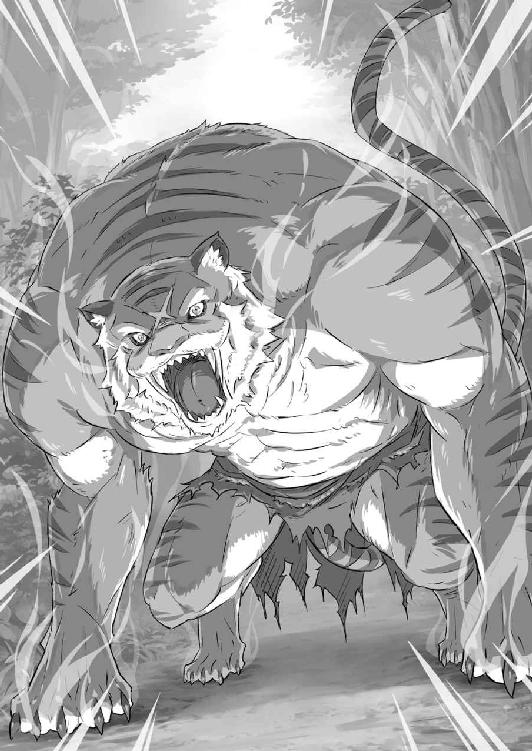
一目で、存在そのものの脅威を視覚的に訴えるビジュアルだ。
「......ぅ」
この衝撃、この状態、極々直近で味わったことがあると思った。前の周回、屋敷での魔獣の襲撃、ペトラを失った、あの惨劇の中で。
「────」
首を必死で巡らせ、スバルは周囲に目を向ける。折れた大樹の根元に、衝撃で吹き飛んだ若者たちが倒れている。すぐ近くにオットーの呻き声、パトラッシュの気配も。
かろうじて、誰も死んでいない。否、死なせなかった。何故なら相手は──、
「がー、ふぃ......る......」
巨軀の下腹部に、特徴的な色の布切れが引っかかっている。それが、ガーフィールの腰巻きの一部だとすぐに気付けた。脳裏に獣化したフレデリカの姿。同時に、彼女とガーフィールとが血縁である事実が繫がる。
──眼前の猛虎は、獣化したガーフィールだ。
数秒でラムを突破し、ガーフィールは猛然とスバルたちを追ってきた。獣化した戦闘力がどれほどのものか、スバルに太刀打ちできないことだけは間違いない。
潮時だ、と思った。これ以上は逃げられない。だが、一つだけ、強く決意する。
「お前の、言う、通りにする......けど、これ以上、誰も......」
傷付けるな。殺すな。──それだけは、宣言する。
獰猛に見える獣化状態でも、意思疎通が可能なのはフレデリカが証明している。その姿を晒した以上、ガーフィールが本気なのもわかる。しかし、スバルも本気だ。
あの闇に引き戻されたとしても、これ以上は誰も傷付いてほしくない。
──『死』と比べてなお、あの闇が怖いなどとほざけるものか、ナツキ・スバル。
「────」
無理に体を起こし、立ち上がる。そのスバルの眼差しを受け、大虎は無言だ。
ただ、じりじりと距離は縮まる。獣の鼻息が感じられる直近で、唾を吞み込んだ。そのまま、ガーフィールの判断を待つ。獣化を解き、元の姿に──、
「──ぇ」
ゆっくりと、世界が緩やかになる。極限状態で脳が覚醒、理解を越えて働いた。
その緩慢な世界で、猛虎がその前足を振り上げ、鋭い鉤爪を放つのが見えた。とっさに体を動かそうとするも、脳の覚醒は意識だけ、肉体には効力を及ぼさない。
生半な刃物より鋭い爪が、スバルの胴体を致命的に薙ぐ──、
「──この、大馬鹿野郎！」
横殴りの高い声、それと同時の衝撃にスバルは突き飛ばされていた。
眼前、朱が散った。世界の遅滞はいまだ継続中、夜の黒に血の赤が混ざり、苦鳴をこぼして倒れる人影。スバルを庇い、倒れる人影。倒れる、オットー・スーウェン。
爪に胸と腹を抉られ、噴出した血がスバルの頰に跳ねた。
「な......」
傷、鮮血、庇った、大虎、降伏、暗闇、スバルを、ガーフィール、鉤爪が、オットーを、『死に戻り』、ペトラ、獣化して、要求を、何故、何故、何故なぜなぜ──。
「がぁふぃぃぃるぅぅぅ──!!」
爆発する腹の中の感情のままに吠え、スバルは猛虎の凶行に目を血走らせた。
激情に脳が煮え立ち、憤激に体内の血がガソリンに変わる。全身に巡るそれを怒りの炎に放り込み、連鎖する爆熱が思考も感情も命をも焼き尽くした。
叫ぶ、吠える、声にならない声を。今、怒りと憎しみだけがあった。焼き尽くせ。目の前の化け物を。怒りと憎しみが力になるなら、バラバラに引き裂いてしまえ。
「────ッッ!!」
だが、声に運命を覆す力などない。
スバルの絶叫はそれ以上の獣の咆哮に塗り潰され、逆に殺されそうになる。事実、声と共に猛虎は腕を振り上げ、オットーを襲った一撃と同じ一撃を叩きつけてくる。
頭蓋を貫かれ、胸骨を剝がされ、内臓ごと命を抉られて、ぐしゃぐしゃに死ぬ。
「────」
目をつぶった。来る『死』を目前に、次なる世界での応報をスバルは誓う。必ず、復讐する。怒りの炎は絶えない。お前を、嚙み砕いてやる。
魂に憎悪を刻み込み、スバルはその瞬間を待った。それなのに、くるはずの終わりが訪れない。『死』がタイミングを外してくる。何故だ。目を開け、大虎を睨みつける。
腕を振り上げたまま、猛虎はその場に変わらずいた。ただ、一点だけ違うのは、獣の翡翠色の瞳がスバルではなく、横を向いていることだ。
視線を辿った。その視線の先から何かが飛んできて、猛虎の頭に当たる。地面に軽い音を立てて転がったのは、何の変哲もない石ころだ。
石ころを投げたのは、額から血を流し、よろよろと立ち上がった、村の若者だった。
「スバル、様から......離れろ。この、化け物め......」
声を絞り出し、痛みに呻きながら、若者は己の意思を強く示した。
勝てるはずのない猛獣に、拙く弱い、儚い抵抗がある。彼だけではない。他の若者も立ち上がり、足下に落ちた石を、枝を拾い、武器とする。
「ぉ、い......」
何を、やっているのかと、彼らの無謀を止めようとしたのか。
どこを向いているのかと、猛虎に怨嗟をぶつけようとしたのか。
わからない。──しかし、その後の結果は、子どもでも想像がつくほど単純だ。
「────」
猛獣が爪を振るい、鮮血が噴く。続けざまに二度、三度と繰り返される。
聞き苦しい断末魔、肉が鋭く抉られる水音、スバルの喉が潰れるほどの絶叫──。
何故だ。何故だ。何故だ何故だ何故だ、何故。
「なんでだぁぁぁ──っ!!」
目の前の獣にしがみつく。分厚い毛皮に嚙みつく。振りほどかれる。前歯が、今の衝撃に持っていかれた。思考が過熱する。歯と血を吐き捨て、飛びかかる。横合いから尾が叩きつけられ、軽々と吹っ飛び、地面に大の字になった。
寝ている場合ではない。立て、立って、死ぬなら誰より先にお前が死ね。
「待って、くれ......死ぬのは、俺だけで......みんなは......っ」
殺すのならば、誰より先にスバルを殺せばいい。
元々、ガーフィールの狙いはスバルだったはずだ。勇敢で、心優しい彼らが命を奪われる理由などない。断じて、どこにもない。どこにもないのに──、
「──う、あ？」
食い縛り、血を吐くスバルの体が持ち上がる。
すぐ傍ら、血に塗れた黒い鱗がある。パトラッシュだ。おびただしい量の血を流すその姿は、猛虎の初撃からスバルを庇った証拠だった。傷は深く、半死半生。それでもパトラッシュは屋敷のときと同じように、死に瀕しながらスバルを守る。
「もう、いい......もういいよ。もういいんだよ、パトラッシュ......」
やめてくれと懇願する。縋りつくスバルに、慈悲深い地竜はその願いを拒絶した。
スバルを口にくわえ、パトラッシュの黄色い瞳に強い意思が宿る。瀕死とは思えぬ底力が二足に漲り、再び、地竜は猛然と走り出した。
スバルを守ろうと、必死の戦いを続ける彼らを置いて、戦場を離脱する。
「────」
置いていくな、みんなを、と叫ぼうとした。
無理やり振り返る瞬間、はるか向こうで最後の一人が飛び散る。轟然と、翡翠色の双眸が闇に揺らめいて、逃げるスバルと地竜を追ってくる。速すぎる。
距離が縮まる。逃げても意味がない。何故、パトラッシュは逃げるのか。
「──ぁ」
顎に力を込めて、首を思い切りにひねり、パトラッシュがスバルを投げた。正面へと、少しでも脅威から遠ざかれとばかりに、彼女の献身が込められていた。
そして、宙を舞いながらスバルは気付く。懐で何かが、光が、瞬くのを。
「────」
輝石だ。フレデリカの、輝石。懐に入れていた石が、青く輝く。
瞬間、理解した。パトラッシュは無策でスバルを抱えて走ったのではない。彼女は結界までスバルを送り届けた。猛虎の牙が、ガーフィールの脅威が、届かぬ位置へ。
「ぱとらっしゅ」
回転する視界に彼女を探して、名前を呼んだ。奇跡のように、視線が交わった。
黄色い、爬虫類の細い瞳孔に、ありえない慈悲の光が見えて。
「────」
追い縋る猛虎の爪が、漆黒の地竜を横殴りにし、パトラッシュが真っ二つになる。
断末魔の声すら上げず、忠竜は最後までスバルに尽くして絶命した。
「────」
それも同じだ。屋敷と全く同じ結末、友は死に、愛竜は死に、脳と血液が沸騰する。
地面を転がった。光は瞬く。結界を越えたのか。知ったことか。パトラッシュを殺した猛獣が、害獣が、眼前に迫る。結界を乗り越え、殺意のままに飛びかかってくる。
「────」
激突する。
瞬間、光が膨れ上がり、ナツキ・スバルを青く染めた。
──転移が起きた。
６
意識が戻ったとき、スバルが最初に感じたのはおぞましい刺激臭だった。
「────」
一度嗅げば忘れ難い、鼻を突く悪臭だ。
薬品のそれに近い臭いに顔をしかめ、冷たい床で上体を起こす。咳き込み、体中が痛みに軋んだ。なおも咳き込み、ゆっくりと、壁に手を当てて立ち上がる。
手首に、乾いた血と吐瀉物で汚れたハンカチがある。時間の経過と、『死に戻り』に至っていないことが確認できた。死んでいない。世界は、惨劇の続きだ。
──脳裏に、猛獣の爪に次々と倒れる人々と、愛竜の最期が浮かび上がった。
「......う、く」
生き残った。何の因果か、生き残って、しまった。
今すぐ、死んでしまいたい悔悟に胸がつかえる。しかし、スバルは舌を嚙み切る衝動を堪えて、壁に体重を預けながらのろのろと歩き出した。
悪臭が、この場所がどこなのかスバルにわかりやすく突き付ける。
記憶を辿り、足を引きずり、未練を引きずり、スバルは出口へと向かっていく。
監禁されていた建物だ。何故、ここに飛ばされたのかはわからない。だが、原因が輝石にあること、結界に触れたことにあるのは直感的にわかる。
「──っ」
懐に入れた輝石を摑み、投げ捨てた。軽い音を立て、石は遠くに転がっていく。もう、あんな石に何の価値もない。この世界に、何の価値もない。
──ここは、終わる世界だ。ここは、終わらなければならない世界だ。
「────」
『死』を自分に与える前に、スバルはこの世界がどう終わるのかを見届けにいく。
見届けて、飲み下して、糧にしなくてはならない。
それが死ぬべきときに死に損なった、ナツキ・スバルの責務なのだから。
正面に建物の出口が近付いてくる。指の感覚がなくなるほど、触れた白い壁が冷たい。外から差し込む光に目を細めた。意識のない間に夜が終わり、朝がきている。
ここにいることに、ガーフィールは気付かなかったのか。怠惰な野郎だ、とスバルは白い息を吐いて、外に踏み出し──、
「──あ？」
──一面の銀世界に、予想を超えた衝撃を味わった。
７
理解が、絶望が、幾重にも幾重にも塗り替えられる。
──スバルの魂に焼き付く、地獄を描いた絵画があった。
その絵画を書き換えるために奔走せんと、スバルは死力を尽くしてきたつもりだ。事実、二度の『死』を経て、絵画に絵筆を届かせることはできたはずだった。
絵筆が触れた瞬間、絵画の内容が別の地獄に塗り替えられるとも知らずに。
「──はっ、はぁ」
銀世界に息は白く曇り、雪を踏むスバルは喘ぐように膝に手をついた。
すでに数時間、建物を出てから当てもなく歩き続けている。昨夜、スバルが無事に集落へ戻れたのは、オットーの加護による道案内があったおかげだ。
それがない今、ここは『クレマルディの迷い森』の最奥──降りしきる雪に景色は一変し、手助けを申し出る存在は何一ついてくれない。
「く、そ......っ」
体力を消耗し、雪景色の低温に体の温もりは奪われる。少しでも体温低下を防ごうと、スバルは額の汗をペトラのハンカチで拭いた。再び、歩き始める。
「ペトラとの、約束も......」
日は昇った。屋敷に訪れる惨劇も、もはや防ぐ術などない。
何もできなかった。ペトラも、フレデリカも助からない。レムも、きっと。ベアトリスは魔書を抱えたまま、オットーは死に、パトラッシュも死に、ラムはどうなったか。ガーフィール、ロズワール、何を考えて。エミリアは──、
「だけど、俺は......」
全てを取り戻す。全てをやり直す。全てに正しい道を歩ませる、責任がある。
スバルにしかできないことだ。スバルがやらなければならないことだ。
そのために失われる全てを、スバルだけは思い続けなくてはならない。
そのために払われる犠牲は、スバルの中に残り続けなければならない。
そのために費やせる対価は、スバルのみが払い続けなくてはならない。
払おう、対価を。積み上げよう、犠牲を。そして取り戻そう、全てを。
「────」
やるべき責務に火を灯した瞬間、スバルの眼前で森が開けた。
永遠に続くかと思われた景色が終わり、雪に埋もれる集落が飛び込んでくる。
驚きは、ない。とうに覚悟は済んでいた。ここでいきなり大虎が視界を塞ごうと、憎悪だけを焼き付けて笑って死ねる。心は、とっくに凍りついていた。
しかし、覚悟と裏腹に猛獣は現れない。否、それどころか──、
「誰も、いない......？」
倒れたかがり火は雪に消され、『聖域』には人のいる気配が全く感じられなかった。
人の少ない集落、そんな説明は通らない。これは、無人の野の在り方だ。
現に、白銀の積雪には足跡一つついていない。人が、歩いた形跡がないのだ。
「雪が、降って......誰も、いなくて......」
顔に手を当て、頰に爪を立てながら、スバルは自分の正気を疑い始める。
『聖域』は静寂が満ちていた。人の気配も、虫の鳴き声もない。時折、風が葉々を揺らす音だけが、鼓膜に微かな変化を報せる。何も、聞こえない、世界に──。
「──ぁ？」
無音の世界、銀色に染まる地獄、そこに変化があって、呆気に取られた。
最初、スバルはそれが風に転がる、白い毛糸玉か何かかと錯覚した。
しかし、それが毛糸玉でないことはすぐにわかる。それはスバルの足下に転がり、そこで小刻みに震え出した。そして目を見張るスバルに、二本の長耳を立てたのだ。
長い耳、白く柔らかな毛並み。短い手足と、赤い二つの眼。それは首を傾げ、忙しなく口を動かしながら、きぃと高い声で鳴いた。
「う、さぎ......？」
それは、スバルの目には兎に、それもあまりにも小さい兎に見えた。
兎は握り拳ほどで、鼠のような小動物と大差ないサイズだ。特徴的な長耳は兎にしては短く、丸々とした尾も合わせ、あらゆるパーツがこぢんまり纏まっている。
虫も、動物も、地竜も、人も、何もかもが雪に消えた『聖域』に突如現れた兎。
「どうして、ここに兎が......兎で、いいのか？」
無尽蔵に謎が生まれ、スバルは情報による脳の圧迫に嘔吐感すら覚える。足下、この兎が『聖域』に何があったのか知る手掛かりになるのか。
そんな縋るような思いで、兎に手を伸ばし──、
次の瞬間、スバルの左手の手首から先が根こそぎもぎ取られていた。
「......ぁえ？」
荒く雑な切り口から血が噴き出し、赤黒い血管が垂れ下がる。白く細かに糸を引くのは筋繊維か神経か。いずれにせよ、人体の破壊される光景はひどくグロテスクだ。
失われた左手に、そんな現実逃避がきっかり二秒──別次元の激痛に脳が破かれる。
「が、ぁ!? うおあぁ！ あああ、がぎがぁぁぁ──ッ!!」
世界が白熱する。
痛みに意識が支配されて『痛い』まともに現実『痛い』を認識する術が喪失する『痛い』何故こんな『痛い』苦しみを『痛い』味わわなくてはならないのか『痛い』原因はどこから『痛い』何があって『痛い』どうし『痛い』『痛い』痛い痛い痛い──。
悶えに悶えて、血の溢れる左手首を地面に押し付ける。無意識に雪に齧りつき、スバルは意味不明に泥と氷を咀嚼していた。土を味わい、氷を嚙み砕き、何が起きたのかを求めて視界が回る。足下、白い毛糸玉──毛並みに赤い斑点が散り、口を動かしている。
もごもごと、動く小さな口から、スバルの指が見えていた。理解した。喰われた。
喰われたのだ。
「ご、がぁぁぁああ──!!」
理解したくない理解に、自覚したくない痛みに、精神が発狂へ誘われる。
心がガラス細工のようにひび割れ、粉々に砕かれて砂粒のような残骸へと変わる。
「ぎ、いひぎぃぃぃッ!!」
なのに、砕けた心が、痛みに覚醒させられた。
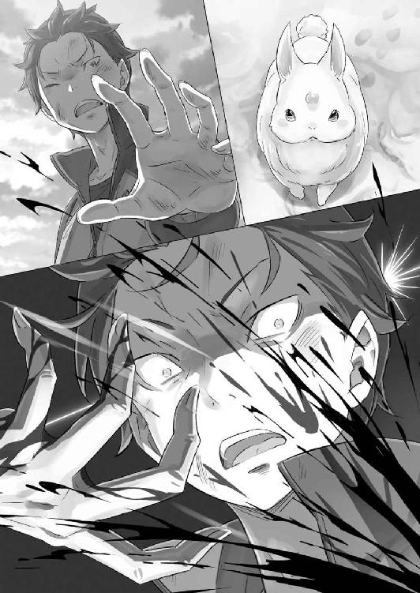
ふくらはぎに焼け付く感覚。鑢で容赦なく肉と骨をこそがれる刺激に白目を剝く。赤黒い泡が喉の奥で溢れ、陸に上がった魚のように痙攣した。気絶しない。できない。痛みが強すぎる。痛みが痛すぎる。残酷な痛みが、意識を無理やり覚醒させる。
きぃきぃと、無数の鳴き声を鼓膜が捉えた。
それは高い鳴き声、数は膨大、数える気にもならない気配に取り囲まれる。すでに眼球は役割を放棄し、周りを見ることを諦めていた。おかげで、救われた。
機能していたのが耳だけでよかった。この光景に、耐えられるはずがない。
「────」
全身に牙が喰らいつく。その食い込む牙の感触が、群がられていると理解させた。
絶叫。仰向けに転がり、空に向かって声を張り上げる。途端、毛むくじゃらの何かが開いた口に入り込み、舌が食い千切られた。喉を蹂躙され、食道から胃にかけての道のりが内側から食い荒らされる。咀嚼される。
肛門から侵入した牙が、口から入ったそれと体内でぶつかる。競い合うように右へ左へ臓器を食い散らかし、ナツキ・スバルをミンチにしていく。
生きながらに、生き物に咀嚼され、肉の破片にされていく実感がある。
恐怖などない。痛みももはや感じない。意識が、どこにあるのかわからない。
喰われている。喰われていく。左目が喰われた。耳ももうない。臓器など根こそぎにされ、今、顔の皮が剝がされる。頭蓋に穴が開き、脳髄に牙が突き立てられ──、
──。
────。
────────。
──────────────────────────ぁー。
８
肉体が、再構成される。
食い千切られた頰肉が、剝がされた顔の皮が、嚙み砕かれた頭蓋が、咀嚼された神経が、舐め啜られた血液が、極悪な食欲に蹂躙された魂が──元の形を取り戻す。
「──ぁ」
指先に血が通い、スバルは全身を痙攣させて激しく跳ねた。
冷たく硬い地面、呻くスバルは泡を噴き、眼球を四方へぐるぐるとうねらせる。
痛み、ない。喪失感、ない。四肢は胴体と繫がり、胴には生命を維持するのに必要な臓器が全てある。肉体は取り戻された。だが、喰い散らかされた精神はどうなる。
『喰われた』記憶を持ったまま、誰が正気の世界に立ち返れるのだ。
「ぶ、ぶ、ぶ......っ」
発作でも起こしたように、スバルは地面に頭を叩きつける。硬い衝撃が跳ね返り、頭蓋の中で脳が揺れる。一瞬、咀嚼の残滓が安らぐ。それを求め、繰り返す。
──何故。
現実を認識することを、肉体でも精神でもなく、魂が否定する。
最も重要な意思決定機関が再起動を拒絶し、ナツキ・スバルは戻ってこられない。
ただ、魂が求めているのは、『何故』と繰り返される言葉への答えだった。
何が起きたのか。何があったのか。どうしてああなったのか。どうしてああなるしかなかったのか。今の自分はどうなった。どうなる。どうすればいい。
──何故、何故、何故、何故、何故。
答えの出ない、問題文すら曖昧な命題を前にして、魂がひたすらに慟哭する。
──何故！ 何故！ 何故!!
現実に溺れ、悪夢に苛まれ、生きる道を見失い、『何故』とひたすらに問いかける。
それこそが──、
『──再び、君は資格を得た』
小刻みに震えるスバルに、その声は耳元で囁くように聞こえた。
『招こう。──魔女の茶会へ』
次の瞬間、舞い戻ったばかりのナツキ・スバルの魂が、現実から再び切り離された。
第五章 『魔女たちの茶会』
１
青々とした草原の小高い丘に、春を思わせる涼やかな風が吹いていた。
風はスバルの前髪と、背の高い緑の草を爽やかに揺らし、入道雲の踊る青空の彼方へと駆け抜けていく。
「────」
風にくすぐられた額に指で触れ、スバルは日差しの眩さに目を細めた。それから、ゆっくりと視線を空から下ろし、正面に向き直る。
いつの間にか、スバルは白い椅子に座らされていた。
安楽椅子のような大きな椅子と、目の前には純白の小さなテーブルがある。そのテーブルを挟んだ対面に、同じく椅子に腰掛け、長い足を組んだ人影があった。
長い髪と、露出の少ない肌は白く、それ以外の全てに黒を纏った美しい少女──、
「──ってのは正確じゃないな。実際は、四百年以上も成仏しない地縛霊だから」
「再会した途端にホロゥ扱いなんてご挨拶じゃないか。第一、ボクの場合、享年十九歳といったところだから、見た目は君とお似合いの、うら若い乙女のはずだけどね」
「享年十九歳って地味に重い。......死人のことは笑えねぇな。悪い」
「──？ やけに殊勝だね。君らしくない、というにはいささか仲が浅いかな」
膝の上で拳を開閉し、俯くスバルに少女──魔女エキドナは興味深げに目を細めた。テーブルに頰杖を突き、彼女は挑発的な流し目をスバルに送ると、
「茶会に二度、同じ客人を招くことは珍しい。滅多にないことだ。誇ってもいいよ？」
「ホストがゲストに堂々と言うなよ。素直に感謝する気がなくなったらどうする」
「おや？ それなら君は、ボクに素直に感謝してくれるつもりだったのかな？」
「うぐ......」
図星を突かれ、スバルはエキドナの含み笑いから視線を外す。直前の精神状態のことがあり、口が回らずボロが出た。だが、問題はまさにその、『直前の精神状態』だ。
「俺は、墓所で......」
言葉にするのも恐ろしいその先は、『発狂していたはず』だ。
事実、スバルの精神は完全に崩壊していた。今回の『死』はそれほど、スバルの魂に消えない傷を刻み込み、幾度も重ねた『死に戻り』の経験を叩き潰したのだ。
『死』に慣れたなどと口が裂けても言わない。だが、覚悟があればと思ってはいた。
それを、ああもあっさりと覆されて──、
「だってのに、今、俺は平然としてる。気持ち悪いぐらい普通だ」
「それが嫌なのかい？ 平静を失い、取り乱していたいと？ 無様に泣き喚きたい？」
「......そんなことが言いたいんじゃない。わかってるはずだぞ、エキドナ」
「そうだね。今のはボクがイジワルだった。つい、君のことはつつきたくなるんだ」
声に糾弾の気配が混じると、エキドナは降参とでも言いたげに両手を上げた。そして、魔女は掌をひらひらさせながら、「ただね」と首を傾げ、
「君を茶会へ招いたのは、単なるイジワルってわけじゃない。そうしなければ、君の心は砕け散っていた......それは、自覚があるんじゃないかな？」
「だから、素直に礼を言おうとしてたんだろ。それをお前が......」
「なるほど。自分の言動が災いするのは生前から変わらないな。では、ボクは今度こそそれを改め、君の感謝を聞こうじゃないか。──さあ、どんときたまえ」
薄く微笑み、エキドナは胸を張って謝辞を受け入れる体勢になった。その、心持ち誇らしげな顔を見つめて、スバルは長く深く、ため息をつく。
これを素でやっているのだとしたら、さすがは魔女。『魔』性の『女』だ。
「──？ どうしたんだい？ いつでもいいよ？」
「......ここにきた途端、俺の調子が戻ったのは前に飲んだお茶のおかげか？」
「ああ、そうだね。お茶の形で君の魔女因子に働きかけ、安定を促した。その効果は茶会を出入りしても失われていないさ。......ところで、感謝の言葉は？」
「そう、か。少しだけ安心した。これって、外に戻っても続いてると思っていいか？」
「精神状態の話だからね。平静を取り戻せたなら......ここでのことを覚えていれば、夢の外に戻っても心の平穏は保たれるんじゃないかな。ねえ、感謝は？」
他人事のような返答に含まれた一文、そこにスバルは息を詰めた。
ここでのことを覚えていれば、とエキドナは言った。そして事実、それは困難だ。そのことは魔女との二度の接触、それを忘れさせた誓約が証明している。
誓約はスバルにエキドナを忘れさせる。その結果、スバルは自分すら見失うのだ。
「──エキドナ、誓約を書き換える方法はないのか？」
「うん？」
「お前のことを、ここから出ても忘れずに済む方法はないのか？ 誓約でお前を忘れる限り、俺の心はぶっ壊れかねない。そうなんだろ？」
「それは、そうだけど......」
「それに、俺の心だけが問題じゃない。そうじゃなくても、お前を覚えていたい」
「──え」
そうだ。これはスバルの心だけの問題ではない。エキドナの存在を覚えていることは、『聖域』を紐解く上で、地獄を塗り替えるのに必要なピースなのだ。
だから、とスバルはテーブルに手を突くと、息がかかるほど魔女に顔を近付け、
「対価が必要なら、他になんでも払ってやる。その代わり──」
「────」
「お前は、俺の記憶に隠れるな」
「──。は、はい......」
スバルの強い要請に、エキドナはやけにぎこちなく、おどおどと頷いた。
その態度に違和感、だが返事は肯定だ。やった、とスバルは手を打つと、
「言ったな！ 助かる！ やっぱりなしってのはなしだぞ！」
「そんな恥知らずな真似はしないよ。しないけど......君は少し、卑怯だと思うな」
突然、卑怯者扱いされてスバルは首を傾げる。その反応にエキドナはやや不機嫌に顔を背けた。それから、魔女はスバルに対面の席を手で示して、
「とにかく、君の言い分はわかった。ひとまず座りなよ。ゆっくり話そう」
「ああ......って、そんな時間はねぇよ。それより、誓約のことを片付けて......」
「──勘違いしないでほしいな、ナツキ・スバル」
悠長な態度に気が逸り、急かそうとしたスバルをエキドナが呼んだ。言葉が止まる。
その声音に、何故か逆らい難い力があった。
そして、唾を吞み込むスバルに、エキドナ──魔女は続けた。
「誓約の書き換え、それは確かに難しいことじゃない。言い出しにくいことを堂々と言い出す姿勢も嫌いじゃないしね。だけど、立場を弁えない発言はいただけない」
「────」
「あくまで、君は茶会に招かれた招待客だ。そして、ここはボクの支配する夢の城、ボクの領域だ。そこで、あまりワガママを言われてはボクの沽券に関わる」
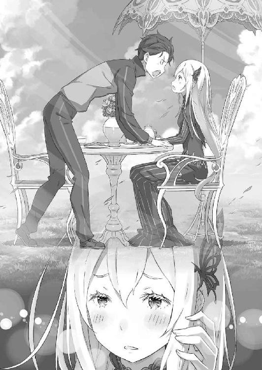
静かに、声の調子に変化はなく、ただ声の力に変化があった。
それまでとは雰囲気を一変させ、どこまでも深い闇色の瞳がスバルを見上げる。
──そこに、常外の存在である『魔女』がいる。
「......ぁ、う」
魂を鷲摑みにされる威圧感が、当初、スバルがエキドナに抱いた印象を思い出させる。それは、白鯨や『怠惰』すらも上回る、圧倒的な脅威への畏怖だ。
『強欲の魔女』エキドナ、それが眼前の白と黒の魔女が持つ名前と肩書きなのだと。
「茶会に招かれた君には、招待客としての礼儀がある。道理だろう？」
精神体にあるまじき冷や汗に塗れるスバルに、魔女は己の白髪を撫でて続けた。喉と舌が乾いていく感覚に呼気を荒げ、スバルはかろうじて返答を絞り出す。
「招待客の、礼儀、ってのは......」
「簡単だよ。ボクがホストで、君がゲスト。──その通りに振る舞うことさ」
威圧感はそのままに、エキドナがゆっくりと手を伸ばす。細くしなやかな魔女の指がテーブルに触れ、三度、その表面を弾くように叩いた。
その指先はテーブルの上の一点──手つかずの、湯気立つカップを示していて。
「......あ？」
「茶会の招待客なら、まずは招待を受けた証を立てるべきだ。そうじゃないかな？」
「......っ！ わかり、づらいんだよ、お前」
「魔女だからね。普通の女の子と同列に並べちゃ、その子らが可哀想だろう？」
してやったり、とほくそ笑むエキドナの態度から圧迫感が霧散する。無礼を働いた意趣返し、それにしてはスバルの受けた精神的苦痛は大きすぎる気がしたが。
「クソ......わかったよ！」
舌打ちし、カップをひったくるように奪うと、中の液体を一気に流し込む。注がれて時間が経っても、それは適温を損なっていない。さすが、魔女の茶会の代物だ。
味もわからないほど勢いよく飲み干し、スバルは乱暴に袖で唇を拭った。
「さあ、飲み干したぞ。これで、俺を茶会の参加者として認めてくれるのか？」
「ボクの体液をそんなに情熱的に飲み干されると......うん、少し照れるな」
「うぉえっ！ 忘れてた──っ!!」
最初の茶会でもあったドナ茶トラップ、その再来にスバルは膝から崩れ落ちる。
その場で懸命にえずくゲストの姿に、ホストの魔女はやれやれと肩をすくめた。それからふと、魔女は思い出したように手を打つと、
「そういえば、感謝の言葉は？ ボクはまだ聞いていない気がするんだけど」
「クソみたいな茶ぁ淹れてくれてありがとうよ！ この魔女が！」
言われた通りにお礼を言ったのに、エキドナは謝辞にいたく不満げだった。
２
茶会の再開は、スバルとエキドナがテーブルを挟んで座り直してから始まる。
前回同様、必死にえずいても吸収されたドナ茶は排出されない。なかったことと割り切り、スバルは嘔吐感を使命感で塗り潰して茶会に臨んだ。
「そこまで拒絶されると、体液を提供したボクの乙女心が傷付くな」
「乙女は体液を提供なんて文言は生涯口にしねぇ。それより、大事な話を続けたい。誓約の件は、約束して......いや、やってくれるんだよな？」
「約束って言葉に忌避感があるのかな？ ともあれ、肯定するよ」
冗談めかしたやり取りが気掛かりだったが、確約が得られてスバルは安堵する。
夢が明けても、エキドナの存在を忘れないこと。
それは魔女の実験場と呼ばれる『聖域』で、きっと答えに至るのに必要な鍵だ。
その点の確認が取れれば、他に魔女に確かめておきたいことは一つ──。
「──エキドナ、お前はどこまで俺の事情を知ってる？」
「知っていることなら、ボクの知っている限りのことを。知りたいことなら、この世の全てを知りたいと思っているね」
「茶化すな。気付いてるはずだ。お前は、ここに俺がいるのはおかしいってことに」
「そんなことはないよ。君は茶会に招かれる条件を満たした。ボクの領域に届く場所で、あれほど何故と渇望した。その望みはボクの強欲に──」
言葉を弄するエキドナに、スバルは再びテーブルに手を突く。
茶会に付き合うのは構わない。だが、茶番に付き合ってやるつもりはないと。
「おかしいんだよ。だってお前にとって、俺とは別れたばっかりのはずだ」
「────」
「俺は、『試練』を......過去を越えて戻った。そのすぐあとに、ここにいるんだぞ」
このループの基点は、第一の『試練』を越えた直後に設定されている。
スバルが戻ったのも、墓所の石室であったはずだ。それは、エキドナと対話を終えた直後でもあり、魔女にとってはあまりに早い再会──。
「頭のいいお前が、それを妙に思わないわけがない。思わないとしたら、それは......」
「......それは？」
続ける言葉に躊躇い、躊躇いの背中をエキドナが押した。息を吸い、吐く。
エキドナが、この再会に疑問を抱かない理由、それは──、
「──それは、お前がこうなった原因を知ってる場合だけだ」
「────」
スバルの追及に、エキドナは薄く微笑んだまま沈黙する。
──その疑惑の根拠になったのは、第一の『試練』の最中、エキドナと仮初の教室で言葉を交わし、あの世界がまやかしに過ぎないと告げられたときのことだ。
過去で、両親に伝えた答えは今も変わらない。それは強く、この胸の奥にある。
故にスバルが気にしたのはそこではなく、あの世界を構築した手段だ。エキドナはスバルの記憶を参照して異世界を構築し、学校の制服まで再現してみせた。
あれが、墓所で永久の眠りにつく『強欲の魔女』の力だったのならば──、
「──お前には、俺の記憶を見る力がある。だから、この状況もおかしいと思わない」
記憶を参照する力があれば、スバルにとってこの再会が、あの教室での別れの直後でないとわかる。あれから数日を過ごし、全てを取りこぼして『死』を迎えたことも。
──ナツキ・スバルが『死に戻り』して、この時間へ舞い戻ったことすらも。
「────」
躊躇いがスバルの言葉を封じた。これ以上は危険だと、心の臓が激しく鼓動を打つ。
──その先を口にすれば、スバルは確実に禁忌に触れることになる。
『死に戻り』を打ち明ける。それは魔女が定めた唯一の、絶対の禁則への違反だ。
これを破れば、スバルは罰として苦痛の限りを味わわされる。
あるいは、魔手はスバルの大切な人を、エミリアの命を奪ったような悲劇を招く。
「は、ぁ......はぁ......っ」
精神体の額を、じっとりと汗が濡らしていく。頰を伝い、顎に渡り、雫が落ちる。
魂の状態を肉体が反映する。よくできた再現だ。それほどに、追い詰められている。
今、スバルの心を追い詰めるのは、禁忌への恐ろしさではなく、『未知』だ。
未知の事態に、スバルの舌は言葉を紡ぐことを拒絶する。何故なら現状は、これまで経験してきた『死に戻り』を取り巻く状況とまるで違っているのだ。
スバルが自ら禁忌を口にすれば、心の臓を摑まれる。
スバルが打ち明けたいと心から願えば、魔手は想い人の命を奪い取った。
ならば、『死に戻り』を全く別の角度から見抜かれ、それを告げた場合は、どうなる。
それはあまりにも未知の、想像もつかない事態で──、
「試してみるといい」
「──っ!?」
禁忌と未知に怯えるスバルに、エキドナは気軽にそう言い放った。
その気軽さに呆気に取られ、次いでスバルは憤慨する。エキドナはわかっていない。それを試すことで、どれだけの不利益が、何が起きるかもわからないことを。
だが、そんなスバルの怒りに、エキドナは首を横に振ると、
「結果を望むために臨む、それは尊い行いだ。だからこそ、欲する価値がある」
スバルの逡巡、その被害が自分に及ぶとも知らずに──否、そうではない。
魔女は、エキドナは、スバルの躊躇いの理由を見抜いている。
その危険が、スバルだけでなく自分に及ぶ可能性を知っている。知っていてなお、魔女はやれと言った。言えるのは、口にした信念が不動のものだからだ。
知識欲の権化『強欲の魔女』は、結果の見えない行動にその命さえも懸けられると。
「後悔、する暇もないかもしれないんだぜ......？」
「そうなったときは、君がボクの亡骸の前で泣き崩れてくれることに期待しようか」
ギリギリまで躊躇い続けるスバルに、エキドナはあくまで気楽な調子で応じる。
その姿勢すらも、スバルの決断に余計な私情を入れさせないための配慮だ。
それはスバルに対する思いやりというより、この決断によって生じる結果──そこに不純物を入れないための、魔女の誠意だ。そこに期待も、願いもない。
純然たる結果を求める姿勢に、魔女の在り方を見た。それに、背中を押される。
自分に何の疑いも抱かない生き方に、自分の器を笑い飛ばされた気がして──。
「エキドナ。俺は、『死に戻り』をして──」
禁忌の言葉を、口にする。
以前にも何度も、口にしてきた言葉、お決まりの文言、禁則を踏み破る。
魔犬の囮になるために、白鯨を引き寄せるために、魔女教徒を騙るために、幾度も。
そのたびに言葉は奪われ、世界の時間が静止し──、
「──いる」
固く目をつむったスバルは、訪れる激痛の予感に歯を食い縛っていた。
しかし、その悲壮なまでの覚悟は、果たされない。
「......え？」
目を開けた。世界に変化はない。時間も止まっていない。痛みも、ない。
そして、ならばと正面に佇む魔女に目を向ければ、
「ふむ......」
椅子に座り、長い足を組み替える魔女は整った面貌の眉を微かに顰める。しかし、反応はそれだけだ。魔女の、胸の辺りを凝視しても、変化はない。
「......そんなに、じろじろと見られると恥ずかしいな。ボクは外見はそれなりだと自負しているが、体つきには自信がないんだ。セクメトやミネルヴァと違ってね」
「そんな理由でガン見してたんじゃねぇよ。いや、そんなことより......」
見当外れな態度に、スバルは思考停止のまま応答した。
腕でスバルの視線から胸を隠すエキドナに、禁忌の罰は適用されていない。
その事実に、ゆっくりと思考が動き始め、口に手を当てた。
歯の根が、声が、震える。
「俺は、俺は死んだら時間を遡って、世界をやり直してる。『死に戻り』してるんだ」
「聞いたよ。そして、聞く前に視てもいた。なるほど、非常に稀有な状況......」
「俺は！ 『死に戻り』を！ 『死に戻り』！ 『死に戻り』！ 『死に戻り』!!」
「ちょ、ちょっと!?」
繰り返し、禁忌の言葉を口にするスバルにエキドナが仰天する。
直前の余裕を失い、目を見開く魔女は慌てながらスバルを落ち着かせようとした。
「お、落ち着きなよ。君の気持ちはわかるけど......」
「俺は！ 『死に戻り』してたんだ！ 何度も、何度も、死んで、やり直して！ 俺は！ 『死に戻り』を......！」
「わかったってば！ だから、話を......」
「俺は......！ 『死に戻り』して、何度も、やり直してたんだ......ッ」
「────」
堪え切れず、何度も叫んで、叫ぶスバルの瞳から、ぽろぽろと熱い雫が溢れていた。
頰を伝い、顎に渡り、雫が落ちる。──それは、汗ではない。涙だった。
「俺は......ずっと......ッ！」
何度、これを夢に見た。何度、こう叫べればと苦悩した。何度、願っただろうか。
『死に戻り』は誰にも打ち明けられない。
独りで、抗うしかないのだと、思って──。
「俺はぁ......ッ」
「──わかってる」
打ち明けは嗚咽になり、叫びは半ば喚き散らすだけになっていた。
そのスバルの声に、魔女は静かに頷いた。
嗚咽するスバルの傍らに魔女が立つ。黒髪に指を差し入れるように触れられた。
そして、細く華奢な掌に、柔らかく頭を撫でられる。
「君の、これまでの足跡を知っている。視たからね」
「────」
「だけど、視てきただけだ。だからできるなら、君の口から教えてほしい。君がこれまで何を思い、どう感じて、どれほど抱えてきたのか、それを知りたい」
頭を撫でながら、魔女は「だって」と言葉を継ぐと、続けた。
「──ボクは、この世の全てを知りたいと欲する『強欲の魔女』、エキドナだからね」
３
ぽつりぽつりと、スバルの語る言葉はひどくたどたどしかったはずだ。
しかし、長い時間をかけ、拙いスバルの話に耳を傾ける魔女は、一度たりとも余計な口を挟まなかったし、急かそうともしなかった。
ただ静かに、最後まで話を聞いて、語り終えたスバルが俯くのを確かめてから、
「──ひどいな」
と、声に隠し切れない嫌悪感を滲ませて吐き捨てた。
その言葉に、スバルは一瞬だけ不安になる。これまでのスバルの足跡に、魔女が悪態をついたことに心が怯えた。だが、その反応にエキドナは「いや」と首を横に振り、
「勘違いさせてすまない。今のは、君の話に抱いた感想じゃないよ。ただ、君にそれだけの苦難を歩ませた存在に、堪え難い怒りを覚えただけだ」
「俺に、苦難を歩ませた存在......」
「──『嫉妬の魔女』」
エキドナの囁くような声に、文字通り、スバルの動きが静止する。
体も、呼吸も、拍動さえも停止したように錯覚する中、エキドナは黒瞳を細めた。
「君も、わかっていたはずだ。君の、『死』をやり直す力......いいや、君に『死』という安寧を許さないその力が、『嫉妬』のものに違いないと、とっくの昔に」
「......これまで散々、色んな相手に魔女の話はされたからな。直接、その魔女と俺が会ったことはないけど、事あるごとに現れる『手タレ』がそれだって想像はつくさ」
禁忌に触れた罰を与えに、時間の止まった世界に現れる黒い影の女──。
罰として苦痛を与える一方で、愛おしげに触れてもくる影の存在。最初は片腕だけだったが、今や両腕と胴体の輪郭も見える。徐々に、近付いてきている。
『死に戻り』を重ねるたびに、逢瀬の時が迫っているのは勘付いていた。
「なんで、俺にご執心なのかは全然わからねぇけどな。お前、理由わかったりする？」
「さて、ね。あれの精神性を理解することなんて、ボクだけでなく他の誰であってもできそうもないからね。仮にできたとしても、ボクは願い下げだ」
視線を逸らし、エキドナが辛辣に言った。その態度にスバルは眉を上げる。
「お前、この世の全てが知りたいって発言のわりに、『嫉妬の魔女』に対してだけは当たりが強いよな。いや、自分を殺した相手なんだから当然なのかもだけど......」
超然とした存在であり、人の身では到達できない次元にあるはずのエキドナ。
夢の城と嘯き、死後も魂だけの状態で一つの世界を作り上げる超越者たる魔女が、まるで普通の人間のように他者への好悪に私情を挟んでいる。
そこに人間性を垣間見た気がして、スバルは妙な親近感のようなものを覚えていた。
もっとも、当のエキドナはそんなスバルの感慨に気付かず、ため息をつくと、
「君も相応の恨みを抱いていると思うが、ボクもあれの話は気が滅入る。だから、別の話にしよう。聞きたいことがあれば、何なりと聞いてくれていい」
「別の話、か......」
話題の転換を求められ、スバルは考え込む。正直なところ、拍子抜けしていた。
『死に戻り』を打ち明けられることで、スバルはこれまで自分を取り囲んでいた閉塞感が破られ、息苦しい世界が開けたような解放感に満たされていたのだ。
故に、劇的な変化があるとスバルは期待していた。だが、エキドナは自然と『死に戻り』の原因が『嫉妬の魔女』にあると肯定し、相談にも乗ると胸襟を開いてくれた。
あまりに起伏のない展開に、あれほど泣いたことも噓だったような気がしてくる。
「例えば、そうだね。君に終わらない苦難を強いる権能、『死』をやり直す力を取り除く手段であったりには、興味はないかな？」
「......そんな手段、あっても困る。興味ねぇよ」
言葉に詰まるスバルへの提案、魔女の発言にスバルは躊躇なく首を横に振った。
『死に戻り』の力は、確かにスバルに苦難を強いてきた。それでも──、
「腹は立つけど、俺には『死に戻り』が必要だ。これがなきゃ、手に入らなかった結果がたくさんある。助けられなかった人が、たくさんいる」
「────」
「この力がなきゃ、助けられなくなる人がたくさんいるんだ。だから、必要なんだ」
言葉にして、改めて自覚する。『死に戻り』は、スバルが持てる唯一の武器だ。
それと同時に、聞きたいことが生まれた。ずっと、疑問としてあった考えだ。
「エキドナ、俺のこの『死に戻り』には、回数制限があると思うか？」
「......なるほど。当然、行き着くべき疑問だね」
この世界にきて以来、スバルはすでに十を超える回数の『死』を経験している。
苦痛と喪失感を味わい、『死』によってスバルは世界をやり直してきた。そのたびに抱いていた恐怖こそが、今回が最期かもしれないという当然の感情だ。
「当たり前、だよな......」
本来、一度しかありえないはずの『死』を、すでに何度も覆しているのだ。
死ぬたびに、スバルは目的半ばで潰える絶望感を味わった。──その絶望感を最後に全てがぷっつりと消えるのだとしたら、『死』とはなんと恐ろしいものなのか。
その『死』を冒瀆する力は、スバルにどれだけの猶予をもたらすのか──、
「これは、あくまでボクの推測に過ぎないと前置きしておくよ。君の権能の原理には漠然とした予想しかできない。その曖昧な答えを伝えることを、まずは許してほしい」
「......ああ、聞かせてくれ」
「君の『死に戻り』。特定の条件下で発揮される力だと思うが、その回数に制限は──」
息を吞む。答えを待つ。
こちらを見るエキドナの瞳を真っ向から見据え、スバルはそのほんのささやかな言葉の区切りを永遠の長さのように待ち焦がれた。
それほどに焦がれる結論、そして──、
「──おそらく、ない」
「────」
「君の『死』には終わりがない。何度死のうと、何度果てようと、そのたびに君の魂は時間を遡り、『死』に至った運命を打破するまでやり直すことを求められる。どれほど無惨に殺されようと、心身を打ち砕かれようと、ね」
エキドナの結論、その理解にスバルは一度、頭の中を空白に占有される。そうして広げた空白に結論を押し込み、少しずつ砕いて理解に浸透させていった。
そこまでして、やっと震えるような吐息と共に言葉がこぼれる。
「──そう、か」
「存外、すんなりと受け入れたものだね」
「リアクションが薄くて、お前の好みに合わなかったか？ そりゃ悪かったな」
苦笑、やっとそれができるだけの精神状態が戻ってくる。その苦い笑みのまま、スバルは魔女に肯定された、無制限の『死に戻り』に思いを巡らせる。
それはスバルの想定した中で、最も好ましい結論であった。だが──、
「──厳密には、回数無制限ってわけにいかないはずだ。特定の条件下、ってのは？」
「......業腹だが、君を『死に戻り』させる権能は魔女の妄執だ。彼の魔女の妄執が途絶えれば、君は『死』を拒めなくなる。──その機会が、あるかはわからないが」
「執着されてる理由もわからないのに？ 急に見放されてもおかしくないぜ」
「それが絶対にないことは、君にはなんとなくわかってるんじゃないかい？」
揶揄するような物言いにスバルは言い返せない。実際、それは奇妙な確信だ。
スバルに『死』を許さない魔女は、同じようにスバルを手放すことも許さない。それはスバルの存在の奥底に、根拠のない絶対の確信として楔を穿っていた。
「......これは、何のための力だと思う？ お前は、これをどう思う？」
「君を死なせないための力だ。君に、過ちを許さない力だよ」
「何のために魔女は......『嫉妬の魔女』は、俺にそんな力を寄越したんだ？ お前は、想像するのも嫌かもしれないけど、わからないか？ 俺の、力の意味が」
徐々に早口になり、スバルは胸に居座る奇妙な確信への忌避感に怯えた。
少しずつ、あるいはずっと、余裕を失うスバルの態度にエキドナは眉を寄せて、
「──君が、何を恐れているのかボクにはわからない。何が、そんなに怖い？」
「俺が怖い？ ああ、怖いよ！ 俺が怖いのは！ 俺が、怖がってるのは......」
エキドナの好奇心のメスが、容赦なくスバルの怯える患部を切り開く。切開し、赤い血の代わりに流れ出すのは、胸の奥に詰まるどろどろとした感情だ。
恐怖と、後悔と、不安と、悲嘆と、ひたすらに負の感情ばかりが溢れてくる。
「死んでも、戻れる......それに甘えて、何回死んでもいいやなんて思いたくない。思いたくないけど......それにしか頼れなくなれば、俺はそれに頼る。でも」
『死』に限度はなくとも、徐々に形を成す魔女の影はいずれスバルと相対する。
それに『死に戻り』は万能ではない。取り戻せない事態に取り残されることもある。
取り残されたものは、今も取り戻せずにあるのは──、
「──レムを、取り戻せなかった」
唯一の、スバルの矛である『死に戻り』は、レムの存在を返してくれなかった。
レムが失われたことを知り、眠る彼女の前で喉を突いた衝動をスバルは忘れない。
直後に舞い戻った先が、喉を突く瞬間であったことの絶望も。
「どうして、レムを取り戻せなかった。『死に戻り』が、俺に運命をやり直させる力だっていうんなら、なんで取り返しのつかない場所に......！」
「それが、君の恐怖の理由か。......後悔の源泉であり、欲の根幹でもあるものだね」
爪が食い込むほど拳を握り、奥歯を嚙んだスバルの声にエキドナが目を細めた。
魔女の言葉に顔を上げる。黒瞳と黒瞳が交わり、魔女は言った。
「ボクは、これから君にひどく残酷なことを告げるよ」
そう前置きし、魔女は表情を硬くするスバルに続ける。
「──あれは、君が救えなかったと悔やむ少女のことを運命に考慮していない」
「──っ」
「あれが望むのは、君が運命の袋小路に囚われないことだ。権能はそのための手段であって、君以外の誰かの被害は思惑にない。その力で、誰かを救おうと奔走してきたのは、あくまで君自身だ。君の望みなんだ。あれは......『嫉妬の魔女』は関係ない」
「ぁ......」
「だから、重ねて明言しておこう」
衝撃に打たれるスバルに、しかしエキドナは残酷を語り続ける。
そうすることが、今のスバルには必要なのだと。白と黒の魔女は一度だけ目をつむり、痛みを堪えるような表情で、その黒瞳に今一度スバルを映した。
「この先、どんな障害が立ちはだかろうと、きっと君は無限の挑戦によって運命を打開する。だけど、仮に君が多くの犠牲を許容して運命を変えることがあれば......」
「──その、犠牲になったものを取り戻すチャンスは、巡ってこない」
「......そういうことになるね」
エキドナは断言する。『嫉妬の魔女』が考慮するのは、スバルの運命それだけだと。
スバルが『死』の運命を乗り越えられれば、それ以外の全ては些末事なのだ。
どれほど手詰まりに見えようと、無限の挑戦がスバルに運命を打開させると信じている。
そしていずれ、繰り返すたびに濃くなる影が完成し、再会する時を──、
「──いいぜ。お前がそうやって俺を、俺だけを贔屓するってんなら腹は決まった」
「────」
「お前が俺にくれた、『死に戻り』って恩恵......使い倒してやるよ」
その果てで、魔女の下へ、何一つ取りこぼさずに辿り着く、辿り着いてみせる。
「ああ、決めた。決まった。──俺は、他人の思惑を裏切らせたら天下一品なんだぜ」
推測が確信に変わり、怒りが覚悟と決意に火を灯して、ナツキ・スバルが奮起する。
『死に戻り』がスバル以外を救わないなら、スバルがそれ以外の全てを救うのだ。
魔女が拘泥しないなら、スバルが拘泥する。魔女の愛を、そのために利用してやる。
拘り、拘り、しがみついて離さない。積み上げ、乗り越え、抱え切ってやる。
──それができて初めて、ナツキ・スバルは『嫉妬の魔女』に一矢報いられるのだ。
「......ずいぶんと、簡単に立ち直るものだね。この絶望的な状況に際して、無謀にも」
「簡単に立ち直ったわけじゃねぇよ。これまで通りだったら、今だって折れた心を必死にテープで止めてたかもしれねぇ。だけど......」
今は、独りではないことが大きい。『死に戻り』を、独りで抱えずに済んでいる。
たったそれだけのことで、スバルの心はとんでもなく救われていた。
そして、それが誰のおかげなのかと考えれば──、
「────」
「ん？ どうしたのかな？ だけど、なに？ 続きは？ ねえ、続きは？」
「お前、絶対にわかって言ってるよな......？」
上機嫌に饒舌に、言葉の続きをせがむエキドナにスバルは苛立って舌打ちした。その舌打ちすらも図星を突かれた故だと、魔女には確実に見抜かれている。
打ち明けたこと、聞いてくれたこと、エキドナの存在にひどく救われたこと。
そんなこと、絶対にエキドナに真正面から伝えるつもりなどない。
「とにかく！ お前の意見は参考になった。覚悟の助けにもな。それは礼を言っとく」
「それだけ？ ボクにお礼を言いたいのはそこだけかな？ ねえ、どうなの？」
「うるせぇ！ 黙れ！ それだけだよ！ 次の話にいかせろ！」
しつこい魔女を怒鳴りつけ、スバルは乱暴に自分の椅子に腰を落とす。
そして、ぶーたれる魔女を見上げ、「頼む」と言葉を継いでから、
「知恵を貸してくれ。お前にしか、頼れない」
「都合のいい話だね。こう言ってはなんだが、ボクは茶会のホストとして、もう十分以上に君をもてなした自負がある。これ以上を、君がボクに求めるなら......」
「わかってる。最初に、誓約のときにも言ったはずだ。必要な対価ならなんだって払ってやるって。だから、それも含めて力を貸してくれ」
膝に手を当てて、スバルは深々と頭を下げた。無論、これで足りなければ地面に額を擦り付ける覚悟だってある。プライドなど、この場で何の価値がある。
魔女の思惑を打開するために、魔女の知恵を借りる。──それが、皆を救う最善手。
「────」
頭を下げ、いっそ堂々と他人頼りのスバルを見下ろし、エキドナはしばし沈黙する。
だが、やがてその沈黙に、魔女自身が耐えかねたように嘆息した。
そして──、
「......君は、魔女を口説く才能があるのかもしれないな」
唇を緩めた微笑を浮かべ、魔女は仕方なさそうにそうこぼした。
４
魔女に相談したい内容は尽きない。
が、このとき、スバルが最初に確認したのはそれらとは全く別のことだった。
「俺が、『死に戻り』の直後に茶会に呼ばれたのはわかってる。けど、ここでお前と話してる時間は、外だとどんな風になってるんだ？」
「以前にも話さなかったかな？ ここは夢の城、ボクと君は今、魂だけの存在だ。ここにいる間、外とは時間すらも隔絶されている。全く時間の経過がないとは言わないけど、外への影響は微々たるものだよ。だから逆に、外から起こされることもまずない」
「そう、か。......それなら、エミリアを冷たい床に長時間放置してるって事態は避けられるのか。それは朗報だった」
リスタート地点が変更されない以上、スバルの体は今も石室に転がっている。すぐ傍には『試練』に臨むエミリアがおり、彼女は覚めない悪夢にうなされているはずだ。
この邂逅がその悪夢を長引かせては可哀想だと、そんな心配があった。
「君の、お姫様への微笑ましい配慮はひとまず不要だ。それで、ボクに知恵を借りたい問題は？ まさか、お姫様の冷え性を気にしたわけじゃないだろ？」
「そりゃそうだけど、言い方に棘があるな。なんだよ」
「別に？ ただ、言わせてもらえれば、魔女を口説いた直後に別の子を気にするのは問題ありじゃないかと、あくまで一般的な観点から指摘させてもらうよ」
「口説いた覚えないし、大体、さっきは魔女と一般人を並べたら失礼とか言ってたろ」
ただでさえ、覚えのない『嫉妬の魔女』からの執着に手を焼いているのだ。そこへ、エキドナに先の軽口で脅されても困る。からかわれるのはいい加減、ここまでだ。
エキドナの言う通り、しなければならない話が、本気の相談があるのだから。
一度、深い嘆息を挟み、スバルは顔を上げた。真剣な表情で、事態の解決に臨む。
「今回、俺はわからないことだらけだった。中でもとびきりわけがわからねぇのが、一番最後......俺を、喰い......喰い殺した、ヤツだ」
「────」
「情けないことに、掌サイズの兎に殺されたよ。どうも雑食性だったらしくて、飼い主が悪いのか腹も空かしてたみたいだな。おかげで、残らず平らげられて......」
思い出すのもおぞましい体験を、スバルはあえて軽口を装って言葉にした。
やんわりとした表現に差し替えたが、その凄惨さは筆舌に尽くし難い。全身に牙が喰らいつき、肉を骨を血を、蹂躙された記憶はスバルの魂に色濃く刻まれている。
茶会の、エキドナの干渉がなければ、本当に心が砕かれていたに違いないほどに。
「飼い主、は傑作だったね。実際、『多兎』にダフネは何の躾もしていない」
「......大兎？」
「正しくは『大きい』ではなく、『多い』だよ。多兎が転じて大兎。魔獣『大兎』は、『暴食の魔女』であるダフネが残した負の遺産、三大魔獣の内の一体さ」
「三大魔獣、大兎っつーと、前にユリウスだったかに......」
聞いた覚えがある。白鯨の討伐後、合流したユリウスとの話の中に出てきた魔獣の名前だ。三大魔獣の一角に恥じぬ、白鯨と同格の脅威であると。
それが、エキドナの言葉で過去の魔女が作り出した傍迷惑な遺物であると知れる。
「三大魔獣......？ 白鯨倒したばっかなのに、またすぐに？ 勘弁してくれよ......」
「君の受難にはボクも同情を禁じ得ない。それに、大兎とは最悪の相手だ」
予想以上の危難にスバルが頭を抱える。エキドナの表情もどことなく暗い。
「嫌な予感のする顔だな。......白鯨と大兎、どっちが強いんだ？」
「単純な戦闘力で比較すれば、白鯨の方がはるかに勝るだろうね。しかし、状況的に優先すべきは戦闘力より、討伐の難しさだ。それは、圧倒的に大兎が勝る」
「討伐難易度......倒しにくい、ってことか」
白鯨の討伐と同様に、ベストの結果は大兎を討伐してしまうことだ。
そう考えていたスバルに、エキドナは「いいかい？」と指を立てると、
「君たちは三大魔獣を、普通の魔獣より少し厄介な程度と考えているようだけどね」
「いや、そんな可愛い評価が似合わない奴らなのは知ってるけど......」
「三大魔獣、あれらに相応しい言葉は、正しく『天災』だ」
こちらの言葉を遮り、そう続けたエキドナの発言を大げさとは笑えなかった。
白鯨と直接対峙し、その恐ろしさを知るスバルだからこそ、魔女の言葉を笑えない。
「大兎は常に群れで行動し、飽くなき食欲で全てを喰らい尽くす。大兎にとって、他の生物は全て餌だ。他者を喰らい、飢えを満たすこと以外の欲求は何一つ持たない。ただ、喰らう。あとには無人の野しか残らない。それは、君も目にしたはずだよ」
「無人の野って、まさか......あの、『聖域』のことを言ってるのか!?」
エキドナの語る大兎の特徴と被害に、スバルは血相を変えて叫んでいた。
無人の『聖域』で、あの兎たちはスバルの全身を貪った。同じように、あの魔獣の牙が集落の人々に向けられ、その結果があの無人の光景だったとしたら。
エミリアも、ロズワールも、リューズも、獣化したガーフィールも例外ではない。
残らず、あの牙に群がられ、喰われる喪失感と苦痛を味わって命を──。
「お、ぇ......ッ」
思い浮かべた瞬間、スバルは胃を絞られる痛みと嘔吐感に襲われる。我が事があったからこそ、鮮明にそれを感じた。皆が味わった苦痛が、理解できた。
蝗害──そんな単語が、えずくスバルの脳裏に過った。
蝗害とは、いわゆるイナゴの大発生などと言われる現象のことだ。厳密にはイナゴではなく、突然変異を起こしたバッタの群れのことで、大量発生したその群れが田畑を食い荒らし、作物を駄目にして飢饉を引き起こすなどの災害とされている。
大兎の習性は、スバルの知るその蝗害に近いものがある。
もっとも、奴らはバッタと違い、作物ではなく生物の血肉を喰らう、真の天災だ。
「どう、にか......撃退する方法は、ないのか？」
「難しいだろうね。大兎は一羽の強さは大したことはない。問題はその生存力......単体が無限に分裂して増える特性があるんだ。いくら狩ってもキリがないのさ」
「単体が......無限に増える!? アメーバかよ!? い、いや、でも待ってくれ！ 群れだろ？ それなら、群れのボスを倒せば追っ払えないか？」
人間界のルールに則れば、頭を取れば集団は瓦解する。動物界のルールに則れば、群れの一位に二位が繰り上がるだけかもしれないが、魔獣の生態はどっち寄りなのか。
そんなスバルの推論に、エキドナは「残念だけど」と肩をすくめた。
「群れと言ったのはボクだけど、大兎にその概念はない。言ったろう？ アレは単体が無限に分裂する魔獣だ。つまり、元を辿れば同じ一羽なんだよ。無数の大兎たちは飢餓感を共有し、獲物がいなくなれば共食いしてでも飢えをしのぐ。そんな存在なのさ」
同族意識すらない、そのおぞましい生態にスバルは絶句する。
確かに、他の生き物を捕食して生を繫ぐのは生物の理だ。だが、個体が分裂して増殖し、その上で飢えを満たすためにお互いを喰らい合うなどどうかしている。
──大兎は完全に、生ある生き物としての可能性が終わった化け物だ。
「仮に滅ぼすのであれば、全ての大兎を一纏めに葬るしかない。それは、降りしきる雨粒を残らず蒸発させるに等しい行いだと、そうボクは思うけどね」
大仰な例え話。だが、それはそれだけ途方もないことということだ。
エキドナの説明を受け、スバルは大兎打倒の難しさに目眩を覚えた。それだけ討伐が困難となれば、大兎の襲来からは逃げる以外に手立てがない。
だが、『聖域』に現れる大兎の群れから逃れるには──、
「──結界が、ある。それがある限り、エミリアたちは外に出られない」
それはまるで、周到に詰ませるために練られた盤面のように思えた。
大兎の生態と『聖域』の環境が、これ以上ないほど悪意的に嚙み合っている。
屋敷には殺し屋が、『聖域』には大兎が、それぞれ異なる脅威が五日目に訪れる。
そうなる前に、『聖域』の結界を解いて、エミリアたちを解放する。
そうなる前に、屋敷に必要な戦力を集め、エルザたちを撃退する。
──それが、スバルがやらなければならない、このループでの役割だ。
「────」
できるのか、なんて弱音は絶対に吐けない。そう決めたのは他ならぬスバルだ。
どれだけの危難が立ち塞がろうと乗り越えてみせると、そう誓ったのだから。
しかし、決意や誓いと裏腹に、この事態に何から着手すればいいのか──。
「──エキドナ？」
思考の迷路に嵌まるスバルは、ふと対面に座る魔女の異変に気が付いた。
悠然と、椅子に腰掛けてスバルと言葉を交わしていたエキドナが、その眉間に微かに皺を寄せている。それはスバルには、何かを躊躇う表情に思えた。
「何か、思いついたことがあるのか？」
「......正直なことを言えば、あまりオススメしたくないことだね」
「だけど、この状況の打開には意味があること......か？」
瞑目し、エキドナはスバルの言葉を肯定も否定もしない。その態度自体が肯定だ。
膨大な知識量を誇る魔女が、スバルでは気付かぬ可能性に辿り着いた。そのことにスバルが身を乗り出すと、即座にエキドナは掌を突き出し、牽制する。
そして、出鼻を挫かれるスバルに、魔女は「聞いてほしい」と続けて、
「ボクは、この手段を勧めたくない。本当に危険だからだ」
「危険は承知だ。そのために......」
自分の『死に戻り』がある、とはさすがに言葉にできなかった。しかし、スバルの濁した真意は伝わっただろう。それを受け、エキドナは首を横に振る。
「危険があるのは外じゃない。ここで、だ。この場所で、君に危険が訪れる」
「ここで......？ お前はいったい、何を言い出すつもりで......」
「──君に、『暴食の魔女』ダフネと話す機会を与えると、そう言ったら？」
「────」
ありえない提案を差し出され、スバルの呼吸のリズムが乱れた。
そのスバルを前に、エキドナは真剣な顔を崩さない。そこに冗談の雰囲気はない。だとしたら、魔女の口にした内容は事実。だったとしても──、
「魔女ってのは、みんな死んでるはずだ。その魔女と話すなんて、できっこねぇ」
「それなら、今ここで君と話すボクは？ この状況はどう説明する？ ボクがすでに故人であることは、今さら語るまでもない事実と君も知っているはずだ」
「それは、そうかも、だけど......」
「セクメト、ミネルヴァ、テュフォン、カーミラ、ダフネ──」
口ごもるスバルの前で、エキドナが自分の胸に触れ、懐かしむように名を呼んだ。
それが、過去いたとされる魔女たちの名前だと、以前の邂逅でスバルも知っている。
「──死した彼女らの魂は、ボクと共にこの夢の城にある。肉体を滅ぼされ、ボルカニカに封じられる以前に、ボク自身が蒐集した。失わせない、そのために」
「魂を蒐集した......だから、ここに呼び出せるってのか......？」
「ボクの存在を依り代に貸せば、ね。その間、ボクと彼女らは文字通り入れ替わる」
「それは......！」
言葉通りのことが起きるなら、それは凄まじいことだ。そして何より、『暴食の魔女』と話すことができれば、『大兎』打倒のヒントが得られるかもしれない。
しかし、光明に飛びつくスバルと対照的に、エキドナは本当に気の進まない顔だ。
「......自分から提案しといて、どんだけ気後れしてんだ、お前」
「だから、危険なんだよ。君は魔女がどんな存在なのか、おそらく勘違いしている。ボクとアレのことしか知らず、どちらも君に敵意を持っていないからね」
「他の魔女は、俺に敵意を持つってことか？」
「......扱いを間違えれば危険、安全、とても危険、激しく危険、絶対に危険、かな」
「そのラインナップで、逆に安全なのがいるのが気になるな。......『暴食』は？」
「絶対に危険、だね」
目をつむり、エキドナは魔女たちの扱いにくさに眉間を揉んでいる。ただ、先の魔女の態度には親しみがあった。魔女同士、関係が悪いわけではないのだ。
スバルにも、友好関係と立場とが一致しない繫がりはいくつかある。その類だ。
「お前の心配はわかった。けど、頼めばやってくれると思っていいのか？」
「君が本気で望むなら、ボクにそれを止めることはできない。それに、ひどく私的なことを言えば──君が彼女らと相対して何を思うのか、興味がないではない」
そう言って、エキドナは己の黒瞳にスバルを映す。双眸の闇に光るのは、底なしに思えるほどの好奇心──それに圧倒されまいと、スバルは口の端を歪めた。
魔女らしい笑みに、魔女の茶会に招かれたものとしての矜持で以て応じる。
「ちなみに、ここで死ぬとどうなる？」
「ここは、君の精神だけを招いた世界だ。死とは無縁の世界だよ。無論、精神体に死を思わせるほどの傷が入れば、肉体に戻っても心は罅割れたままだけど」
「つまり、廃人になるってことか。外よりよっぽど、リスクでけぇじゃねぇか」
「じゃあ、やめておく？」
廃人になるリスクを提示され、声を上げたスバルに挑発的にエキドナが笑む。
その笑みに、火が付いた。引き下がらない。
「やってくれ」
「──健闘を祈る」
最後の笑みに、本当に健闘を祈るつもりがあったのかは定かではない。
そこには究極的に、結果を楽しみに待ち望む子どものような愉悦の強欲が強すぎて。
それにすぐ、そのことを気にする余裕はスバルから失われた。
「────」
エキドナの微笑が、唐突に空気に溶ける。魔女を構成する粒子が紐解かれ、エキドナの存在が分解、全く異なる形に再構成される。
それこそ瞬きの直後、テーブルを挟んでスバルの対面に現れたのは──、
「おー、やっと会えたなー」
「......は？」
「はー？ はーってなんですか、はーって。それなー、しつれーってヤツだぞー」
そう言って、スバルの前で裸足の足をばたつかせ、相手は頰を膨らませる。
そこにいたのは十歳前後の童女──とても、魔女とは思えぬ存在だった。
５
褐色の肌に、明るく愛くるしい顔立ちの、天真爛漫とした童女だった。
濃い緑の髪に、大きく丸い赤色の瞳。細部に青い花をあしらった白いワンピースが可憐に映え、頭にも服と同じ青い花の髪飾りを付けている。
無邪気、無垢、そんな言葉が具現化したような童女、その姿にスバルは息を吞んだ。
直前のエキドナとのやり取りが正しければ、そこにいる童女こそが──、
「お前......いや、君も魔女、なんだよな？」
「んー、ドナに聞いただろー？ おまえはー、そーだなー、バル！ バルなー！」
ドナ、とはエキドナのことで、バル、とはスバルのことか。
外見年齢通りか、あるいはそれより幼い童女の受け答えにスバルはたじろぐ。確かにエキドナは、魔女と接するのは苦戦すると言っていたが。
「子どもの扱い、的な意味じゃねぇよな......エキドナと、俺の話は知ってるのか？」
「なんとなくなー。いちおー、ドナん中で聞いてたからなー」
「エキドナの中、って情報が気になる部分なんだが......とにかく、最低限の話が通ってくれてるなら助かる。さっそくなんだが、兎の......」
大兎の話が聞きたい、そう身を乗り出してスバルが意気込む。が、その態度に童女は首を傾げ、「ところでさー」と出鼻を挫く。
「バルはさー、アクニンなのかー？ それ、ずっと気になっててさー」
「......アクニン？」
全く意図しない角度からの質問に、スバルは思わずぽかんとする。すると、童女は地面に届かない足を揺らし、椅子を前後にガタガタと揺らし始めた。
「アクニンなのか、ちがうのかーって聞いてんのー。どーなのー？」
「悪人、って意味......か？ いや、質問の意図がよくわからないんだが......」
「んんー、わかったー。なら、たしかめたげよー」
無邪気な微笑みを向けられ、スバルは魔女との対話の難しさを痛感する。
そんな感慨を余所に、童女はぴょんと椅子から降りると、裸足のまま草を踏み、スバルに歩み寄った。そして、「ん！」と歯を見せて笑いながら手を出してくる。
「......握ればいいのか？ 握手で何かわかるってこと？」
「んー！」
「わ、わかったわかった。気が済んだら、話聞かせてくれよ？」
まさに、気分は童女との触れ合いそのものだ。アーラム村の子どもたちより年少の雰囲気に気後れしつつ、スバルは童女の手を取った。手は小さく、掌は柔らかい。ただ、体温は高い、幼子の手だ。精神体でも、体温はあるのかとぼんやり考え──、
「──ツミハタダイタミニヨッテノミアガナワレル」
「なに？」
聞き取れず、スバルは今一度、何を言われたのか聞き直そうとする。が、その前に軽い衝撃。腕を引かれる感覚と共に、重荷を下ろしたような解放感があった。
何事かと、童女を注視する。童女はその笑顔の胸に、一本の腕を抱えている。
肩から引き抜かれ、千切れた断面を晒した成人男性の腕──スバルの、右腕を。
「──ッ!?」
「おー、いたくないってことはアクニンじゃないってことだー。よかったなー」
異常事態に、スバルは自分の右肩──奪われた腕の傷を見る。歪な断面を晒し、引き千切られた腕は童女の言葉通り、何の痛みも感じていなかった。
痛みも、出血も、それ以前に感覚がない。
傷は骨と血管を内包した血肉を鮮やかに覗かせ、精肉店に並ぶ食肉を思わせる。
それが自分の肉体に起きた異常性に、スバルの喉は絶叫した。
「お、ああああああ！ う、腕......俺の腕がぁぁあ!?」
「いたくないだろー？ 大声だしてあばれると、ドナにきらわれるぞー」
「おま、お前、お前ぇ!? なに、言って......か、返せ！ 返せェ！」
気安い童女に、異様な世界観を受け入れられないスバルの脳がパンクする。とっさの判断は、童女の抱えた腕を取り戻すことだ。今すぐ、肩にくっつけなくては。
それで治るほど人体は簡単なものではない。それもわからないほどに混乱する。
とにかく腕を取り戻さなければ、とスバルは童女に摑みかかろうとして──、
「──トガハクサビトナッテケッシテノガサズ」
次の瞬間、スバルの両足、その膝から下がガラスのように砕け散った。
右肩、そして両足を膝から失い、スバルの体が勢いづいたまま前に倒れる。その衝撃に腰が罅割れ、胸に亀裂が入り、顔面が斜めにひしゃげる。
「か、ぁ......ッ！ な、ひほ......」
「アクニンじゃーないのに、自分をトガビトだと思ってるのかー。バルはやさしーんだなー、かわいそーになー。くるしーだろーになー」
砕けた足にも、罅割れた胴体にも顔にも、痛みはない。ただ、砕けて失われる。
しゃがんだ童女が、地面に倒れるスバルの頭を優しく撫でた。その手つきにも、スバルにかける声にも、真剣に慈しむ響きがあって、恐ろしくなる。
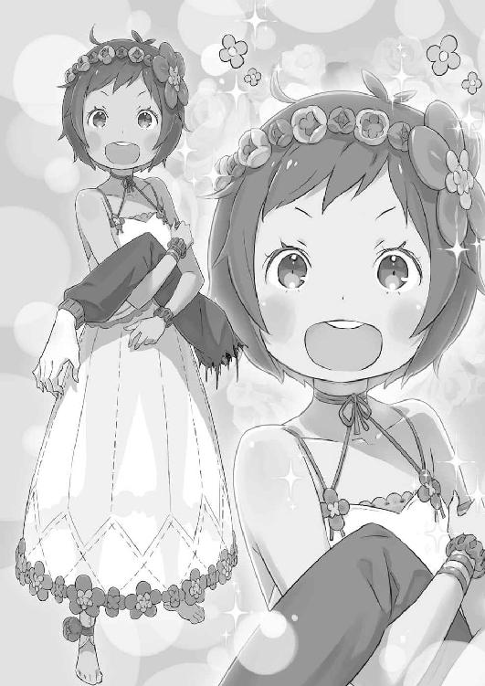
理解ができない。存在が許容できない。異常に適応できない。
「テュフォンの目的はおしまいなー。あとはー......え？ あー、わかったー」
立ち上がり、膝を払う童女が何事か言っているが、意識を向けられない。童女も、すでにスバルへの興味を逸している。
仰向けの視界から童女が消えれば、代わりに見えるのは晴れ渡る蒼穹だ。
「────」
痛みがないのは、ここにあるスバルの肉体が魂だけの精神体だからなのか。その精神体が『死』を思わせる傷を受ければ、取り返しのつかないことになると助言された。
大丈夫だと、耐えてみせると、そう思って、この様か。
手足に、腰に胴に顔に頭に、罅割れが広がり、やがて粉々の塵になって夢に──、
「──ひとーつ！ 人の世の不条理を殴り！」
声が、した。砕け、塵になる寸前のスバルに、その声はやけに強く響いてきた。
声は続ける。威風堂々と、恥じることなく、威風堂々と。
「──ふたーつ！ 不埒な悪行三昧なんて知ったことかぁ！」
それは遠くから響く声、それは徐々に近付く声、それはなおも、高く響く声。
「──みっつ！ 醜かろうが美しかろうが、浮世にいるならことごとく!!」
砕けゆくスバルは声を聞いた。
塵になる手足と、すでに形を損なった胴体と、『死』に匹敵する傷を受ける魂に。
地鳴りと共に踏み込みがあり、見開かれるスバルの目に、旋回する何かが映った。
それは拳だ。白く、華奢な指を束ねた、少女の拳──。
「──無事に！ 帰れないと！ 思うなぁ!!」
拳が、仰向けのスバルの鼻面を直撃、衝撃が後頭部を貫通し、大地が爆砕される。草原にクレーターが生まれ、一撃の破壊力に爆発めいた噴煙が上がった。
「──ッ!?」
何が起きたのか、わからない。ただ、死にかけた意識の首根っこが摑まれて、無理やりに振り向かされた。死ぬには早いと、引き止めるように。
引き止めた上で、ぶん殴られる。拳が、乱打が、雨のようにスバルを穿ち続ける。
衝撃に揉まれ、上下左右を完全に見失った。意識が白く染まる。視界にあるのは止まらない拳と、その拳を振るう少女の顔──滂沱と、涙に濡れた横顔だけだ。
きらきらと、少女の涙が宙に散る。拳の一振りごとに、一撃ごとに。少女は涙ながらに瀕死のスバルを殴り、殴り、殴り、殴り続けた。
「私の拳が世界を再生させる！ 私の怒りが世界を浄化する!! 私の憤怒が！ この拳の癒しが！ 私の答えだぁ──!!」
渾身と、そう呼ぶに相応しい腰の入った一撃が、スバルの顔面をぶち抜く。
爆ぜた、スバルはその衝撃にそれを確信した。
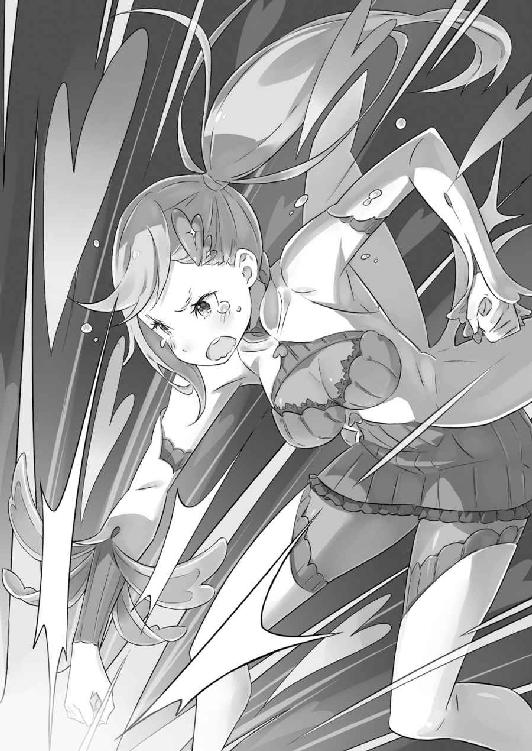
「──。────。────え？」
しかし、確信したはずの爆砕は、訪れなかった。
頭蓋は無事、粉々になるはずの命さえも、何もかもが拳の影響を受けずにある。
──否、影響はあった。手も、足も、胴も顔も頭も、罅割れが消え、元通りだ。
砕け散り、夢の塵になるスバルの魂は、繫ぎ止められたのだ。
「こ、これって......」
「腕も両足も無事ね！ さすが、いい仕事したわ、私!!」
地面に胡坐をかき、手足の無事を確かめるスバルに背後から威勢のいい声がかかる。
慌てて振り向くと、声の主は本当に触れるほど近くに立っていた。眼前の相手を見上げる。そして、スバルの目に飛び込んできたのは──、
「......胸？」
「──ッ！ ど、どこを見てんのよ、どこを！」
近すぎて相手の顔ではなく、その手前にある胸に視線が遮られた。そのスバルの間抜けな声に、胸の主は声を上擦らせて後ろへ飛んだ。ようやく、全身が見える。
「は、話すときは相手の目を見て話しなさいよ、目を！ まったく！ 男の人っていっつもこうなんだから、信じらんないわ！」
ぷんすかと、男の性に怒りを露わにするのは、またしても見知らぬ少女だ。
煌めく金髪を頭の横でサイドポニーに纏め、透き通る碧眼が鮮やかな美少女だった。動きやすさ重視の短いスカートに、白を基調とした上着を羽織っている。スバルと同年代に見えるが、背丈はかなり低め──ただ、胸も尻も大きく、肉感的な魅力があった。
当人の態度がさばけているので、いわゆる健康的な色気というべきだろうか。
その少女の剣幕と所業に、スバルは正しい第一声に何を選ぶべきか心底迷った。その間に、少女に変化が生まれる。ややつり目がちの碧眼が、劇的に潤んだのだ。
「な、泣いてる......？」
「泣いてなんかない！ 怒ってるだけ！ そうよ、私は怒ってる！ テュフォンのせいよ！ 私は出てくる気なんてなかったのに、こんなケガさせて......！ テュフォンのバカ！ あの子にこんなことさせる世界も嫌い！ みんな、大っ嫌い！」
地団太を踏み、ぽろぽろと涙を流す少女の足下で大地が激しく震動する。よくよく周りを見れば、スバルに打撃を加えた被害は甚大だ。
エキドナと茶会していた丘は平らになり、テーブルもパラソルも吹き飛んでいる。これだけの被害が出て、スバルには何の影響もないのが異常だ。
ただ、直前のやり取りと今の態度に、眼前の少女の素性はなんとなく想像がつく。
「た、助けてくれてありがとう？ だけど、流れ的に君も......」
「私は『憤怒の魔女』ミネルヴァ！ 名乗るほどのものじゃないわ!!」
「名乗ってんじゃねぇか！」
「とにかく！ 傷は治した！ 私の役目はおしまい！ もう虫に刺されるほどの傷も負うんじゃないわよ！ 魔女との約束なんだから！」
「気軽に魔女の約束なんて口にするな！ 俺がどれだけ怖がってると思ってる！」
顔を背け、少女──魔女ミネルヴァはぷんすかと可愛げのある怒り方をしている。
しかし、その異常性はやはり証明された。荒療治──まさしく、言葉通りの結果だ。あれだけ殴られ、周囲が破壊されても傷は癒された。不思議現象にも程がある。
ただ、ここまで砕かれ、治され、いいように弄ばれたとしか思えない展開だが──、
「む......！ わかったわ！」
ふと、空を睨んだミネルヴァが、見えない誰かと言葉を交わす姿勢になる。そのことにスバルが顔をしかめると、彼女は最後にびっとスバルを指差し、
「いい？ これに懲りたら迂闊な真似はしないこと！ 次は皆癒しにするわよ！」
「皆殺しみたいに言うなよ......」
突き付けられた指先と、強い意思の秘められた声に圧倒される。なんとか、それだけぼやくように答えたスバルの眼前、ミネルヴァの姿が陽炎のように揺らめき──、
「......お前の顔見て、実家に戻ったような安心感を覚えた」
「......それは、少し複雑な評価だね。ボクも、もう話せなくなるかと少々慌てたよ」
脱力したスバルの前に、気まずげな顔で現れたのはエキドナだ。魔女は自身の長い白髪に指を巻き、なかなかスバルの方を見られずにいる。
そんな魔女の気後れした態度に、スバルは嘆息する。
「お前の忠告が正しかった。死にかけたってのに収穫ゼロだ。......情けねぇ」
「あれは仕方ない......というより、それ以前の問題だった。目的は君とダフネを引き合わせることだったのに、体を譲ろうとした途端、テュフォンが先走って......」
「んん？ 待て、ダフネじゃなく、テュフォン？」
名の違和感にスバルが首を傾げると、言葉を遮られたエキドナが頷く。
「最初、君の前に現れた魔女はテュフォン......『傲慢の魔女』だ。接してわかったと思うけど、あの通りの子どもでね。君に会いたい一心で飛び出してしまった」
「ってことは、俺は何の関係もない幼女に殺されかけたのか......」
厳密には『死』ではなく、廃人化の危機にあったわけだが、結果は同じだ。それにしても、本当に会いたかったのか。殺したいの間違いではないのか。
「その死にかけの君を助けたのが、名乗っていたけど『憤怒の魔女』ミネルヴァだ。先の説明に則ると、あの子が一番、君にとって『安全』な魔女だよ」
「それは、うん、そうだな......新感覚暴力ツンデレ系癒しロリ巨乳だった。おかげで死なずに済んだけど......」
言葉を区切り、スバルは周りを見る。草原の光景は一変、小高い丘は原形がない。
スバルの視線にその訴えを察し、エキドナは苦笑いして指を鳴らした。
途端、風が吹く。それと同時に一度、幕が下りるように世界が黒に包まれた。そして幕が上がれば──そこに、最初と同じ夢の茶会が戻っている。
「おお......お前、ホントに魔女なんだな」
「これまでの君との対話で、それを疑われていたことに驚く。それで、どうする？」
「どうする、ってのは？」
「続けるかい？ 今度は邪魔させず、間違いなくダフネとの対面を叶えると断言してみせるけど......ダフネは、テュフォンよりも危険だよ」
ごくり、とスバルの喉が鳴った。さすがに、エキドナの言葉に怖気が生まれる。
「......『憤怒』が安全なら、『傲慢』はどこだったんだ？」
「テュフォンは、『とても危険』かな。カーミラとダフネに比べれば、話せる」
「それ聞いて念押しされると考えちまうな......」
話せると言われたテュフォンと、会話が成立した記憶があまりに乏しい。あれ以上に会話が通用しないとなれば、真に命も危ぶまれる。
それでなくても、相手は殺戮本能の塊である魔獣の創造主なのだ。あるいは最初から、スバルは勝ち目のない無謀に挑もうとしているだけなのかもしれない。
そうして、そんな風に勝算のない戦いだと思ってしまえば──、
「──だから、俺がそれをこじ開ける必要があるんだろうが」
勝てる、勝てないだけの話をするなら、ナツキ・スバルが勝てる相手などいない。そこに勝算を生むために挑む、それがスバルの戦い方だ。
「決意は固い、か。わかったよ」
スバルの目に、挑む気概を見取ったエキドナが諦めた風に吐息をつく。
しかし、魔女はそこで「ただし」と指を立てて、
「これだけは言わせてほしい。ダフネの拘束を絶対に解いてはいけない」
「拘束......」
「それから、彼女に触れるのも禁止だ。できれば目を合わせるのも避けた方がいいよ」
「それ全部守ると俺死ぬほど感じ悪い奴なんだけど！」
そもそも、聞き捨てならない拘束なんて単語についての説明がない。
だが、そのことの追及が終わる前に、エキドナの準備の方が済んでしまう。魔女の姿がゆらりと揺らぎ、存在が紐解かれ、別の魔女と入れ替わりに世界に溶ける。
そして、緊張に身を硬くしたスバルの眼前に、それはゆっくりと現出した。
「......おいおい。これは、いくらなんでも」
頰を引きつらせ、スバルはそれを前に震える声でそう漏らす。
眼前に現れたそれが『暴食の魔女』だとしたら、それはあまりに無視し難い姿で。
「──ダフネにぃ、何が聞きたいんですかぁ、すばるーん？」
甘ったるい声で、『暴食の魔女』──ダフネは、形のいい鼻を鳴らして言った。
──棺の中、鎖と拘束衣に雁字搦めにされ、両目を黒の眼帯に封じられた、魔女が。
６
摑み所がない、ではなく、摑み所に困る外見をした魔女だった。
棺──それは、アイアンメイデンと呼ばれる拷問器具に近い形をしている。縦に起き上がる黒の棺に収まる魔女は、外見年齢は十三、四歳程度に見えた。
背中に届く灰色の髪を二つに括ったお下げにし、白い服の上から漆黒の拘束衣と鎖で棺に固定されている。両目には、顔の中心で交差するように眼帯が巻かれており、その姿形の不穏さでいえば、これまででぶっちぎりに魔女らしい。
「ドナドナに言われて出てきましたけどぉ、気持ちよく寝てたのにぃ。......あんまりぃ、長く起きてたくないのでぇ、つまんない話しないでくださいねぇ」
「お、おお、わざわざ出てきてくれてありがとう。その発言だけ聞くと、『暴食』ってより『怠惰』っぽいけど......『暴食の魔女』、なんだよな？」
目隠しした相手だ。離れていては不自由もあろう。が、直前のエキドナの忠告もあり、スバルは慎重に一歩だけ距離を詰めた。
と、その動きにダフネは棺の中で小鼻を鳴らし、「あー」と呟いて、
「......これ、ダフネの体に毒かもぉ。──百足棺」
「──っ」
呼びかけと、直後の光景にスバルの喉の奥で驚きが生まれる。
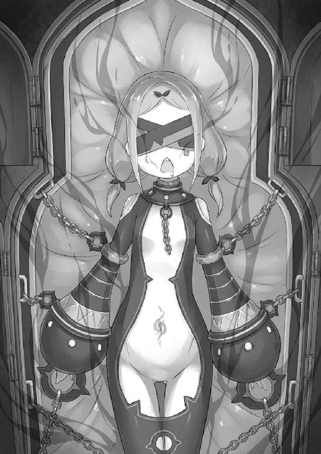
端的に述べれば、スバルが縮めた距離を開くように、ダフネが背後に動いただけだ。しかし、その動き方がスバルの想像を超えていた。
「────」
ダフネを拘束する棺の下部が、ふいに大地から浮かび上がる。原因は棺の底部に生えた足──蜘蛛か蟹に似た、節足動物風のものだ。その足で、棺が背後へ移動する。
動くアイアンメイデン──というよりも、それは生物的な動きであった。
「そ、れが......何か、聞いても平気、か......？」
「それってぇ？ 見えないダフネにわかるようにお願いしますぅ」
「その......ものすごい、造形美が光る棺桶だよ。俺の狭い見識によると、棺桶ってヤツには足もないし、虫みたいに猛スピードで動いたりしないはずなんだ」
ぎちぎちと音を立て、棺は移動先に腰を据えるように着地し、生やした足を再び中に引っ込める。亀が甲羅に手足を隠す動作に近いが、おぞましさが桁違いだ。
その光景に唾を吞むスバルに、ダフネは「あぁ」と納得した風に頷いて、
「百足棺ならぁ、ダフネが動けなくて不自由したのでぇ、そのために作った子なんですよぉ。ダフネの汗とかおしっこで動くので便利なんですよぉ？」
「急にすげぇ聞きたくない暴露話がきた」
要は宿主の老廃物を餌に活動する生き物、ということか。言い方が悪いのを頭の中で嚙み砕くと、やはりその異常性が際立つ。
異常性の最たるものは、『作った子』という部分だろう。
「すばるんの傍にいるとぉ、ダフネの体が疼くんですぅ......すばるんって、すごぉくすっごぉく、ダフネの好きな匂いなのでぇ......食べちゃいたくなるんですぅ」
「食べちゃいたく、ってのは......その、性的な意味で？」
「生的な意味でぇ......」
陶然と、赤い顔で答えるダフネだが、おそらく発音のニュアンスが違った。
表現こそ可愛いが、魔女は躊躇いなくスバルを『食べる』と発言した。それは文字通り、捕食以外の意味を持たない意思表示──つまり、食人すらも厭わない存在だ。
常識的な倫理観では太刀打ちできない。ペースを摑むためにも、先制攻撃だ。
「お互い、長く話しても碌なことにならないってのはわかった。わかったから、さっそくだが質問させてもらうぜ。お前が作った、三大魔獣の話だ」
「さんだいまじゅう......？」
「──っ！ 白鯨と大兎、それに黒蛇だかって魔獣だ！ お前が作ったんだろ!?」
記憶にない、とばかりの態度に気が逸り、スバルは魔獣の名を出して怒鳴る。その魔獣の名前にダフネは何度か首を左右に傾げ、
「あぁ、鯨とぉ、兎ちゃんとぉ、蛇ちゃんのことですかぁ？」
「だから、そう言っただろ......」
「変な名前で呼ぶんですもん。人が付けた名前なんてぇ、知りませんよぉ。あの子たちだってぇ、ダフネからふわふわーって勝手に出てくるだけですしぃ」
棺の中で身をよじり、ダフネはスバルの怒りをのらりくらりと躱そうとする。どうも彼女には、生命の創造という神の御業を実行した自覚がないらしい。
──魔獣を生み出したダフネの行いは、正しく神に匹敵する力だというのに。
「それで、なんであんな奴らを作り出したんだよ......」
「──？ なんですかぁ？」
「なんで！ あんな奴らを！ お前は世界に放ったんだよ！」
他人事のような態度に堪え切れず、スバルは魔獣の母に怒声を張り上げていた。
怒気に顔を赤くし、指を突き付け、ダフネに吠える。
「お前が死んでからも、四百年！ 魔獣がどれだけ暴れ回ったと思ってる!? 何人も、何十人も何百人も！ 今だって犠牲が増え続けてるのに！」
脳裏に浮かぶのは、白鯨と激突したリーファウス平原の激戦だ。
妻を殺されたヴィルヘルムの叫びと執念、あの戦いに参陣した戦士たちの嘆きと怒りの日々──その全ての発端が、この目の前にいる棺の魔女にある。
「何のためにだ！ お前は、あんな化け物を、白鯨は何のために作ったんだよ!?」
「──？ おっきぃ生き物の方が、食べがいがあるじゃないですかぁ」
「──ぅ、は？」
勢いづくスバルの舌鋒を、ダフネは心底不思議そうな顔でせき止めた。その態度に勢いが空回りし、呻くスバルにダフネはますます首を傾け、
「白鯨、おっきぃですよねぇ？ あの子、食べるとたくさんの人が満足しませんかぁ？」
「なに、を......？」
「大兎なんてぇ、いくらでも増えるんですよぉ。あの子がいればぁ、誰もお腹が減ったりせずに済みますしぃ、すごぉくないですかぁ？」
「その、大兎に大勢が喰われてるってんだよ!!」
ダフネの言い分は支離滅裂だ。単純に言葉だけ受け取れば、彼女が魔獣を作り出した理由は食糧問題の解決にある。飢饉に苦しむ人々を救うために、食糧として魔獣たちを生み出したのだと。──その魔獣に、多くが犠牲になっているのに。
「お前の思いやりは逆効果だよ！ 魔獣に満たされるより、奪われる人の方が......」
「相手を食べようとするのにぃ、自分が食べられる可能性を考えないのってぇ、ちょっと勝手すぎませんかぁ？」
微笑みながら、ダフネは苦い顔をしたスバルに当然のように言った。
「────」
その発言を飲み下し、理解しようと努力して、やっと理解できないと理解する。
見た目と、言葉が通じることで勘違いしていた。これは人と人との対話であると。
だが、それが誤りだった。目の前にいる少女は、決して『人』ではない。
「それは、動物の理屈だろ......」
弱肉強食──ダフネの行動理念はまさにそれだ。それも、強者が弱者を喰らう世界に価値を見出すのではなく、あくまで彼女の目は『食す』一点に向いている。
エキドナが、ダフネを危険であると、話が通じない存在と説明した理由がわかった。
スバルとダフネとでは価値観が違うのだ。
彼女は魔女、彼女たちは魔女、世界にたった七人しかいない、本物の魔女なのだ。
「すばるんもですけどぉ......みんなぁ、『暴食』を安く考えてないですかぁ？」
「────」
「食欲ってぇ、生きてく中で一番大事な欲求なんですよぉ？ だってぇ、それが満たされなきゃ生きていけないじゃないですかぁ」
「────」
「安らぎがなくてもぉ、愛されなくてもぉ、感情を吐き出せなくてもぉ、自尊心が保たれなくてもぉ、欲しいものが手に入らなくてもぉ、何に焦がれることがなくってもぉ、誰も死んだりしないじゃないですかぁ。でも......」
「────」
「食べられなかったらぁ、人は死んじゃうんですよぉ？」
七つの大罪とされる罪の中、『暴食』だけが直接命に関係する。
正しい意味での『暴食』とは、必要以上の食欲に溺れることにある。だが、この場合のダフネの真意は、生きるために必要な食欲そのものを意味していた。
それは、否定はできない真理ではある。しかし──、
「お前の言ってることは、一部は正しい。それは認める。でも、そんなのは......」
「すばるんも一度、限界まで飢えてみたらわかりますよぉ。ダフネの言ってることの意味とかぁ。......ダフネと、兎ちゃんがどんな世界に生きてるかとかぁ」
極限の飢餓、確かにそれを引き合いにされれば、スバルに言い返すための言葉はない。
スバルは、命を脅かされるほどに飢えた経験などない。元の世界で、現代日本の普通の家庭で飢えるほど食を絶やされることはまずないし、異世界に召喚されてからも、早々にエミリアに出会い、ロズワール邸に拾われる幸運に恵まれた。
食事に困ったことは一度もない。だから、ダフネの言葉を真に理解できない。
──今も空腹に襲われ、耐え難い苦痛に喘ぐ魔女の心を、わかってはやれない。
「その、お前の飢餓が生んだのが、大兎って化け物なわけか......」
「あの子たちはぁ、特にダフネのお腹ぺこぺこなところぉ、見習って生まれちゃいましたからぁ......お互いを食べちゃう気持ちもわかりますよねぇ」
「......良心とか痛まないのか？ 自分の作った魔獣に、そんな空腹を味わわせて」
「──？ 兎ちゃんのお腹が空いても、ダフネは別にお腹空きませんよぉ？」
「......聞いた俺が馬鹿だったよ」
平行線だ。どこまでいっても、この魔女とはわかり合えない。
ダフネにとっては自らが生んだ魔獣たちであっても、自分の小腹が空いたときに摘まむための非常食に過ぎないのだ。
自分で生み出し、自分で喰らう。究極の自給自足──まさに、大兎の母だ。
そんなダフネにこれ以上、言葉を尽くしても無駄かもしれないが──、
「その大兎、俺が退治したいって言ったら、ヒントを教えてくれるか？」
「えぇー、兎ちゃん滅ぼしたいんですかぁ？ あの子なんてぇ、弱いのに食べやすくて、しかも増えるしぃ、ダフネの自信作なんですよぉ」
「喰うか喰われるかって弱肉強食を押し付けるんなら、生きるために相手を殺そうとする生存本能ってヤツも認めてほしいもんだな」
常識外の判断で渋るダフネに、スバルは屁理屈同然の言葉で反論する。
価値観が違えば、同じ土俵では話し合えない。一見、スバルとダフネとの間で成立しているように見える会話のキャッチボールは、お互いに大暴投の徒労になる。
しかし──、
「──大兎はぁ、獲物を探すのにマナを頼りにしてるんですよぉ」
「......どういう風の吹き回しだ？」
「だってぇ、生きるために喰らうんならぁ、生きるために殺すってのを認めないとぉ、それはぁ、筋が通りませんよねぇ？」
素直に大兎のことを語り出したダフネをスバルが訝しむ。
するとダフネは先のスバルの屁理屈に対し、何度も何度も納得した風に頷いた。とっさの反論の何かが、土俵違いのダフネとの価値観の差異を埋めたらしい。
そのことに驚くスバルを余所に、ダフネは魔獣の母として、子の性質を淡々と語る。
「マナの総量が多いところに惹かれる習性があるのでぇ、つよぉい魔法使いとかぁ、囮にすると集められますよぉ。そのとき、いっぺんにやっつけるとかぁ？」
「......無限に増えるって聞いたぞ。群れと離れてるヤツとかいないのか？」
「数はいてもぉ、意識は一個ですからぁ。一個の意識をぉ、群体がみんなで共有してる感じなんですねぇ。滅ぼされないための知恵とか、そんなのないんですぅ」
「そう、か。それなら、駆除したあとに生き残りがまた繁殖するような、パニックホラーのお約束みたいなことにはならないのか......」
モンスターパニック映画のお約束のオチだが、大兎の性質では洒落にもならない。
ただ、今の情報は来る大兎への対処に大きく貢献する。まだ確実な駆除方法に行き当たったわけではないが、奔走する材料には十分だ。少しは、光明も見える。
「ふわぁ......そろそろぉ、ダフネはいいですかぁ？」
大兎の討伐方法に頭を悩ませるスバルに、欠伸をしたダフネがそう言った。
どこまでもマイペース──否、周りに興味がないのか。
ダフネは大兎と同様に、完全にダフネ個人で存在が完結した魔女だ。故に、スバルにも大兎にも、その行く末に興味など持たない。
あるのは飽くなき飢餓感だけ。それすら、死後の彼女にどれほど意味がある。
「ああ。経過はともかく、参考になったよ。ありがとな。──それと」
互いに生者と死者、生きてきた時代も違っている。
こんな形でなければ、スバルとダフネは決して交わることのない二つの線だ。
だから、価値観の違いも何も諦めて、このまま別れても何も問題はない。
問題なかったが──、
「──大兎は俺が滅ぼす。白鯨も、もう殺したあとだ。文句つけんなよ、お母様」
「────」
「四百年、お前が良かれと思ったのか、それも思ってねぇのかはともかく、それだけ奴らは暴れ回った。もう十分だよ。──跡形もなく、消してやる」
互いの間にある価値観の溝──それがわかっていながら、スバルは言っていた。
最後まで翻弄してくれた魔女に、届くかもわからない矢を放ってやりたくなったのだ。
そのスバルの宣戦布告に、ダフネがこれまでにない反応を見せる。
「......たかだか、ニンゲンが」
漏れる呟きから、それまでの甘ったるい雰囲気が搔き消えている。
魔女はその口を大きく横に開き、初めて『食欲』以外に明確な意思を覗かせながら、
「──やれるものならぁ、やってみたらいいですよぉ」
鋭すぎる牙を剝き出し、赤い舌を出して『暴食の魔女』が愉しげに嗤った。
７
「────」
強い風に吹かれ、スバルは思わず上げた腕で自分の視界を遮る。
突風に煽られる草原、風に巻かれて空へ舞い上がる野花の花弁を目で追い、それが日の光に吞み込まれたのを見届けて、視線を戻した。そこに──、
「──無理言って悪かったな、エキドナ」
「礼はいらないよ。たまには彼女たちも、ここでボク以外の誰かと言葉を交わすべきだ。無論、君みたいな存在でもないと、ボクらの前には立てないけどね」
「......吐くのか」
「吐くだけで済めばいいけど、それで済まないことの方が多いかな」
ダフネと入れ替わりに顕現したエキドナが、冗談めかした仕草で肩をすくめる。
少なくとも、スバルは初対面のときのエキドナに威圧感こそ覚えても、嘔吐感までは受けなかった。それは、他の魔女に相対しても同じ感覚だ。
彼女らの異常性に恐怖を感じはした。だが、本能的な拒絶感はなかった。その差だ。
「それで、ダフネの話は君にとって収穫になったのかな？」
「そうだな。......ひとまず、魔女の中でお前がすごいまともだって収穫があった」
「はぁ......。やれやれ、ダメだよ、まったく。そんな耳心地のいい言葉でご機嫌取りしようだなんて、ボクを安く見られては困るな」
感慨深げなスバルの答えを、エキドナは鼻を鳴らして小馬鹿にした。それから魔女はテーブルの上に新しいお茶とクッキー的なお菓子を並べ、鼻歌を歌う。
あまり歌はうまくない。ともかく、わかりやすい魔女だった。
「でも、お前の体液と、何が混入されてるかわからないクッキーは遠慮する」
「髪の毛なんて入れてないよ？」
「もはやお前の発言一つ一つを疑わずにはいられねぇよ！」
今後、この茶会では二度と飲食するまいとスバルは心に固く誓った。
そんな決意のスバルと対照的に、苦笑するエキドナはすっと黒瞳を細める。その闇色の瞳に見つめられ、スバルは居心地の悪さに顔をしかめた。
「お前の、その何もかも見透かそうって目、好きじゃねぇな」
「見つめるだけで相手の全てがわかるなら、ボクは君を焼き焦がすほどに見つめてもいいんだけどね。......それにしても、君は自覚があるのかないのか」
「──？ 何の話だ。自覚？」
「状況が生む歪みの話、かな。例えば......君はその気になれば、テュフォンとだってまた平然と言葉を交わせる。向こうが話したいと言えばね。違うかい？」
首を傾げるスバルに、エキドナが疑問を投げかけた。それを受け、スバルはひねった首を反対にひねり、悩む。魔女は何が言いたい、あるいは言わせたいのか。
「......話したいことがあるなら聞くと思うけど、それがどうした？」
「テュフォンにあんな目に遭わされて？ 普通、人は自分の手足を砕いて、殺しかけたような相手を受け入れることはできない。その傷が完全に癒えたとしても、だ」
「────」
指摘に一瞬、スバルの息が詰まった。
その反応に、エキドナは興味深いとばかりに瞳の黒を濃くする。その間にゆっくり、スバルは忘れていた呼吸を思い出した。
「無自覚、ではなかったみたいだね」
「......意識の、持ってき方の問題じゃねぇかな。確かに、今の俺の考えがちょっとまともじゃないって自覚はあるよ。だけど、それを言い出すと、な」
殺されかけたテュフォン、彼女を許せないと怒りのままに言い出せばどうなる。
スバルは、レムにだって殺されたことがあるのだ。ラムにも、介錯されたことがある。
それでも、スバルは二人のことを許した。二人への怒りより、愛おしさが勝った。彼女らのいない明日より、彼女らと過ごす明日を選んだのだ。
「当然、レムたちと会ったばっかの魔女たちとじゃ話が違うぜ。テュフォンの奴には謝ってもらわないと話になんか付き合わねぇ。そう言っとけ」
「......わかったよ。聞く耳を持つか、君にまた会いたがるかはわからないが、それはしっかりとボクから話しておくとしよう」
胸を張り、そう言いつけたスバルにエキドナはやけに殊勝に請け負った。その返答に頷くと、スバルはふと自分の両手を見下ろす。
奇妙な違和感、それに掌を開閉し、訝しむように眉を寄せた。
「なんだ？ なんか、むず痒いような、変な感覚が......」
「──どうやら、目覚めの時間が近付いているみたいだね」
「目覚め？ ......って、うぉ」
ぐらり、とスバルは目眩を感じて上体を揺らした。椅子に座ったままなのに立ち眩みに似た感覚を味わい、スバルは何事かと瞬きする。
目覚め、つまりは夢の城からの解放だ。ただ、おかしいのは──、
「お前の話じゃ、ここからはお前の許可がない限りは出られないんじゃ？」
「そのはずだけど、例外もある。例えば、外から肉体に覚醒を促された場合だ。......でも妙だね。確かに今回は長く話せているが、それでも滅多にあることじゃない」
「外から起こされた......？ それって、まさか」
エキドナの説明に思い当たる節があり、スバルは目を見開いた。
今のスバルは、エキドナの夢に魂だけで招かれた状態だ。器である肉体は、今も墓所の石室に大の字に転がっているはずである。内外の時間の流れには差があり、異変を察した誰かが墓所に入ってくることは、まずありえないとの目算だった。
つまり、スバルを起こす可能性があるとしたら、相手は一人しかいない。
「エミリアが、俺を起こそうとしてる？ いや、待てよ、そもそも......」
そこで、スバルは奇妙な事実に気付いた。エミリアが墓所で『試練』に挑んでいることは間違いない。スバルがここにいるのは、その間の出来事だからだ。
だが、『試練』と夢の城が同時に展開しているとしたら──、
「お前、『試練』の試験官気取りじゃなかったか？ なんでここにいるんだよ」
「うん？」
「だから、『試練』にはエミリアも挑んでるはずだろ？ なのに、それをどうしてお前は監督しないでここにいたんだ。おかしいじゃねぇか」
「......ああ、そのことか。だって、すでに結果の見えていることだからね」
「結果が見えてるって......」
ひどく、端的な受け答えにスバルは二の句が継げない。エミリアの『試練』にエキドナが無関心なのは、スバルの記憶を参照したからだと気付かされたからだ。
スバルの知る限り、エミリアはこれから三日、『試練』に打ち勝つことはできない。
もっと時間をかければと思っても、そのための時間は大兎によって奪われる。
「だから、彼女の挑む結果にボクはもう興味がない。試行錯誤しても、三日で殻を破ることに期待はできないだろうね。それとも、君には可能かな？」
「────」
「繰り返しを重ねると決めた君になら、臆病なお姫様に翼を授けられるかい？」
皮肉げな、揶揄する言い回しにスバルは目をつむった。瞼の裏に浮かぶエミリアの様子は『試練』に心を砕かれ、泣きじゃくる顔ばかりだ。
彼女に『試練』を越えさせるために、幾度『死』を重ね、あの顔をさせるだろうか。
そんな残酷な真似、するべきではないと強く願った。
「挑発に乗るみたいで癪だが、これ以上、エミリアをお前には泣かさせない」
「いや......うん、ボクが泣かせてるわけじゃないんだけどね」
「そのために、お前の性格の悪い『試練』には俺が挑む。元々、前回もそのつもりでいたんだ。邪魔が入ってできなかったけど、次はうまくやる」
「性格が悪いとまでは、言わなくていいんじゃないかな......」
拗ねたエキドナのコメントが、いちいちスバルの決意に水を差してくる。
ともあれ、エキドナに宣言したことに偽りはない。
『試練』には、今度こそスバルが望む。すでに第一の『試練』は乗り越えたのだ。第二と第三の『試練』も突破し、『聖域』を結界から解き放つ。
その後は屋敷へ駆け戻り、ベアトリスの力を借りてエルザたちを撃退する。
そのために何度挑もうとも、だ。あとの気掛かりは──、
「──ガーフィール」
あの、大虎へ獣化した男への態度だけは、やり直した今も決めかねている。
『死に戻り』するたびに色濃くなる瘴気が、スバルとガーフィールとの間にいらぬ諍いを生んだことは事実だ。だとしても、ガーフィールは圧倒的な力の差があるにも拘らず、ラムやオットーを、村人たちをその爪にかけた。
命乞いにも耳を貸さず──そんな相手と、状況が変わったとはいえ和解できるのか。
「......無理だ」
少なくとも、今の心境でガーフィールを許すことはスバルにはできない。無論、積極的に敵対するべき相手ではない。可能なら、対立は避けるべきだ。
武力では勝ち目がない。味方にすれば、とまではまだ割り切れないが。
「クソ、マズい......本格的に、意識がぶれてきた」
考える最中、意識が揺れる。夢の世界で、眠りに落ちるような錯覚に襲われる。スバルのその様子に、エキドナも「ここまでのようだね」と続けて、
「今回は、ボクにとっても非常に有意義だった。前回はまさかの、質問なしなんて有様だったからね。少しは『強欲の魔女』として面目躍如ができたかな？」
「そう、だな。......うん、正直、助かった。方針もそうだし、心の方もだ」
前回に比べれば長くても、やはりエキドナと言葉を交わした時間は短い。
その間に、スバルはこれまで誰にも見せられなかった面をいくつもさらけ出した。最たるものは『死に戻り』の打ち明け。喰い殺された心の傷の修復も、そうだ。
魔女にこれほど救われるなど、外の世界では正気を疑われても不思議ではない。
「魔女の力で『死』をやり直して、別の魔女に心を救われて、か」
「なんだい？」
「いや、今のは独り言。──エキドナ、またここにくるにはどうしたらいい？」
「────」
『死に戻り』することで、スバルは必ず墓所へ舞い戻ることになる。
しかし、このエキドナの領域に招かれるには、それ以外の資格がいる。今回、知りたいと必死に足搔いたことが切っ掛けになったように、夢の扉を開く鍵が。
「勝手なのはわかってる。けど、この先、またお前の知恵を借りたいときがくる。お前は物知りだし、それに......」
「──君の『死に戻り』を知っているから、ね」
「......ああ、そうだ」
スバルの『死に戻り』を知り、その上で相談に乗れるものはこれまでいなかった。だが目の前の魔女は、エキドナにはそれが可能だ。
エキドナはスバルより頭も切れる。このループを越えるために、必要な力がある。
「頼りにされて悪い気はしないけどね。でも、生者があまり死者に気を許し、心を預けるべきじゃないよ。相手が魔女ならなおさらだ」
「それは、ダメってことか？」
「ダメとは言わないよ。ただ、おそらくかなり難しいことだと思う」
落胆と期待の両方を瞳に宿したスバルに、苦笑したエキドナが頰を引き締める。
「茶会へ招く条件は徐々に厳しくなる。一度目はボクが好きに呼べるが、二度目からはそうはいかない。君は二度、茶会に招かれた。知りたいと、心からの欲求を叫ぶことでボクに声が届く。三度目は、二度目よりさらに大きくだ。──できると思うかい？」
「今回よりもでかい声で。つまり、兎に喰われるよりインパクトのある死に方しろってことか。......そりゃ、仮にできても遠慮したいな」
そもそも、今回の時点で発狂するほどの『死』を迎えたのだ。
まさに忘我の境地にあり、存在の根本から魂を震わせるような何故の咆哮──それを上回ることは、どんな痛みと喪失感の果てに辿り着ける域だろうか。
「君がそれを拒む以上、ボクと君が顔を合わせるのはこれが最後かもしれない。ただ、君が目論見通りに『試練』に臨むとすれば、その限りじゃないけどね」
「──？ ああ、そうか！ そういうことか！」
手を打つ。エキドナの言いたいことがわかった。茶会以外で、言葉を交わす機会。
第一の『試練』と同じく、第二、第三の『試練』にも魔女が居合わせるのならば。スバルがエミリアの代わりに『試練』に挑めば、そこで再会は叶うわけだ。
「そこでなら、か。とはいえ、さすがにあっちじゃ茶は囲めないだろうけどな」
「君がどうしてもと言うのなら、ボクはその場で淹れるのも吝かじゃないが......」
「いや、製造過程見るとますます飲みたくなくなるからいいです」
掌を突き付けて拒否すると、エキドナはこれまでで一番の失意の顔をした。
何がそれほど魔女に、自分の体液を提供させようとするのかがわからない。自分の一部が他人の一部になることに興奮するとかだろうか。業が深い。
ともあれ、次の機会の目星も付けられた。あと、去る前にやるべきことは一つだ。
「そろそろ、本格的に起きる雰囲気だ。エキドナ、その前に頼む」
「──？」
「いや、はてなじゃねぇよ！ 茶会の対価だよ！ お前が言ったんだろ！」
「あ。ああ、対価。もちろん、魔女の茶会には付き物だ。忘れてもらっちゃ困るよ」
一瞬、本気で忘れているのかと焦ったが、エキドナはそう言って妖しげに微笑む。
普段であれば、スバルもここで出世払いを提案して対価のことなど忘れたいが、今回の対価には『誓約』のことが含まれる。それは外せない。
誓約を書き換え、エキドナと、茶会のことを記憶に残したまま夢の外へ戻る。
最悪、ダフネとの対話も忘れてしまえば、再び大兎に喰われる未来が待つだけだ。
「前回は、君に茶会の口外を禁じた。今回、君はその誓約をほどくことを望み、さらに他にもボクの歓待を受けたはずだ。それに相応しい対価をいただかなくてはね」
「してもらったことだけ考えると、支払えるか不安になるな」
「死後、君の魂をここへ蒐集し、ボクたちと永遠の茶会を楽しむとか......」
「悪いな。俺、死なないんだよ」
「そうだったね。ますます、アレの執着が忌々しく思えるよ」
あくまで冗談とは思うが、究極の選択としては恐ろしく出来のいい対価だった。ここで魔女たちと永遠を過ごすなど、考えただけでも震えが止まらなくなる。
代わりに提案されるのもそのレベルの対価だったら──と、そんな不安を覚えるスバルに、エキドナは「それなら」と手を伸ばし、
「目は付けていたけど、やっぱりこれかな」
言って、エキドナの指が触れたのは、スバルの手首に巻かれる白いハンカチだ。
ペトラに持たされ、夢の世界でもついてきてくれた無事に帰る約束の──、
「やっぱりこれって......ただのハンカチだぞ？ 特別なことなんて何もないのに」
「なら、ボクがもらってもいいんじゃないかな？ ただのハンカチなんだろ？」
「いや、そうなんだが......これは」
執拗に食い下がるエキドナの態度に、スバルは手首を庇いながら言葉を濁す。
ハンカチに込められた約束は、ペトラに必ず返すことで果たされる。旅の無事を願ってくれたペトラの想いがあるのだ。簡単に手渡していいものではない。
これをペトラに無事に返すことも、スバルにとっての目的の一つなのだから。
「それに、対価が物理的なモノってのはアリなのか？ ここは精神世界なのに、外の世界のものが手に入っても仕方ないんじゃ？」
「勘がいいね。確かに、ここでボクがそれを手渡されても、外に戻ったときにハンカチが君の手首から消えるわけじゃない。でも、そこに込められた願いがある」
「ハンカチに、願い？」
スバルの比喩的な考えと違い、エキドナは真面目に確信のある顔で頷く。
「君にこれを贈った相手は、君を心から案じていたんだよ。その無事を願う気持ちが、君を守る力になる。ボクの時代にもあったまじないだけど、馬鹿にはできないよ」
「するつもりもねぇよ。......でも、そうか」
あの可愛らしい少女の気遣いに、スバルはハンカチごと手首を握って感じ入った。じんわりと温かいもので胸が満たされる。
必ずや、少女を悲劇の運命から救おうと、改めて心に言い聞かせて。
「ここはボクの領域だが、だからってなんでも自由になるわけじゃない。君を自由にできないように、ハンカチに込められた想いもね。だから心配はいらないよ」
「前書きが気になったけど、それなら、このハンカチの何が対価になるんだ？」
「その想いの存在を確かめたことと、ちょっとした干渉......かな」
疑問のスバルにそう応じて、エキドナはしなやかな指でペトラのハンカチに触れた。そのままそっと魔女が目を閉じ、俯きながらすぐ傍に佇む。
その距離感と、魔女の香りに居心地が悪い。早くしろと内心で祈るが、そうとは知らないエキドナはたっぷり十秒かけて、「よし」と身を引いた。
「これで、対価は確かに徴収したよ。君との新たな誓約だ。忘れずにね」
「......ってか、忘れてたのが誓約だったんだけどな」
バツの悪さを悪態で誤魔化し、スバルはエキドナから一歩、距離を取った。
すでにスバルの視界は歪み、エキドナだけを残して世界は形を損ないつつある。
「じゃ、助かった。次は、『試練』でかな」
「すんなりと、墓所に挑めればいいけどね」
気が重くなることをあっさりと言われ、スバルは苦笑した。そして、今度こそ夢から切り離される感覚があり──、
「──ナツキ・スバル、もし君が、三度目の茶会にくることがあれば」
「え？」
ふわりと、浮遊感に包まれる瞬間、見えなくなるエキドナが何事か言った。
聞き返すスバルに、霞んでいく魔女は微笑んで、
「──そのとき、今度はボクの方から、君に話したいことがあるんだ」
「────」
そんな、後ろ髪を引くような言葉を最後に、スバルの視界から魔女が搔き消える。
もやもやとしたものが胸に残る。だが、振り切り、スバルは頭上を仰いだ。
浮遊感は失われ、昇っているのか、落ちているのかもわからない。
ただ、夢が終わる。そして、夢の終わりに抱く決意は──、
「──次は、間違えない」
覚悟と共に呟く直後、水を割るような音がして、視界が一気に白く染まった。
第六章 『らぶらぶらぶらぶらぶらぶゆー』
１
「うえっ！ げほっ！ げぇっ！」
目覚めの瞬間、スバルは口内にあった土埃の苦みを盛大に吐き出していた。
冷たい床に跪き、涙目になって必死にえずく。砂利と泥臭い唾を、必死に吐いた。
「これ、毎回やるのかよ......っ！」
異物を吐き終え、悪態をつくスバルは頭を振り、目覚めの意識に覚醒を促す。
ゆっくりと、眠っていた間の出来事を回想、靄が晴れるように記憶が蘇り──、
「大兎に、やられて......戻って、それで茶会に......」
茶会と魔女──そのキーワードが浮かび、瞼の裏にバラエティに富んだ魔女たちが思い出されたことで、スバルはエキドナが誓約を履行してくれたことを理解する。
無意識に手首に手が触れた。布の感触、ペトラのハンカチも無事、ここにある。
「......エキドナは約束を守ってくれた、か。ホントに、名前詐欺な魔女だ」
嘆息か、あるいは感嘆だったのか、スバルは微かに吐息をつく。
冠のわりに魔女らしさに欠けるエキドナは、このループにおける数少ない味方だ。知識もあり、知恵も回る。頼れるチャンスは、茶会に『試練』と多くないが──、
「──代わりに、最大のアドバンテージがある。それが、でかい」
胸に手を当て、スバルは『死に戻り』を告白できたことに改めて心から震える。
あの場所で、エキドナと他の魔女たちだけという限定条件ではある。だが、打ち明け、『死に戻り』を踏まえて話し合える相手は、これまで望むべくもなかったことだ。
おかげで大兎の情報と、『死に戻り』の特性についても仮説を得ることができた。
スバルに宿る権能、その原因が『嫉妬の魔女』にあり、いずれ必ず魔女と向き合うときがくるだろうと、特大の厄ネタを持ち帰ったとも言えるが。
「今は、お前の力に頼らせてもらうさ。何回でも、俺の命でよけりゃ使ってやらぁ」
それで答えに近付けるのなら望むところ。未来のための安い買い物だ。
ぐっと、袖で乱暴に口元を拭い、スバルはその場に立ち上がる。その表情は強い決意に漲っていたが、それが一転、違和感に訝しげなものへ変わる。
直前の、夢の城でのやり取りが思い出された。茶会が終わった理由、それは──、
「エミリアが、俺を起こしたから......の、はずなのに」
正しくは、外からの干渉がスバルの意識を呼び覚ましたということらしい。が、この場合は些細な差異だ。そんなことは、現状の問題の前に霧散する。
墓所の石室、第一の『試練』の間──そこに、エミリアの姿が見当たらないのだ。
「......噓だろ？」
愕然と呟いて、スバルはぐるりと薄暗い石室を見回した。
しかし、『試練』の間のどこにもエミリアの姿はない。スバルが触れて起こすまで、悪夢にうなされて苦悩するはずのエミリアが、どこにも。
「先に目が覚めて、それで俺を起こそうとして、それで......それで？」
──それで、目覚めないスバルを置き去りにし、この場所から立ち去った？
それは、あまりにもエミリアらしくない行動だ。外に助けを呼びにいくより、エミリアなら意識のないスバルを担いで墓所の外へ向かいそうなものだ。
あるいは、そんな『らしくない』行動をするほど、普段と違う精神状態ならば。
「──っ！」
そこで、スバルは遅きに失して気付く。
繰り返し、この墓所で目覚めるのは四度目になる。だが、これまで一度として、スバルより先にエミリアが目覚めた周回はない、今回が初めてのことだ。
過去の悪夢に心を抉られ、傷心のエミリアを慰めてやることができなかったのは。
「まさか、錯乱して外に飛び出したんじゃないだろうな......！」
過去に取り乱すエミリアを思い出せば、それがありえないとはとても言い切れない。
墓所の外にはラムやオットーがいる。仮にエミリアが泣きじゃくっていたとしても、二人ならうまく宥めてくれるはずだ。それに、外には──、
「──ガーフィールと、リューズさんがいる」
振り返り、墓所の入口へ走り出そうとした足が止まった。『死に戻り』した直後、おそらく濃度を増しただろうスバルの瘴気、その対策はまだ何も考えられていない。
前回以上に瘴気が濃くなれば、ガーフィールたちがいつ仕掛けてくるかは不明だ。墓所を出た直後、襲われないとも限らない。
「......いや、いくしかない」
エミリアの無事が気掛かりだ。それを心残りにしてはおけない。
それに、繰り返すたびに瘴気が濃くなるなら、判断を誤るたびに状況は悪くなる。スバルの弁明が届くのは回数の浅い間、今回が最後かもしれないのだ。
スバルの感情的にも、短慮なガーフィールの説得は難しい。だが、リューズには瘴気の件が誤解だと、そう訴えることはできるのではないか。
「今回は、その話し合いに賭ける──！」
一度は止まった足を、今回限りの可能性にベットすることで無理やり動かす。一歩、踏み込めればあとは躊躇わない。硬い床を蹴り、一気に走り出した。
冷たい墓所の空気に靴音が反響し、外へ急ぐスバルの息遣いがそこに混じる。入口からは温い風が吹き込み、スバルは嫌に気に障るそれを振り払いながら走った。
奥歯に力を入れると、すぐ正面に月明かりの差し込む入口が見えた。通路の床や壁に生い茂る蔦を飛び越え、スバルは何を見ても動じまいという覚悟のままに外へ。
墓所を飛び出して最初に目に入るのはエミリアか、それともガーフィールか。
「──は？」
とっさに、急制動をかけた体が乱暴に止まる。つんのめり、立て直した。
しかし、予想外の驚きに打たれた心はそう簡単には立て直せない。
「────」
泣きじゃくるエミリアを、飛び出すスバルに敵意を向けるガーフィールを、最悪の可能性としてその二つの光景を思い描いていた。が、結果はいずれでもない。
エミリアも、ガーフィールも、ラムもオットーも、リューズもそこにはいない。
そこにあるのは──、
「──影、だ」
ぽつりと、スバルから思わず漏れた呟きが、端的にその光景を言い表している。
墓所の外、結界に囲まれた森の『聖域』は、漆黒の影に全てを吞み込まれていた。
２
影──まさしく、眼前の光景はそう表現するしかない有様だった。
墓所の入口、そこから見渡せる風景は一変している。墓所の前の広場も、遠目に見えた集落も、夜の道を照らすためのかがり火も、何もかもが視界に入らない。
空を仰ぐ。そこに欠けた青白い月と、無数に煌めく星々の光がある。
その月光も星明りも、『聖域』を闇に染め上げる影には全く力が及んでいない。
「────」
息を吞み、スバルは意を決して墓所の階段を下り、眼前にある広場へと足を付ける。靴裏が影に接地すると、目には見えないが、草と土を踏んだ感触があった。ズブズブと、影に沈み込むようなことはない。だが、くるぶし辺りまでは影に吞まれている。
途端、この不気味な影に嫌悪感を覚え、スバルは喉を震わせ、叫んだ。
「え、エミリア！ エミリア、どこだ！ どこにいる!? 返事してくれ、エミリア！」
そこにある世界の不確かさに、目に映る世界の歪さに、スバルは恐怖に駆られた。
何が起きても、という覚悟は、何が起きているのかわからない不条理に塗り潰される。
エミリアの返事はない。彼女の声は、姿は、見つからない。
「ラム！ リューズさん！ オットーでもいい！ いるだろ！ 出てきてくれ！」
今が『試練』を受けた直後なら、名前を呼んだ顔ぶれはこの場にいたはずだ。スバルが取り乱すエミリアを宥め、外へ連れ出すのを彼らが出迎える。そのはずだ。
そのはずが、今、何一つ、スバルの経験通りに進行していない。
「馬鹿か俺は......いや、馬鹿だ俺は。ビビってる場合か。何が起ころうと、お前は頭に冷水被ったみたいに冷静でなきゃいけねぇんだよ......！」
唇を嚙み切り、顎に血を伝わせながら、スバルはこの異変に努めて平静を保とうとした。
心を乱し、感情的になり、振り回されて無駄に時間を浪費するのはもう御免だ。
──墓所で、エキドナとの茶会で、覚悟を決めたばかりではないか。
不可解な状況であろうと果敢に挑み、仮に正答に辿り着けなくとも、そこへ手を届かせる一歩を踏み、次に一矢報いるための意味ある『死』を重ねようと。
「......エミリアたちが、どこにいったか確かめる」
すべきことを口に出し、スバルはひとまず影へ挑むための方針を決定した。
足を向ける先は集落、アーラム村の人々が収容された大聖堂か、ロズワールが療養するリューズ宅──近いのと、人数が多いのは大聖堂だ。そちらへ向かう。
その考えに従い、スバルは走り出そうと影に足を上げ──、
「──う？」
駆け出そうとした瞬間、最初の一歩目でスバルの動きが止まった。怖気づいたわけではない。止まった理由は、突然、目の前から吹き付けた風だ。
温い風には、色があった。黒い色、それは『聖域』を包む影によく似たもので。
「────」
風はスバルの全身を舐るように掠め、背後へ抜ける。うなじをくすぐられる感覚に肌をざわつかせながら、スバルはゆっくり、ゆっくりと振り返った。
風を、目で追いかける。そんな愚行に、しかし、意味は確かにあった。
「あ」
闇に落ちた『聖域』、スバル以外に誰もいなくなった広場、影に覆われた大地の上に。
息がかかるほどすぐ近くに、それは、その影は、静かに立っていた。
この距離に近付くまで気付かせずに、この距離に近付かれるまで気付けずに、こんな距離に近付いてきたのに声もかけずに、こんな距離に近付いて見つめ合っているのに。
相手の顔が見えない。なのに、見えないその顔が何より明らかな身分証明だ。
「──っ!?」
直後、大地を覆い尽くす影が爆発的に膨れ上がり、わずかに『聖域』と呼べた光景が完全に崩壊、影の海に吞み込まれ、闇色が森を、集落を、世界を塗り潰す。
だが、それだけの大異変を前に、スバルは影に吞まれる世界に意識を向けられない。
意識は目の前に、眼前の存在に、あるべきではない邂逅に、奪われている。
「お前は......」
声が震えた。その先が続かない。声に詰まるスバル、それに代わり、影が囁く。
何のつもりでいるのか、これ以上ないほどにわかりやすい形で。
「──愛してる」
と、影は世界すら蕩けそうなほどの熱い熱い情愛を込め、囁いたのだ。
３
影の侵食の前に、扉や壁といった物理的な防壁は何の意味も持たない。
石造りの壁が、年季の入った木製の扉が、金属製の棚が、あちこちに置かれた用途不明の子どもの工作が、積み重ねてきた時間の分の想いが、影に染められていく。
「──やれやれ。どーぅも運がない。よもや、『試練』の成否もわからないとは」
そうして、影に吞まれゆく部屋の中、侵食される住居を眺めて、寝台に横たわる人物はぼんやりとそんな感慨を漏らした。
その声に焦りはない。影に対する驚きも皆無だ。ただ、虚無感と、諦念だけがある。
虚無と諦念は、その人物の左右色違いの瞳にそれぞれ浮かぶ感情だ。しかし、そのどちらも余人には窺い知れないほど、深く長い、年月の濃さが感じられるものだった。
長い時間をかけて足搔いた挙句、その虚無と諦念に辿り着いた。そんな感情だ。
「墓所の『試練』にエミリア様が挑み、それを助けに君がゆく。そうすれば、状況はいずれ必ず変わる。......ただ、それを見るのは私ではないらしい」
嘆息があり、ゆっくり上体を起こすと、その人物は寝台からそっと床に降り立つ。部屋の床はすでに影に吞まれており、その人物の足にも侵食が伝い始めた。
影は容赦なく、細い足首に絡みつき、上へ上へと、その存在を塗り潰そうと蠢く。
影の侵食には相応の痛みがあるはずだ。しかし、影に足を侵されながら、その人物は顔色一つ変えない。──否、その顔色は白く塗られた化粧の下に隠れている。ならば、その表情は微塵も揺るがない。驚嘆すべき、あるいは狂気的な精神力によって。
影が足を覆い尽くし、侵食が腰に到達する。その間、その人物は己の上半身に巻かれた包帯をほどくと、痛々しい傷の残るしなやかな肉体を露わにした。
血に染まる包帯が足下に落ちる。影に吞まれるそれに目もくれず、その人物は寝台へと手を伸ばした。枕をどけ、その下にあったものを取り上げる。
そして、大事に胸に抱える。黒い装丁の、題名のない本を、大事に大事に。
愛おしい人を抱くように。まるでその本が、愛おしい誰かそのものであるように。
紅を塗られた唇が、妖しげな笑みを象り、囁くように声が漏れる。
「君が地獄を選ぶのならば、私はそれを歓迎しよう。君が地獄を歩むのならば、私は喜んで同道しよう。君が地獄を生きるのなら、私はその地獄をこそ望もう」
囁きは誰にも届かない。
全てはただの時間潰し、意味も益体もない芝居、誰にも聞かれぬ永久の独り言。
だが、その独り言を、独り芝居を、本を強く抱きながら、彼の人物は続ける。
誰にも届かぬ場所で、誰にも届かぬ声を、ただ一人に聞こえずとも告げる。
「──次は、間違えないようにね。ナツキ・スバル」
それを最後に、笑みは影に吞まれ、本は床へ落ち──全ては闇に沈んで、消えた。
《了》
あとがき
どうも、いつもお世話になっております、長月達平です。鼠色猫でもあります。
今回もリゼロ11巻の購入＆読破ありがとうございます！ 購入の決定打を求めてあとがきに触れた方への配慮がゼロですが、11巻まできて今さらそれもないだろうと、あとがきでの配慮はすでに投げ捨てたと思ってください。とにかくありがとう！
前の巻で大台である10巻に到達、さらに物語としても四章に突入したことで達成感がありましたが、今巻でも別の達成感がありました。
それは今巻から、先行しているＷｅｂ版と内容がかなり大きく変わったからです。もちろん、書籍へ移行するにあたって、どの巻も文章は全て書き直し、読みやすくなる工夫はしているつもりですが、話の根幹に関わる展開まで含めて変えたのは８巻以来のこと。
ただ、８～９巻の変更はあくまで細部の変更の域は出ていないと自負しています。展開の大改造はまさにこの巻から、目に見える形でお届けできているものと。
これはＷｅｂに投稿している作家ならではの悩みだと思いますが、やはり、すでに一度表に出したものと違った内容で、物語を皆さんにお届けするのは勇気がいります。なのでＷｅｂ版と違う形で描かれる書籍版四章、感想をお待ちしております！
色々言ったけど、結局は「感想が欲しいって内容かい」と言われそうですが、まぁ正直その通りです。それが欲しいから物書きしてるところがあるので、ぜひお願いします。
ツイッターとかでも全然嬉しいですが、欲を言えばお手紙待ってます。ファンレターの送り先は、この本の一番後ろに書いてあるから要チェック。これはどの作家さんの本でも同じはずなので、感想はぜひとも勇気を出して送ってくだされば嬉しいです。
と、長々と感想ねだりに精を出したところで、恒例の謝辞の方へ入っていきます。
担当Ｉ様、年内に出すべき本は無事に全てやり遂げられました。今巻は特に改造法から時間も含め、色々とご迷惑をおかけしましたが、おかげさまで助かりました。いつも本当にありがとうございます。来年もよろしくお願いします。
イラストの大塚先生、前巻でも四章新キャラのデザインでご迷惑をおかけしましたが、また今巻でも一気にキャラが増えるなど、大変お世話になりました。でも、本当に大罪魔女たち素晴らしい出来です。ありがとうございます。
デザインの草野先生、今巻は微笑ましい日常の一コマとリゼロでは珍しい（笑）シーンが表紙でしたが、そのイメージのままに美しくデザインしていただけでありがとうございます！ リゼロ関連も十六冊！ この先もよろしくお願いいたします！
コミカライズ担当のマツセダイチ先生、楓月誠先生、文章では追いつかない部分をお二人に埋めていただけで、いつも本当にありがとうございます！ 二章はいよいよクライマックス、三章も見せ場目前とコミカライズも盛り上がる場面！ ぜひとも、お二人の素晴らしいリゼロを見せてください！ 作者も超頑張ります！
他にもＭＦ文庫Ｊ編集部の皆様、各書店様に営業様、いつも本当にありがとうございます。皆様のご協力のおかげでこの本があります。
そして先日、リゼロのアニメの打ち上げがありました。アニメスタッフやキャストの皆様大勢が集まっての打ち上げだったのですが、そこで本当にたくさんの方から温かいお言葉をいただき、非常に嬉しく、感動しました。まだまだ頑張らなきゃいけないと、活力をもらったつもりです。関係者の皆様、本当にお疲れ様でした。
これからもリゼロ、頑張ります！ 皆様、ありがとうございました！
最後に、この本を買ってくださり、物語を楽しんでくれる読者の皆様へ感謝を。
アニメ化は作者の夢でありました。その夢が叶いましたので、また作者は次の夢を見たいと思います。リゼロ、まだまだ終わりません。
この本と同時期には、暁なつめ先生の『この素晴らしい世界に祝福を！』とのコラボ本であったり、来年２月には『レム』を主役としたイベントが企画されているなど、２０１６年だけでなく、２０１７年からもリゼロをよろしくお願いします！
では、次の12巻でお会いできますよう。ありがとうございましたー！
２０１６年11月《アニメ打ち上げの翌日、やる気に燃えながら》
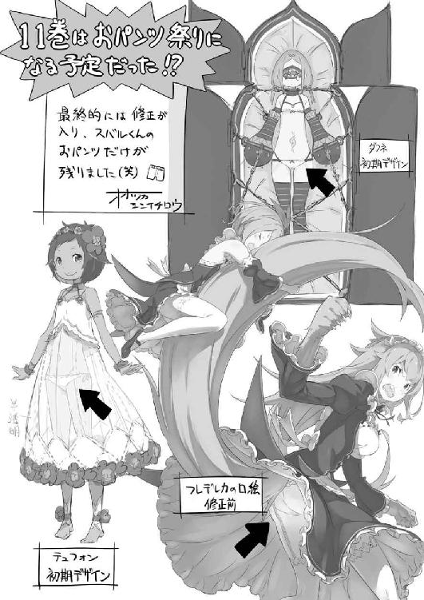
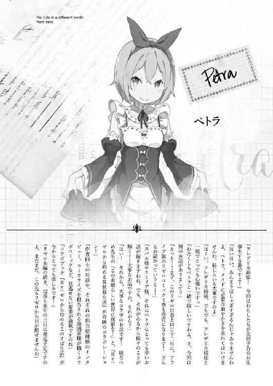
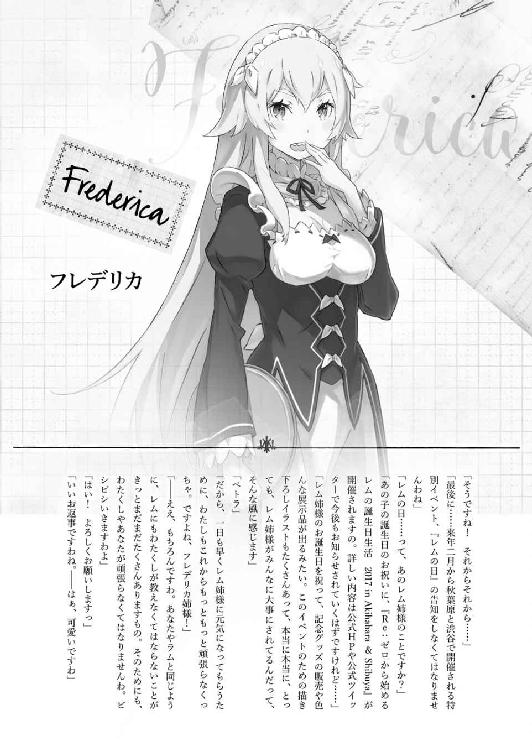
著者
長月達平（ながつき・たっぺい）
１９８７年生まれにして、アニメ放映年最後の刊行！ アニメが終わったら脱力感に襲われるかと思いきやそんなことはなく、むしろ関係者の皆さんのおかげでやる気に燃える日々。十一巻からお話が大きく変化して、大変な反面、楽しい楽しい。
小説投稿サイト「小説家になろう」にて、同タイトルの小説を投稿中。
ＵＲＬ：http://ncode.syosetu.com/n2267be/
イラストレーター
大塚真一郎（おおつか・しんいちろう）
熊本出身のイラストレーター。ゲームを中心に小説の挿絵なども描いてます。代表作は「コンセプション」、「サモンナイトクラフトソード物語」など。
カバー・口絵・本文イラスト／大塚真一郎
装丁／草野剛
Ｒｅ：ゼロから始める異世界生活 11
長月達平
2016年12月23日 発行
(C)Tappei Nagatsuki 2016
本電子書籍は下記にもとづいて制作しました
ＭＦ文庫Ｊ『Ｒｅ：ゼロから始める異世界生活 11』
2016年12月25日初版第一刷発行
発行者 三坂泰二
発 行 株式会社ＫＡＤＯＫＡＷＡ
〒102-8177 東京都千代田区富士見2-13-3
0570-002-001（カスタマーサポート）
年末年始を除く 平日10：00～18：00まで
http://www.kadokawa.co.jp/